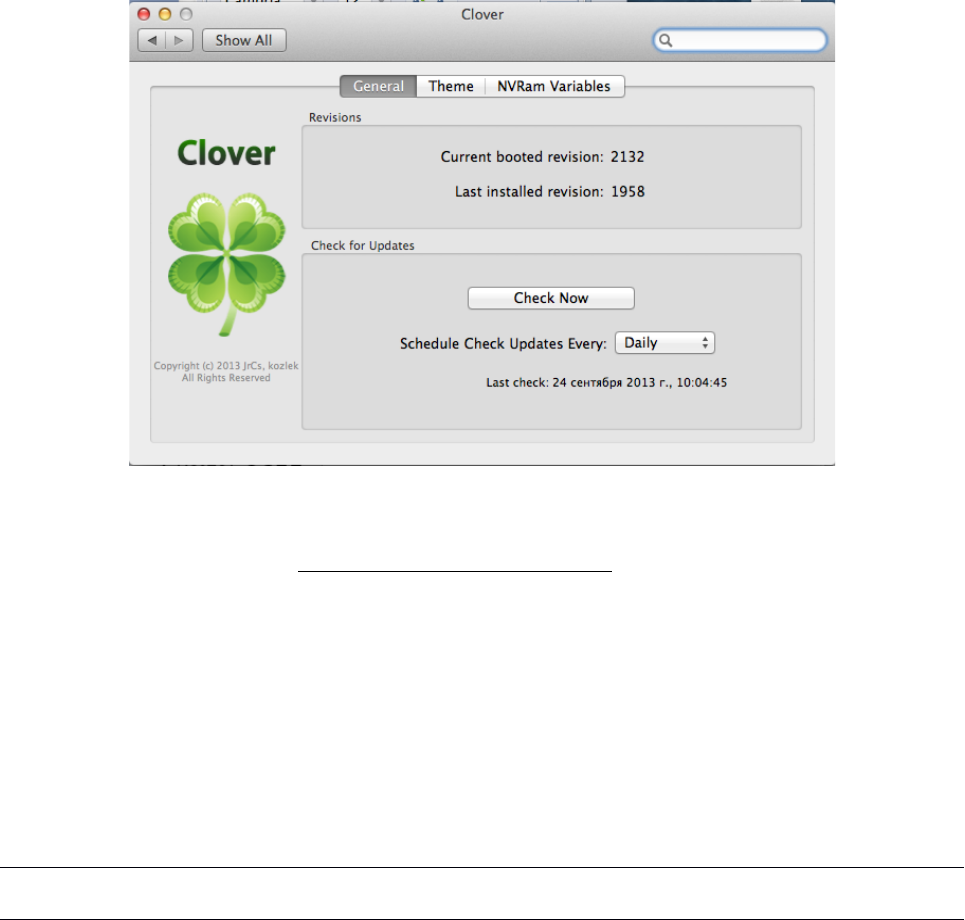
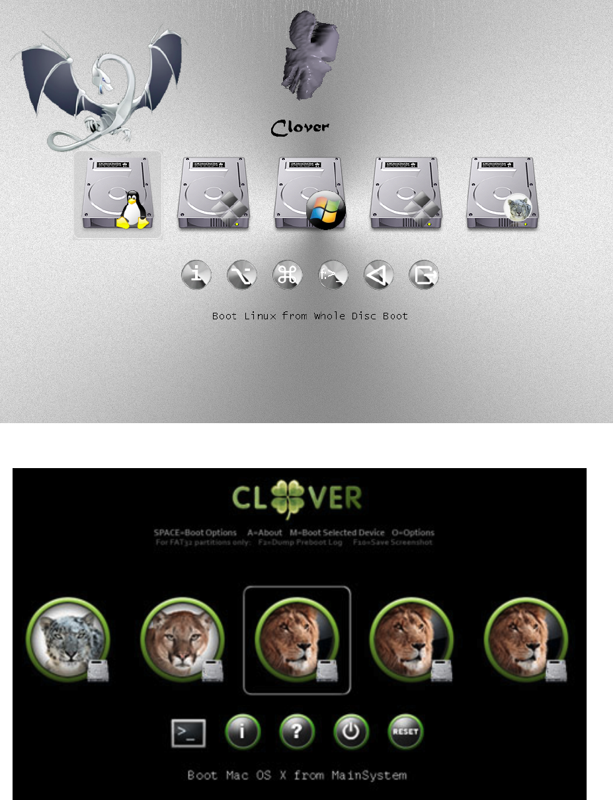
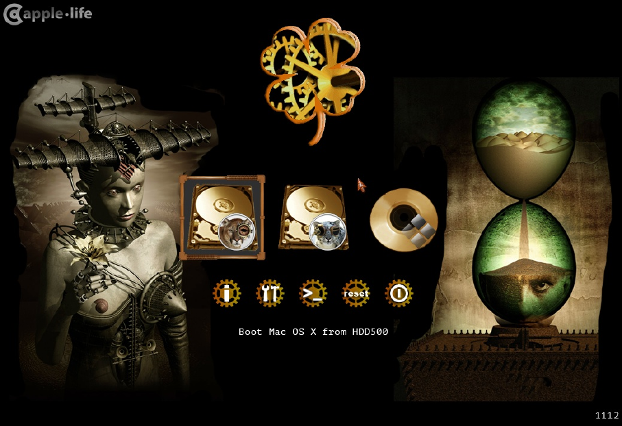
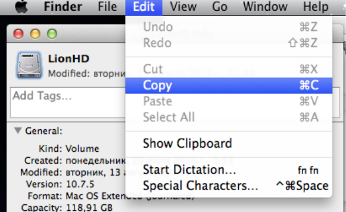
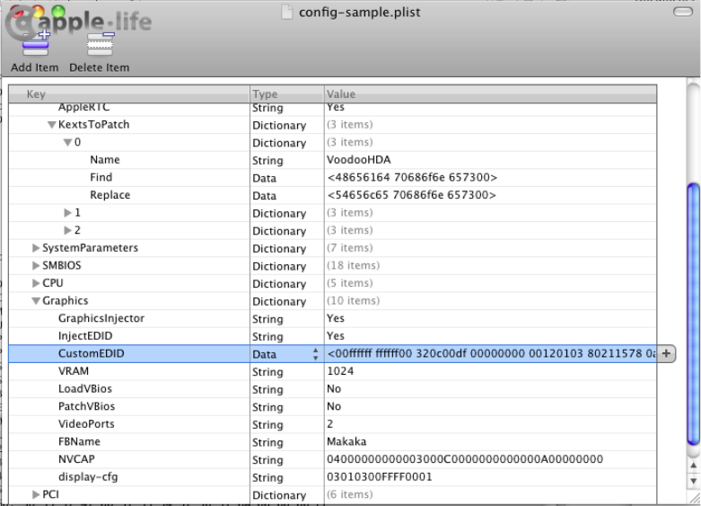
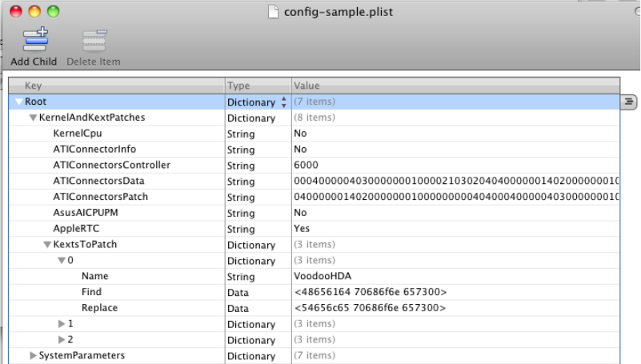
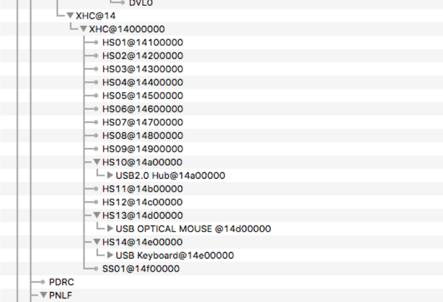
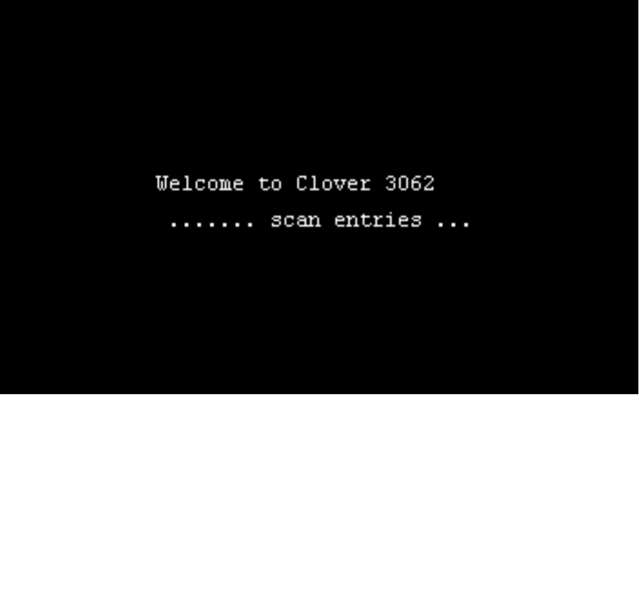
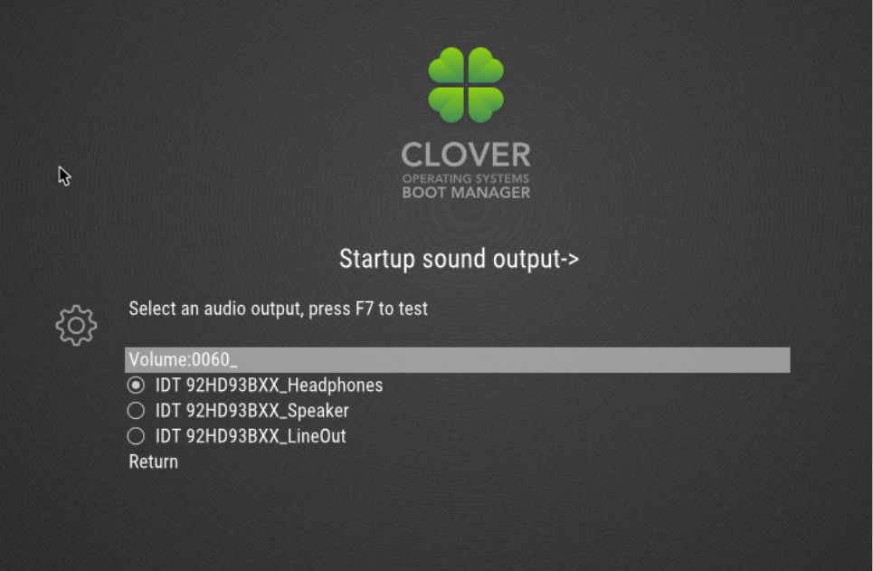

Автор Slice
Клевер цвета хаки. Версия 5.1 ревизия 5129
Москва, 2021г
Оглавление
ПРЕДИСЛОВИЕ...........................................................................................................................................9
ХРОНОЛОГИЯ РАЗРАБОТКИ.................................................................................................................10
ТАКТИКО-ТЕХНИЧЕСКИЕ ХАРАКТЕРИСТИКИ............................................................................14
ЧТО ЕСТЬ ЧТО?........................................................................................................................................16
MBR СЕКТОР................................................................................................................................................17
PBR СЕКТОР..................................................................................................................................................17
BOOT ИЛИ CLOVEREFI.................................................................................................................................18
CLOVERIA32.EFI И CLOVERX64.EFI ИЛИ CLOVERGUI..........................................................................19
CТРУКТУРА ПАПОК.......................................................................................................................................19
ДРАЙВЕРА EFI...............................................................................................................................................21
ЗАГРУЗКА КЕКСТОВ.......................................................................................................................................23
РАЗРАБОТКА..............................................................................................................................................24
РЕКВИЗИТЫ...................................................................................................................................................26
НАПИСАНИЕ КОДОВ......................................................................................................................................27
КОМПИЛЯЦИЯ...............................................................................................................................................28
ИЗГОТОВЛЕНИЕ DEBUG ВЕРСИИ КЛОВЕРА................................................................................................30
ИНСТАЛЛЯЦИЯ........................................................................................................................................31
ИСПОЛЬЗОВАНИЕ ИНСТАЛЛЯТОРА................................................................................................................31
УСТАНОВКА ЗАГРУЗЧИКА ВРУЧНУЮ............................................................................................................34
OSX........................................................................................................................................................34
Linux......................................................................................................................................................36
Windows.................................................................................................................................................36
РЕКОМЕНДУЕМЫЕ ВАРИАНТЫ УСТАНОВКИ.................................................................................................36
ОФОРМЛЕНИЕ..........................................................................................................................................38
ВЫБОР ТЕМЫ................................................................................................................................................38
ТЕМЫ ЗАГРУЗЧИКА КЛОВЕР.........................................................................................................................40
НАСТРОЙКА ИНТЕРФЕЙСА В CONFIG.PLIST..................................................................................................41
<KEY>GUI</KEY>.......................................................................................................................................41
<key>TextOnly</key>..........................................................................................................................41
<key>ConsoleMode</key>..................................................................................................................42
<key>Theme</key>.............................................................................................................................42
<key>EmbeddedThemeType</key>......................................................................................................43
<key>Timezone</key>.........................................................................................................................43
<key>PlayAsync</key>.......................................................................................................................43
<key>CustomIcons</key>...................................................................................................................43
<key>ScreenResolution</key>.............................................................................................................44
<key>ProvideConsoleGop</key>........................................................................................................44
<key>KbdPrevLang</key>..................................................................................................................44
<key>Language</key>........................................................................................................................45
<key>Mouse</key>.............................................................................................................................45
<key>Hide</key>................................................................................................................................45
<key>Scan</key>................................................................................................................................46
<key>Custom</key>............................................................................................................................46
<key>Entries</key>............................................................................................................................................................46
<key>Legacy</key>............................................................................................................................................................46
<key>Tool</key>................................................................................................................................................................46
<key>ShowOptimus</key>..................................................................................................................48
ОФОРМЛЕНИЕ: THEME.PLIST.........................................................................................................................48
<key>Components</key>.....................................................................................................................48
<key>BootCampStyle</key>................................................................................................................49
Клевер цвета хаки. Версия 5.1, ревизия 5129
Москва, 2021г 2
<key>Background</key>.....................................................................................................................49
<key>Banner</key>............................................................................................................................50
<key>Selection</key>..........................................................................................................................50
<key>Font</key>.................................................................................................................................51
<key>Badges</key>............................................................................................................................52
<key>Scroll</key>...............................................................................................................................53
<key>Anime</key>..............................................................................................................................53
<key>Origination</key>......................................................................................................................55
<key>DesignWidth</key>...................................................................................................................................................55
<key>DesignHeight</key>..................................................................................................................................................55
<key>Layout</key>..............................................................................................................................55
<key>Vertical</key>...........................................................................................................................................................55
<key>BannerOffset</key>..................................................................................................................................................56
<key>ButtonOffset</key>...................................................................................................................................................56
<key>TextOffset</key>.......................................................................................................................................................56
<key>AnimAdjustForMenuX</key>...................................................................................................................................56
<key>MainEntriesSize</key>.............................................................................................................................................56
<key>TileXSpace</key>.....................................................................................................................................................56
<key>TileYSpace</key>.....................................................................................................................................................56
<key>SelectionBigWidth</key>.........................................................................................................................................57
ВЕКТОРНЫЕ ТЕМЫ........................................................................................................................................57
Зачем оно нужно..................................................................................................................................57
Как сделать векторную тему.............................................................................................................58
Поддержка стандарта SVG в Кловере..............................................................................................61
Тексты и шрифты...............................................................................................................................63
Атрибуты темы..................................................................................................................................65
Заключение............................................................................................................................................65
КОНФИГУРИРОВАНИЕ АППАРАТНОЙ ЧАСТИ..............................................................................67
СОЗДАНИЕ ФАЙЛА CONFIG.PLIST..................................................................................................................67
BOOT.............................................................................................................................................................68
<key>Timeout</key>...........................................................................................................................68
<key>Fast</key>.................................................................................................................................68
<key>DefaultVolume</key>.................................................................................................................68
<key>DefaultLoader</key>.................................................................................................................68
<key>Legacy</key>.............................................................................................................................68
<key>LegacyBiosDefaultEntry</key>.................................................................................................69
<key>Arguments</key>.......................................................................................................................69
<key>Debug</key>.............................................................................................................................70
<key>NoEarlyProgress</key>.............................................................................................................70
<key>CustomLogo</key>...................................................................................................................................................70
<key>XMPDetection</key>.................................................................................................................70
<key>Secure</key>.............................................................................................................................70
<key>Policy</key>..............................................................................................................................71
<key>WhiteList</key>.........................................................................................................................71
<key>BlackList</key>.........................................................................................................................71
<key>NeverHibernate</key>...............................................................................................................72
<key>SkipHibernateTimeout</key>.....................................................................................................72
<key>StrictHibernate</key>................................................................................................................72
<key>RtcHibernateAware</key>.........................................................................................................72
<key>HibernationFixup</key>............................................................................................................72
<key>SignatureFixup</key>................................................................................................................72
<key>NeverDoRecovery</key>...........................................................................................................72
<key>DisableCloverHotkeys</key>....................................................................................................73
BOOTGRAPHICS.............................................................................................................................................73
<key>DefaultBackgroundColor</key>................................................................................................73
<key>EFILoginHiDPI</key>..............................................................................................................73
<key>UIScale</key>...........................................................................................................................73
Клевер цвета хаки. Версия 5.1, ревизия 5129
Москва, 2021г 3
SYSTEMPARAMETERS....................................................................................................................................73
<key>CustomUUID</key>..................................................................................................................73
<key>InjectSystemID</key>................................................................................................................73
<key>BacklightLevel</key>................................................................................................................73
<key>InjectKexts</key>......................................................................................................................74
<key>NoCaches</key>........................................................................................................................74
<key>NvidiaWeb</key>.......................................................................................................................74
SMBIOS.......................................................................................................................................................74
<key>ProductName</key>..................................................................................................................74
<key>SmUUID</key>.........................................................................................................................75
<key>Family</key>.............................................................................................................................75
<key>FirmwareFeatures</key>...........................................................................................................75
<key>PlatformFeature</key>..............................................................................................................75
<key>BoardSerialNumber</key>........................................................................................................75
<key>BoardType</key>.......................................................................................................................76
<key>BoardVersion</key>...................................................................................................................76
<key>BiosReleaseDate</key>.............................................................................................................76
<key>Mobile</key>.............................................................................................................................76
<key>ChassisType</key>....................................................................................................................76
<key>ChassisAssetTag</key>..............................................................................................................76
<key>SmbiosVersion</key>.................................................................................................................77
<key>BiosVersion</key>.....................................................................................................................77
<key>EfiVersion</key>........................................................................................................................77
<key>BiosVendor</key>......................................................................................................................77
<key>BoardManufacturer</key>.........................................................................................................77
<key>FirmwareFeaturesMask</key>..................................................................................................77
<key>LocationInChassis</key>..........................................................................................................77
<key>MemoryRank</key>...................................................................................................................77
<key>Version</key>............................................................................................................................77
<key>Manufacturer</key>..................................................................................................................77
<key>NoRomInfo</key>......................................................................................................................78
<key>Trust</key>................................................................................................................................78
<key>Memory</key>...........................................................................................................................78
<key>Slots</key>................................................................................................................................79
CPU...............................................................................................................................................................82
<key>FrequencyMHz</key>................................................................................................................82
<key>BusSpeedkHz</key>...................................................................................................................82
<key>UseARTFrequency</key>..........................................................................................................82
<key>QPI</key>.................................................................................................................................82
<key>Type</key>.................................................................................................................................83
<key>SavingMode</key>....................................................................................................................83
<key>QEMU</key>.............................................................................................................................84
<key>TurboDisable</key>..................................................................................................................84
<key>HWPEnable</key>....................................................................................................................84
<key>HWPValue</key>.......................................................................................................................84
<key>TDP</key>.................................................................................................................................84
GRAPHICS......................................................................................................................................................84
<key>GraphicsInjector</key>.............................................................................................................84
<key>Inject</key>...............................................................................................................................85
<key>VRAM</key>.............................................................................................................................85
<key>LoadVBios</key>.......................................................................................................................85
<key>Connectors</key>......................................................................................................................86
<key>DualLink</key>.........................................................................................................................86
<key>BootDisplay</key>....................................................................................................................86
<key>PatchVBios</key>.....................................................................................................................86
Клевер цвета хаки. Версия 5.1, ревизия 5129
Москва, 2021г 4
<key>PatchVBiosBytes</key>.............................................................................................................86
<key>EDID</key>...............................................................................................................................87
<key>Inject</key>..............................................................................................................................................................87
<key>Custom</key>...........................................................................................................................................................87
<key>ProductID</key>.......................................................................................................................................................88
<key>VendorID</key>........................................................................................................................................................88
<key>HorizontalSyncPulseWidth</key>.............................................................................................................................88
<key>VideoInputSignal</key>............................................................................................................................................88
<key>VideoPorts</key>.......................................................................................................................88
<key>FBName</key>..........................................................................................................................88
<key>RadeonDeInit</key>..................................................................................................................89
<key>NVCAP</key>............................................................................................................................89
<key>display-cfg</key>.......................................................................................................................90
<key>NvidiaGeneric</key>.................................................................................................................90
<key>NvidiaSingle</key>....................................................................................................................90
<key>NvidiaNoEFI</key>...................................................................................................................90
<key>ig-platform-id</key>..................................................................................................................90
KERNELANDKEXTPATCHES..........................................................................................................................90
<key>Debug</key>.............................................................................................................................91
<key>KernelCpu</key>.......................................................................................................................91
<key>FakeCPUID</key>....................................................................................................................91
<key>AppleIntelCPUPM</key>..........................................................................................................91
<key>AppleRTC</key>........................................................................................................................91
<key>KernelLapic</key>....................................................................................................................91
<key>KernelPM</key>........................................................................................................................92
<key>KernelXCPM</key>...................................................................................................................92
<key>DellSMBIOSPatch</key>..........................................................................................................92
<key>EightApple</key>......................................................................................................................92
<key>KextsToPatch</key>..................................................................................................................92
Patching with Mask................................................................................................................................95
Символьный патчинг..........................................................................................................................................................95
<key>ForceKextsToLoad</key>..........................................................................................................96
<key>ATIConnectorsController</key>................................................................................................96
<key>ATIConnectorsData</key>........................................................................................................................................96
<key>ATIConnectorsPatch</key>.......................................................................................................................................96
<key>KernelToPatch</key>................................................................................................................99
<key>BootPatches</key>....................................................................................................................99
DEVICES........................................................................................................................................................99
<key>Inject</key>...............................................................................................................................99
<key>Properties</key>........................................................................................................................99
<key>Audio</key>.............................................................................................................................100
<key>USB</key>...............................................................................................................................101
<key>FakeID</key>..........................................................................................................................102
<key>NoDefaultProperties</key>.....................................................................................................102
<key>AddProperties</key>...............................................................................................................103
<key>UseIntelHDMI</key>..............................................................................................................103
<key>HDMIInjection</key>..............................................................................................................104
<key>Arbitrary</key>.......................................................................................................................104
<key>ForceHPET</key>...................................................................................................................105
<key>SetIntelBacklight</key>...........................................................................................................105
<key>SetIntelMaxBacklight</key>....................................................................................................105
<key>IntelMaxValue</key>...............................................................................................................105
<key>DisableFunctions</key>..........................................................................................................106
<key>LANInjection</key>.................................................................................................................106
RTVARIABLES.............................................................................................................................................106
<key>Block</key>.............................................................................................................................106
<key>MLB</key>..............................................................................................................................106
Клевер цвета хаки. Версия 5.1, ревизия 5129
Москва, 2021г 5
<key>ROM</key>.............................................................................................................................106
<key>CsrActiveConfig</key>............................................................................................................107
<key>BooterConfig</key>.................................................................................................................107
DISABLEDRIVERS.......................................................................................................................................108
QUIRKS........................................................................................................................................................108
<key>AvoidRuntimeDefrag</key>.....................................................................................................109
<key>DevirtualiseMmio</key>.........................................................................................................109
<key>MmioWhitelist</key>...............................................................................................................109
<key>DisableSingleUser</key>........................................................................................................109
<key>DisableVariableWrite</key>....................................................................................................110
<key>DiscardHibernateMap</key>...................................................................................................110
<key>EnableSafeModeSlide</key>....................................................................................................110
<key>ProvideCustomSlide</key>......................................................................................................110
<key>ProvideMaxSlide</key>...........................................................................................................110
<key>EnableWriteUnprotector</key>...............................................................................................110
<key>ForceExitBootServices</key>..................................................................................................110
<key>ProtectMemoryRegions</key>.................................................................................................110
<key>ProtectSecureBoot</key>.........................................................................................................111
<key>ProtectUefiServices</key>.......................................................................................................111
<key>RebuildAppleMemoryMap</key>.............................................................................................111
<key>SetupVirtualMap</key>............................................................................................................111
<key>SignalAppleOS</key>...............................................................................................................111
<key>SyncRuntimePermissions</key>...............................................................................................111
<key>FuzzyMatch</key>...................................................................................................................111
<key>KernelCache</key>..................................................................................................................112
<key>AppleXcpmExtraMsrs</key>....................................................................................................112
<key>AppleXcpmForceBoost</key>..................................................................................................112
<key>DisableIoMapper</key>..........................................................................................................112
<key>DisableLinkeditJettison</key>.................................................................................................112
<key>DisableRtcChecksum</key>.....................................................................................................112
<key>DummyPowerManagement</key>...........................................................................................112
<key>ExternalDiskIcons</key>.........................................................................................................112
<key>IncreasePciBarSize</key>.......................................................................................................112
<key>PowerTimeoutKernelPanic</key>............................................................................................113
<key>ThirdPartyDrives</key>..........................................................................................................113
<key>XhciPortLimit</key>................................................................................................................113
ACPI...........................................................................................................................................................113
<key>ResetAddress</key>.................................................................................................................113
<key>ResetValue</key>.....................................................................................................................113
<key>AutoMerge</key>.....................................................................................................................114
<key>HaltEnabler</key>...................................................................................................................114
<key>UseSystemIO</key>.................................................................................................................114
<key>smartUPS</key>......................................................................................................................114
<key>PatchAPIC</key>....................................................................................................................114
<key>DropTables</key>....................................................................................................................115
<key>FixMCFG</key>......................................................................................................................115
<key>DisableASPM</key>................................................................................................................115
<key>SSDT</key>.............................................................................................................................116
<key>DropOem</key>......................................................................................................................................................116
<key>Generate</key>.......................................................................................................................................................116
<key>PLimitDict</key>....................................................................................................................................................117
<key>UnderVoltStep</key>..............................................................................................................................................117
<key>NoDynamicExtract</key>.......................................................................................................................................117
<key>NoOemTableId</key>.............................................................................................................................................117
<key>DoubleFirstState</key>...........................................................................................................................................117
<key>MinMultiplier</key>...............................................................................................................................................117
<key>MaxMultiplier</key>..............................................................................................................................................118
Клевер цвета хаки. Версия 5.1, ревизия 5129
Москва, 2021г 6
<key>Generate</key>.......................................................................................................................................................118
<key>PluginType</key>...................................................................................................................................................118
<key>DSDT</key>............................................................................................................................118
<key>Debug</key>...........................................................................................................................................................118
<key>Name</key>............................................................................................................................................................118
<key>FixMask</key>........................................................................................................................................................119
<key>Fixes</key>.............................................................................................................................................................119
<key>ReuseFFFF</key>...................................................................................................................................................120
<key>PNLF_UID</key>...................................................................................................................................................122
<key>SuspendOverride</key>..........................................................................................................................................122
<key>Patches</key>.........................................................................................................................................................122
Другие ACPI таблицы........................................................................................................................123
<key>FixHeaders</key>...................................................................................................................................................123
<key>RenameDevices</key>............................................................................................................................................123
КОРРЕКТИРОВКА DSDT.......................................................................................................................124
ADDDTGP BIT(0):.......................................................................................................................................126
FIXDARWIN BIT(1):.....................................................................................................................................126
FIXDARWIN7 BIT(16)..................................................................................................................................126
FIXSHUTDOWN BIT(2):................................................................................................................................126
ADDMCHC BIT(3):.....................................................................................................................................126
FIXHPET BIT(4):.........................................................................................................................................127
FAKELPC BIT(5):........................................................................................................................................127
FIXIPIC BIT(6):...........................................................................................................................................127
FIXSBUS BIT(7):.........................................................................................................................................127
FIXDISPLAY BIT(8):.....................................................................................................................................127
FIXIDE BIT(9):............................................................................................................................................127
FIXSATA BIT(10):.......................................................................................................................................127
FIXFIREWIRE BIT(11):.................................................................................................................................127
FIXUSB BIT(12):.........................................................................................................................................128
FIXLAN BIT(13):.........................................................................................................................................128
FIXAIRPORT BIT(14):...................................................................................................................................128
FIXHDA BIT(15):........................................................................................................................................128
FIXMUTEX...................................................................................................................................................128
FIXRTC.......................................................................................................................................................128
FIXTMR......................................................................................................................................................129
ADDIMEI....................................................................................................................................................129
FIXINTELGFX..............................................................................................................................................129
FIXWAK......................................................................................................................................................129
DELETEUNUSED..........................................................................................................................................129
FIXADP1.....................................................................................................................................................129
ADDPNLF...................................................................................................................................................129
FIXS3D........................................................................................................................................................129
FIXACST.....................................................................................................................................................129
ADDHDMI..................................................................................................................................................130
FIXREGIONS................................................................................................................................................130
FIXHEADERS...............................................................................................................................................130
ВЫБОР ПАТЧЕЙ...........................................................................................................................................130
РУЧНАЯ ПРАВКА DSDT..............................................................................................................................131
Пререквизиты....................................................................................................................................131
Создание заготовки...........................................................................................................................132
Декомпиляция......................................................................................................................................132
Что исправлять.................................................................................................................................134
Ошибки синтаксиса...........................................................................................................................134
Смысловые ошибки............................................................................................................................136
НАТИВНЫЙ СПИДСТЕП......................................................................................................................139
CONFIGARRAY............................................................................................................................................140
Клевер цвета хаки. Версия 5.1, ревизия 5129
Москва, 2021г 7
CTRLLOOPARRAY.......................................................................................................................................140
CSTATEDICT................................................................................................................................................141
ПРОБЛЕМА СНА.....................................................................................................................................141
ГИБЕРНЕЙТ..................................................................................................................................................142
КАК ПОЛЬЗОВАТЬСЯ............................................................................................................................144
ПЕРВОЕ ЗНАКОМСТВО................................................................................................................................144
ПОЧЕМУ КЛОВЕР ТАК МЕДЛЕННО ЗАПУСКАЕТСЯ?....................................................................................146
АНАЛИЗИРУЕМ DEBUG.LOG/PREBOOT.LOG................................................................................................148
ЗАПУСК OSX НА НЕПОДДЕРЖИВАЕМОМ ЖЕЛЕЗЕ......................................................................................153
БЛОКИРОВКА КЕКСТА.................................................................................................................................155
ИМЯ СЛОТА (AAPL,SLOT-NAME)...............................................................................................................157
HDMI ЗВУК.................................................................................................................................................157
СТАРТОВЫЙ ЗВУК КОМПЬЮТЕРА................................................................................................................157
NVRAM, IMESSAGE, MULTIBOOT..............................................................................................................159
ИСПОЛЬЗОВАНИЕ НЕСКОЛЬКИХ КОНФИГУРАЦИЙ.......................................................................................161
КАК СДЕЛАТЬ, ЧТОБЫ BOOT.EFI НЕ СЛИШКОМ СПАММИЛ НА ЭКРАНЕ?....................................................164
ЧАВО..........................................................................................................................................................164
В. Хочу попробовать Кловер, с чего начать?..................................................................................165
В. Какая версия Кловера лучше всего подходит под мое железо?.................................................165
В. Не работает..................................................................................................................................165
В. Установил Кловер, но получаю черный экран.............................................................................165
В. Вижу на экране 6_ и больше ничего не происходит....................................................................166
В. Происходит загрузка только до текстового аналога БИОСа с пятью пунктами, верхний –
Continue>............................................................................................................................................166
В. Установил Кловер на флешку, загрузился с нее, и не вижу своего HDD...................................166
В. При УЕФИ-загрузке не вижу раздела с МакОСью, только легаси............................................166
В. При УЕФИ-загрузке Виндоус выглядит как легаси, хотя он EFI...............................................167
В. Выставил родное разрешение в загрузчике, но экран в черной рамочке....................................167
В. При попытке запуска ОСи зависает на черном экране..............................................................167
В. Ядро начинает грузиться, но паникует после десятой строки Unable To find driver for this
platform \"ACPI\"................................................................................................................................167
В. Система начинает грузиться, но стопорится на still waiting for root device….......................167
В. Система грузится до сообщения: Waiting for DSMOS…............................................................167
В. Система проходит это сообщение, но дальше ничего не меняется, хотя винчестер
жужжит, как будто система грузится.........................................................................................168
В. Система грузится до сообщения: [Bluetooth controller..............................................................168
В. Система загрузилась, все хорошо, но в Систем Профайлере ошибки…...................................168
ЗАКЛЮЧЕНИЕ.........................................................................................................................................168
Клевер цвета хаки. Версия 5.1, ревизия 5129
Москва, 2021г 8
О чем идет речь? Да уж разумеется не о цветочке, растущему на лугу на радость
коровам. Речь идет о программном обеспечении, о загрузчике операционных систем, который
позволяет на обычном компьютере запустить необычную систему – Mac OSX. Apple этого
делать не разрешает, в первую очередь мотивируя тем, что “мы не можем обеспечить
работоспособность на компьютерах, произведенными не компанией Apple”. Что ж, ставим
систему на свой страх и риск. Ну и не стоит получать какую-то коммерческую выгоду из
этого, во избежание других юридических сложностей. Неэппловский компьютер с
установленной системой Mac OSX называется Хакинтош, происхождение слова понятно.
Чтобы загрузить МакОС на Хакинтоше, нужен специальный загрузчик, их много
разных, но по своей основе можно разделить на два класса: FakeEFI и RealEFI.
FakeEFI изобретен David Elliot много лет назад, и действовал по-простому принципу:
сделаем вид, что у нас ЕФИ уже отработала, оставим в памяти следы его деятельности (boot-
args и все дерево таблиц), оставим в памяти EfiRuntime в упрощенном виде "Не
поддерживается", и запустим ядро mach_kernel. Так работает Хамелеон, и работает успешно,
но за небольшими исключениями типа панели "Загрузочный Диск". Не исключено, что со
временем Эппл даст нам и другие проблемы, связанные с отсутствием Рантайм Сервисов.
Январь 2013: это случилось! iMessage перестал работать, потому что ему обязательно нужен
SetVariable(), который в Хамелеоне "Не поддерживается". Кое-как преодолели, но у
Хамелеона опять проблемы. Варианты легаси-загрузчиков: Chameleon, enoch, Chimera, PC-
EFI, revoboot. К 2020 году можно уже констатировать смерть этого метода?
RealEFI должен был бы быть прошит вместо БИОСа, но для тех, у кого материнская плата на
основе BIOS, придуман загружаемый EFI. Эта система загрузки EFI на машине с BIOS
придумана Intel, проект с открытыми исходными кодами на сайте tianocore.org. (Исходный
проект канул в лету! Он сохранился только в проекте Кловера). Собственно этот загрузчик
называется DUET. Да вот беда, EFI-то он загружает, а вот загрузка операционной системы
Mac OSX там не предусмотрена. Требуется следующий шаг, приспособить DUET под
требования Mac OSX. На новых материнских платах EFI уже есть, но он так же непригоден
для загрузки Хакинтоша. Варианты EFI-загрузчиков делятся на две категории: для PC BIOS -
bareboot, XPC, и для UEFI BIOS — Ozmosis, OpenCore. Clover служит для обеих категорий.
Названию Clover данный загрузчик обязан одному из первооснователей проекта
kabyl’а, который увидел сходство клавиши “Command”, существующей только на Маках, с
четырехлистным клевером.
Четырёхли́ стный кле
́
вер— одиночное растение клевера, обладающее по
крайней мере одним четырёхпластинчатым листом, в отличие от обычных
трёхпластинчатых. В западной традиции существует поверье, что такое
растение приносит удачу нашедшему, в особенности если оно найдено
случайно
1
[1].
По легенде каждая из пластинок четырёхпластинчатого листа представляет что-то
конкретное: первая — надежду, вторая — веру, третья — любовь, а четвёртая —
удачу[2].
Кстати, первоначальный зеленый логотип скорее похож на заячью капусту, чем на клевер. А именно
Oxalis, и он есть в цветочных магазинах как трехлистный, так и четырехлистный :)
В русском варианте мы называем загрузчик «Кловер». То есть не Клевер.
1 Интересно, а как можно найти клевер случайно? Регулярно щипать травку на лугу?!
Клевер цвета хаки. Версия 5.1, ревизия 5129
Москва, 2021г 9
Разработка проекта идет на форумах
http://www.projectosx.com/forum/index.php?showtopic=2562&st=0 RIP
https://applelife.ru/threads/clover.42089/
http://sourceforge.net/projects/cloverefiboot/
https://www.insanelymac.com/forum/327-clover/
https://github.com/CloverHackyColor/CloverBootloader
Есть еще масса форумов с умным видом рассказывающих про Кловер, но они не имеют к
реальным разработчикам никакого отношения.
По тексту книги:
Красным цветом выделено то, на что нужно обратить внимание. Цвет модератора.
Зеленым цветом то, что устарело и более не поддерживается, сохраняется в тексте для
справки. Цвет плесени.
Синим цветом выделены заголовки.
Черным жирным выделены ключевые слова.
Необходимость нового загрузчика возникла из-за неспособности Хамелеона загрузить
появившуюся тогда систему 10.7 (Lion).
Проект стартовал 4 марта 2011 года по инициативе Kabyl, который, однако, рассказав
все, что он успел понять к тому времени, от разработки уклонился, и вскоре вообще исчез. У
меня есть серьезные подозрения, что его уже нет на этом свете.
Первый запуск системы MacOSX модифицированным DUETом состоялся 6 апреля
2011года. http://www.projectosx.com/forum/index.php?
showtopic=2008&view=findpost&p=13810
4 мая сформулированы серьезные проблемы нового загрузчика, без их решения в
новом проекте не было смысла. Пауза затянулась до августа, ибо в одиночку справиться с
этими проблемами мне представлялось нереальным.
Тем временем ожил Хамелеон, справившись с загрузкой Лиона, и я какое-то время
поработал над своим бранчем. Однако админы Хамелеона меня игнорировали, так что я это
бросил. Затем появился Нинзя со своим iBoot, и я присоединился к нему в попытках сделать
EFI-bootloader и решить висящие проблемы. Этот проект стартовал с августа 2011, и попутно
я дорабатывал DUET (CloverEFI), используя сумму CloverEFI+iBoot. Однако, грязное
происхождение этого айбута не позволяло как следует развернуться в разработке.
09 августа 2011 с участием dmdimon сделан русский шрифт для загрузчика. Я тем
временем делаю SMBIOS и ACPI на значительно более высоком уровне, чем это было в
Хамелеоне.
19 октября 2011 наконец-то решена проблема запуска Дуета на ноутбуке. До этого был
просто ребут.
14 ноября 2011 появление кошек в интерфейсе Кловера. То есть для 10.4 рисуем
Тигра, для 10.5 Леопарда и так далее. Милое нововведение! Внешний вид играет роль.
14 декабря 2011 решена проблема паники с памятью на младших системах OSX, на
Лион и старше такой проблемы почему-то не было.
05 января 2012 решена проблема сна. Именно с этого момента можно было считать
проект жизнеспособным. К этому времени Нинзя уже ушел со сцены, и я решил стартовать
Клевер цвета хаки. Версия 5.1, ревизия 5129
Москва, 2021г 10
собственный проект графического меню загрузчика на основе известного уже rEFIt. Он
лицензионно чистый, и теперь можно было бороться за международное признание проекта.
Так появился Clover-v2.
Создание новой оболочки заняло два месяца, и первая публикация состоялась 29
февраля 2012. Собственно rEFIt уже существовал, он просто был не пригоден для
компиляции в среде EDK2, и все его библиотеки пришлось переписывать и заменять своими.
Ну и добавить все хакинтош-специфичное в проект. По ходу совместно с jadran были
разработаны средства компиляции проекта. Теперь с помощью gcc-4.4, и теперь 64 бита.
09 марта 2012 Дмазар, знакомый мне с августа 2011, присоединился к проекту со
своей идеей сделать UEFI загрузчик на основе Кловера.
31 марта 2012 Гык сделал интерактивность для ввода параметров в оболочке
загрузчика - Options Menu.
12 апреля 2012 crazybirdy сделал инсталлятор Кловера.
21 апреля 2012 Дмазар победил УЕФИ-загрузку, но продолжал работать над проектом
— улучшать и исправлять. То есть создан OsxAptioFixDrv.
05 июня 2012 года появился pcj и предложил свои исходники с новыми технологиями:
DSDT patch, Kexts Inject, Kernel patch, что подняло наш загрузчик на совершенно новый
уровень, недостижимый конкурентами.
18 сентября 2012. Пене призвал меня и Дмазара за круглый стол подумать насчет
проблемы iCloud. Решено к 21 сентября.
30 сентября 2012 появление мыши в интерфейсе загрузчика.
19 октября 2012 сделана анимация в оболочке загрузчика.
Октябрь — декабрь 2012 шаг за шагом сделано нативное разрешение в загрузчике для
Nvidia, ATI, Intel, для CloverEFI и для UEFI.
Эти достижения подняли планку, каким должен быть графический интерфейс хорошего
загрузчика. Хочу так же отметить вклад Blackosx в совершенствование поддержки тем.
09 января 2013 решена проблема платного iMessage, чего не смогли сделать в
Хамелеоне. Это была принципиальная победа самой идеи EFI загрузчика. Ничего
невозможного нет, и в Хамелеоне месяц спустя повторили этот метод, но юзеры теперь
пошли в Кловер.
Весна 2013. Усилиями JrCs Кловер оброс дополнительными утилитами и
интернационализацией. 20 языков в установщике, контрольной панели и сервисе
автоматического обновления. Значительно выросшие по функциональности скрипты
компиляции, старта и завершения. Загрузчик стал комплексом по обслуживанию хакинтош-
системы.
27 июля 2013 наконец-то решена проблема сна при UEFI загрузке, висевшая с осени
2012. Кажется с обновлением ОС объявилась.
29 сентября 2013 еще и поправлен уход в сон, выключение и рестарт при UEFI
загрузке. С этого момента можно ставить UEFI загрузку как основной способ на тех
компьютерах, где это возможно.
20 января 2014 сделана возможность глубокого сна — Hibernation. Не во всех случаях,
но на настоящий момент Кловер — единственный загрузчик, который это может.
Февраль 2014. Награда «Проект месяца» на сайте sorceforge.net.
Клевер цвета хаки. Версия 5.1, ревизия 5129
Москва, 2021г 11
05 апреля 2014 года. Объявлено завершение разработки на ревизии 2652. Это,
разумеется, не отменяет возможных улучшений в будущем, просто ничего не будет меняться
кардинально основное уже сделано.
Июнь 2014 года. Эппл выложила систему 10.10DP1 Yosemite, начались первые успехи
инсталляции и новые исправления в Кловере для новой системы. И вот тут выяснилось, что
Хамелеон не способен загрузить эту систему. Есть одиночные успешные отчеты от
загрузчиков bareBoot и Ozmosis, которые также являются EFI-загрузчиками, использующими
часть кодов Кловера. Кловер стал основным Хакинтошевским загрузчиком. Хамелеон снова
поправили, он грузит Йосю, но пока без iMessage.
21 августа 2014. Дмазар исправил работоспособность NVRAM при UEFI-загрузке для
некоторых, у кого раньше не работало.
Тем временем версия 2к перешагнула через 3000 ревизию. Новый компилятор с
оптимизацией LTO, новый размер кодов, исправления старых багов, улучшения в
алгоритмах. Почти ничего нового, но Кловер стал лучше.
Январь 2015. Раз Кловера-3, аннонсированного Апианти, до сих пор нету, Кловер-2
приобрел версию 2.3k, что отражает ревизию >3000.
Все разработчики разбежались, сайт projectosx.com прекратил существование. Я остался
один, но продолжаю работу, хотя и без особого рвения. У меня новая игрушка — Wine.
Июнь 2015. Появление системы 10.11 El Capitan. Кловер загрузил ее без вопросов.
Хамелеон опять застрял. Справились, но, как я вижу, интереса к Хамелеону обычные юзеры
уже не проявляют. Интерес проявляют только все те же 6 человек, которые его
поддерживают. Хамелеоном/Химерой по-прежнему пользуются новички, начавшие жизнь с
Мультибиста, и еще не слышавшие про Кловер, либо пользователи AMD CPU, которые не
разработчики, и они просто не знают, что делать с Кловером. Одна новая проблема, инжект
кекстов перестал работать. Решение предоставил случайно заглянувший на огонек юзер
solstice (ревизия 3258). Пользователи Озмосиса надолго остались без новой системы, прежде
чем его разработчики предоставили новую версию с этим патчем.
Весна 2016. Zenith432 сделал компиляцию с помощью Xcode, мы больше не
нуждаемся в gcc.
Лето 2016. С новыми кодерами новые серьезные изменения в интерфейсе Кловера.
Скролл везде, где нужно, чекбоксы и радио-буттоны, новые стили оформления.
Осень 2016. Совместно с vit9696 сделана долгожданная поддержка технологии
FileVault2.
Зима 2017. Вышли на ревизию 3999. Дальше будет 4000 и версия 2.4k. Кловер по-
прежнему нуждается в развитии, ибо нужна поддержка новых систем, вот для Сиерры
10.12.4, к примеру, понадобился новый патч.
Лето 2017. Появилась система Хай Сиерра с новой файловой системой apfs. Для
Хамелеона пока драйвера нет. Для EFI загрузчиков есть родной от Apple. Кстати мультибист
давно перешел на Кловер, как и другие коммерческие проекты.
Осень 2017. Победа над черным экраном Радеонов. Это сделал vit9696 в своем кексте
WhateverGreen, Mieze рассказала, как это устроено, и я добавил как галочку в конфиге
Кловера RadeonDeInit=true. Решение неполное, в смысле завода графики, но достаточно
хорошее для сна Радеонов.
И опять же vit9696 нашел решение как поправить AptioFix, чтобы работал нативный
NVRAM, теперь почти у всех!
Клевер цвета хаки. Версия 5.1, ревизия 5129
Москва, 2021г 12
Весна 2018. vit9696 разобрался, как используется RTC в macOS, и таким образом
решена проблема сохранения ключа гибернации, да и другие проблемы RTC.
Июнь-декабрь 2018. Поддержка векторной графики SVG, и, соответственно,
масштабируемых тем.
Январь 2019. Появление звука в интерфейсе Кловера, благодаря Goldfish64.
Июль 2019. Серия новых патчей для загрузки 10.15. И ревизия 5000! Теперь Кловер
получил версию 2.5k.
Май 2019. vit9696 создал новый загрузчик OpenCore на новых идеях со своей
идеологией, он более перспективный, но и Кловер продолжает жить и развиваться. Будем
сосуществовать и сотрудничать. Кловер стоило бы подчистить от ненужного, от кривого,
взять лучшее из OpenCore, но это нереально большая работа, улучшаемся не спеша.
Хочу еще отметить, что к команде Кловера присоединился Vector-sigma, который взял на себя
весь user-space. Контролирует скрипты компиляции, исполнения, инсталлятор, и создал
специальное приложение Clover.app. То есть контролирует все то, что раньше было под
опекой JrCs. Так что обвязка загрузчика также живет и развивается.
Сентябрь 2019. Мы осуществили капитальное преобразование всего проекта,
переехали на GitHub, который после покупки их Майкрософтом стал стабильным и быстрым
сайтом, и вместе с этим произошли следующие изменения:
- теперь исходники Кловера контролируются не протоколом SVN, а протоколом GIT. В этом
есть свои минусы, а именно проблема с нумерацией ревизий, но есть и свои плюсы,
например возможность делать бисекцию для поиска недавно сделанной ошибки.
- надоело плестись за странными "улучшениями" EDK2. До этого пользовались стабильной
версией UDK2018, но он явно устарел, а с новым EDK2 Кловер оказался просто
несовместим. Решение в том, чтобы включить все необходимые библиотеки из нового EDK2
просто в проект Кловера уже с нашими патчами, и добавить те библиотеки, которые уже
исключили из него, взяв их из старого UDK2018. Речь идет о поддержке легаси-компьютеров
на Core2Duo и тому подобных. Теперь Кловер не нуждается во внешних библиотеках, все
необходимое содержится в его репозитории, и все это будет обновляться разработчиками
самого Кловера, основываясь на изменениях в EDK2. Кстати, бисекция стала возможной
именно с отказом от любых внешних исходников, все необходимое содержится в одной
папке.
- теперь основным компилятором проекта снова стал gcc-10, в отличие от кланга он способен
осуществлять LinkTimeOptimisation, то есть отбрасывание неиспользуемых библиотек на
этапе линковки. Размер кодов уменьшился с 960кб до 870кб! При этом мы получаем
дополнительную диагностику возможных ошибок. Одна из них в том, что EDK2 разрешает
использование указателей на пустой массив, а это противоречило некоторым алгоритмам
Кловера. После небольшой поправки оформление заиграло по-другому! А также могли и
другие баги уйти.
- изменена структура папок drivers, поскольку мы полностью отказались от идеи компиляции
в 32бита, и указание 64бита является избыточным.
- изменена структура папок kexts, теперь можно в интерфейсе подключать и отключать
разные версии кекстов для проверки, который из них лучше работает.
Январь 2020. Следующее капитальное преобразование Кловера. Появился новый
разработчик Jief Machak, который предложил перевести проект на С++. Это нетривиальное
действие, поскольку требует изменения некоторых библиотек и способов компиляции. Но он
Клевер цвета хаки. Версия 5.1, ревизия 5129
Москва, 2021г 13
пришел не с пустыми руками, он принес необходимые файлы, датированные 1997 годом,
очевидно уже тогда решал такую проблему с С++. А теперь приспосабливает к новым
условиям.
Я принял вызов и вот мы уже в команде начали преобразования в Кловере. Еще и Pene
нам помогает. Разумеется, С++ подразумевает компиляцию файлов написанных и на С, так
что на первом этапе перехода на С++ просто ничего не произошло. Но нет смысла говорить
про новый язык, а программировать на старом. Чтобы воспользоваться преимуществами С+
+, надо ими пользоваться. Оставим Линуса Торвальдса наедине со своими проклятиями в
адрес С++, его мотивы понятны, линукс уже написан на С, и его уже не переделаешь,
остается только искать этому оправдания. А мы можем переписать свои исходники, хотя бы
частично, все же Кловер намного меньше по размерах, да и переписывать можно не все,
помня о совместимости языка. И все же, что мы делаем? Вводим новые парадигмы
программирования и переписываем коды под новые требования. И это элементарно ведет к
его переосмыслению, разработке новых алгоритмов, и устранению старых багов,
распутыванию макарон. ГУИ написан на новых алгоритмах, на классах, и потому старые
темы пострадали, но их можно вылечить, да и в Кловере еще не все поправлено, работа идет.
А результат преобразований это более быстрая работа и устранение багов, которые раньше
никак не могли распутать.
Лето 2020. Появление системы 11.0 Big Sur показало, что миф о неслетаемости
символьных патчей несостоятелен. Слетело, как в Кловере, так и в ОпенКоре. Что ж,
работаем дальше.
Осень 2020. Снова Jief Machak взялся за работу, за соединение загрузчиков Кловер и
ОпенКор. ОпенКор уже грузит БигСюра, потому что vit9696 сделал загрузку кекстов прямо в
кеш, а Кловеровский метод инжекции в дерево устройств БигСюр с его новыми
требованиями безопасности отверг. Что проще, разобраться в этой проблеме, или взять метод
у конкурентов? Джиф решил пойти вторым способом. Что ж, пусть будет так. Как
объединять? Идея Виталия, чтобы взять ГУИ Кловера как набор библиотек и прицепить к
ОпенКор, к сожалению нереальна, Кловер уже написан на С++, и обратно на С библиотеки
его уже никто не распилит. Зато взять библиотеки ОпенКора и запустить их из Кловера нет
проблем, просто кропотливый труд с делегированием полномочий. Итак, он это сделал.
Теперь объединенный загрузчик, из двух репозиториев,
https://github.com/CloverHackyColor/CloverBootloader
https://github.com/CloverHackyColor/OpenCorePkg
компилируется как единое целое, запускается как Кловер и выглядит как Кловер с его ГУИ и
настройками, а при выборе системы, которую нужно загрузить, делегирует полномочия в
ОпенКор и отдает ему управление. Да, ОпенКор не оригинальный, раз его команда не желает
сотрудничать, нам ничего не остается, как вести свою версию, и вносить свои изменения.
Январь 2021. И снова Джиф сделал дело. Теперь Кловер способен запускать DMG
файлы, и конкретно, BigSur Recovery, а также и инсталлеры.
EFI – Extensible Firmware Interface – расширяемый интерфейс доступа к аппаратно-
зависимым функциям. В отличии от BIOS, который занимает 64кб и написан в 16-битных
кодах, EFI занимает от 4Мб, написан в 32 или 64-битных кодах, и позиционируется как
аппаратно-независимый, хотя… конечно, чудес не бывает, и 100% совместимости с любой
платформой добиться невозможно. Реальный UEFI BIOS разумеется аппаратно-зависимый.
Клевер цвета хаки. Версия 5.1, ревизия 5129
Москва, 2021г 14
Clover – это EFI загрузчик операционных систем, для компьютеров уже имеющих
UEFI BIOS (Unified EFI...), и для компьютеров, не имеющих такового. При этом сами
операционные системы могут поддерживать EFI- загрузку (OSX, Windows 7-64EFI, Linux),
либо нет (Windows XP), в последнем случае предусмотрен legacy-boot – возврат к старой
схеме BIOS-загрузки через бутовые сектора. Строго говоря, Кловер это не загрузчик, а скорее
Boot Manager, который выполняет подготовку и запуск родных загрузчиков разных ОС
(boot.efi, grub.efi, bootmgfw.efi).
EFI – это не только начальный этап загрузки ОС, она создает также таблицы и
сервисы, которые доступны для использования в ОС, и её работоспособность зависит от
корректности этого этапа. Нельзя на встроенном UEFI загрузить OSX, также, как нельзя
загрузить OSX из чистого Дуета. CloverEFI и CloverGUI выполняют немалую работу по
корректировке встроенных таблиц для возможности запуска OSX:
- таблица SMBIOS (DMI) заполняется данными, эмулирующими реальные компьютеры
Apple Macintosh – условие запуска OSX. Серийные номера выдуманные, но
подходящие. Впрочем, желательно, чтобы юзер подставлял уникальные номера.
Почему, к примеру, GRUB не грузит ХакОС? Да потому что они не имеют права
включать в него серийные номера маков...
- ACPI таблицы, содержащиеся в ROM компьютера, как правило содержат ошибки и
недостатки, чаще всего из-за лени производителей: в таблице APIC неправильное
число ядер ЦПУ, отсутствуют данные NMI, в таблице FACP отсутствует регистр Reset,
неправильный профиль питания, в таблицах SSDT отсутствуют данные для EIST, а уж
про DSDT вообще длинный разговор. То есть МакОС имеет свои требования к АЦПИ,
которые не совпадают с АЦПИ обычных компьютеров. Clover пытается все это
поправить. Это вообще неудачная идея использовать одну и ту же DSDT для разных
систем, они разные не только в исполняемой части;
- OSX также стремится получить от загрузчика данные о дополнительных устройствах,
таких как видеокарта, сетевая, звуковая и т.д. через механизм Device Properties string.
Clover формирует такую информацию;
- для компьютеров на основе BIOS характерно использование USB на начальной стадии
загрузки в режиме Легаси, что становится неприемлемым при передаче управления в
ОС. Загрузчик осуществляет переключение режима работы USB;
- также OSX обменивается с EFI информацией через специальную память NVRAM,
доступ к которой осуществляется через RuntimeSevices, отсутствующие в легаси-
загрузчиках. Кловер предоставляет такой обмен информацией, причем двухсторонний,
что дает правильную работу Firewire, возможность загрузки Веб-драйвера Нвидии,
возможность использование панели управления "Загрузочный Диск" для
автоматической перезагрузки в другую систему. NVRAM нужен для возможности
регистрации в сервисах iCloud и iMessage, для гибернации, для работы FileVault2 и
др.;
- необходим протокол ConsoleControl, отсутствующий в Дуете, другие подобные
мелочи;
- необходимо заполнить некоторые данные в EFI/Platform через протокол DataHub,
отсутствующий в Дуете, и не всегда присутствующий в УЕФИ. Наиболее серьезная
величина FSBFrequency, определение которой является задачей загрузчика, данные в
ДМИ неточные, либо вообще отсутствуют, а еще мы используем этот протокол для
датчиков, правда не все хакинтошники этим пользуются, а кто-то идет своим путем,
удаляет DataHub, и удивляется, почему у него не что-то работает;
- перед началом работы CPU должен быть правильно проинициализирован, но,
поскольку системные платы изготавливают универсальными, на целый круг разных
ЦПУ, во внутренних таблицах отсутствуют данные по процессору, либо представлены
Клевер цвета хаки. Версия 5.1, ревизия 5129
Москва, 2021г 15
какие-то универсальные, некорректные в частном случае. Кловер осуществляет
полный детект установленного ЦПУ и делает необходимые коррекции в таблицах, и в
самом ЦПУ. Как один из результатов - включается режим Турбо;
- БИОС как-то использует память компьютера, разбивает на регионы определенного
назначения, но часто это делается не так, как нужно для запуска macOS;
Корректировкой карты памяти, и другими связанными мелочами занимается драйвер
OsxAptioFixDrv, и его потомками, который по ряду причин выделен из Кловера в
отдельный модуль, в первую очередь, чтобы не мешать легаси-загрузке;
- еще одна мелочь. Исходники ДУЕТа, да и всего ЕДК2 написаны универсальными под
разное железо...., но зависимость от железа сделана через константы. То есть
предполагается, что пользователь компилирует Дует под одну конкретную
конфигурацию. Цель Кловера — быть универсальным, с автодетектом платформы.
Все это осуществляется автоматически, и новичок может использовать Кловер даже
ничего не понимая в указанных проблемах. Ну а продвинутому пользователю Кловер
предоставляет возможности по изменению вручную множества параметров. Их рассмотрение
и представляет собой цель этой книги. Кстати, некоторые начинают свое знакомство с
Хакинтошем с изучения конфига. Это неправильный подход. Конфиг будете исправлять
после того, как что-то попытаетесь загрузить. Об этом позже.
Вкратце еще раз, Кловер осуществляет четыре основные функции:
1. Перехватывает управление, чтобы не БИОС грузил операционную систему, чтобы это
делалось через Кловер. БИОС вызывает Кловер, а тот грузит операционку, кстати еще
и спросит пользователя, какую из нескольких операционок загружать.
2. Модифицирует данные, которые БИОС передает в операционку, это основное
требование для загрузки МакОС. Например серийный номер.
3. Модифицирует саму систему МакОС, чтобы она работала на этом железе.
4. В некоторых случаях Кловер поправляет состояние устройств, чего в свое время не
сделал БИОС. Примеры: ResetHDA, RadeonDeInit, HaltEnable.
Виндоусу и Линуксу пункт 3 не нужен, да и второй редко. А вот по первому пункту
необходимы разъяснения, поскольку новички начинают с вопроса «Почему не грузится».
При включении или при перезагрузке компьютера загрузка операционной системы с
помощью Кловера происходит по следующему пути.
Вариант А. Компьютер основанный на БИОС (легаси-загрузка)
BIOS→MBR→PBR→boot→CLOVERX64.efi→OSloader (boot.efi в случае MacOSX,
bootmgfw.efi для Windows, grub.efi для Linux).
Непонятно? Словами:
1. При включении компьютера стартует БИОС. Он по своим установкам выбирает, с какого
диска стартовать, если легаси-загрузка.
2. БИОС считывает нулевой сектор с этого диска. Сектор называется MBR. Коды
записываются в память, и БИОС передает им управление.
3. Программа, заложенная в MBR ищет загрузочный раздел на этом диске, считывает оттуда
первый сектор в память, и передает его кодам управление. Это называется PBR сектор.
4. Программа, заложенная в PBR отыскивает файл с названием boot в своей файловой
системе, загружает его в память, и передает ей управление. В нашем случае в файле boot
содержится DUET, или CloverEFI.
5. CloverEFI ищет файл CloverX64.efi, загружает его, и передает ему управление.
Клевер цвета хаки. Версия 5.1, ревизия 5129
Москва, 2021г 16
Далее как и в варианте Б.
Вариант Б. Компьютер, основанный на УЕФИ БИОС (новая схема, УЕФИ-загрузка)
UEFI_BIOS→CLOVERX64.efi→OSloader (либо BootX64.efi)
1-5. Если БИОС UEFI, то он сам способен отыскать стартовый EFI модуль в разделе EFI. По
умолчанию такой файл должен называться EFI/BOOT/BOOTX64.EFI. В некоторых БИОСах
прошито название EFI/microsoft/boot/bootmgfw.efi. А мы умеем научить БИОС грузить сразу
файл EFI/CLOVER/CLOVERX64.EFI. Только этому надо еще самому научиться. Для тех, кто
не умеет, файл EFI/BOOT/BOOTX64.EFI также подменяется Кловером.
6. Наконец мы загрузили CLOVERX64.EFI, видим выбор операционных систем, и можем
какую-то из них загрузить.
Чтобы все это осуществлялось, следующие файлы должны быть прописаны в следующих
местах:
нулевой блок внешнего носителя, с которого происходит загрузка (HDD, SSD, USB Stick,
USB HDD, DVD). В этот блок следует записать первые 440 байт один из вариантов:
boot0af (Active First) – его роль в поиске активного раздела в MBR разметке диска, и передача
управления на его сектор PBR. Возможен вариант гибридной схемы разделов MBR/GPT.
Если разметка — чистая GPT, то есть нет активных разделов, то происходит передача
управления на EFI раздел, который распознается по GUID=C12A7328-F81F-11D2-BA4B-
00A0C93EC93B. Если вы вдруг переформатируете этот раздел, проверьте, какой у него
теперь ГУИД. Встречается вариант, когда первый раздел как положено FAT32, но загрузка не
идет, потому что его сигнатура 0C00, а должна быть EF00. Исправляется утилитой gdisk.
boot0ss (Scan Signature) – поиск первого раздела с сигнатурой 0xAF, т.е. HFS+ раздела с
установленной OSX, и передача управления в его PBR. Таким образом можно загрузить
систему с HFS+ раздела на GPT размеченном диске, но только с первого такого раздела. Если
такой раздел не найден, то продолжает поиск разделов FAT32, или ExFAT, - в таком порядке
проверки сигнатуры, и передает ему управление.
boot0ab — поиск раздела с сигнатурой 0xAB — Apple Boot Partition. То есть Recovery. Для
извращенцев. В реалии никогда Рекавери не служил для легаси-загрузки.
boot0md – комбинированный вариант, который ищет HFS+ раздел по нескольким дискам, а не
только по главному. Странный вариант, не включен ни в какие варианты установки.
первые блоки каждого раздела на выбранном носителе. Сюда записывается загрузчик фаза
два. Этот загрузчик знает файловую систему своего раздела, и способен отыскать там файл с
именем boot, чтобы загрузить его, и передать в него управление. Соответственно,
существуют варианты под разные файловые системы.
boot1h2 - для файловой системы HFS+ и поддержкой длины файла boot до 472кб. Старый
вариант boot1h, распространяемый с загрузчиком «Хамелеон» поддерживает только 440кб
файл (надо 472). Для тех, кто сначала установил Хамелеон, еще раз напоминаю: сектор
PBR необходимо обновить с файлом boot1h из комплекта Кловера, иначе он не
запустится. Вариант boot1h2 имеет паузу на 2 секунды, чтобы переключить загрузчик. В
Хамелеоне, кажется, наконец-то это поправили....
boot1h — тоже, но без паузы.
boot1f32alt - для файловой системы FAT32. Эта файловая система имеет поддержку записи,
поэтому очень удобна для установки на нее загрузчика. Можно использовать EFI раздел,
Клевер цвета хаки. Версия 5.1, ревизия 5129
Москва, 2021г 17
можно использовать флешку, как она есть, поскольку в продажу поступают флешки уже
отформатированные в FAT32
2
. Имеет паузу 2 сек.
boot1f32 — вариант без паузы.
Внимание! Файловая система должна быть именно FAT32, а не MSDOS, ибо FAT16
недопустима. На ней загрузчик не работает!
boot1x — Zenith432 сделал бут-сектор, который предназначен для файловой системы exFAT.
К сожалению драйвер внутри Кловера только ReadOnly, тем не менее эта файловая система
очень интересна для внешних носителей, ибо поддерживает файлы больше 4Гб, и при этом
поддерживается по записи и Маком, и Виндоус.
Эти сектора (точнее сказать загрузчики фазы 2) имеют еще одну полезную функцию. Они
имеют начальную задержку на старте длиной в две секунды в ожидании ввода с клавиатуры.
Введенная цифра будет присоединена к имени файла, т.е. нажав клавишу 1 на черном экране
в самом начале загрузки (после сообщения БИОСа "booting from...") мы загрузим файл boot1,
нажав клавишу 3 мы загрузим файл boot3, нажав клавишу 6 мы загрузим файл boot6. Смысл
в том, чтобы держать в одном месте разные варианты загрузчиков, или даже разные
загрузчики, просто дав им разные цифры. К примеру:
boot — Clover, текущая версия, или тестовая версия
boot1 — Хамелеон
boot3 — Clover-32bit, проверенная, рабочая версия (выводит на экран цифру 3)
boot4 — Clover-32bit, с драйвером BiosBlockIO
boot5 — Clover-64bit, укороченного размера, чтобы не перекрывать EBDA (см.ниже)
boot6 — Clover-64bit, проверенная, рабочая версия (выводит на экран цифру 6)
boot7 — Clover-64bit с драйвером BiosBlockIO, работающий с любыми контроллерами,
которые поддерживаются BIOSом. (выводит на экран букву B или L или 7)
Кроме этих вариантов в секторе PBR могут находиться boot manager Windows, знающий
файловую систему NTFS; GRUB, знающий файловую систему EXT4; и другие, не имеющие
отношения к Кловеру. По-крайней мере на данном этапе.
!!"#$!%&'()*
В случае с Хамелеоном файл "boot" и есть весь загрузчик. В случае с Кловером в этом
файле лежит вся система EFI, а также бут-сервис для передачи управления в следующий
этап. Все это, в варианте Б следует считать уже присутствующим в ROM компьютера.
Реально получается, что там есть не все, и кое-какие детали (т.н. драйвера) следует загружать
дополнительно. Детали, уже собранные в файл boot варианта А.
В отличие от предыдущих стадий файл boot уже отличается по битности, т.е. отдельные
варианты для 32 и 64 битной загрузки. В большинстве случаев выбирать следует 64битный
вариант, если процессор поддерживает этот набор инструкций (внимание! Pentium 4 и Yonah
— только 32 бита).
Впрочем, если по каким-то причинам предполагается работать только в 32-битной ОС, то
имеет смысл грузить именно EFI32. Она меньше по размеру на 20%, и соответственно
быстрее. К сожалению, несовместима с Windows 7 EFI, которая всегда 64бита. Ноябрь 2016:
до свидания, Кловер-32! Мне больше неинтересно его поддерживать.
По своей сути файл boot представляет собой модифицированный DUET. Причём
исправлений по существу вряд ли наберётся на 1%, но этот процент обеспечивает
кардинальное отличие от Дуета – Кловер работает для той цели, для которой предназначен.
Если кто-то полагает, что я три года занимался Ннёй, редактируя DUET, и что достаточно
взять ванильный, и добавить к нему AppleSim, то счастливого пути! Это далеко не так, но у
2 : по историческим причинам рекомендуют переформатировать каждую флешку, да еще и обязательно в
системе Windows. Нынче эта рекомендация устарела, и не имеет под собой основания.
Клевер цвета хаки. Версия 5.1, ревизия 5129
Москва, 2021г 18
меня нет цели описывать все тонкости этой разработки. Дело уже сделано. В дальнейшем
называем эту программу обобщенно CloverEFI. С каждой ревизией его бинарники
отличаются, ибо меняется и EDK2, и иногда и его исходники, например последние изменения
были типа StrCpy => StrCpyS, как бы более безопасная версия. Однако, функциональность
CloverEFI не меняется уже очень давно, поэтому если у вас возникла проблема с новой
версией, ставьте ту версию, которая работала у вас. Так в комплекте, который
распространялся официально на SF.NET включен старый файл boot7-MCP79, ибо по какой-то
причине новый boot7 перестал работать с этим чипсетом.
Еще мелкая проблема. PBR ищет файл boot. Но инсталлятор Виндоус имеет папку с
таким названием, там же, в корне. Приходится переименовывать свой файл boot в boot5, и
пользоваться альтернативной загрузкой. Где-то я делал версию boot1f32, которая по-
умолчанию грузит сразу boot5, исправление в один байт. Но эта версия не присутствует в
стандартном инсталляторе.
#+,-(*./01&2#+,-(3451&2#$!%&'67*
Этот файл, в двух вариантах разной битности, представляет собой графическую
оболочку загрузчика для выбора операционной системы, для установки дополнительных
опций, для подгрузки дополнительных драйверов и собственно для запуска ОС. Графика и
меню изначально основаны на проекте rEFIt
3
, что отражено в названии директории и в меню
About. На настоящий момент оригинальная часть составляет едва ли 5% от всей программы,
да и то в исправленном виде. А в настоящее время и графика, и меню переписаны на классы
С++, так что от оригинальных кодов остались воспоминания.
В дальнейшем обобщенно называем эту программу CloverGUI.
#8899
Кроме того, загрузчику нужны дополнительные файлы, структура папок будет
примерно следующая.
EFI:
BOOT:
BOOTX64.efi
CLOVER:
ACPI:
WINDOWS:
SLIC.aml
origin:
patched:
DSDT.aml
SSDT-1.aml
CLOVERX64.efi
themes:
black_green:
BoG_LucidaConsole_10W_NA.png
icons:
func_about.png
os_clover.icns
banner.png
background.png
Selection_big.png
theme.plist
Clovy:
cesium:
3 Часто спрашивают «Почему не rEFInd?». Отвечаю «Потому что он появился позже Кловера»
Клевер цвета хаки. Версия 5.1, ревизия 5129
Москва, 2021г 19
theme.svg
config.plist
drivers:
BIOS:
FSInject.efi
SMCHelper.efi
UEFI:
CsmVideoDxe.efi
DataHubDxe.efi
FSInject.efi
VBoxHFS.efi
OsxAptioFix3Drv.efi
SMCHelper.efi
kexts:
10.7:
10.11:
Off:
Other:
misc:
OEM:
Inspiron 1525:
ACPI:
origin:
patched:
DSDT.aml
config.plist
kexts:
10.5:
10.6:
Injector.kext
VoodooSDHC.kext
10.7:
VoodooTSC.kext
Other:
UEFI:
ACPI:
origin:
patched:
DSDT.aml
config.plist
kexts:
ROM:
tools:
Shell64U.efi
То есть, файл CLOVERX64.efi должен находиться по адресу /EFI/CLOVER/, а шрифт
BoG_LucidaConsole_10W_NA.png в папке /EFI/CLOVER/themes/black_green/. Реально эти, а
также и другие папки более наполнены содержимым. По ходу повествования будем
описывать подробнее, что для чего служит.
Несколько слов про папку /EFI/CLOVER/OEM/
Папка предназначена для хранения вариантов загрузок для разных конфигураций. Типичная
ситуация когда мы создаем загрузочную флешку, и на ней кроме общего конфига
/EFI/CLOVER/config.plist, есть еще и хорошо выверенные /EFI/CLOVER/OEM/Inspiron 1525/
config.plist и /EFI/CLOVER/OEM/H61M-S1/UEFI/config.plist, а также свои проработанные
DSDT.aml, разные для разных компьютеров, и разные наборы кекстов.
Название папки определяется из SMBIOS и вы можете посмотреть по boot.log, как именно
называется ваш компьютер:
Клевер цвета хаки. Версия 5.1, ревизия 5129
Москва, 2021г 20
0:100 0:000 Running on: 'Z170X-UD5 TH' with board 'Z170X-UD5 TH-CF'
В первой строке название всей системы, характерно наличие для ноутбуков, но на десктопах
там что-то абстрактное. Во второй строке модель материнской платы, удобно для десктопов,
но не для ноутбуков. Для названия своей папки годятся оба имени, выбирайте более
понятное.
Еще в вашей папке может содержаться папка UEFI, чтобы иметь разные конфиги для UEFI
(вариант В) и для легаси загрузки (вариант А) на одном компьютере (хотя я лично
сомневаюсь, что это кому-то надо).
:;()*
Отдельно упомяну папки drivers32, drivers64, drivers64UEFI, соответственно для 32,
для 64битной загрузки по варианту А – BIOS boot, и для UEFI загрузки по варианту Б. Состав
этих папок будет отличаться для разных ревизий БИОСа, а также для разных конфигураций
разделов. Внимание! Структура папок в ревизии 5000 поменялось, теперь это одна
папка drivers, со вложенными папками BIOS и UEFI. 32Bit исчезло навсегда.
Стоит заметить, что эти драйвера имеют силу только на период работы загрузчика. На
загруженную операционную систему они не влияют, разве что косвенно, по тому, как
устройства будут проинициализированы (четвертая функция Кловера).
Что следует положить в эти папки? На выбор пользователя.
- NTFS.efi – драйвер файловой системы NTFS, для возможности грузить Windows EFI,
впрочем... кажется и не нужна особо, ибо ЕФИ-загрузчик виндоус тоже лежит в ESP,
на FAT32.
- HFSPlus.efi – драйвер файловой системы HFS+, необходим для запуска MacOSX.
Необходим для варианта Б, а вот в А он уже присутствует в файле boot. К сожалению,
этот файл является проприетарным, и не может присутствовать на opensource проекте,
поэтому ->
- VboxHFS.efi — легальная альтернатива для HFSPlus.efi, отличается немного меньшей
скоростью. Новая версия поддерживает линки, причем даже более, чем родной
эппловский HFSPlus.efi. Поддерживаются HardLink, SymLink ! Тогда как HFSPlus.efi
только хард-линки. В современной версии Кловера загруженный файл вытесняет
встроенный. То есть, если в файле boot имеется встроенный VboxHFS.efi, а в папке
drivers/BIOS/ имеется HFSPlus.efi то работать будет последний.
- VBoxExt2.efi – драйвер файловой системы EXT2/3, необходим для запуска Linux EFI.
Аналогично VboxExt4.efi. Опять-таки, если Груб не лежит в ЕФИ-разделе.
- Fat.efi — драйвер файловой системы FAT32. Разумеется, он там уже есть. Однако,
AMI UEFI BIOS содержит очень кривой драйвер, поэтому я предпочел грузить свой
вариант.
- FSInject.efi – драйвер перехватывающий файловую систему, для возможности
форсировать инжекцию каких-то кекстов в систему, если она сама не посчитает это
необходимым. Сложно для понимания? Позже к этому вопросу еще вернемся, когда
будем рассматривать ключ ForceKextsToLoad
- PartitionDxe.efi – вообще-то, такой драйвер есть в CloverEFI, да и в UEFI он есть, но
только тот не рассчитан ни на Apple partition, ни на гибрид MBR/GPT. Вывод: в
варианте Б драйвер иногда нужен. Если у вас нормальный GPT, можно обойтись.
- OsxFatBinaryDrv.efi – необходимый драйвер для варианта Б, обеспечивает запуск
жирных (Fat) модулей, каким является boot.efi в системах до 10.9. В более новых
системах можно обойтись без него.
- OsxAptioFixDrv.efi – особый драйвер, предназначенный для коррекции карты памяти,
которую создает кривой AMI AptioEFI, иначе запуск OS невозможен.
Клевер цвета хаки. Версия 5.1, ревизия 5129
Москва, 2021г 21
- OsxAptioFix2Drv.efi - немного измененный вариант. С ним оказался возможен
Гибернейт в системе 10.9.1 при УЕФИ-загрузке! Но, к сожалению, этот вариант не
грузит 10.7.5.
- OsxAptioFix3Drv.efi - новая версия, корректированная vit9696 для поддержки
нативного NVRAM, теперь можно обойтись без его эмуляции!
- AptioMemoryFix.efi - это уже полностью переработанный драйвер из этой серии,
автор vit9696, с дополнительным автоматическим поиском лучшего значения
slide=xxx. В настоящий момент рекомендуется использовать его в первую очередь
- OsxLowMemFix.efi — упрощенный вариант AptioFix, пригодный для каких-то
странных вариантов UEFI BIOS (Insyde H2O).
- Эти пять вариантов Aptio не будут использоваться одновременно, даже если все
присутствуют, Кловер существляет выбор одного из них по приоритету:
AptioMemoryFix, OsxAptioFix3Drv.efi, OsxAptioFix2Drv.efi, OsxAptioFixDrv.efi и в
последнюю очередь OsxLowMemFix.efi.
- Для новой ревизии Кловера 5120 рекомендуется все эти драйвера *Fix* забыть, и
использовать сумму OcQuirks+OpenRuntime, которые нынче включены в пакет
Кловера, а начиная с 5122 OcQuirks уже не нужен, он содержится внутри Кловера;
- NvmExpressDxe — драйвер контроллера NvmExpress, который позиционируется как
замена SATA для SSD накопителей, следует иметь ввиду, что если контроллер на
материнской плате, то такой драйвер скорее всего уже есть в UEFI BIOS. Нужен для
дополнительного контроллера.
- Usb*.efi, UHCI.efi, EHCI.efi, XHCI.efi, OHCI.efi – набор драйверов USB, для тех
случаев варианта Б, когда встроенные драйвера почему-то работают плохо. С чего бы
вдруг? Возможно, есть какая-то завязка на другие функции, которые пришлось
отключить.
- PS2Mouse…, PS2MouseAbsolute…, UsbMouse… - набор драйверов для поддержки
указателя мыши/трекпада/тачпада в интерфейсе CloverGUI. На операционную
систему эти драйвера не влияют. В UEFI BIOS такой драйвер тоже есть, не следует
мешать ему.
- AptioInputFix – тоже для мыши и клавиатуры, если вариант из UEFI BIOS работает
криво. Автор vit9696.
- DataHubDxe.efi – этот драйвер уже присутствует в варианте А, и вполне возможно,
есть и в UEFI. Но на случай если его там нет, стоит загрузить внешний. Конфликта не
возникнет, зато будет уверенность, что он есть. Все чаще я вижу жалобы
пользователей, что у них что-то не грузится или не работает. А у них нет DataHubDxe!
Вы откуда такие хитрые пришли? На тонимаке, что ли, вас убедили, что этот драйвер
лишний? Тогда и ко мне не приходите.
- CsmVideoDxe.efi — драйвер видео, который обеспечивает больший диапазон
размеров экрана, чем встроенный в UEFI, нужен для варианта Б если видеокарта не
имеет UEFI VideoBIOS. Встречаются варианты, когда этот драйвер несовместим с
видеокартой, например со встроенной Intel, будьте осторожны. Драйвер требует
включения в БИОСе галочки CSM Enable.
- GrubNTFS, GrubEXFAT, GrubHFSPLUS, GrubUDF… - набор драйверов самых
разных файловых систем, приспособленных из исходников GRUB для работы в
составе Кловера. Очень отрадно, что у нас появилась поддержка всех этих файловых
систем, причем лицензионно чисто. Спасибо AnV, который раздобыл и приспособил
исходники. Они имеют некоторые преимущества над нашими драйверами, например
GrubHFS поддерживает сжатые тома, но статус всего этого набора скорее "бета". Они
медленные и с багами. Да и набор возможностей не впечатляет. HFS - нет поддержки
линков, UDF — не все хидеры читает, EXFAT — нет записи (а так хотелось бы!).
Клевер цвета хаки. Версия 5.1, ревизия 5129
Москва, 2021г 22
- AppleImageCodec.efi — декодер PNG и BMP файлов, нужен для FileVault2.
- AppleKeyAggregator.efi — создает специальный протокол для ввода пароля в
интерфейсе FileVault2.
- AppleUITheme.efi — создает протокол, по которому FileVault2 рисует фоновое
изображение экрана (в Сиерре, к примеру, это размытые горы).
- AppleKeyFeeder.efi – необходим для ввода пароля в интерфейсе FileVault2 при
наличии PS2 клавиатуры. Есть альтернатива AptioInputFix.efi от vit9696.
- FirmwareVolume.efi — создает протокол FirmwareVolume, который, однако, не
используется нигде, кроме FileVault2, который ожидает найти там изображение
курсора. Да. Оно там есть.
- SMCHelper.efi — создает протокол AppleSMCProtocol, который должен был бы
взаимодействовать с SMC чипом, и получать оттуда сведения о состоянии периферии.
Мы сделали эмулятор, который возвращает те значения, которые от него ждут.
Наполнением реальным содержимым занимается и сам Кловер, и FakeSMC, который
сохраняет ключи в NVRAM, если стоит FakeSMC с такой функцией. Все это
необходимо в первую очередь для FileVault2, но также оказывает влияние на систему и
без него. Обратная отдача ключей в систему не предусмотрена, поскольку есть
сомнения в целесообразности этого. Есть внешняя альтернатива VirtualSMC от
vit9696, со своими законами.
- HashServiceFix.efi — создает протоколы группы HashService, если в UEFI их нет.
FileVault2 взаимодействует с ними, что видно по логам. Но визуального эффекта я не
увидел.
- APFS.efi - драйвер новой файловой системы, появившейся в 10.13. Этот драйвер пока
не имеет открытого аналога, так что пользуемся тем, что есть в установленной
системе от Apple по пути /usr/standalone/i386/apfs.efi, либо →
- ApfsDriverLoader — открытая альтернатива драйверу APFS. Спасибо savvas и другим
членам группы acidanthera. Его суть в том, чтобы загружать нужный драйвер APFS
просто из контейнера, таким образом всегда имея правильную версию. Однако, если
мы загружаем старую систему, мы получаем старый драйвер, и не можем прочитать
раздел APFS с новой системой. Это скорее о кексте apfs.kext, но проблема аналогична.
- AudioDxe — звуковой драйвер, разработан Goldfish64. Может быть использован для
проигрывания звука при запуске компьютера. Впрочем, это украшательство, если
такой звук не нужен, то и без драйвера можно прожить. Замечен баг, что после этого в
самой системе звук пропадает, тогда просто удалите этот драйвер.
<8
В структуре папок мы видим общую папку /EFI/CLOVER/kexts/ с папками 10.7/, 10.11/
и так далее, а также папки с названием Off/ и Others/. Рассмотрим вопрос поподробнее.
Кексты это "Kernel Extensions" для операционной системы MacOSX, в большинстве своем
являются драйверами каких-то устройств. Или же псевдодрайвер несуществующего
устройства, как FakeSMC. Мы их загружаем, потому что чистая система от Apple просто не
поддерживает наши устройства, или мы хотим внести новую функциональность. Речь здесь
идет именно про MacOSX, для Линукса и Виндоус никакие кексты не грузятся.
Начиная с ревизии 3281 сначала загружаются все кексты из папки Others/, а затем из
папки со специфическим номером операционной системы. В этом есть смысл, поскольку
большинство кекстов не привязаны к версии системы, и одинаково работают с любой из них,
FakeSMC в частности. Конкретные папки могут понадобиться, если загружается драйвер
Клевер цвета хаки. Версия 5.1, ревизия 5129
Москва, 2021г 23
только для какой-то одной системы. AppleHDA, к примеру, в каждой системе свой (не знаю,
правда, грузят ли его Кловером). По мне так смысл имеет только FakeSMC, остальное пусть
будет в самой системе, да и то, только на момент инсталляции, потому что в инсталляторе все
кексты упакованы в кеш, и туда невозможно подсунуть что-то свое (хотя… кажется OpenCore
это умеет). Но раз люди хотят грузить все кексты Кловером, пусть будет такая возможность.
Варианты:
Во-первых, если вы прописываете меню вручную (Custom → Entries), то вы для
каждого пункта можете описать InjectKexts=Yes/No/Detect.
Во-вторых есть общая для всех установка
<key>SystemParameters</key>
<dict>
<key>InjectKexts</key>
<string>YES</string>
Detect устарел и более не используется, а кексты мы всегда хотим инжектировать.
Еще момент. В Капитане появилась дополнительная проверка на неподписанные
кексты, чтобы ее преодолеть необходимо выключать SIP (System Integrity Protection), это
делается в конфиге в ключе CsrActiveConfig
<key>RtVariables</key>
<dict>
<key>CsrActiveConfig</key>
<string>0x3E7</string>
Играет роль только бит 0x1 (ALLOW_UNSIGNED_KEXTS), если у вас есть неподписанные
кексты. У меня все кексты подписаны, и могу грузиться с нулем. Есть новые сведения. Ни в
коем случае не стоит выставлять бит 0x10. Не будут грузиться апдейты.
Начиная с ревизии 4233 в меню Кловера появилась возможность блокировать загрузку
отдельных кекстов из папок /EFI/CLOVER/kexts/*. Таким образом, вы можете поместить туда
новый, сомнительный кекст, и попытаться загрузиться. Если нет, то при повторной попытке
запуска вы сможете просто заблокировать этот кекст. А начиная с ревизии 5052 вы можете
положить сомнительный кекст в папку /EFI/CLOVER/kexts/Off/, к примеру VoodooPS2 от
Васи Пупкина, который обещает, что его кекст лучше, тем у вас. А ваш кекст лежит в папке
Other. Загрузившись в меню Кловера нажимаете на Пробел, и там видите меню по запрету
инжекта кекстов. Кексты в папке Off запрещены по-умолчанию, а в папке Other разрешены
по-умолчанию. Для пробы вы разрешаете этот новый VoodooPS2, и запрещаете старый. Если
ничего не вышло, то при перезагрузке снова будет работать старый. Если все хорошо, и Вася
прав, то уже меняете вручную где какому кексту следует лежать.
=
Проект не имеет коммерческой значимости по лицензионным причинам, и еще и
очень велик по объему, чтобы делать его в одиночку, поэтому самое разумное решение
сделать его с открытыми исходниками
4
, и пусть все желающие внесут свой вклад. До 2019
года проект базировался на сервере sf.net в репозитории
http://cloverefiboot.sourceforge.net/
С версией 2.5k мы перехали в новый репозитарий по адресу
https://github.com/CloverHackyColor/CloverBootloader
там же располагаются и скомпилированные версии, готовые к употреблению
https://github.com/CloverHackyColor/CloverBootloader/releases
4 Проекты с открытыми исходниками тем не менее имеют некоторые ограничения в использовании, так
сказать “лицензирование”. Лицензия GPL достала, Интел не рекомендует ее использовать. Кловер идет как
BSD.
Клевер цвета хаки. Версия 5.1, ревизия 5129
Москва, 2021г 24
Лирическое отступление. В создании проекта, да еще такого большого, требуется труд
по следующим пунктам:
Сбор документации, даташитов, спецификаций, образцов программ по поставленной
задаче, и еще информация о хакерских находках. У меня была хорошая стартовая
точка — Хамелеон, в котором «все» работает (в кавычках, однако!). Правда, время
идет, и добавляются новые процессора, новые видеокарточки, новые требования к
новым версиям OSX, и нужно снова искать описания, или делать новые тесты.
Стартовую точку систематизировал Кабыл, поклон, в первую очередь, ему.
Когда есть постановка задачи, входные данные и что желательно получить на выходе,
требуется написать алгоритм, желательно компактный и быстрый, желательно
безошибочный и безопасный. Такие задачи программисты любят, и большинство
поклонов в данном проекте отвешено именно таким помощникам. Особо хочу
выделить Дмазара и Гыка, они сделали реально сложные вещи в первые дни
становления загрузчика.
Наступает время нудной и тяжкой, но несложной (?) работы по написанию тысяч
строк кода, где особенно думать и не надо, копи-паст с исправлениями. А вот тут-то,
извините, мне практически никто не помогал все три года. Твой проект — ты и
вкалывай. Разве что Апианти как-то приложился, отдельное спасибо ему. Такой
риторический вопрос: если я приспособил чужие исходники к своему проекту,
насколько велик мой вклад? Мы же в любом случае пишем по образцам...
Далее идет работа по тестированию и выявлению ошибок. Тут у меня полно
помощников, всех даже и не вспомнишь. 20000 постов только на applelife.ru.
Тестирование бывает разным, от простого нытья, что ничего не получается, до
конкретных указаний, что нужно изменить в коде. Все это полезно, даже нытье, ибо
заставляет подумать, как сделать, чтобы его не было (неважно, решил проблему или
нет, нытье надо прекратить!).
Самый плохой вид ошибки, это принципиальная проблема. Три первых проблемы я
решал в одиночку больше полугода: 1. КП в младших системах, 2. Отсутствие сна, 3.
Нет старта на ноутбуке. Следующие проблемы решали вместе с Дмазаром и Пене: 4.
iCloud, 5. iMessage. И еще проблема висит легаси-бут. Не вижу желающих
поработать, хотя есть желающие увидеть результат. 2018 год: про легаси-бут можно
уже забыть, он не нужен.
Еще стоит упомянуть дополнительные вещи: скрипты компиляции, инсталлятор,
системные скрипты и приложения, которые имеют прямое отношение к проекту, хотя
и не являются частью загрузчика. Вся эта огромная работа практически лежит вне
моей компетенции, хотя я и начинал. Основной вклад здесь Jadran, Crasybirdy, JrCs, да
и apianti приложился. Теперь это в компетенции vector-sigma.
Еще огромный труд совершил Jief Machak по переводу на С++, и по объединению с
ОпенКор. А я подучился у него правильно использовать С++.
Ну и программа должна быть документирована. Опять-таки кропотливый и не
слишком интересный труд. Здесь отдельное спасибо xsmile за перевод этой книги на
английский, и в таком виде она поступила на WIKI, где уже разные люди время от
времени вносят свой вклад.
Отдельное слово про Дмазара. Это не просто вкладчик, это второй автор. Кловер в
нынешнем виде это не моя авторская работа, без Дмазара это был бы только легаси-
загрузчик. Дмазар сделал UEFI загрузку. Ему принадлежат следующие технологии:
OsxAptioFixDrv со всеми вариантами, иначе UEFI не грузит macOS. Замечу, что
работа этого драйвера до сих пор непонятна ни одному программисту, только автор
Клевер цвета хаки. Версия 5.1, ревизия 5129
Москва, 2021г 25
понимал его; Пришел vit9696, разобрался, и сделал новый вариант AptioMemoryFix, с
поддержкой NVRAM. И теперь еще раз переименовал в OpenRuntime;
DmpUefiCalls, без которого мы бы не смогли узнать, что нужно МакОСу;
EmuVariableUefi - для тех, у кого отсутствует железный НВРАМ, а таких было
большинство. Без этого драйвера на некоторых конфигурациях и загрузиться
невозможного.
а также работа с NVRAM внутри Кловера;
патчи кекстов и ядра. Начальные исходники от pcj, который их подбросил и убежал, а
Дмазар доводил до ума, даже не поставив свой копирайт;
FSInject нужный для патча кекстов. Опять-таки, уже никто не знает как он работает;
OsxFatBinaryDxe, нужный для систем до 10.8, потому что в тех системах boot.efi был
FatBinary, чего UEFI не понимает;
гибернейт. Мы работали совместно, но именно Дмазар указал, как этого вообще
можно добиться;
да и вообще помогал мне поправить смысловые ошибки в моих кодах. Правильно,
один в поле не воин.
Остальные разработчики и вкладчики так или иначе упоминаются в исходниках и в
инсталляторе.
Пишу эту главу в расчете на то, что будут еще желающие поработать над проектом, а
для этого надо научиться хотя бы компилировать.
=>
Для того, чтобы скомпилировать проект, необходимы еще компилятор, и библиотеки –
азбучная истина. Что в данном случае? В роли библиотек выступают исходные модули EDK2.
Как это правильно назвать? Framework? Environment? По-русски наверно надо сказать
СРЕДА. Скачивается с того же сервера. http://sourceforge.net/projects/edk2/
Поскольку весь проект создавался для Хакинтоша и ради Хакинтоша, то в первую
очередь рассматривается компиляция проекта в среде MacOSX. Это, однако, не единственная
возможность. Сам по себе EDK2 предусматривает компиляцию также в Windows, Linux, и в
каких-то других системах и средах. Для Windows нужно иметь Visual Studio 20хx, для
MacOSX должен быть установлен Xcode Command Line Tools, а в Linux компилятор gcc
входит по-умолчанию. Встроенные средства MacOSX тем не менее недостаточны для
компиляции проекта, поэтому предлагается, как и для Linux, скачать и собрать новую версию
gcc, используя скрипт builgcc.sh в папке Кловера. Почему не Clang? Потому что Кланг до сих
пор не выдает работоспособных кодов. Ждемс. Дождались! Спасибо Zenith432, он наконец
сделал работоспособную компиляцию с Клангом, в связи с чем в этом тексте производятся
изменения. Еще изменения в связи с тем, что я предлагаю использовать не постоянно
меняющийся EDK2, а стабильный бранч UDK2018. Да, его достаточно. Впрочем, вариант с
EDK2 тоже существует.
Начиная с современной версии 2.5k и в этом произошло кардинальное изменение,
предыдущий абзац следует считать устаревшим. Все необходимые библиотеки среды нынче
включены в состав Кловера, и его репозиторий является полным для компиляции, никакие
внешние ссылки более не нужны. А также компилятор gcc вновь признан лучшим вариантом,
теперь версия 10. Тем не менее исходники EDK2 еще существуют и улучшаются, нам стоит
иногда на них посматривать, сравнивать со своими.
Клевер цвета хаки. Версия 5.1, ревизия 5129
Москва, 2021г 26
?9
Если есть желающие, можете присоединиться к команде программистов, и предложить свой
кусочек. Мы всегда идем навстречу, хотя и предъявляем определенные требования к кодам.
Первоначально проект делался на языке С, форматированном по специальным правилам
Tiano Code Style. https://github.com/tianocore/tianocore.github.io/wiki/Code-Style-C
Однако, с переходом на С++ мы не желаем использовать такое количество макросов, и
предпочитаем использовать стандартный стиль программирования. Надо понимать, что
требование Тиано это возможность компилировать исходники на любой платформе, с
самыми слабыми С-компиляторами. И вообще EDK2 это не рабочий проект, это всего лишь
набор исходников для сборки своего проекта. Но мы делаем реальный проект, и мы
устанавливаем свои правила, под мощные компиляторы и современное железо.
По-поводу С++.
1. Собирая структуры и функции в логически объединенные классы мы упрощаем код, и
делаем его более наглядным. Более того, выясняется, что многие приемы используются
повторно, так что это прямой путь к сокращению кодов. Code Reusing.
2. Не нужно объявлять переменные заранее, как это требовал язык С. Переменная должна
объявляться там, где она используется. Во-первых, нагляднее, не нужно прокручивать текст
назад, чтобы увидеть объявление, во-вторых, компилятор может устроить дополнительную
оптимизацию, в третьих, уменьшаются ошибки программиста на повторных объявлениях,
которые не запрещены языком. Пример это цикл for (int i=0; i<0; ++i). В старом С это было
невозможно, и потому запрещено в Тиано, но нам лучше объявлять индекс цикла именно так.
3. Кошмары с Allocate/Free могут быть устранены использованием возможностей
компилятора по автоматическому управлению памятью constructor/destructor.
4. Отказаться от использования массивов в пользу векторов. Массивы не контролируют
выход за пределы, тогда как вектора — легко.
5. Отказаться от копирования указателей — самый большой источник багов в проекте. Хотя и
позволяет вроде что-то экономить. Использовать линки или копировать структуры целиком.
Вроде накладно, но оно окупается безгрешной работой.
6. Избегать перетипизации. Запись (INTN)N означает логическую ошибку. Если переменная
N используется в знаковом выражении, то есть, которое может стать меньше нуля, то почему
она была объявлена беззнаковой? И аналогично с типами указателей. С++ не поощряет такую
подмену типов, и мы требуем, чтобы подмена типов использовалась как можно реже.
7. Больше пользоваться константными переменными и функциями, то есть указываем
компилятору, что их значение меняться не будет, компилятор тогда и код соответственно
другой применит. А для программиста нарушающего запрет будет предупреждение. Это
называется безопасность, и она поддерживается компилятором.
8. У нас нет библиотеки STL, зато мы создаем свои классы, и переводим все исходники на их
использование.
9. Tiano Code Style подразумевает использование CONST, VOID, STATIC написанное
заглавными буквами. Зачем??? Чтобы язык был более похож на фортран, что ли?! Мы
склоняемся к более стандартному написанию const, void, static, и так далее.
Клевер цвета хаки. Версия 5.1, ревизия 5129
Москва, 2021г 27
@9
Теперь к делу. Читатель, заглянувший в эту главу, не может по определению быть
простым юзером, и уж ему-то не требуется рассказывать, как пользоваться терминалом.
1. Скачиваем исходники.
cd ~
mkdir src
git clone --recurse-submodule https://github.com/CloverHackyColor/CloverBootloader.git
cd CloverBootloader
2. Собираем инструменты компиляции
./buildgettext.sh
./build_gcc10.sh
./buildnasm.sh
Впрочем, NASM можно не собирать самому, а просто скачать последний релиз с
официального сайта http://www.nasm.us/pub/nasm/releasebuilds/, на настоящий момент версия
2.15.05, и поместить в папку ~/src/opt/local/bin/
Если вы забыли что-то из этого, то скрипт компиляции Кловера сделает это за вас.
3. Собираем Кловер либо частично, либо полностью, скрипт
./buildme
спросит вас, что именно вы хотите. Vector-sigma сделал там меню с выбором от тестовой
сборки до полного релиза.
УСТАРЕЛО!
1. Скачиваем исходники и готовим среду:
cd ~
mkdir src
cd src
git clone https://github.com/tianocore/edk2 -b UDK2018 --depth 1 UDK2018
cd UDK2018
svn co svn://svn.code.sf.net/p/cloverefiboot/code/ Clover
make -C BaseTools/Source/C
cd Clover
Либо использовать традиционный EDK2. Он продолжает развиваться своим путем, тогда как
Кловер пользуется теми функциями, которые давно уже сделаны и отлажены, поэтому
достаточно использовать UDK2018, но если хотите, то и так можно, с конкретной ревизией,
или с последней, если известно, что она работоспособна с Кловером:
svn co -r 18198 https://svn.code.sf.net/p/edk2/code/trunk/edk2 edk2
svn co https://svn.code.sf.net/p/edk2/code/trunk/edk2 edk2
2. Собираем инструменты компиляции
./buildgettext.sh
./buildgcc-4.9.sh
./buildnasm.sh
Теперь gcc уже и не особенно нужен, Кловер отлично компилируется встроенным клангом, а
Xcode у вас по-любому должен быть установлен, поэтому ключ компиляции -t XCODE8
нынче является ключом по-умолчанию.
NASM нужен версии 2.13.03 как минимум, лучше самую новую, в системе он вроде уже есть,
но старая версия, поэтому его нужно либо собирать вышеупомянутым скриптом, либо просто
Клевер цвета хаки. Версия 5.1, ревизия 5129
Москва, 2021г 28
скачать готовый релиз здесь: http://www.nasm.us/pub/nasm/releasebuilds/
Правильная версия должна быть здесь
~/src/opt/local/bin/nasm
либо просто /opt/local/bin/
mkdir -p /opt/local/bin/
sudo cp ~/Downloads/nasm-2.13.03/nasm /opt/local/bin
Еще для компиляции клангом нужна утилита MTOC, ее можно собрать самому из последних
исходников,
./buildmtoc.sh
либо просто взять готовый файл, который поставляется с исходниками Кловера в папке
Clover/BuildTools/usr/local/bin/mtoc.NEW.zip
распаковать, и положить в /usr/local/bin/mtoc.NEW
Нынче уже не поставляется, если у вас его все еще нет, соберите версию скриптом, или
позаимствуйте готовую версию в интернете. Его не нужно обновлять. Никто никогда не
наблюдал, чтобы одна версия работала иначе, чем другая.
3. Исправляем среду EDK2 под наши нужды, выбирая соответствующие патчи
cd ..
./edksetup.sh
cd Clover
./buildgettext.sh
cp -R /Patches_for_UDK2018/* ../
4. Теперь можно и сам CloverEFI собирать. Например так:
./ebuild.sh
./ebuild.sh -mc --no-usb
./ebuild.sh -ia32
По умолчанию сейчас -x64 и --xcode8, если есть желание компилировать с gcc, то
./ebuild.sh -gcc49
или даже -gcc53, или -t XCODE5
Созданы и другие скрипты компиляции, как правило самодокументированные. Смотрите,
выбирайте, пользуйтесь.
5. Одна тонкость. В репозитарии отсутствуют файлы HFSPlus.efi для 32 и 64 бит, ввиду их
приватности. Два варианта: раздобыть эти файлы из других источников, либо использовать
свободные VboxHfs. Этот драйвер работоспособен, но чуть медленнее.
Было
# foreign file system support
#INF Clover/VBoxFsDxe/VBoxHfs.inf
INF RuleOverride=BINARY Clover/HFSPlus/HFSPlus.inf
Сделать (сейчас так сделано по-умолчанию)
# foreign file system support
INF Clover/VBoxFsDxe/VBoxHfs.inf
#INF RuleOverride=BINARY Clover/HFSPlus/HFSPlus.inf
6. Аналогично отсутствует apfs.efi, но нашего аналога нет, нужно брать из системы 10.13+ из
папки usr/stanadlone/i386/apfs.efi, либо использовать ApfsDriverLoader.efi
7. Проект не стоит на месте, поэтому эта инструкция со временем может оказаться
неработоспособной из-за какого-то мелкого изменения. Этот проект для тех, кто думает, кто
сможет разобраться, в чем дело, и как быть.
8. Ну а теперь собираем Инсталлятор
cd ~/src/edk2/Clover/CloverPackage/
Клевер цвета хаки. Версия 5.1, ревизия 5129
Москва, 2021г 29
./makepkg
./makeiso
Все сделано! Какие-то шаги можно было опустить, если вы делаете для себя и не в первый
раз. Например, вместо скачивания всего проекта, сделать просто обновление svn up или
лучше ./update.sh (включая обновление EDK2, но не нужно для UDK2018), исключить 32-
битную компиляцию, и не собирать пакет и образ диска.
Для чайников приготовлены полностью автоматизированные скрипты CloverGrower и его
Pro версия. Смешно. Скрипт, чтобы помочь чайнику самому скомпилировать пакет. Чайнику
лучше скачать готовый инсталлятор.
NB! В ревизиях 3000+ внедрен новый метод компиляции LinkTimeOptimization, значительно
уменьшающий размер кода. Компилятор gcc-4.8 без него, 4.9 с ним.
Размер без него 675520, с оптимизацией 633536, и работает так же, только быстрее.
Для кланга это не нужно.
Начиная с ревизии 3059 удалось уменьшить размер и файла boot (CloverEFI) путем сдвига
Translation Page Table с адреса 0x90000 на адрес 0x88000, Размер файла был 483Кб, стал
450Кб, и при этом он более безопасно работает на некоторых чипсетах. Собственно это у
Zenith432 возникла проблема, что Кловер не работает на его буке, он и нашел перекрытие
адресов. А поскольку с LTO размер кодов значительно уменьшился, стало возможным и ТРТ
сдвинуть. Теперь и у него Кловер работает!
Компиляция с ключом
./ebuild.sh --low-ebda
Теперь этот ключ стоит по-умолчанию, чтобы отменить, требуется ключ —std-ebda.
Еще для разработчиков интересно знать, где формируется буква "B" или "6" которая
выводится на экран при старте CloverEFI. Шестнадцатеричным редактором ищем смещение
0x02a9, там и видим байт 0x42 или 0x36 соответственно. Кстати говоря, отменить эту букву
нельзя, поскольку это трюк, чтобы Кловер вообще запустился. БИОС производит
инициализацию видеоадаптера в этот момент. Можно поменять на пробел 0x20.
AB(76
Когда люди жалуются, что Кловер не запускается, и поэтому не могут предоставить
никаких отчетов, я помочь не могу, кроме пары стандартных советов. А вот человек, который
сможет чуть-чуть править коды и компилировать, сможет дойти до точки Х, и тогда мы уже
совместно определим, что не так.
Вариант 1. При легаси загрузке висит на сообщении 6_. Это означает зависание внутри
самого Дуета. Изготовление лога невозможно. Возможно, разве что, выводить сообщения на
экран. Последовательность работы Дуета следующая:
1. Стартовый сектор st32_64.s. В нем происходит вывод этой самой цифры 6, считывание
карты памяти БИОСа, переключение А20, и переключение процессора из 16 битов в 32 и 64.
Мой вариант сектора отличается от ванильного тем, что работает на ноутбуке. Не исключено,
что для кого-то и здесь будут проблемы. Нужно вставлять вывод других цифр в другие места,
и наблюдать.
2. Старт кодов С. Файл efi32.s или efi64.s. Здесь вряд ли что-то может тормознуть.
3. Файл Efiloader.c. Здесь можно вставлять вывод на экран с помощью процедуры
PrintHeader('A'); которая в данный момент закомментарена.
4. Файл DxeIpl/DxeInit.c. Также можно вставлять PrintHeader, но еще включить Debug.c в
компиляцию этого модуля.
5. DxeCore. Здесь исполнение уже расползается, и отследить куда и что уже сложнее. Вывод
на экран можно делать тем же.
Клевер цвета хаки. Версия 5.1, ревизия 5129
Москва, 2021г 30

6. Сам CLOVERX64.EFI загружается в процедуре BdsBoot.c/BdsLibBootViaBootOption().
В этом месте программы для вывода на экран можно уже пользоваться стандартной
процедурой AsciiPrint("Жуть!\n");
Вариант 2. Сам Дует работает, что можно проверить нажав пробел сразу после вывода 6 на
экран. Либо у нас УЕФИ-загрузка, и никакого Дуета и нет, у нас должен запускаться
CloverGUI, а его нет, либо есть, но виснет.
Стандартный способ Boot->Debug=true не устраивает, потому что надо отследить место
поподробнее.
В этом случае в файле Platform.h снимаем комментарий в 11-й строке
//#define DEBUG_ALL 2
либо в интересующих файлах в верхних строках ставим DEBUG_xxx 2. При этом весь вывод
из команды DBG("Кошмар №3\n"); пойдет на экран. И таким способом можно будет
интерактивно наблюдать, до какого места дойдет исполнение программы, прежде чем она
повиснет.
ЗЫ. Не используйте русские буквы, как я здесь проиллюстрировал! Это не работает. С
переходом на С++ русские буквы можно использовать в дебаге
Вариант 3. Компилируйте дебаг-версию с точками останова, запускайте под управлением
QEMU с установленным gdb специальной версии. Дмазар однажды пробовал этот путь. По-
моему, эти усилия не стоят поставленной цели. Простой трассировки всегда достаточно.
Вариант 4. При компиляции укажите ./ebuild.sh -D DEBUG_ON_SERIAL_PORT
и подключите к серийному порту другой компьютер, способный принимать буквы на
серийный порт (терминал в виндах). Вариант работает на QEMU, если при запуске указать
флаг "-serial stdio"
A
A9
Для чего сделан инсталлятор? Чтобы инсталлировать программу! Зачем же это делать
вручную, инсталлятор все сделает точнее, чем вы сами! Единственное условие, что у вас на
этом компьютере уже есть MacOSX. Один из вариантов, что вы запустили установочный
DVD с другим загрузчиком, и из интерфейса установки MacOSX запустили инсталлятор. В
зависимости от языка ОС инсталлятор будет работать по-русски, по-английски, или даже по-
китайски. Здесь приведены инструкции для английского варианта, поскольку по-русски и так
разберетесь, а по-китайски и я не знаю. В текущей версии имеется 20 языков, в том числе
индонезийский, может кому надо.
Клевер цвета хаки. Версия 5.1, ревизия 5129
Москва, 2021г 31
Итак,
Следуем по клавишам Continue и OK, читаем и соглашаемся с лицензионными соглашениями
(хм, а они там есть?), и приходим к выбору, что мы устанавливаем, куда и зачем.
Change Install Location – выбор куда именно ставить загрузчик. Если предполагаете ставить
на раздел EFI, то выбирайте просто раздел с текущей системой. MacHDD в этом образце. И
галочку на "Install Clover in the ESP". Инсталлятор отыщет раздел EFI на том же диске.
Customize или Standard Install – выбор вариантов загрузки
Если поставить курсор на одну из строк, то в нижнем поле будет краткое описание этого
варианта.
Клевер цвета хаки. Версия 5.1, ревизия 5129
Москва, 2021г 32
Установить Clover только для UEFI загрузки — этот вариант отменяет установку файлов
boot. В английском варианте пишется Install for UEFI motherboard, и юзеры, само собой,
ставят эту галочку. В результате получают, как обычно, что Кловер не грузится. Я очень
жалею, что разработчики инсталлятора придумали этот пункт для своих собственных целей.
Люди, ради бога, не ставьте эту галочку, даже если у вас компьютер с UEFI BIOS.
Интересующая вас UEFI загрузка все равно будет работать!
Install Clover in the ESP (Установить Clover на EFI раздел ESP) — лучший вариант, когда
присутствует такой раздел (схема разделов GPT). Инсталлятору не виден этот раздел,
поэтому в меню выбора дисков указываем на раздел, который лежит на том же диске, на ESP
которого мы хотим поставить загрузчик. Предполагаем, что на этом разделе есть MacOSX,
куда будут установлены скрипты, контрольная панель и апдейтер (по-русски слишком длинно
«программа автоматического обновления»).
Перед инсталляцией следует размонтировать раздел ESP. А еще для Каталины может
понадобиться перед запуском инсталлятора дать команду
sudo mount -uw /
которая позволит скриптам писать файлы в системные папки.
Если система пишет, что инсталлятор не может быть открыт, потому что ее автор является
неустановленным разработчиком, вы можете зайти в системные настройки, Безопасность, и
нажать кнопку «Все равно открыть». А можете выполнить команду в терминале
sudo spctl --master-disable
Впрочем, это не мое дело, учить вас трюкам использования макОС.
Bootloader (Загрузчик) - это вариант с БИОС (вариант А), при котором используется
CloverEFI, или с UEFI (вариант Б).
- Don't update MBR and PBR sectors — не обновлять сектора по причине, что они уже
есть, или просто для варианта Б;
- Install boot0af in MBR – загрузка с использованием boot0af, т.е. поиск активного
раздела. Инсталлятор сделает выбранный раздел активным. Исключение — установка
на раздел EFI, он не делается активным, а boot0af не найдя активного раздела будет
грузить файл boot с раздела EFI, то, что нам и надо, чтобы осуществить легаси
загрузку с GPT диска, с раздела ESP.
- Install boot0ss in MBR – загрузка с использованием boot0ss, т.е. поиск раздела HFS+,
даже если он неактивный. Инсталлятор не меняет текущий активный раздел. Это
сделано для конфигурации с активным Виндоус разделом – ему это надо.
Use Alternative Booting PBR (Использовать PBR с выбором загрузки) — как говорилось в
главе «Что есть что», сектор PBR может быть с паузой 2 секунды для нажатия клавиш 1-9,
или без нее. С этой опцией мы установим сектор с паузой. Этого пункта больше нет в
инсталляторе ;)
CloverEFI - это, как видно из списка, выбор битности загрузчика. Либо 32 бита, либо 64
бита. Также здесь специальный вариант BiosBlockIO. Это такой вариант CloverEFI-64,
который имеет специальное имя boot7, и предназначен для компьютеров, имеющих
нестандартный SATA-контроллер. Драйвер этот работает через БИОС, и, как правило,
работает с любым контроллером (БИОС же должен с ними работать!). Но бывают и осечки,
например Dell Inspiron 1525. Еще один специальный вариант boot7-MCP79. Это как бы
единственный рабочий вариант для чипсета MCP79, впрочем там нет ничего специфичного
для этого чипсета, может работать и в других случаях. Этот вариант нашел Oscar09, также
предложивший патч ЮСБ для этого чипсета.
Drivers. Выбор драйверов объяснен выше , в главе «Что есть что».
Установить системные скрипты RC на основной раздел - Это скрипты rc.local и
rc.shutdown.local, которые исполняются системой OSX при входе и выходе — необходимая
Клевер цвета хаки. Версия 5.1, ревизия 5129
Москва, 2021г 33

часть всей концепции легаси-Кловера. Для тех, у кого есть рабочий NVRAM для UEFI
загрузки, в этих скриптах необходимости нет.
Установить скрипты на все остальные разделы — если на компьютере больше одного
раздела с MacOSX. Инсталлятор достаточно умен, чтобы не ставить их на разделы с Виндоус
или Линуксом.
Установить контрольную панель Clover — эта контрольная панель помогает обновлению
Кловера, выбору темы и установке NVRAM переменных.
C888D
Нужна в двух случаях: при ловле блох и при поносе. Во-первых, когда человек хорошо
знает, что он делает, и хочет контролировать каждый шаг, не веря инсталлятору (а зря!), и,
во-вторых, при установке из-под другой ОС, где запуск инсталлятора невозможен.
,E3
Очень не рекомендуется заниматься этим тому, кто не знает, что такое терминал.
Установка на раздел HFS+ в MBR или гибридной разбивке. Почему MBR? Это очень
стандартная ситуация, когда компьютер уже существует, и уже с информацией, ничего терять
нельзя, можно только поставить новый загрузчик.
Установка сектора MBR
cd BootSectors
sudo fdisk440 -f boot0 -u -y /dev/rdisk0
Что в этой команде?
fdisk440 – специальная версия утилиты fdisk, поправленная так, чтобы использовала только
440 байт нулевого сектора, есть сведения, что это необходимо для совместимости с Windows
(проблема просыпания), о чем Apple не позаботилась.
boot0 – файл, описанный выше в главе "Что есть что"
rdisk0 – физическое устройство, на которое вы собираетесь ставить загрузчик. Убедитесь,
что оно действительно имеет номер 0.
Эти файлы поставляются вместе с Кловером. В новой версии fdisk440 исключен, в первую
очередь из-за невозможности его скомпилировать в новой среде. Теперь используем dd
Клевер цвета хаки. Версия 5.1, ревизия 5129
Москва, 2021г 34
вместо него, как показано для Линукса. А сделать раздел активным можно стандартным
fdisk. Но для разбивки GPT это не нужно.
Установка сектора PBR
sudo dd if=boot1h2 of=/dev/rdisk0s9
boot1h2 – файл сектора PBR для файловой системы HFS+, отличается от аналогичных
поддержкой больших файлов boot, и возможностью выбора boot1,3,6 по горячей клавише.
Подробности в главе "Что есть что".
rdisk0s9 – девятый раздел на выбранном устройстве… Почему девятый? А чтобы дураки
ничего не попортили, тупо повторяя написанные команды, такого раздела наверняка нету. А
ставить нужно реальную цифру, например первый раздел.
Ну и после того, как сектора MBR и PBR успешно записаны на выбранное
устройство/выбранный раздел, следует этот раздел сделать активным
fdisk440 -e /dev/rdisk0
>f 9
>w
>q
Девятка во второй строке – это опять номер раздела (их всего четыре!) – делайте вывод.
Теперь можно на этот раздел скопировать файл boot и папку EFI в корень раздела.
Установка на раздел FAT32.
В отличии от предыдущего метода здесь есть одна тонкость. Сектор PBR должен содержать
геометрию раздела. Эти сведения туда заносятся в процессе разбивки на разделы, поэтому
потеря такой информации чревата последствиями. Сам же метод установки сектора
усложняется
dd if=/dev/rdisk1s9 count=1 bs=512 of=origbs
cp boot1f32alt newbs
dd if=origbs of=newbs skip=3 seek=3 bs=1 count=87 conv=notrunc
dd if=newbs of=/dev/rdisk1s9 count=1 bs=512
boot1f32alt - уже упоминался в главе "Что есть что" – сектор для установки на раздел FAT32.
Но не FAT16! Будьте внимательны!
rdisk1s9 – опять девятый раздел на первом устройстве. Подставьте свои цифры. Остальные
буквы и цифры в этом рецепте обсуждению и пересмотру не подлежат.
Остальные действия аналогичны установке на HFS+.
Для владельцев жестких дисков с размером сектора 4к. Внимание!
В первой и в четвертой команде вместо bs=512 вы должны написать bs=4096.
ЗЫ. Однако... это не факт! У меня с диском 4к отлично отработала установка с 512.
Установка на раздел exFAT
Начиная с ревизии 3040 появилась возможность устанавливать Кловер на раздел формата
exFAT. У меня, например, есть внешний HDD с таким форматом, переразбить его я уже не
могу, а по-старому там некуда устанавливать Кловер. Для установки сектора PBR требуется
специальная утилита boot1-install, написанная Zenith432. Команда простая
./boot1-install -u -y /dev/disk2s1
В принципе, Зенит сделал, чтобы и HFS+ и FAT32 так же устанавливались этой утилитой.
Важно, чтобы соответствующие сектора (boot1h, boot1f32, boot1x) лежали в той же папке.
Для EXFAT сектор называется boot1x. Вариант с паузой boot1xalt.
Клевер цвета хаки. Версия 5.1, ревизия 5129
Москва, 2021г 35
Есть, однако, еще один момент при установке этих секторов. Том, куда хотите установить
сектор, нужно предварительно размонтировать! И это возможно, только если диск не
системный. Иначе загружайтесь для выполнения такой процедуры с другого носителя.
+FGHI
Под линуксом также имеется терминал, и почти такие же команды, но установка возможна
только на FAT32. Отличия следующие.
- вместо rdisk1 будет sdb – смотрите в вашей версии Линукса точнее.
- вместо fdisk440 для записи MBR нужно использовать тот же dd
dd if=/dev/sdb count=1 bs=512 of=origMBR
cp origMBR newMBR
dd if=boot0 of=newMBR bs=1 count=440 conv=notrunc
dd if=newMBR of=/dev/sdb count=1 bs=512
JFGK!LM
Из-под Виндоус также есть смысл ставить загрузчик только на флешку FAT32, для этого
достаточно запустить скрипт
makeusb.bat E:
где E: - это буква вашей флешки. Наличие нескольких разделов на ней не предполагается.
Это же Виндоус!
Все файлы, необходимые для скрипта прилагаются в комплекте с Кловером. Однако,
инсталлятор надо предварительно распаковать, либо получить эти файлы непосредственно с
svn. Они лежат в папке edk2/Clover/CloverPackage/CloverV2/BootSectors
После выполнения скрипта флешку нужно извлечь и вставить заново, затем скопировать на
нее файл boot и папку EFI.
Еще лучше воспользоваться BootDiskUtility.exe by Cvad которая поможет сформировать
флешку из-под Windows.
http://www.applelife.ru/threads/delaem-zagruzochnuju-clover-fleshku-s-macosx-iz-windows.37189/
=@8@>>8
Такие варианты я бы лично рекомендовал для установки:
1. Основной винчестер разбит в GPT (GUID Partition Table). Это современная схема, наиболее
правильная для Мак ОС, и поддерживаемая Виндоус начиная с 7-ки. В такой схеме имеется
невидимый раздел ESP (EFI System Partition) размером в 200Мб. Стандартно он уже
отформатирован в FAT32 и не нужно его переформатировать, даже вредно. Вот туда и
следует ставить Кловер, причем как для легаси, так и для УЕФИ-загрузки.
Для УЕФИ загрузки необходимо просто скопировать (или установить инсталлятором) папку
EFI со всем необходимым содержимым. Но, чтобы БИОС увидел такой вариант загрузки
необходимо скопировать файл /EFI/CLOVER/CLOVERX64.EFI в файл
/EFI/BOOT/BOOTX64.EFI, если такого нет. Кому непонятно, сделать в два шага: скопировать
в папку /EFI/BOOT/, а затем переименовать в BOOTX64.EFI.
Для легаси загрузки необходимо записать файл boot0af в сектор MBR этого диска, а в сектор
PBR этого EFI раздела записать файл boot1f32 (или boot1f32alt с паузой).
Ни в коем случае не ставьте никакой раздел активным!
На ноуте Делл стоит БИОС American Megatrend EFI, и он не позволяет делать легаси-
загрузку на GPT диске. Увы! Для остальных такая возможность есть, и в инсталляторе
делаем так: (скриншот устарел, но смысл остался)
Клевер цвета хаки. Версия 5.1, ревизия 5129
Москва, 2021г 36
2. Винчестер уже разбит как FDISK Partition Scheme, обычно называемая МБР. Старая схема,
всегда применявшаяся для Windows XP. На этом диске мы выделили раздел, куда хотим
установить OSX для пробы. Про UEFI- загрузку здесь речь уже и не идет, но вот легаси-
Кловер мы вполне может использовать.
Для этого записываем в сектор MBR файл boot0ss. Этот сектор будет искать раздел HFS+,
который у нас сделан для Мака, и передаст ему управление. Активным разделом может
оставаться Виндоус, ему это нужнее. В сектор PBR этого раздела нужно записать файл boot1h
из комплекта Кловера. Еще раз напоминаю, что если до этого вы пользовались
Хамелеоном, то там прописан такой же файл из комплекта Хамелеона, и он не будет
работать с Кловером. Надо заменять!
В инсталляторе следующие галочки
Клевер цвета хаки. Версия 5.1, ревизия 5129
Москва, 2021г 37
3. Вы решили выделить отдельный жесткий диск для Мака. Тут есть вариант просто БИОСом
выбирать, что грузить, и диск готовим по первому сценарию. Либо ставите на основной
винчестер в сектор MBR файл boot0md. Его свойство состоит в том, что он будет искать
HFS+ раздел по всем жестким дискам, и в этом случае сработает как второй вариант.
А теперь смотрите еще раз главу про ручную инсталляцию.
Ну и напоследок. Не пора ли полностью отказаться от Виндоус ХР, и ставить Виндоус
УЕФИ, например семерку? МБР диск можно без потери данных преобразовать в ГПТ
утилитой gdisk. MacOS от этого только выиграет, и Виндоус так или иначе раз в полгода
переустанавливаем. Если кто недопонял, то Виндоус УЕФИ прекрасно ставится Кловером на
машине, не имеющей УЕФИ БИОС.
NO@
P>@>
Теперь выбираем тему. Что есть тема? Это элементы оформления: баннер, фоновое
изображение, рисунки иконок и кнопок, шрифт, объединенные единым художественным
замыслом.
В инсталляторе есть три темы, моя cesium, тема от Clovy, это векторные темы, и растровая
от Blackosx, он почему-то не стал предлагать свою SVG тему в инсталлятор. Кроме них есть
"пасхальные яйца", кто видел, тот знает, для остальных будет сюрпризом. И еще в Кловер
встроена тема от Clovy, называется embedded. Если не ставить никакую тему, то эта все
равно будет доступна. И есть приложение, которое в онлайне скачает вам любую тему из 40
доступных на гите. Подробнее рассказывать не буду, там все прозрачно.
http://www.insanelymac.com/forum/topic/302674-clover-theme-manager/
Клевер цвета хаки. Версия 5.1, ревизия 5129
Москва, 2021г 38
В современной версии можно указать тему «random» и при каждой следующей загрузке
наблюдать разное оформление.
Сделаем краткий обзор тем. Реально набор тем гораздо шире, смотрите на форумах, кто что
предлагает.
http://www.applelife.ru/threads/themes-temy-dlja-zagruzchika-clover.36074/
http://www.insanelymac.com/forum/topic/288685-clover-themes/
http://clover-wiki.zetam.org/Theme-database
https://sourceforge.net/p/cloverefiboot/themes/
https://github.com/CloverHackyColor/CloverThemes
Теперь vector-sigma сделал свой Менеджер Тем Кловера внутри приложения Clover.app
Кнопочка выглядит как Фильм.
Выбираем тему
Клевер цвета хаки. Версия 5.1, ревизия 5129
Москва, 2021г 39

@>8
Metal. Автор Slice. Тема №1
Black-green. Автор blackosx. Тема, идущая в этом инсталляторе по умолчанию.
Клевер цвета хаки. Версия 5.1, ревизия 5129
Москва, 2021г 40

steampunk. Автор medik.
И еще десятки других... Создание собственной темы — особая история со своими правилами.
?;O;Q!G2R1S$FM"
К темам относится и ряд параметров, прописанных в файле config.plist. Для старых
версий смотрите старые варианты инструкций.
Настройки интерфейса делаются в EFI/CLOVER/config.plist в разделе GUI
TU&VW67*TXU&VW
<dict>
Интерфейс может быть графическим, а может быть и текстовым (начиная с ревизии
1764). Для этого пишется
TU&VWY&I",G$VTXU&VW
<true/>
Наверно, только в России живут любители текстового интерфейса, Total Commander,
Volkov Commander, DOS и т.д. и т.п. К вашим услугам!
Клевер цвета хаки. Версия 5.1, ревизия 5129
Москва, 2021г 41
Если стоит false, то Кловер работает в графическом режиме.
Разрешение текстового экрана, здесь, а также в Шелле и на экране boot.efi, можно установить
с помощью
TU&VW#!GM!$&!K&TXU&VW
<string>0/Min/Max/some number</string>
Номер можно найти в своем boot.log, либо поставить Max — будет максимально
возможное разрешение.
Оформление графической оболочки зависит от выбранной темы. Тема по-умолчанию
выбирается в переменной
TU&VWYZ&[&TXU&VW
<string>metal</string>
Однако, тему можно также выбрать в Контрольной панели, и тот выбор будет
определяющим. Если же там указана неправильная тема (нет такого файла theme.plist по
указанному пути), то будет выбрана тема из плиста. Если же и там указана несуществующая
тема, то на экране будет встроенная тема (embedded), последний вариант от Clovy. Тему
можно поменять и в меню загрузчика, там будет список проинсталлированных тем (рев
1955), и вы можете задать какая именно вам нужна. Интерфейс перекрасится после выхода в
главное меню. (ревизия 1936)
random — тема будет при каждой загрузке выбираться случайно из списка установленных.
Еще один момент выбора темы. Если у вас монитор имеет разрешение, скажем 2560х1600, то
иконки и шрифт на экране будет слишком мелким. Надо выбирать крупную тему. Начиная с
ревизии 4438 Кловер это сделает автоматически. На маленьком мониторе использует тему,
скажем metal, а на большом мониторе попытается найти тему metal@2x, если такая имеется.
Критерий "большого" монитора это количество строк больше 1100, потому что мне на 1080
строк вполне и мелкая тема сойдет. Вопрос к дизайнерам, когда они сделают крупные
аналоги своих тем. Начиная с 4862 сделаны масштабируемые темы. Отдельная глава.
Что касается данного пункта конфига, он выглядит одинаково для растровых и
векторных тем, отличие только в названии. Сам же Кловер отличает одно от другого по
Клевер цвета хаки. Версия 5.1, ревизия 5129
Москва, 2021г 42

содержимому папки. Если там theme.plist, то это растровая тема. Если там theme.svg, то это
векторная тема.
TU&VW([\&KK&KYZ&[&YVS&TXU&VW
<string>DayTime</string>
Возможные варианты Dark и Light. Введено с ревизии 4644. Варианты были придуманы до
изобретения часов, можно было выбирать темную или светлую встроенные темы. А сейчас
по часам, днем светлая, ночью темная. Введено с ревизии 4773.
TU&VWYF[&]!G&TXU&VW
<integer>3</integer>
В современной ревизии Кловера, 4773+, введено понятие «время дня». При запуске Кловер
читает текущее время из БИОСа, оно у нас обычно стоит по гринвичу, и добавляет к нему
значение из этого параметра, зона. Можно писать со знаком +3 или, скажем, -5. В сумме
получается локальное время. Далее Кловер определяет, если оно в интервале от 8:00 до
20:00, то это считается день, иначе ночь. Это влияет на вышеупомянутую встроенную тему,
если указано DayTime, это безусловно влияет на любую векторную тему, она сама должна
определять, на что это влияет, это влияет на звук в любой теме. Днем играет звук из файла
sound.wav, ночью из файла sound_night.wav. Если ночного звука не определено, играет
дневной.
TU&VW $^V.MVGQTXU&VW
<false/>
Начиная с ревизии 4833 появился звук в Кловере при наличии драйвера AudioDxe.efi, автор
Goldfish64, не желающий иметь дело с Кловером, ну и ладно, он не против использования его
решений. PlayAsync определяет играет ли звук синхронно с работой Кловера, или
асинхронно. То есть, при синхронном воспроизведении ничего не работает, пока звук не
закончится. При асинхронном звук течет независимо от происходящего на экране. То есть,
звук начинается после сообщения на экране ...scan entries… , затем появляется интерфейс
Кловера, звук продолжается, затем появляются строчки работы boot.efi, звук продолжается,
затем запускается ядро, и по очереди запускаются кексты. Начиная с какого-то из них, звук
обрывается. Ну это, разумеется, если файл sound.wav длинный.
Кловер 4862 имел баг, асинхронный звук вешал компьютер. Начиная с 4870 проблем нет,
можно ставить PlayAsync=true.
TU&VW#HM"![*Q!GMTXU&VW
<false/>
Если поставить в <true/>, то для каждого раздела с операционной системой будет
выполняться поиск иконки .VolumeIcon.icns в корне раздела и использованы вместо
иконок, заданных темой. Такую иконку очень удобно создать средствами MacOSX. Выделите
иконку диска и сделайте копи-пасту
Клевер цвета хаки. Версия 5.1, ревизия 5129
Москва, 2021г 43
TU&VWEQ'&&G&M!$H_!GTXU&VW
<string>1024x768</string>
вы можете установить желаемое разрешение экрана, больше, чем стандартное
1024х768, если в параметрах видеокарты и собственно экрана есть такой режим. Кловер
пытается выставить наибольшее возможное разрешение, однако, он может и ошибиться.
Проверяйте список доступных режимов по бут-логу.
Если в секции графики стоит PatchVBios=Yes, то у вас появится максимальное разрешение,
доступное для данного монитора. В этом случае параметр ScreenResolution может оказаться
лишним. С некоторыми конфигурациями параметр PatchVBios может быть фатальным -
черный экран без признаков жизни.
Тут есть одна тонкость. Кловеру должен быть известен EDID монитора. Легаси
Кловер пытается его получить через вызовы INT10 БИОСа, часто успешно, иногда нет.
УЕФИ Кловер запрашивает данные у УЕФИ БИОСа, который наверняка знает ЕДИД для
встроенной видеокарты, и наверняка не знает для вставленной. Смотрите preboot.log, и если
там нет EDID, то вписывайте его вручную. Инструкции ниже.
TU&VW '!%FK&#!GM!$&6!STXU&VW
<true/>
Создает протокол GOP для режима консоли, то есть, чтобы вывод текста был не в текстовом
режиме, как привыкли делать в PC BIOS, а в графическом, как это делает Apple.
В некоторых ревизиях Clover, этот параметр дублировался с квирком
ProvideConsoleGopEnable, но начиная с ревизии 5128 этот параметр убран из списка квирков
и есть только в разделе GUI с немного другим названием. Значение параметра
ProvideConsoleGop из раздела GUI будет переопределять значение параметра
ProvideConsoleGopEnable из списка квирков, если вдруг вы забыли убрать этот параметр из
конфига при обновлении загрузчика.
Параметр лучше не выключать, нет адекватных аргументов в пользу его выключения.
TU&VW`\K '&%+^GRTXU&VW
<false/>
Включите, если вы хотите сохранить язык системы при обновлении macOS с помощью
встроенного NVRAM.
- это ключ для исправлению языковых проблем macOS при использовании собственного
NVRAM.
- эта ошибка macOS существует уже давно.
- фикс работает только при использовании AptioMemoryFix или OsxAptioFixV3 без
EmuVariableuefi.efi, т.е. нужен железный NVRAM
- фикс работает использовании языка, отличного от английского
Вы можете исправить проблемы ниже, используя этот ключ:
<key>GUI</key>
<dict>
<key>KbdPrevLang</key>
<true/>
<key>Language</key>
<string>ru:0</string> <----- you want language
</dict>
Клевер цвета хаки. Версия 5.1, ревизия 5129
Москва, 2021г 44
1. Смешанный язык во всплывающем окне перезапуска после обновления macOS.
2. Всегда сохраняйте английский язык при обновлении macOS в режиме восстановления
несмотря на то, что пользователь уже использует другой язык в macOS.
Добавлен в ревизии 4719.
TU&VW+^GRH^R&TXU&VW
<string>ru:0</string>
На данный момент установка языка имеет смысл только для меню "Help" вызываемого по
клавише F1. Впрочем, это значение передается в систему, и может повлиять на язык по-
умолчанию.
TU&VW!HM&TXU&VW
<dict>
<key>Enabled</key>
<true/>
<key>Speed</key>
<integer>2</integer>
<key>Mirror</key>
<false/>
<key>DoubleClick</key>
<integer>500</integer>
</dict>
Enabled — бывают конфигурации, когда мышь не работает, или вообще виснет, ну что ж,
тогда ее можно запретить.
Speed 2 — скорость перемещения курсора, разумные значения 2 — 8. Для некоторых мышей
требуется отрицательная скорость, перемещение в обратном направлении. Значение 0
означает, что мышь отключена.
Mirror — а также сделать обратное направление только по одной координате.
DoubleClick 500 — пауза в миллисекундах на определение двойного клика. Значение 500
подходило до сих пор всем. Удалено в новых ревизиях.
В интерфейсе Кловера можно увидеть легаси и уефи загрузчики для установленных
операционных систем. При этом на одном разделе может быть и несколько загрузчиков.
Может быть, вам и не нужно все, что нашел Кловер, вам достаточно указания на реальную
пару систем. Вы можете скрыть из интерфейса как отдельные разделы, так и целые классы
загрузчиков. Следующие разделы в конфиге:
Hide — скрыть тома по имени, или по их UUID.
TU&VWaFK&TXU&VW
<array>
<string>WindowsHDD</string>
<string>BOOTX64.EFI</string>
<string>E223FF7F-F2DA-4DBB-B765-756F2D95B0FE</string>
Клевер цвета хаки. Версия 5.1, ревизия 5129
Москва, 2021г 45
</array>
Это массив строк, которые включены в полное имя раздела, смотрите по boot.log. Таким
образом вы сможете убрать из меню ненужные разделы, например Recovery или Preboot.
Или наоборот, указать, что именно сканировать
TU&VWEQ^GTXU&VW
<dict>
<key>Legacy</key>
<string>First</string>
<key>Entries</key>
<true/>
<key>Tool</key>
<true/>
<key>Linux</key>
<false/>
</dict>
Для Legacy (то есть загрузчики, запускаемые из PBR), есть варианты значений
No, First, Last — не показывать вообще, расположить в начале списка, или в конце.
Linux — не искать линуксовые загрузчики на каждом разделе, это занимает много времени.
Интерфейс можно настроить и более тонко, если вы понимаете как и что нужно делать. Для
вас следующий раздел (тоже в секции GUI)
TU&VW#HM"![TXU&VW
<dict>
В нем массивы
<array>
<array>
<array>
Один элемент массива содержит описание выбранного пункта в виде словаря
<dict>
<key>Volume</key>
<string>454794AC-760D-46E8-.....2</string>
<key>Type</key>
<string>OSX</string>
<key>Title</key>
<string>OS X 10.8.5 (12F36) Mountain Lion</string>
<key>InjectKexts</key>
<true/>
<key>NoCaches</key>
<false/>
<key>BootBgColor</key>
<string>0x2C001EFF</string>
<key>Hidden</key>
<false/>
<key>SubEntries</key>
<array>
<dict>
<key>Title</key>
Клевер цвета хаки. Версия 5.1, ревизия 5129
Москва, 2021г 46
<string>Boot OS X 10.8.5 </string>
<key>AddArguments</key>
<string>-v</string>
</dict>
</array>
</dict>
И каждый пункт меню может содержать еще подпункты (SubEntries), которые представляют
собой разные варианты вызова основного члена.
Код, отвечающий за эти параметры, разработал Apianti.
Описание внутренних ключей:
Disabled – отключает всю структуру и она не принимается во внимание
Volume - Имя тома или GUID, которые будут использоваться при сканировании
загрузчика
VolumeType - Тип тома, которому должна соответствовать ваша пользовательская
запись. Может быть строкой одного типа или массивом нескольких типов. Допустимые типы
томов: Internal, External, Optical, FireWire
Path - Местоположение для сканирования загрузчика efi
Arguments - Аргументы, которые нужно передать загрузчику. Отменяет аргументы
загрузки по умолчанию в Boot / Arguments
AddArguments - Добавляет аргументы загрузки по умолчанию. Для SubEntry он
добавляет аргументам к основной записи
Title - Изменяет отображаемый заголовок. Использует формат "Boot <Title> from
<VolumeName>"
FullTitle - Устанавливает отображаемый заголовок только “<FullTitle>” без какого-
либо формата
Image - Путь к файлу настраиваемого изображения. Путь поиска - это корневой
каталог тома записи, каталог тем, каталог клевера, корневой каталог тома клевера и, наконец,
имена значков ОС
ImageData – Встроенное кастомное изображение. Может быть в формате PNG или
BMP, определенная в конфиге как бинарный массив.
DriveImage - Путь к файлу пользовательского картинки диска. Путь поиска - это
корневой каталог тома записи, каталог тем, каталог клевера, корневой каталог тома клевера и,
наконец, имена значков ОС
DriveImageData - Встроенный кастомная картинка диска. Может быть в формате PNG
или BMP
Hidden – Скрывает запись. Если значение true, запись можно отобразить, нажав F3 в
меню Clover. Если значение равно Always, запись никогда не будет отображаться
InjectKexts – Внедряет кексты. Допустимые варианты: Yes, No или Detect. А еще на
какой-то Entry можно поставить. Используйте Detect для внедрения кекстов, только если
FakeSMC отсутствует в KernelCache или /S/L/E. Для записей типа OSX, OSXInstaller и
OSXRecovery.
NoCaches – Пропустить кеши. Для записей типа OSX, OSXInstaller и OSXRecovery
Kernel – Установите приоритет сканирования ядра Linux. Если эта опция не указана, Clover
покажет все найденные ядра. Допустимые варианты: Newest, Oldest, First, Last, MostRecent,
Earliest. Для записей типа LinuxKernel
All - любое ядро
Newest - самое новое
Oldest - самое старое
First - первое найденное
Last - последнее найденное
Клевер цвета хаки. Версия 5.1, ревизия 5129
Москва, 2021г 47
MostRecent - самую новую версию
Earliest - самую старую версию
None - не искать ядра.
Type – Тип ОС, на которую выполняется сканирование. Допустимые типы: OSX,
OSXInstaller, OSXRecovery, Windows, Linux, LinuxKernel. Если Тип не один из
перечисленных, он будет рассматриваться как все типы
BootBgColor – Задает цвет фона загрузочного экрана. Для записей типа OSX,
OSXInstaller и OSXRecovery
CustomLogo – Определяет стиль логотипа загрузочного экрана. Для получения
дополнительной информации прочтите Boot / CustomLogo
SubEntries – (По умолчанию: true) Отключает вложенные записи по умолчанию, если
установлено значение false. Может также использоваться для создания настраиваемых
вложенных записей с использованием той же структуры, что и основная запись, любые
настройки, которые не установлены во вложенной записи, будут унаследованы от основной
записи
KernelAndKextPatches – Использует ту же иерархию и предлагает те же функции, что
и KernelAndKextPatches, поэтому вы можете выборочно применять исправления для каждой
записи. Работает только с версией 2797 или выше
Ignore – Запись будет проигнорирована или не использована, поэтому ни на что не
повлияет
TU&VWEZ!L,S_[HMTXU&VW
<true/>
Задача была простая. У меня БИОС самопроизвольно выключает Оптимус на ноутбуке, и я
хочу во время загрузки Кловера уже видеть, включено или нет, чтобы вовремя нажать на
клавишу, и поправить ситуацию.
Критерий - количество видеокарт в системе, или первая Интел.
Intel + Discrete = Optimus. На экране слово Intel
Discrete only. На экране слово Discrete. Очень удобно!
NO@b"Z&[&1S$FM"
Теперь собственно оформление в соответствии с выбранной темой. Файл theme.plist грузится
из папки с темой, и является уникальным для каждой из них. Путь для темы metal таков:
/EFI/CLOVER/themes/metal/theme.plist
Первые параметры темы это копирайт, типа такого
<key>Author</key>
<string>Slice</string>
<key>Year</key>
<string>2012</string>
<key>Description</key>
<string>Main metallic looking theme</string>
Далее идет секция с параметрами оформления
<key>Theme</key>
<dict>
Формат всех упоминаемых картинок PNG, причем нужно с корректным заголовком. К
примеру программа «Просмотр» сохраняет файлы в правильном формате, но не всегда.
Иногда нужно пересохранить через фотошоп.
Часть элементов интерфейса могут быть исключены следующим набором :
TU&VW#![S!G&G"MTXU&VW
<dict>
Клевер цвета хаки. Версия 5.1, ревизия 5129
Москва, 2021г 48
<key>Banner</key>
<true/>
<key>Functions</key>
<true/>
<key>Label</key>
<true/>
<key>Tools</key>
<true/>
<key>Revision</key>
<true/>
<key>MenuTitle</key>
<true/>
<key>MenuTitleImage</key>
<true/>
<key>Help</key>
<false/>
</dict>
Если <true> , то элемент присутствует, иначе нет.
Стиль темы (начиная с 3586, автор Needy)
TU&VW!!"#^[SE"V$&TXU&VW
<true/>
По-умолчанию в рефите текст пишется в отдельной строчки, и может быть очень длинным
"Boot Recovery from RecoveryHDD". А вот в BootCamp, как и в Хамелеоне, принято писать
надписи прямо под иконками, но только кратко: MacOS, Linux, Windows, потому что иначе не
влезет. Но это справедливо только если разделов мало, и на каждом разделе свой,
уникальный загрузчик. Если, к примеру, у нас стоит две системы, и одна из них закрыта на
FileVault2, мы будем иметь следующие пункты
"Boot Recovery from RecoveryHDD"
"Boot macOS from RecoveryHDD"
"Boot macOS from SierraHDD"
Стиль бут-кампа здесь как-то неудобен. Так что, у вас есть выбор.
Фоновый рисунок экрана:
TU&VW^QUR'!HGKTXU&VW
<dict>
<key>Type</key>
<string>Crop</string>
<key>Path</key>
<string>MetalBack.png</string>
<key>Sharp</key>
<string>0x80</string>
<key>Dark</key>
<true/>
</dict>
Параметр Path задает имя файла (а точнее путь!) в котором лежит фоновое изображение на
весь экран. При этом, экран может оказаться меньше или больше изображения, и что с этим
делать определяется параметром
Type
Crop — обрезать большое изображение под размер экрана, или заполнить фоном.
Tile — замостить мозаикой из плиток.
Scale — растянуть пропорционально, чтобы изображение заняло весь экран и больше, под
обрезку.
Клевер цвета хаки. Версия 5.1, ревизия 5129
Москва, 2021г 49
При обыкновенном растяжении получаются квадратные пиксели, поэтому обычно
применяется некоторое сглаживание, однако, такое сглаживание портит края.
В Кловере сделан детект краев, его величина определяется параметром
Sharp
Если 0 — нет детекта, края размыты. Максимальное значение 0xFF = 255 — нет размытия.
0x80 - создает некоторое интеллектуальное размытие с резкими линиями краев. Также в паре
с ним работает параметр
Dark
Если <true/> подразумевается, что у вас темное изображение с белыми линиями, <false/> -
светлое изображение с темными линиями. Это влияет на детект краев.
TU&VW^GG&'TXU&VW
<string>logo-trans.png</string>
Баннер — это центральная картинка, на нее есть ограничения на размер, зависящие от
размеров экрана. К примеру, в теме dawn картинка имеет размер 672 × 190 pixels.
Эту цифру можно рассматривать как максимальную. Логотип следует либо сделать
непрозрачным, если мы не собираемся использовать фоновый рисунок. Тогда первый
пиксель логотипа определяет цвет фона. Либо на логотипе есть непрозрачный элемент на
прозрачном фоне, а весь экран покрыт фоновым изображением. Трюк от Eps: левый верхний
пиксел сделать непрозрачным на 1%.
В новых ревизиях "Banner" имеет параметры:
<key>Banner</key>
<dict>
<key>Path</key>
<string>logo_trans.png</string>
<key>ScreenEdgeX</key>
<string>left</string>
<key>ScreenEdgeY</key>
<string>top</string>
<key>DistanceFromScreenEdgeX%</key>
<integer>10</integer>
<key>DistanceFromScreenEdgeY%</key>
<integer>10</integer>
<key>NudgeX</key>
<integer>8</integer>
<key>NudgeY</key>
<integer>5</integer>
</dict>
Path - путь к файлу, включая папку, например VariantA\Logo.png
ScreenEdgeX - точка отчета по горизонтали (left/right/centre)
DistanceFromScreenEdgeX - положение баннера, относительно точки отчета, в процентах по
размеру экрана. Это гарантирует правильность позиционирования при изменении
разрешения.
NudgeX - 1% - это много, для экрана 1920 уже будет 19 пикселей, поэтому в этом параметре
делаем уточнение в единицах пикселей.
Аналогично по вертикали.
TU&VWE&$&Q_!GTXU&VW
<dict>
<key>Color</key>
<string>0xF3F3F380</string>
<key>Small</key>
<string>Select_trans_small.png</string>
<key>Big</key>
<string>Select_trans_big.png</string>
<key>OnTop</key>
Клевер цвета хаки. Версия 5.1, ревизия 5129
Москва, 2021г 50
<true/>
</dict>
Color — цвет выделения строки в меню. Художник задает цвет в соответствии с общим
тоном темы. Значение 0x11223380 означает цвет red=0x11, green=0x22, blue=0x33, alfa=0x80.
Последнее число — степень непрозрачности, 0x80 соответствует 50%. 0x00 будет означать
отсутствие выделения. 0xFF закроет фоновое изображение (буквы на непрозрачном баре).
Big и Small — это рисунки, выделяющие иконки в главном меню в верхнем ряду - большие,
и в нижнем — маленькие.
OnTop — расположение рисунка выделения (рев 1983). False — выделение под иконкой
диска (традиционно для Рефита), True — над иконкой (традиционно для Хамелеона).
TU&VW)!G"TXU&VW
<dict>
<key>Type</key>
<string>Load</string>
<key>Path</key>
<string>BoG_LucidaConsole_10W_NA.png</string>
<key>CharWidth</key>
<integer>10</integer>
<key>Proportional</key>
<true/>
</dict>
Type — тип шрифта. Есть два встроенных шрифта Black и White (rev. 3706+), и десяток
загружаемых – Load. В этом случае имя файла указывается в следующем параметре
Path - BoG_LucidaConsole_10W_NA.png
Для каждой темы её автор подобрал шрифт, наиболее соответствующий его замыслу, следует
смотреть в прилагаемом файле.
Для названий шрифтов приняты следующие соглашения (blackosx)
BoG — Black On Gray — черный на сером фоне.
LucidaConsole — название оригинального шрифта.
10W — ширина буквы
NA — No Antialiasing. Тоже продумано.
Размер одного символа в файле 16 пикселей, однако, сами символы занимают меньше места,
поэтому следующим параметром указывается оптимальная ширина, и это, опять-таки,
зависит от замысла автора.
Proportional — начиная с ревизии 3217 появилась возможность использовать
пропорциональные шрифты. Для тех, кто не в курсе, это когда буква i занимает гораздо
меньше места, чем m. Моноширинный шрифт это, к примеру, Courier, пропорциональный
например Times. Впрочем, Кловер способен уплотнить и моноширинные шрифты, но все же,
результат будет лучше со специально подготовленными. Вот, к примеру, картинка
Клевер цвета хаки. Версия 5.1, ревизия 5129
Москва, 2021г 51
сравните ширину букв i и m.
CharWidth 10 — можно использовать ширину, рекомендованную автором шрифта, а можно
изменить на свой лад. 9 — потеснее, 11 — пореже.
Начиная с ревизии 3537 этот параметр влияет на ширину текста в Options Menu, поскольку в
нем всегда Proportional=false, и ширина букв целиком определяется этим параметром, а в
строке информации текст пропорциональный, и сжимается по факту для каждой буквы, даже
если в матрице ширина намного больше.
TU&VW^KR&MTXU&VW
<dict>
<key>Show</key>
<true/>
<key>Inline</key>
<true/>
<key>Swap</key>
<false/>
<key>OffsetX</key>
<integer>32</integer>
<key>OffsetY</key>
<integer>32</integer>
<key>Scale</key>
<integer>7</integer>
</dict>
Баджик — это маленький рисунок в правом нижнем углу основной картинки. Первоначально
задумано, что основная иконка изображает диск (как в буткампе), а баджик сообщает, какая
там операционная система.
Show — показывать ли баджик.
Swap — поменять смысл иконки и баджика. Теперь иконка изображает ОС, а баджик —
устройство (в этом случае его и неинтересно показывать).
Inline — показать баджик в строке с информацией о выбранной иконке. Здесь всегда ОС,
независимо от параметра Swap. Смотрите скриншот темы iClover.
OffsetX и OffsetY - смещение баджика от левого верхнего угла. Если смещения не заданы,
то баджик располагается в правом нижнем углу.
Scale - размер баджика в единицах X/16 от оригинального размера (в примере 7/16).
Клевер цвета хаки. Версия 5.1, ревизия 5129
Москва, 2021г 52

То есть в стандартной теме размер 48 пикселей, что соответствует 6/16 от стандартной
иконки.
TU&VWEQ'!$$TXU&VW
<dict>
<key>Width</key>
<integer>N</integer>
<key>Height</key>
<integer>N</integer>
<key>BarHeight</key>
<integer>N</integer>
<key>ScrollHeight</key>
<integer>N</integer>
</dict>
Поскольку меню настроек может оказаться длиннее, чем вертикальный размер экрана, то в
меню появляется полоса прокрутки (Scroll), ее параметры заданы темой, и есть параметры
по-умолчанию, для картинок, включенных в тему.
TU&VW.GF[&TXU&VW
<array>
<dict>
<key>ID</key>
<integer>1</integer>
<key>Path</key>
<string>logo_3D</string>
<key>Frames</key>
<integer>15</integer>
<key>FrameTime</key>
<integer>200</integer>
<key>Once</key>
<false/>
<key>ScreenEdgeX</key>
<string>left</string>
<key>ScreenEdgeY</key>
<string>top</string>
<key>DistanceFromScreenEdgeX%</key>
<integer>20</integer>
<key>DistanceFromScreenEdgeY%</key>
<integer>20</integer>
<key>NudgeX</key>
<integer>1</integer>
<key>NudgeY</key>
<integer>1</integer>
<key>RelativeXPos</key>
<string>50%</string>
<key>RelativeYPos</key>
<string>10%</string>
</dict>
</array>
В составе темы могут быть анимированные изображения (клипы). Поддерживается серия
PNG рисунков с последовательными номерами.
ID — определяет использование данного клипа.
#Logo (1)
#About (2)
#Help (3)
#Options (4)
#Graphics (5)
#CPU (6)
#Binaries (7)
#DSDT fixes (8)
#BOOT Sequence (9)
#SMBIOS (10)
Клевер цвета хаки. Версия 5.1, ревизия 5129
Москва, 2021г 53
#Drop ACPI Tables (11)
#RC Scripts (12)
#USB (13)
#Themes (14)
#Apple (21)
#WinXP (22)
#Clover (23)
#Linux (24)
#LinuxEFI (25)
#BootX64.efi (26)
#Windows UEFI (27)
#Recovery (30)
Анимируются заголовочные изображения в каждом субменю, а также эта анимация
воспроизводится на выбранном пункте главного меню.
1-10 — список существующих субменю настроек.
21-27, 30-39 — это меню подробностей «Опции загрузки», вызываемом пробелом на иконке в
главном меню, либо правым щелчком мыши.
Т.е. на этом скрине будет анимирован Лев, если задана ID 37
Path - ML_Anim — Название анимации, определяет имя папки, в которой лежат отдельные
кадры с именами
ML_Anim_000.png
ML_Anim_001.png
ML_Anim_008.png
ML_Anim_014.png
В случае пропущенных кадров будет использован последний действующий, т.е. в качестве
кадров 002-007 будет использован кадр 001, а в качестве 009-013 — кадр 008. Это удобно,
если по сюжету в этот период времени картинка не меняется.
Клевер цвета хаки. Версия 5.1, ревизия 5129
Москва, 2021г 54
Frames - 15 — общее число кадров в анимации. Недостающие будут заполнены по
вышеуказанному алгоритму.
FrameTime - 100 — временной интервал между кадрами в мс. Переменный интервал
реализуется с помощью пропущенных кадров.
Once — если указано <true/>, то анимация будет сыграна всего один раз, до выхода из
главного меню (щелчок правой клавишей мыши в молоко на главном экране, либо клавиша
Escape). Если указано <false/>, то анимация проигрывается по бесконечному циклу, за
последним кадром идет нулевой после такого же интервала, без дополнительной паузы.
ScreenEdgeX - точка отчета по горизонтали (left/right/centre)
DistanceFromScreenEdgeX - положение фильма относительно точки отчета, в процентах по
размеру экрана. Это гарантирует правильность позиционирования при изменении
разрешения.
NudgeX - 1% - это много, для экрана 1920 уже будет 19 пикселей, поэтому в этом параметре
делаем уточнение в единицах пикселей.
В последних ревизиях начали экспериментировать с изменением самого расположения
элементов темы:
TU&VW,'FRFG^_!GTXU&VW
<dict>
<integer>1920</integer>
<integer>1080</integer>
Этими параметрами мы указываем, на какое разрешение экрана изначально рассчитана тема,
чтобы при другом разрешении корректно пересчитать расположение элементов.
Большой раздел о самом расположении.
TU&VW+^V!H"TXU&VW
<dict>
<true/>
Клевер цвета хаки. Версия 5.1, ревизия 5129
Москва, 2021г 55
<integer>80</integer>
Это расстояние от баннера до главного меню, иногда необходимо заменить, чтобы анимация
баннера не накладывалась на иконки главного меню.
Аналогично
<integer>20</integer>
!
<integer>30</integer>
"#"$%&'
<integer>30</integer>
А еще можно масштабировать иконки главного меню
&()
<integer>200</integer>
Значение по умолчанию 128, как было раньше.
С изменением иконок можно также изменить расстояния между ними
'(*
<integer>20</integer>
+(*
<integer>20</integer>
Клевер цвета хаки. Версия 5.1, ревизия 5129
Москва, 2021г 56
Также можно изменить размер выделения.
(
<integer>288</integer>
Значение по умолчанию 144. Это имеет значение, если выделение на заднем плане.
P>@>
<@8c
Решение создать оформление ГУИ Кловера на основе векторной графики возникло от
одной жалобы юзера, что мол запускаешься с одной и той же флешки на разных
компьютерах, на одном маленький экран, и тогда крупная тема просто не влезает, а на другом
огромный экран, и тогда обычная тема выглядит слишком мелкой, а текст вообще
нечитаемый. Как это совместить? Вариант был создан быстро, тема с приставкой @2x. То
есть, в конфиге Кловера указана тема metal, а в зависимости от разрешения монитора
грузится либо metal, либо metal@2x. Недостаток такого подхода, что никто не бросился
создавать удвоенные темы. Да и вообще оно получилось не слишком симпатично.
Тогда я задумал сделать по-настоящему масштабируемые темы на основе векторной
графики. Для тех, кто совсем не понимает, в чем дело, пример: круг можно представить как
PNG файл, имеющий совершенно определенный размер в пикселях, а можно написать
инструкцию <circle cx=”100” cy=”200” r=”50”> и поручить программе рисования сделать
круг на экране с таким положением и такого радиуса в абстрактных единицах, которые будут
пересчитаны в нужное количество пикселей в зависимости от размеров экрана. В оригинале
это мог быть графопостроитель, работающий в миллиметрах, к примеру.
На одних кружочках и квадратиках хорошее оформление не сделаешь, так что тут
нужен какой-нибудь стандарт векторной графики имеющий большое число возможностей.
Для открытого проекта типа Кловера разумеется нужен открытый стандарт, хорошо
документированный, и поддерживаемый программами рисования. Выбор однозначный —
SVG графика. https://en.wikipedia.org/wiki/Scalable_Vector_Graphics
Теперь следующий вопрос, а как же мне сделать ее поддержку? Это же надо
интерпретировать эти команды, и что-то рисовать соответствующее, мягко говоря непростая
задача. И тут я нахожу проект nanosvg, https://github.com/memononen/nanosvg
Он опенсорсный, позволяет скопировать к себе, он содержит всего два файла на языке С, то
есть можно использовать почти без изменений. Автор остановил разработку, несмотря на
многочисленные предложения об улучшении, типа сделано вот так, пользуйтесь как есть. Но
мне этого мало, мне нужно больше. Кроме того, почти без изменений все-таки не пойдет, в
Кловере элементарно нельзя воспользоваться стандартными С функциями sin(), malloc(),
sscanf(), qsort() и так далее, мне еще предстояло сделать их реализацию в рамках
возможностей EDK2. Я это сделал, и еще посмотрел пул-реквесты, с очень хорошими
предложениями об улучшении, и еще сделал свои дополнения. Итак, векторные картинки я
могу растрировать и выводить на экран. Теперь их нужно использовать для создания
масштабируемой темы. Желательно не испортив поддержку существующих PNG тем.
Но теория без практики мертва, я не могу делать поддержку темы, если я не имею
образца таковой. Теория такова, на первом этапе. Пусть вся тема представляет собой единый
файл с именем theme.svg, который любым просмотрщиком, например GoogleChrome, Safari
или просто по пробелу QuickLook, будет выглядеть как интерфейс Кловера. А уже Кловер
будет разбираться с этим файлом, как его разобрать на иконки, и выводить их, как выводит
растровую тему. Спасибо Clovy, он принял вызов, и стал рисовать такой файл, и по мере
работы мы уже совместно находили, что нужно сделать в Кловере, и как должен быть
Клевер цвета хаки. Версия 5.1, ревизия 5129
Москва, 2021г 57
сформирован такой файл, чтобы концы с концами сходились. Об этом на форуме .Как
сделать векторную тему в Adobe Illustrator
Масштабировании темы означает, что на экране любого размера интерфейс будет
выглядеть одинаково, иконки будут занимать столько же процентов от размера экрана, в
смысле от высоты экрана. По ширине тема не масштабируется, в пользу сохранения
квадратов. То есть на экранах с разным отношением сторон картинка будет разная, строго
говоря, но круг остается кругом, а квадрат квадратом.
Векторные темы имеют еще преимущество в использовании шрифтов. В растровой
теме был только один шрифт, кое-как сделанный пропорциональным или нет, тогда как в
векторной это могут быть несколько разных шрифтов, по-настоящему пропорциональных, и
очень гладких. В дальнейшем возможно и большее совершенствование, например с
анимацией, вообще перспективы разворачиваются.
Хотя да, я понимаю, тем, кто ставит Timeout=0, или TextOnly, или embedded, эта глава
совсем неинтересна.
8D@8
Во-первых, нужно поставить программу рисования, в которой вам будет удобно
рисовать, и которая может экспортировать этот рисунок в формат SVG версии 1.1. Хотя и с
некоторыми улучшениями по сравнению с этим стандартом. Варианты есть, можете
посмотреть в гугле, что предлагается на рынке. Мой краткий обзор
1. Adobe Illustrator. Версия чем выше, тем лучше. Это то, совместимости с чем я добивался
в первую очередь. Он удобный и функциональный.
2. Inkscape. Преимущество №1 это его бесплатность, и соответственно законность. SVG его
родной формат, но он имеет еще ряд своих расширений SVG, которые не поддерживаются
более никем. Ура! Версия 1.0 теперь работает в макОС от 10.11 до 10.15!
3. LibreOffice Draw. Тоже бесплатная и законная. Но какая-то неповоротливая и
результирующие SVG не шибко хороши. Не поддерживает встроенные SVG шрифты.
4. CorelDraw. Просто не знаю, не пользовался.
5. BoxySVG. Милая простенькая дешевенькая программа, позволяющая создавать и
редактировать отдельные SVG рисунки, и сразу контролировать создаваемый код, в отличии
от старших собратьев, которые сформируют код только при окончательном экспорте.
Недостаток программы в отсутствии средств решения задачи (хочу увидеть то-то, как это
сделать?). В люстре понятно, ты рисуешь, и видишь, что получается, по мере рисования, по
мере редактирования, а тут нужно иметь неплохое воображение, чтобы угадать результат.
Другие программы не буду рассматривать, на ваше усмотрение, только соблюдайте стандарт
версии 1.1, и рекомендации ниже.
Во-вторых, рисунок theme.svg должен состоять из вполне определенных компонентов
со вполне определенными именами, поскольку Кловер выбирает оттуда рисунки по именам.
Полный список:
Background, Banner, selection_big, selection_small, selection_indicator, pointer,
scrollbar_background, scrollbar_holder, checkbox, checkbox_checked, radio_button,
radio_button_selected,
по какой-то ошибке scrollbar был определен с минусом вместо подчеркивания, потому что так
в растровых темах, в векторных поправлено.
Иконки дисков
vol_internal - внутренний жесткий диск;
vol_external - внешний носитель (обычно USB);
vol_optical - CD/DVD-привод;
vol_clover - диск загрузчика (не используется?)
Клевер цвета хаки. Версия 5.1, ревизия 5129
Москва, 2021г 58
vol_internal_hfs - раздел диска с файловой системой HFS+;
vol_internal_apfs - раздел диска с файловой системой APFS;
vol_internal_ntfs - раздел диска с файловой системой NTFS;
vol_internal_ext3 - раздел диска с файловой системой EXT;
vol_recovery - раздел диска Recovery, RecoveryHD и других
Иконки операционных систем
os_clover
os_legacy
os_unknown
os_tiger Mac OS X 10.4 Tiger
os_leo Mac OS X 10.5 Leopard
os_snow Mac OS X 10.6 Snow Leopard
os_lion Mac OS X 10.7 Lion
os_cougar OS X 10.8 Mountain Lion
os_mav OS X 10.9 Mavericks
os_yos OS X 10.10 Yosemite
os_cap OS X 10.11 El Capitan
os_sierra macOS 10.12 Sierra
os_hsierra macOS 10.13 High Sierra
os_moja macOS 10.14 Mojave
os_cata macOS 10.15 Catalina
os_bigsur macOS 10.16/11.x Big Sur
os_win Обязательная, используется когда отсутствует иконка для текущей ОS Windows (на
томе с файловой системой NTFS)
os_vista Windows Vista, Windows 7, Windows 8, Windows 10
os_freedos
os_freebsd
os_linux Обязательная, используется когда отсутствует иконка для текущей ОS Linux (на томе
с файловой системой EXT)
os_ubuntu
os_suse
остальные линуксы может когда-нибудь будут занесены в список.
Служебные иконки второго ряда
tool_shell, func_clover, func_options, func_about, func_reset и func_shutdown, а также
func_help, которая отображается при вызове помощи по F1.
В-третьих, расположение этих иконок внутри файла theme.svg играет роль для
превью, но не для самого Кловера. За исключением Баннера. Это центральная картинка, и
она располагается не просто на фиксированном месте по центру экрана, как это было в
растровых темах, баннер теперь располагается на экране также, как задумано в теме. Пример
можно увидеть в теме cesium. Ни цветочек, ни дракон не центрированы.
Еще момент, всяческие буттоны и скроллы в общем-то не нужны на превью, как и
многочисленные иконки осей и дисков, поэтому их следует спрятать от превью, но оставить
доступными для Кловера. Помогает аттрибут visibility=”hidden”, который, однако, Кловер
будет игнорировать, когда ему потребуется нарисовать эту иконку на экране.
Векторные темы поддерживают новую возможность «ночное оформление».
Встроенные часы скажут Кловеру, сколько сейчас времени, пересчитают их на локальное
время, и время с 8:00 до 20:00 считается днем, и остальное ночью. Об этом чуть позже. В
векторных темах все иконки могут дублироваться с добавкой к имени _night.
Клевер цвета хаки. Версия 5.1, ревизия 5129
Москва, 2021г 59
К примеру кроме основного баннера с именем “Banner” можно нарисовать второй рисунок с
именем "Banner_night". И так со всеми иконками, например "pointer" – "pointer_night",
"os_mac" – "os_mac_night". Они могут отличаться просто по освещенности, а могут быть
совершенно разными. Итак мы имеет фактически две разные темы в одной, одна
отображается днем, вторая ночью.
Каждая иконка, кроме того, должна содержать невидимый прямоугольник,
определяющий ее границы. Причина проста, в иконке может быть содержания меньше, чем
ее размер, а Кловер должен знать ее полный размер, который надо масштабировать. Имя
такого прямоугольника обязательно содержит "BoundingRect_", но поскольку имена должны
быть уникальными, еще какие-то символы , просто цифры, либо полное название самой
иконки.
Пример.
<g id="tool_shell" transform="translate(300, 600)">
<rect visibility="hidden" id="BoundingRect_ts" y="0" width="64" height="64"/>
<g transform="matrix(0.55 0 0 0.55 15 10)">
<use xlink:href="#knopka" width="85.5" height="85.5" />
</g>
<g transform="matrix(0.55 0 0 0.55 25 43)">
<text class="st35 st36 st38 st39">$_</text>
</g>
</g>
Расшифровываем слово за словом.
<g ...> - группа изображений, составляющая одно суммарное. Ее имя "tool_shell", которое
Кловер использует для рисования иконки Шелла во втором ряду.
transform="translate(300, 600)" - задает смещение иконки на превью. Кловер
игнорирует.
Вторая строчка <rect..> это тот самый служебный невидимый прямоугольник, который задает
размеры иконки, в нашем случае 64х64. Единица измерения пиксели, по сравнению с
размером самой темы, которая 1600х900. Соответственно на экране высотой 1800 иконка
будет 128х128, к примеру.
В третьей строчке опять идет объединение изображений, и общая трансформация: размер по
отношению к вышеуказанным границам, и смещение внутри них. Дело в том, что в
графическом редакторе вам удобно рисовать в другом масштабе, а вот потом нужно
приводить масштаб отдельных иконок к масштабу всей темы.
<use xlink:href="#knopka" width="85.5" height="85.5" /> - этого в первоначальном проекте
nanosvg не было, да и вообще это, наверно, из SVG2.0 – поддержка символов. Смысл в том,
чтобы не рисовать один и тот же объект несколько раз, а просто использовать один и тот же
рисунок. У меня все кнопки второго ряда используют одно и то же изображение с именем
"knopka". А на него накладывается следующее изображение уже со своей трансформацией, и
в качестве его текст, состоящий из двух букв, например "$_". Классы этого текста определяют
шрифт, размер, цвет заполнения, и цвет обводки. Классы определены в самом файле
theme.svg, где-то в начале.
С трансформацией в Люстре беда, наверно как и в других векторных редакторах. Она
стремится пересчитать координаты всех внутренних объектов изображения, вместо того,
чтобы оставить атрибут трансформации снаружи группы. Я не научился с этим бороться,
поэтому все объекты рисовал в начале координат, а затем прописывал масштаб и смещение
просто в текстовом редакторе. Может кому-то больше повезет с этим упражнением. Почему
это важно? Да потому что, либо в Кловере, либо на превью части начинают расползаться в
разные стороны, и ловить их средствами Иллюстратора еще больше портит всю картину.
Клевер цвета хаки. Версия 5.1, ревизия 5129
Москва, 2021г 60
cE-6
Далека от идеала. Но мы можем видеть, что очень многое, сделанное Иллюстратором
работает, как ожидалось.
Фигуры: <rect>, <circle>, <ellipse>, <polyline>, <polygon> и просто <path>
Фигуры могут объединяться в группы <g> и в символы <symbol>. При этом каждое
объединение может содержать имя и трансформацию.
Группа - статическое объединение, как определено, так и отображается. Для Кловера
существенны названия групп, ибо он делит картинку на иконки, которые затем использует
для рисования ГУИ.
Так <g id="vol_internal"> определяет группу фигур, которые вместе создают изображение
внутреннего диска. Внутри этой группы обязательный элемент <rect id="BoundingRect_001"
width="128" height="128"/>. Он нужен для определения размеров группы, для того, чтобы
Кловер правильно позиционировал это изображение, ибо внутренние рисунки скорее всего
будут меньше общего размера. Название каждого элемента уникальное в одном дизайне,
поэтому название такого прямоугольника должно содержать в себе BoundingRect, и любые
добавочные символы для уникальности. Это не противоречит стандарту SVG, но необходимо
Кловеру для манипуляции отдельными элементами.
Символ - динамическое объединение. Браузеры не будут показывать символы, определенные
в теме, это набор объектов является заготовкой для использования другими объектами.
Использоваться оно будет оператором <use>
Пример:
<symbol id="HDIconBase" viewBox="-64 -64 128 128">
<rect id="BoundingRect_3_" x="-64" y="-64" class="st0" width="128" height="128"/>
<path id="bottom_3_" class="st1" d="M26,49h-52c-3.9,0-7-3.1-7-7v-66c0-3.9,3.1-7,7-
7h52c3.9,0,7,3.1,7,7v66C33,45.9,29.9,49,26,49
z"/>
<path id="top_3_" class="st2" d="M26,47h-52c-2.8,0-5-2.2-5-5v-55c0-2.8,2.2-5,5-
5h52c2.8,0,5,2.2,5,5v55C31,44.8,28.8,47,26,47z"
/>
</symbol>
Здесь определен символ состоящий из двух замкнутых кривых (path) и одного служебного
квадрата. Стили/классы определены в файле, здесь для краткости опускаю.
Рисуем эту фигуру внутри иконки
<g id="osx_moj">
<rect id="BoundingRect-2" class="st0" width="128" height="128"/>
<use xlink:href="#HDIconBase" width="128" height="128" x="-64" y="-64"
transform="matrix(1 0 0 -1 64.0876 64)" style="overflow:visible;"/>
xlink:href - это ссылка, и указывает на символ с названием HDIconBase.
В отличие от стандарта SVG Кловер не понимает ссылки на группы, только на символы. Увы
и ах, но это нужно учитывать, создавая свой дизайн. То есть переносите группу в символ, и
делайте ссылку на этот символ.
Заливки (fill) и обводки (stroke).
Насчет обводок не могу сказать ничего конкретного. Оно сделано родоначальником проекта
nanosvg Mikko Memononen, вроде полностью соответствует стандарту, и даже поддерживает
штрих-пунктир (dash-line). А вот про заливки поговорим.
Простой вариант это однородная заливка цветом. Цвет задается 16чными константами RGB:
fill:"#ffcc00" - это оранжевый цвет. Есть и действительные числа и проценты.
Выше стандарта в Кловере названия цветов: fill:"white" и еще много названий, не буду
копипастить сотню слов. Используйте SVG стандарт, и если что, смотрите в исходнике
Кловера.
Другой вид заливки это градиенты.
Клевер цвета хаки. Версия 5.1, ревизия 5129
Москва, 2021г 61
linearGradient - тут 100% соответствие стандарту.
radialGradient - к сожалению пока не поддерживается точка фокусировки, поэтому
радиальный градиент в Кловере может выглядеть не совсем так, как заложено в дизайне.
conicGradient - этого в стандарте нет (пока?). Обсуждение в интернет идет, выставляются
очень интересные рисунки, сделанные с этим методом, но консорциум W3C пока не
рассматривает включение этого в стандарт, и соответственно браузеры его не поддерживают.
А как я могу не поддерживать, если моя тема Metal создана на конических градиентах?! И
теперь тема cesium! Другой вопрос, а как же я его тогда рисовал? В Фотошопе, он это умеет.
Компания Адобе не включила эту функцию в Иллюстратор, наверно в ожидании
стандартизации. Синтаксически также, как radialGradient, только цвет меняется не по
радиусу, а по углу, считая угол=0 это stop="0.0", и угол 360 это stop="1.0". Ну и
промежуточные значения, сколько хотите. Если нужно повернуть начальный угол, есть
gradientTransform="rotate(45)" и другие трансформации, как в стандарте.
Для дизайна можно сделать радиальный градиент, а потом текстовым редактором превратить
его в конический. Превью, к сожалению, только в Кловере. Если кто найдет второй браузер с
поддержкой конусов, сообщите мне.
Dithering. И этого тоже нет в стандарте, хотя, на мой взгляд, напрашивается. Краткая теория,
для тех, кто никогда не слышал. Если в градиенте идет ряд точек с яркостью 150, а за ними с
яркостью 151, то будет видна ступенька, но промежуточных значений нет (заметно на теме
Clovy бекграунд с кругами на ранних версиях Кловера, без поддержки дизеринга). Метод
заключается в том, чтобы вместо требуемой точки яркостью 150,3 выводить либо 150, либо
151 случайно, с вероятностью 0,3. При большом количестве точек оно просуммируется в
150,3!
В стандарте нет образца синтаксиса для этого случая, поэтому разработали свой. И ему
нужно пространство имен clover.
Код:
<radialGradient clover:ditherCoarse="16" id="GrayRadialBackground_5_" cx="441.2867"
cy="0.7502" r="1.0023" gradientTransform="matrix(5.400000e-14 768 -874.24 4.700000e-14
1338.8547 -338690.875)" gradientUnits="userSpaceOnUse">
<stop offset="0" style="stop-color:#7C7C7C"/>
<stop offset="1" style="stop-color:#5E5E5E"/>
</radialGradient>
Цифровой параметр coarse - грубость, определяет длину просмотра точек, между чем и чем
выбирать. Для больших рисунков, как фоновый, подобрали значение 16.
Для иконок достаточно 1, и так выглядит очень гладко и почти незаметно. По умолчанию
значение=0, что означает отмену метода.
Иллюстрации покажу попозже, впрочем, они в разное время выкладывались на санях.
Заливка рисунком (pattern)
Тут мы очень далеки от полной реализации. В стандарте изображение будет повторяться
столько, сколько нужно для заполнения заливаемой фигуры. В Кловере сделан только один
вариант:
Шаблон представляет собой PNG изображение, и оно заливает нужный контур в масштабе,
чтобы полностью его залить. При этом растровое изображение будет масштабироваться со
сглаживанием по алгоритму дизеринг.
Зачем оно надо? Дело в том, что многие логотипы у Эппл представляют собой фотографии,
то есть растр, и у нас есть варианты: векторизовать растр (не шибко красиво), нарисовать
что-то совершенно другое, или включить растр в вектор. Я сделал и так.
В Иллюстраторе такая функция есть
1. Включаем рисунок PNG в дизайн. (embed).
2. Переводим фигуру в шаблон (pattern)
3. В свойствах заполняемой фигуры указываем заполнить паттерном с таким-то ID.
Клевер цвета хаки. Версия 5.1, ревизия 5129
Москва, 2021г 62
Единственная проблема, чтобы рисунок не размножался, как положено по спецификации, а
заполнял все пространство с масштабированием в размеры канвы.
Ах да, еще ограничение
<pattern id="pattern_1234"....>
Идентификатор паттерна по правилам Кловера обязан включать в себя слово pattern, иначе у
Кловера нет способа понять, чем заполняем фигуру. Однако, использование встроенных PNG
не имеет особого смысла, в этом случае лучше было делать просто PNG тему.
Клипы (clipPath)
В отличие от первоначального проекта nanosvg у меня клипы поддерживаются, но алгоритм
не мой, а взятый из пул-реквеста. Не знаю, как это работает, и насколько адекватно. Вот в
теме cesium Клевер нарисован с их использованием, и получилось почти правильно. Есть
некоторое отличие рендеренного изображения по сравнением с превью, только я не знаю, кто
виноват, поддержка клипов, или сам рендеринг. В общем, пользоваться можно, но осторожно.
>dO>
В первоначальном проекте nanosvg эта возможность отсутствует, но Кловер без текста
немыслим, поэтому я это сделал. Нормальный просмотр изображений со встроенными в
файл картинки шрифтами есть в Сафари, но отсутствует в Хроме и в Эксплорере. Они
показывают текст своими шрифтами, разумеется с искажением дизайна. Встраивание SVG
шрифтов имеется в Иллюстраторе, но отсутствует, к примеру, в BoxySVG, который умеет
встраивать только TTF шрифты. Даже не помню относительно других векторных редакторов,
для всех так или иначе проблема.
Для векторной темы Кловера есть набор своих правил.
1. Можно использовать несколько шрифтов, тогда как в растровых темах только один. Один
из них, основной, следует включить в сам файл theme.svg. Можно и все включить, просто
файл раздуется в размерах. Остальные можно положить в папку темы, рядом с файлом
theme.svg. Однако при этом на превью мы потеряем различия в шрифтах. То есть Кловер
увидит все шрифты, Сафари только встроенный, а Хром не увидит ни одного.
2. На данный момент возможно определить три текстовых стиля (шрифт, размер и цвет): для
меню Options, для скринов Help и About, и для сообщений внизу экрана, этот же стиль
заголовочный. Может быть в дальнейшем расширим использование стилей. Это делается
специальным трюком.
<g id="MenuRows" class="st0"><text class="st1">Menu</text></g>
<g id="HelpRows" class="st0"><text class="st2">Help</text></g>
<g id="MessageRow" class="st0"><text class="st3">Boot macOS from HDD</text></g>
Здесь классы st1, st2, st3 должны определить текстовые стили, а класс st0 просто скрыть
ненужный текст из превью (opacity:0;).
Как видим, здесь все по стандарту, просто назначение другое. Здесь текст пишем только для
того, чтобы обозначить стили. А Кловер сам найдет, что написать этими стилями, по id
группы, то есть для меню "MenuRows", а для помощи по F1 "HelpRows".
3. Но вообще в иконках можно использовать текст, как элемент украшения. Можно
использовать любой шрифт, но сделать его встроенным, ну и, может быть, встраивать этот
шрифт с опцией "only used glyph" - то есть не весь шрифт, который в среднем весит 500кб, а
китайский и все 30Мб, а только используемые в иконке буквы.
Более того, к тексту можно применить трансформации: поворот, наклон и т.п. Можно сделать
обводку без заливки, буквы будут "белые" - не помню, как это называется, в винде такого
стиля нет, в Маке есть, причем с мохнатых годов.
Клевер цвета хаки. Версия 5.1, ревизия 5129
Москва, 2021г 63
В отличие от стандарта отсутствует textPath - расположение текста вдоль линии, например по
периметру окружности. Может быть когда-нибудь...
Размер текста задается в пикселях. То есть .st8{font-size:16px;}, но это в размере дизайна
темы. В реальной работе тема будет отмасштабирована в размер монитора, вместе с
размерами букв. Таким образом для темы в дизайне 1366х768 нормально смотрится текст с
размером 12рх, на мониторе с вертикалью 2144 это будет почти 36рх.
4. Мне для дизайна нужен шрифт, содержащий специальные юникод-символы. К примеру .⌘
Такой шрифт я нашел, он занимает 30Мб, куда мне его? Я оттуда беру только отдельные
символы, и внедряю в свою тему. Иллюстратор, увидев незнакомый шрифт заменяет его на
свой, и убивает все, что я сделал в моей теме....
Первое правило, используемый шрифт должен быть установлен в системе, а не только в теме.
Но, я не имею тех шрифтов, что установлены в системе, в виде SVG. Значит так... я называю
свой встроенный шрифт ArialMT, Helvetica и тому подобное, вставляю туда глифы из
нужного мне шрифта, иллюстратор показывает неправильно, потому что другим шрифтом,
но хоть не убивает. Квиклук показывает правильно, и я могу ручками подвинуть буквы туда,
где они должны быть.
У меня еще есть надписи прямо на иконках. Это я сделал просто иллюстратором, его
шрифтом, и указал экспортировать шрифт "used only glyphs". При этом я рискую при
обновлении темы недополучить какую-то букву, которую раньше не использовал. Значит, мы
должны в изначальном дизайне темы внедрить текст, содержащий все английские буквы,
цифры и знаки препинания. Типа такого
<text class="st1">ABCDEFGHIJKLMNOPQRSTUVWXYZ...
ну и так далее. Тогда Иллюстратор при импорте темы не забудет про все эти символы. Ну и
поместить этот текст в невидимую группу.
5. После того, как вы попользуетесь Иллюстратором, и попросите его внедрить SVG фонт,
только используемые шрифты, или вообще все, тогда вы должны проверить, что он туда
нахерачил.
Вот, к примеру
Код:
<font horiz-adv-x="2048">
<!-- Helvetica is a registered trademark of Linotype AG -->
<!-- Copyright: Copyright 2018 Adobe System Incorporated. All rights reserved. -->
<font-face font-family="MyriadPro-Regular" units-per-em="2048" underline-position="-155"
underline-thickness="101"/>
<missing-glyph horiz-adv-x="1298" />
<glyph unicode=" " horiz-adv-x="569"/>
<glyph unicode="E" horiz-adv-x="1366" d="M175,1469l1071,0l0,-180l-877,0l0,-446l811,0l0,-
170l-811,0l0,-498l892,0l0,-175l-1086,0z"/>
<glyph unicode="H" d="M161,1469l201,0l0,-607l764,0l0,607l201,0l0,-1469l-201,0l0,687l-
764,0l0,-687l-201,0z"/>
Во-первых, в элементе font-face отсутствует bbox="", а он строго необходим, ищите, что там
должно быть, вписывайте руками.
Во-вторых, пролистайте весь список, чтобы у каждого глифа был аттрибут horiz-adv-x="***",
он определяет ширину буквы, то есть куда можно рисовать следующую.
Есть значение по-умолчанию, но оно не всегда соответствует реальное ширине буквы, в
результате такая буква будет наезжать на соседа.
В данном примере такой аттибут отсутствует у буквы H, и его реальное значение 1479, что
неочевидно. Можно взять от буквы примерно такой же ширины, и можно путем серии
экспериментов сделать чуть больше, или чуть меньше.
Клевер цвета хаки. Версия 5.1, ревизия 5129
Москва, 2021г 64
e8>@>
Кловеру необходимы свои дополнения по сравнению со стандартом, и это делается в своем
пространстве имен. Для этого в начале файла добавляется
xmlns:clover="https://sourceforge.net/projects/cloverefiboot"
Это законная операция. После чего можем добавлять незаконные вещи, но с приставкой
clover:, как выше поступили с Dithering.
Еще пример конические градиенты, это отступление от стандарта, поэтому пришлось ввести
дополнительный атрибут, допустимый стандартом, но указывающий Кловеру, что надо
действовать нестандартно.
<radialGradient clover:conic="1" id="knopkaUp" cx="14142.7324" cy="-40300.8711"
r="37.5003" gradientTransform="matrix(-0.706 -0.7082 0.7082 -0.706 38525.8438 -
18436.5312)" gradientUnits="userSpaceOnUse">
<stop offset="0" style="stop-color:#FFF8D4"/>
<stop offset="0.1" style="stop-color:#EEE0B4"/>
<stop offset="0.5" style="stop-color:#161616"/>
<stop offset="0.9" style="stop-color:#EEE0B4"/>
<stop offset="1" style="stop-color:#FFF8D4"/>
</radialGradient>
Здесь описан радиальный градиент, и именно так он будет пониматься чужими программами.
Но Кловер будет его интерпретировать как конический градиент.
А теперь общие настройки темы
<clover:theme
BootCampStyle="0"
SelectionOnTop="0"
SelectionColor="0x80808080"
NonSelectedGrey="0"
VerticalLayout="0"
BackgroundScale="crop"
BackgroundDark="1"
BackgroundSharp="0x80"
Badges="show"
BadgeOffsetX="0x0"
BadgeOffsetY="0xA"
BadgeScale="0x10"
LayoutBannerOffset="10"
LayoutButtonOffset="0"
CharWidth="16"
AnimeFrames="39"
FrameTime="2000"
Version="100500"
Year="2018"
Author="Me"
Description="My cool vector theme for Clover"/>
Все эти атрибуты скопированы из настроек растровых тем, и служат для тех же целей.
Однако, не все те атрибуты нужны и используются.
<D
Векторные темы более перспективны, и у меня больше нет ни малейшего желания
иметь дело с растровыми. Тут и ночной режим, и красивые шрифты, и масштабирование.
Возможно сделать динамические картинки типа анимации, только на другом уровне. Для
этого нужно опять внедрять отклонения от стандарта SVG. Но создание векторной темы
намного более трудоемкое занятие, и с этим справились пока только трое: Clovy с темой
Клевер цвета хаки. Версия 5.1, ревизия 5129
Москва, 2021г 65
Clovy, я с темой cesium, и blackosx с темой BGM_SVG, правда он пока не определился с
окончательным вариантом. Анимацию мы проверяли именно на его теме, но сейчас он
почему-то ее снял, наверно в ожидании векторной анимации. Четвертый дизайнер справился
с задачей: pkdesign с темой "Purple Swirl". Нашего полку прибыло!
Тема cesium, дневной вид.
Ночной вид
Клевер цвета хаки. Версия 5.1, ревизия 5129
Москва, 2021г 66
O899;
fO;Q!G2R1S$FM"
Вообще-то, Кловер проделывает конфигурирование автоматически. Но автомат
никогда не бывает совершенным, поэтому пользователь имеет возможность менять
различные параметры через файл config.plist, либо просто в меню Options при работе в
графическом интерфейсе. Вы думаете, что настроите параметры лучше, чем автомат? Ну
попробуйте!
Это файл формата xml, однако, в данный момент удобно его рассматривать как
текстовый файл. Редактировать этот файл можно текстовым редактором или
специализированной программой типа PlistEditor или Xcode, если есть. Теперь в состав
пакета Кловера входит программа Clover.app, которая имеет функцию редактирования plist,
не хуже упомянутых программ. Пользуйтесь! Вместе в Кловером распространяется вариант
этого конфига с закомментированными настройками, так что вы можете видеть, какие
настройки в принципе существуют, но при использовании в таком виде они не будут
приниматься во внимание. Примеры:
<key>#SuspendOverride</key>
<false/>
Решетка # означает, что данный ключ вообще исключен из конфига. Кловер использует
настройку по-умолчанию.
<key>GUI</key>
<dict>
<key>#Custom</key>
<dict>
А здесь исключена целая секция Custom.
Общее правило – если вы не знаете, какое значение следует дать какому-то параметру,
исключите этот параметр вообще из файла, или поставьте #. Не оставляйте параметр без
значения! И уж тем более, не ставьте значения, которого не понимаете!
Предлагается следующий вариант изготовления такого конфига под свой компьютер:
установить поставляемый по-умолчанию образцовый файл, в нем заложены только
безопасные параметры;
загрузиться в графическую оболочку Кловера и зайти в меню Options (есть такая
кнопка в нижнем ряду, или просто по клавише «О»);
клавишами вверх/вниз/enter/escape погулять по всему меню, и попытаться вникнуть,
что там пишут, и зачем;
что понятно исправляем, непонятное оставляем как есть.
загружаемся в систему. Если не удалось, повторяем операцию, но уже поменяв
параметры, до полного успеха.
Войдя в систему, заходим в терминал, и набираем команду
cd ~/App/clover-genconfig >config.plist
Предполагая, что вы предварительно положили утилиту genconfig в папку ~/App.
Таким способом вы получите почти полный config.plist с вашими, наиболее удачными
параметрами, с которыми вам удалось загрузиться.
Внимание! Утилита clover-genconfig зависит от ревизии Кловера!
Начиная с ревизий 5100 у нас есть программа Clover.app, которая имеет ту же функцию
genconfig, и эта утилита нынче исключена.
Еще немного ручной работы для полного перфекционизма. Ниже приводится описание
параметров конфига.
Клевер цвета хаки. Версия 5.1, ревизия 5129
Москва, 2021г 67
Все параметры объединены по группам: ACPI, Boot, CPU, Devices, DisableDrivers, GUI,
Graphics, KernelAndKextPatches, RtVariables, SystemParameters, SMBIOS, BootGraphics.
!!"
TU&VWYF[&!H"TXU&VW
<integer>5</integer>
загрузчик вошел в графический интерфейс и сделал паузу в 5 секунд перед стартом
системы по-умолчанию. Если в течении этого времени юзер нажмет какую-либо клавишу,
отчет времени прекратится. Варианты: если 0 сек – ГУИ не вызывается, система сразу
стартует, однако, если до этого нажать пробел — зайдем в ГУИ.
-1 (минус один) – загрузчик входит в меню, попыток старта не делает.
Пауза на 25 секунд в конфиге по-умолчанию сделана, чтобы юзер полюбовался анимацией.
Отсчет времени и автостарт происходит только если задан корректный DefaultVolume, а не
тот, что в конфиге по-умолчанию. Бывает, что из-за тяжелой анимации таймер тикает
медленнее, чем 1Гц, не пугайтесь, это зависит от темы.
Таймаут не работает, если в NVRAM не определена система по-умолчанию. Зайдите в
систему, в системную панель "Загрузочный Диск", и перезагрузитесь в помощью нее. В
следующий раз таймаут будет работать!
Вариант с Timeout=0 можно заменить на вариант
TU&VW)^M"TXU&VW
<true/>
В этом случае производится дополнительная экономия времени загрузки на том, чтобы не
загружать интерфейс и его элементы. Т.е. уже без шансов зайти в GUI. И без шансов что-то
поправить в случае ошибки. Экономия целой секунды наверно обогатит вас?!
Сразу начнет грузиться система с раздела, заданного в следующем параметре
TU&VWB&g^H$"-!$H[&TXU&VW
<string>MacHDD</string>
имя раздела, как вы его назвали, как у вас отображается в логе загрузчика. Однако,
имя может быть также задано в NVRAM после перезагрузки из контрольной панели
"Загрузочный Диск" ("Startup Disk"). Имя, заданное в NVRAM является приоритетным. Есть
вариант "LastBootedVolume". То есть грузиться будем с того тома, с которого грузились в
прошлый раз. Если параметр вообще не задан, то только по контрольной панели.
Можно также определить загрузчик по-умолчанию
TU&VWB&g^H$"+!^K&'TXU&VW
<string>bootmgfw.efi</string>
То есть, если на одном разделе несколько загрузчиков, то таким способом выберем
требуемый для загрузки по дефолту. В данном примере предполагаем грузить УЕФИ
Виндоус по-умолчанию. Если не задано, то boot.efi. Опять-таки, "Загрузочный Диск"
поменяет эту установку на время перезагрузки, таким образом обеспечивается автозапуск
Виндоус через панель Мака. К сожалению в Виндоус такого сервиса нет, вернуться в Мак
можно только вручную.
TU&VW+&R^QVTXU&VW
<string>PBR</string>
Клевер цвета хаки. Версия 5.1, ревизия 5129
Москва, 2021г 68
Legacy Boot, необходимый для запуска старых версий Windows и Linux, очень сильно зависит
от аппаратной части, от построения БИОСа, поэтому разработаны несколько алгоритмов, и
выбор алгоритма производится в этом ключе. Варианты:
LegacyBiosDefault – для тех UEFI BIOS, где есть протокол LegacyBios.
PBRtest, PBR, PBRsata – варианты алгоритма PBR boot, кому с каким повезет.
А вообще, добиться безусловной работы легаси-бут так и не удалось. Проще и лучше уже
забыть про легаси-системы, и ставить УЕФИ варианты систем. Старейшая из них это
Windows 7-64, и я лично не вижу причин держаться за WindowsXP. У кого-то процессор 32
бит онли все еще работает? Ну, тогда успехов!
TU&VW+&R^QVF!MB&g^H$"(G"'VTXU&VW
<integer>0</integer>
Дополнительно для загрузки UEFI вы можете указать, с какого жесткого диска загружаться
(не только с первого).
TU&VW.'RH[&G"MTXU&VW
<string>-v arch=i386</string>
Это аргументы, которые передаются в boot.efi, а он, в свою очередь, часть их передает ядру
системы. Конкретный список аргументов ядра следует искать в документации Apple. Список
аргументов, необходимых самому boot.efi можно узнать из мануала по com.apple.Boot.plist.
Наиболее известны следующие
Kernel=mach_kernel.amd
slide=0
darkwake=0
nvda_drv=1
Для UEFI загрузки в систему 10.8 или 10.9 необходим ключ slide=0. Начиная с ревизии 1887
он добавляется автоматически, когда необходим. Начиная с ревизии 4369 есть драйвер
AptioMemoryFix, и с ним slide можно не писать, подразумевается автоматическое
вычисление.
Начиная с ревизии 3712 (реально позже из-за багов), в меню Подробности, вызываемым по
пробелу, у вас появляется возможность мышкой выбрать желаемые аргументы из списка:
L"arch=i386", //0
L"arch=x86_64", //1
L"-v ", //2
L"-s ", //3
L"-x ", //4
L"nv_disable=1", //5
L"slide=0", //6
L"darkwake=0", //7
L"-xcpm", //8
L"-gux_no_idle", //9
L"-gux_nosleep", //10
L"-gux_nomsi", //11
L"-gux_defer_usb2", //12
L"keepsyms=1", //13
L"debug=0x100", //14
L"kextlog=0xffff", //15
L"-alcoff", //16
L"-shikioff", //17
L"nvda_drv=1" //18
ЗЫ. В Кловере 4200 и выше число аргументов сокращено до чисто ядерных, а то меню
слишком длинное, а многие из этих аргументов и не особенно кому нужны.
Клевер цвета хаки. Версия 5.1, ревизия 5129
Москва, 2021г 69
TU&VWB&\HRTXU&VW
<false/>
Раньше этот ключ назывался Log, что вызывало непонимание, почему и как.
Установка значения в <true/> серьезно замедлит работу, зато дает возможность после
перезагрузки узнать, в чем состояла проблема, потому что каждый шаг будет сопровождаться
записью файла debug.log на диск. А если вы стартовали с флешки, то на нее. Но с флешкой
будет работать еще медленнее. Реальная цифра — 10 минут, чтобы только войти в ГУИ. Зато,
если у вас все повисло, то можете нажать Reset, и потом искать файл
/EFI/CLOVER/misc/debug.log, в котором накопительно записываются все логи по всем
загрузкам, пока выставлен этот параметр. Начиная с ревизии 3063 вы все-таки не будете
сидеть у черного экрана — на экране будете видеть процесс загрузки! Но если вам не
нравятся лишние надписи на экране, то можно вставить
TU&VWh!(^'$V '!R'&MMTXU&VW
<true/>
Убирает надписи перед загрузкой интерфейса загрузчика, например “Welcome to Clover”
TU&VW#HM"![+!R!TXU&VW
<true/> OR <false/> OR <string>Apple/Alternate/Theme/None/Path</string> OR
<data>PNG/BMP/ICNS base64 data</data>
true — стиль по умолчанию
false — запретить лого
Apple — яблоко серое на сером
Alternate — альтернативное яблоко белое на черном
Theme — задано темой
None — лого нет, но фон есть
Path — путь к файлу логотипа
<data> - рисунок закодирован как base64 и содержит PNG данные.
TU&VW3 B&"&Q_!GTXU&VW
<string>-1</string>
Параметр указывает, нужно ли детектировать XMP при загрузке. Это зависит от БИОСа, и
влияет в основном на правильный детект установленной памяти. Кроме того возможны
числовые значения 1 или 2 — какой именно профиль XMP следует использовать. Возможно в
будущем этот профиль будет использован и для других целей.
TU&VWE&QH'&TXU&VW
<true/>
"Безопасная загрузка". Это изобретение Майкрософта вызвало жаркий отклик в
компьютерном мире, мол на новых компьютерах только Виндоус 8 будет работать, а в мире
Хакинтоша заплакали "конец хакерству!". Но все оказалось не так грустно. Разумеется,
производители БИОСов предусмотрели отключение этой функции. А еще предусмотрели
подгрузку сертификатов. У меня, например, вот такие установки БИОСа никак не влияют на
успешность загрузки.
Клевер цвета хаки. Версия 5.1, ревизия 5129
Москва, 2021г 70
Апианти решил сделать несколько больше. Давайте, мол, подпишем Кловер, с помощью
какой-то утилиты "Signing Tool", загрузим сертификат, и позволим БИОСу работать в режиме
SecureBoot. Я в этом ничего не понимаю, поэтому просто привожу, что уже сделано в
Кловере, без комментариев. Надеюсь в будущем комментарии добавятся.
TU&VW !$FQVTXU&VW
<string>Deny/Allow/Query/Insert/WhiteList/BlackList./User</string>
Deny - загружать только подписанные файлы.
Allow - загружать любые
Query - спросить хозяина
Insert - вставить сигнатуру в базу данных
WhiteList - допустить по списку
BlackList - исключить по списку
User - сначала проверить списки, а потом спросить юзера.
Синтаксис такой
TU&VWJZF"&+FM"TXU&VW
<array>
<string>SOMEPATH.efi</string>
</array>
TU&VW$^QU+FM"TXU&VW
<array>
<string>USB(0x1)/HD(0x0,0x1038833...)\EFI\BOOT\BOOTX64.efi</string>
Клевер цвета хаки. Версия 5.1, ревизия 5129
Москва, 2021г 71
</array>
Еще может понадобиться ключ игнорирования гибернейта, по той простой причине, что
имидж хороший, но сама технология не работает на данном компьютере.
TU&VWh&%&'aF\&'G^"&TXU&VW
<false/>
А может быть мы очень рады Гибернейту, и не хотим торчать пять секунд в ожидании, когда
это случится. Тогда пишем
TU&VWEUFSaF\&'G^"&YF[&!H"TXU&VW
<true/>
Второй способ гибернейта:
TU&VWE"'FQ"aF\&'G^"&TXU&VW
<true/>
Это работает, только если есть железный NVRAM, зато это совместимо с технологией
FileVault2, при котором старый способ не работает. Есть новости. Кексты Lilu+HibernateFixup
позволяют сохранять nvram.plist при уходе в Гибернейт, то есть частично эмулируют работу
железного NVRAM, и таким образом помогают использовать StrictHibernate с модой 25 на
компьютерах с эмулируемым НВРАМ.
TU&VW"QaF\&'G^"&.L^'&TXU&VW
<true/>
Ключ для безопасной работы с RTC во время ухода в гибернацию. Автор vit9696, вопросы к
нему. Он утверждал, что для систем 10.13.4 только так, но у меня в 10.13.6 ключ сохраняется
все-таки в NVRAM. Тем не менее надо ставить <true> по другим причинам, связанным не с
RTC, а с другим алгоритмом пробуждения в 10.13.6.
TU&VWaF\&'G^"F!G)FIHSTXU&VW
<true/>
Автор: lvs1974, объяснял в своей теме, как это работает и когда. Что-то навроде
вышеупомянутой ситуации, когда нет железного NVRAM.
TU&VWEFRG^"H'&)FIHSTXU&VW
<true/>
При уходе в гибернацию система оставляет в имидже сигнатуру, которую потом проверяет
boot.efi. Этим ключом мы хотели поправить ее. Наверно зря. Правильнее оставить по
умолчанию просто ноль, и оно работает. Этот ключ по моему мнению не нужен.
А еще иногда система пытается свалиться в рекавери-моду, но при этом грузится не с того
диска, у нас ведь много систем, это Хакинтош. Чтобы выйти из заколдованного кольца в
конфиге пишем
TU&VWh&%&'B!&Q!%&'VTXU&VW
<true/>
С технологией FileVault2 возникла возможность использовать hotkey, но для этого нужно
отменить назначения, уже сделанные в Кловере.
Клевер цвета хаки. Версия 5.1, ревизия 5129
Москва, 2021г 72
TU&VWBFM^\$&#$!%&'a!"U&VMTXU&VW
<false/>
Отключает все горячие клавиши в меню загрузчика. Список всех горячих клавиш можно
узнать нажав F1 в меню загрузчика.
!!"6'^SZFQM
TU&VWB&g^H$"^QUR'!HGK#!$!'TXU&VW
<string>0xF0F0F0</string>
Цвет фона при загрузке Mac OS X, когда появляется яблоко с полосой загрузки. Задается в
HEX формате.
TU&VW()*+!RFGaFB *TXU&VW
<integer>1</integer>
Включает HiDPI для яблока с полосой загрузки, при загрузке Mac OS X.
TU&VW7*EQ^$&TXU&VW
<integer>1</integer>
Масштабирование размера яблока с полосой загрузки, при загрузке Mac OS X.
EVM"&[ ^'^[&"&'M
TU&VW#HM"![77*BTXU&VW
<string>511CE200-1000-4000-9999-010203040506</string>
Уникальный идентификационный номер вашего компьютера. Если вы не поставите этот
ключ, будет сгенерен какой-то из аппаратных сведений, если же вы хотите полный контроль
над происходящим, напишите свои 16-чные цифры.
Но, ради бога, не копируйте мои образцовые цифры! Они давно уже не уникальны, дураков
полно, которые их скопировали!
TU&VW*Gi&Q"EVM"&[*BTXU&VW
<false/>
Этот же номер будет инжектирован другим способом, и в свойствах системы будет
преобразован во что-то другое. Смысл в этой операции в том, чтобы точно повторить UUID,
сгенеренный Хамелеоном. Для этого ставим <true/>, а в качестве CustomUUID используем то
значение, которое присутствует с Хамелеоном в реестре
IODeviceTree:/e/platform=>system-id. Тогда в профайлере мы увидим другое
значение, но такое же, как и раньше с Хамелеоном.
Новые пользователи уже не знают, что такое "как раньше...". Они уже с Кловером. Почти
всегда достаточно в этом параметре поставить <true/> и никакого кастома. Если, однако,
сгенерится неуникальный номер, то понять, откуда растут ноги у проблемы будет непросто.
Так что лучше ставьте false.
TU&VW^QU$FRZ"+&%&$TXU&VW
<string>0x0101</string>
Это свойство инжектируется в систему, и система знает о его существовании. Однако
влияние заметно только на очень редких конфигурациях. Что это? Яркость монитора… как
следует из названия. Это свойство также считывается из NVRAM, и, по-умолчанию,
Клевер цвета хаки. Версия 5.1, ревизия 5129
Москва, 2021г 73
используется то значение, которое выставила система. Значение же, прописаное в конфиге,
или выставленное в меню, будет перебивать значение по-умолчанию.
Начиная с ревизии 1865 введены дополнительные ключи Кловера:
TU&VW*Gi&Q"`&I"MTXU&VW
<string>Detect</string>
Загрузка кекстов происходит всегда, если в кеше отсутствует FakeSMC. Иначе
подразумевается, что все кексты в кеше.
Всегда, когда возможно, система стартует с кешем, и это дело системы опознать, возможно
ли использовать кеш, или надо его пересоздать. Если значение Yes, то Кловер будет
форсированно инжектировать кексты, даже если они есть и в кеше.
Не надо! Лучше ставьте
<true/>
Это можно сделать и в меню Подробности (Details), вызываемым клавишей пробел на иконке
системы. Эти ключи анализируется драйвером FSInject.efi, его наличие обязательно, хотя
вообще кексты грузятся из папок Кловера и без него. Но возможна потеря
взаимозависимостей. В ревизии 5125 загрузкой кекстов занимается ОпенКор, так что FSInject
не нужен, и Detect не нужен.
TU&VWh!#^QZ&MTXU&VW
<true/>
Параметр работал в системах до 10.7. Это есть загрузка только кекстов, без кешей. Вообще
странное желание написать этот параметр в конфиг. Наверно у кого-то иначе и не грузилось.
Но сегодня параметр бесполезен, система в любом случае грузится из кеша.
TU&VWh%FKF^J&\TXU&VW
<true/>
Выставляет флаг для загрузки Веб драйвера Нвидия, значение по-умолчанию, которое вы
можете поменять в интерфейсе Кловера в меню Подробности (Details) вызываемому
пробелом на иконке системы. Старый метод прописи в boot-arg работал только до Капитана.
В Сиерре и выше тот метод не работает, поэтому вынесен в отдельный пункт конфига.
E*,E
Эта группа параметров нужна для мимикрии вашего PC под Mac. Кловер это сделает
автоматически, основываясь на обнаруженной модели CPU, видеокарте, и признаке
мобильности. Однако, вы можете захотеть и другой выбор. Берите программу MacTracker и
подбирайте модель Мака, которая вам больше нравится, а затем ищите по интернету, или по
знакомым все номера и серийники от этой модели. Комментировать тут особо нечего. Эти
параметры не для чайников. Знаете их – меняйте, наугад не получится. Вычислить их тоже
нельзя.
TU&VW '!KHQ"h^[&TXU&VW
<string>MacBook1,1</string>
SMBIOS.table1->ProductName
Вы можете указать только имя продукта, и Кловер вычислит по собственным таблицам все
остальные параметры, соответствующие этой модели. Остальные параметры можно и не
вводить, однако, если вы хотите другие параметры, не по умолчанию, введите и их тоже.
Клевер цвета хаки. Версия 5.1, ревизия 5129
Москва, 2021г 74
Новые параметры будут приоритетнее. Однако, список имен, знакомых Кловеру, ограничен,
всего 83 модели, перечислять не буду.
Для других вариантов заполняйте все поля вручную. В случае, если вы использовали
неизвестную для Кловера модель, то все поля будут первоначально заполнены данными от
MacPro3,1, iMac13,1 начиная с ревизии 3900, а далее перезаписаны вашими данными, если
вы их дали. За исключением BoardVersion, которая автоматически повторит модель.
Если модель не задана, то Кловер подставит что-то из этого списка, смотрите в меню,
насколько вас устраивает такой выбор. Меняйте на свое усмотрение.
Серийные номера желательно вписывать свои. Можно взять образцовый и поменять одну
букву в середине. Обычно это проходит. Первые три и последние четыре менять нельзя.
TU&VWE[77*BTXU&VW
<string>00000000-0000-1000-8000-010203040506</string>
SMBIOS.table1->Uuid
Похоже, есть смысл прописать сюда мак-адрес вашей сетевой карты (последние шесть пар
символов). Этот GUID также будет использован, если CustomUUID не задан. А лучше не
задавать этот параметр.
TU&VW)^[F$VTXU&VW
<string>iMac</string>
То же самое, что и модель, но без номера модели.
TU&VW)F'[L^'&)&^"H'&MTXU&VW
<string>0xC0001403</string>
SMBIOS.table128->FirmwareFeatures
Эти цифры выходят за рамки стандарта SMBIOS, это нечто, специфичное для Эппл. В
разных настоящих Маках можно встретить разные цифры, описания нигде никакого нет,
разве что в исходниках bless можно найти
&& (featureFlags & 0x00000001)) {
contextprintf(context, kBLLogLevelVerbose, "Legacy mode suppported\n");
Следовательно, и нам надо иметь здесь нечетное число. В новых ревизиях Кловера Шерлок
сделал автоматическое вычисление "лучшего" значения. Не знаю, на что это влияет.
Vit9696 проделал некую работу по определению этих битов, смотрите
https://github.com/acidanthera/EfiPkg/blob/master/Include/IndustryStandard/AppleFeatures.h
TU&VW $^j!'[)&^"H'&TXU&VW
<integer>3</integer>
SMBIOS.table133->PlatformFeature
Этот параметр найден в настоящих Маках и используется Капитаном, однако, на что влияет,
пока не найдено.
Если значение не прописано, то таблица 133 создана не будет.
TU&VW!^'KE&'F^$hH[\&'TXU&VW
<string>C02032101R5DC771H</string>
SMBIOS.table2->SerialNumber
Этот параметр Кловер поставляет какой-то один определенный. Вы должны подставить свои
цифры. Он нужен для того, чтобы работали iCloud и iMessage. Длина обязательно 17 букв,
Клевер цвета хаки. Версия 5.1, ревизия 5129
Москва, 2021г 75
заглавные латинские и цифры. Номер, заложенный в Кловере, скорее всего уже давно
забаннен.
TU&VW!^'KYVS&TXU&VW
<integer>10</integer>
SMBIOS.table2->BoardType
Этот параметр введен для МакПро, у которого здесь стоит не 10 — Motherboard, а 11 —
ProcessorBoard, видимо по историческим причинам. Смысл неочевиден, но на Систем
Профайлере это заметно.
TU&VW!^'K-&'MF!GTXU&VW
<string>MacBook1,1</string>
SMBIOS.table2->BoardVersion
Да, здесь тоже должна быть прописана модель.
TU&VWF!M&$&^M&B^"&TXU&VW
<string>05/03/10</string>
Boot ROM, BiosVersion.Это дата выпуска указанная в ключе
TU&VW!\F$&TXU&VW
<true/>
Вообще-то, Кловер всегда правильно вычисляет, является ли данная платформа мобильной
(т.е. с питанием от аккумуляторов, требующее экономии энергии), или же нет. А параметр
нужен, если по какой-то причине мы хотим обмануть систему, указать, что никакой батарейки
у нас нет, либо наоборот.
TU&VW#Z^MMFMYVS&TXU&VW
<string>0x10</string>
SMBIOS.table3->Type
Этот параметр служит косвенным указанием, мобильная ли у нас платформа Вот таблица по
стандарту SMBIOS
MiscChassisTypeOther = 0x01,
MiscChassisTypeUnknown = 0x02,
MiscChassisTypeDeskTop = 0x03,
MiscChassisTypeLowProfileDesktop = 0x04,
MiscChassisTypePizzaBox = 0x05,
MiscChassisTypeMiniTower = 0x06,
MiscChassisTypeTower = 0x07,
MiscChassisTypePortable = 0x08,
MiscChassisTypeLapTop = 0x09,
MiscChassisTypeNotebook = 0x0A,
MiscChassisTypeHandHeld = 0x0B,
MiscChassisTypeDockingStation = 0x0C,
MiscChassisTypeAllInOne = 0x0D,
MiscChassisTypeSubNotebook = 0x0E,
MiscChassisTypeSpaceSaving = 0x0F,
MiscChassisTypeLunchBox = 0x10,
Кловер подбирает значение, как выставлено в настоящих Маках, в соответствии с выбранной
вами моделью. На что это влияет, кроме мобильности — я не знаю.
TU&VW#Z^MMFM.MM&"Y^RTXU&VW
<string>LatitudeD420</string>
SMBIOS.table3->AssetTag
Клевер цвета хаки. Версия 5.1, ревизия 5129
Москва, 2021г 76
Это поле в реальных Маках никогда не заполнено, поэтому мы можем использовать для
своих нужд, например, привяжем к проекту HWSensors3.
TU&VWE[\F!M-&'MF!GTXU&VW
<string>0x0300</string>
У Эппл свой стандарт SMBIOS, не совпадающий с другими, ранее он более всего был похож
на стандарт 2.4, и Эппл вставляла такой номер. Но по смыслу он более был похож на 2.6,
поэтому Кловер ранее ставил цифру 2.6. Сейчас на настоящих Маках можно увидеть цифру
3.0, но это вранье, стандарт по-прежнему 2.х. Тем не менее, мы можем поставить свою
цифру, вроде ни на что не влияет.
TU&VWF!M-&'MF!GTXU&VW
<string>IM131.88Z.F000.B00.1907241303</string>
Этот набор цифр и букв определяет, будет ли ваш хакинтош просить обновление БИОСа, как
настоящик. Но вам это не надо, поэтому вы хотите поставить сюда последние значения, если
знаете. А по-умолчанию Кловер выдаст свои цифры, которые с каждой ревизией
обновляются. Можете не вписывать свои цифры, а просто обновить Кловер.
TU&VW(2-&'MF!GTXU&VW
<string>288.0.0.0.0</string>
Аналогично, но я не уверен, что эта цифра влияет на необходимость обновления.
Отображается как Версия Boot ROM. На разных моделях используется либо BiosVersion,
либо EfiVersion.
TU&VWF!M-&GK!'TXU&VW
<string>Apple Inc.</string>
TU&VW!^'K^GHg^Q"H'&'TXU&VW
<string>Apple Inc.</string>
TU&VW)F'[L^'&)&^"H'&M^MUTXU&VW
<string>0xFFFFFFFF</string>
TU&VW+!Q^_!G*G#Z^MMFMTXU&VW
<string>MLB</string>
TU&VW&[!'V^GUTXU&VW
<integer>2</integer>
TU&VW-&'MF!GTXU&VW
<string>1.0</string>
TU&VW^GHg^Q"H'&'TXU&VW
<string>Apple Inc.</string>
За что отвечают параметры, перечисленных выше (BiosVendor, BoardManufacturer,
FirmwareFeatureMask, LocationInChassis, MemoryRank, Version, Manufacturer) можно понять
из их названия. Лучше не задавайте их вручную, если не знаете наверняка, к чему приведут
эти изменения. Лучше удалите или закомментируете эти параметры и Clover автоматически
их сгенерирует при загрузке системы, довертись ему.
Клевер цвета хаки. Версия 5.1, ревизия 5129
Москва, 2021г 77
TU&VWh!![*Gg!TXU&VW
<false/>
Кловер умеет генерировать SMBIOS.table11 со своими номерами прошивки. Очень удобно в
About Mac видеть эти значения (Информация AppleROM).
Как ни странно, на настоящих Маках этой информации нет, хотя такая таблица есть. Если
кому хочется выглядеть как настоящик, поставьте этот ключ NoRomInfo в <true/>.
TU&VWY'HM"TXU&VW
<true/>
Параметр служит для разрешения спора между SMBIOS и SPD, чьи параметры памяти
признать более точными, помимо того, что там проводятся еще внутренние проверки. По
умолчанию идет true, то есть значения SMBIOS (DMI) точнее.
Если же, ни с true, ни с false вы не можете получить «правильное» отображение памяти в
системе, для вас сделана возможность прописать все вручную (начиная с ревизии 1896)
TU&VW&[!'VTXU&VW
<dict>
<key>Channels</key>
<integer>1/2/3</integer>
<key>SlotCount</key>
<integer>24</integer>
<key>Modules</key>
<array>
<dict>
<key>Slot</key>
<integer>0</integer>
<key>Size</key>
<integer>2048</integer>
<key>Frequency</key>
<integer>1600</integer>
<key>Vendor</key>
<string>Some Company</string>
<key>Part</key>
<string>123456ABCDEF</string>
<key>Serial</key>
<string>ABCDEF123456</string>
<key>Type</key>
<string>DDR/DDR2/DDR3</string>
</dict>
Клевер цвета хаки. Версия 5.1, ревизия 5129
Москва, 2021г 78
...
<dict>
<key>Slot</key>
<integer>N</integer>
<key>Size</key>
<integer>2048</integer>
<key>Frequency</key>
<integer>1600</integer>
<key>Vendor</key>
<string>Some Company</string>
<key>Part</key>
<string>123456ABCDEF</string>
<key>Serial</key>
<string>ABCDEF123456</string>
<key>Type</key>
<string>DDR3</string>
</dict>
</array>
</dict>
Некоторые пояснения:
Channels — количество каналов памяти. На очень старых компьютерах был один канал. На
современных два. Существуют отдельные конфигурации (Кларкдейл, например) где три
канала, то есть трехканальная память.
SlotCount — общее количество слотов, куда можно вставить планки памяти. Отображается в
окне About. Теперь рисуем массив модулей, описываем только занятые слоты. Пустые даже
не упоминаем. В ключе Slot пишем его номер от 0.
Размер пишем в мегабайтах и скорость в мегагерцах. Пустых полей не оставляем.
В серийном номере (Serial) и в инвентарном номере (Part) разрешены только заглавные
буквы, цифры, знаки минус и точка.
На этом разрешите закрыть вопрос с правильностью отображения памяти в системе.
(и все равно нашелся пудель, который заявил что отображается не так, как он прописал!
Реально он прописал неправильно)
TU&VWE$!"MTXU&VW
<array>
<dict>
<key>Device</key>
<string>Nvidia</string>
<key>ID</key>
<integer>2</integer>
Клевер цвета хаки. Версия 5.1, ревизия 5129
Москва, 2021г 79
<key>Type</key>
<integer>16</integer>
<key>Name</key>
<string>PCIe Slot 0</string>
</dict>
Это прописывает PCI устройства в System Profiler. Вот так это выглядит:
Чтобы заполнить эти свойства, пишем в конфиге
<key>SMBIOS</key>
<dict>
<key>Slots</key>
<array>
<dict>
<key>Device</key>
<string>Nvidia</string>
<key>ID</key>
<integer>2</integer>
<key>Type</key>
<integer>16</integer>
<key>Name</key>
<string>PCIe Slot 0</string>
</dict>
<dict>
<key>Device</key>
<string>LAN</string>
<key>ID</key>
<integer>3</integer>
<key>Type</key>
<integer>1</integer>
<key>Name</key>
<string>Ethernet</string>
</dict>
</array>
И Кловер сформирует такие таблицы. Для того, чтобы в ДСДТ появились соответствующие
свойства _SUN, если их еще нет, надо выставить маску патчей именно для этих устройств.
Для данного примера это
<key>ACPI</key>
<dict>
<key>DSDT</key>
Клевер цвета хаки. Версия 5.1, ревизия 5129
Москва, 2021г 80
<dict>
<key>Fixes</key>
<dict>
<key>FixDisplay_0100</key>
<true/>
<key>FixLAN_2000</key>
<true/>
<key>NewWay_80000000</key>
<true/>
</dict>
Если же писать эти свойства вручную, то они должны соответствовать ID
Device (GFX0)
{
Name (_ADR, Zero) // _ADR: Address
Name (_SUN, 0x02)
…..
Device (GIGE)
{
Name (_ADR, Zero) // _ADR: Address
Name (_SUN, 0x03)
Избегайте ID = 0x00 и 0x01 из-за оптимизации в Zero и One. Кловер может не справиться с
таким патчем.
На данный момент такой трюк возможен только с устройствами ATI, NVidia, LAN, WIFI,
Firewire
Это предопределенные имена, Кловер найдет девайс, который соответствует такому имени.
Если хотите более точного соответствия, то сначала посмотрите в своем OEM SBMIOS,
который можете получить из отчета DarwinDumper, какие у вас есть таблицы №9, какие SUN
привязаны к каким устройствам. Затем исправляйте DSDT, чтобы он соответствовал этим
назначениям, и добавляйте свои.
Пример:
Handle 0x0905, DMI type 9, 17 bytes
0000: 09 11 05 09 01 a6 08 03 03 02 00 04 02 00 00 00
0010: fe
System Slot Information
Designation: Ethernet
Type: x1 PCI Express x1
Current Usage: Available
Length: Short
ID: 2
Characteristics:
3.3 V is provided
Hot-plug devices are supported
Bus Address: 0000:00:1f.6
То есть, у меня есть Ethernet controller на адресе 0000:00:1f.6, и у него предполагается
_SUN=2 (выделено зеленым).
Вот это устройство в DSDT, но свойства _SUN у него нет!
Device (GLAN)
{
Name (_ADR, 0x001F0006) // _ADR: Address
Надо править! Может в будущем Кловер научится делать это автоматически.
Slot->Type это тип слота из списка PCI, PCIe x1, PCIe x2,... PCIe x16, которые шифруются для
краткости цифрами 0, 1, 2, ...16
В данном примере PCIe x1, шифруется как Slot->Type=1. Но поскольку именно для этого
устройства таблица №9 уже есть, в конфиг ее писать не нужно, достаточно прописать в
DSDT
Device (GLAN)
Клевер цвета хаки. Версия 5.1, ревизия 5129
Москва, 2021г 81
{
Name (_ADR, 0x001F0006) // _ADR: Address
Name (_SUN, 0x02)
# 7
Эта группа параметров помогает с определением ЦПУ, когда внутренние алгоритмы
не справляются.
TU&VW)'&kH&GQVa]TXU&VW
<string>3200</string>
Базовая частота процессора в МГц. Обычно Кловер получает это значение путем
калькуляции на основе ACPI таймера, но если получится неверно, можно подставить через
этот ключ.
Этот ключ влияет исключительно на цифру в систем-профайлере. Косметика!
Например для Хазвелов номинал 1800, а начальная скорость 2400. Работать будем на 2400, а
для профайлера напишем 1800.
TU&VWHMES&&KUa]TXU&VW
<string>133330</string>
Этот параметр – базовая частота шины, является критически важной для работы системы, и
передается из загрузчика в ядро. Если частота неправильная, ядро вообще не запускается,
если частота немного не соответствует, могут возникнуть проблемы с часами, и очень
странное поведение системы.
Значение в DMI хранится в МГц, и это неточно, более правильно вычисленное из частоты
ЦПУ, ну а вы можете подобрать свое значение более точно, и прописать его в этом ключе в
килогерцах. К примеру, у меня в ДМИ написано 100МГц, а для часов лучше стало, когда я
прописал 99790кГц.
Один момент. Некоторые производители имеют другое понятие, что есть BusSpeed, а что есть
FSBSpeed, и вписывают в БИОС значение в четыре раза больше. Разобраться в правильности
можно по диапазону: оно должно быть от 100 до 400МГц, либо по формуле
ЧастотаЦПУ=ЧастотаШины*МножительЦПУ.
Понятно, что если АСУС пишет частоту шины 1600МГц, да множитель процессора 8, то
формула не сойдется, процессоров на 12,8ГГц не существует. Реально надо делить на 4.
Начиная с ревизии 1060 имеется автодетект частоты основанный на АЦПИ таймере, и эти
значения он вычисляет лучше, чем прописано в DMI.
TU&VW7M&.Y)'&kH&GQVTXU&VW
<false/>
В процессорах SkyLake появился новый параметр базовой частоты, который меняется с более
мелким шагом, чем частота шины, так называемая ARTFrequency, ее значение обычно равно
24МГц. Кловер может ее вычислить и передать ядру, и Капитан это поймет и использует.
Однако, на практике вычисленная частота приводит к неточной работе, поэтому его можно
просто запретить, в этом случае ядро системы поступит по-своему. В новых версиях Кловера
сделано округление этой цифры, как считает vit9696 там могут быть всего три значения, и
они круглые, до 1МГц.
TU&VWl *TXU&VW
<string>4800</string>
В системном профайлере эта величина называется Processor Bus Speed или просто Bus Speed.
В Хамелеоне есть алгоритм ее вычисления для процессоров семейства Nehalem (да и тот
Клевер цвета хаки. Версия 5.1, ревизия 5129
Москва, 2021г 82
неправильный!). В Кловере сделан поправленный алгоритм по даташитам от Интел. В
исходниках кекста AppleSmbios рассматриваются два варианта: либо значение уже прописано
в SMBIOS, как там изготовитель прописал, либо просто вычисляется BusSpeed*4. После
долгих споров эта величина вынесена в конфиг – пишите что вам нравится (МГц). На работу
это никак не влияет – чистой воды косметика. По последним сведениям QPI имеет смысл
только для Нехалемов, для всех остальных здесь необходимо иметь BusSpeed*4. Или вообще
ничего. Если принудительно написать 0, то DMI таблица 132 вообще не будет генериться.
Некто утверждает, что на современных маках нужно делать именно так. (Достал!)
TU&VWYVS&TXU&VW
<string>0x0201</string>
Этот параметр придуман Apple и используется в окошке «Об этом Маке», внутренними
средствами переводящим такую константу в обозначение процессора. Иначе будет показан
«Неизвестный процессор». Почему нельзя было вызвать CPUID? (потому что был еще
PowerPC). Ну или в SMBIOS посмотреть в таблице 4? Нет, у Эппл свое мировоззрение, а нам
приходится приспосабливаться, какой процессор как зашифрован. В основном Кловер знает
все шифры, но, поскольку прогресс не стоит на месте, то оставлена возможность вручную
изменить этот параметр. Правильность установки этого параметра контролируется в окошке
«About this Mac». Опять-таки, косметика чистой воды.
Есть информация от vit9696
https://github.com/acidanthera/EfiPkg/blob/master/Include/IndustryStandard/AppleSmBios.h
Группа параметров касающихся C-state перенесена нынче обратно в ACPI секцию, ACPI-
>SSDT.
Здесь определены следующие ключи. Нынче исключены!
<key>C2</key>
<true/>
Для современных компьютеров ставим false.
<key>C4</key>
<true/>
Согласно спецификации либо С3, либо С4. Выбираем С4. Для Иви ставим false.
<key>C6</key>
<true/>
С6 известен только на мобильных компьютерах, тем не менее, можете попытаться и на
десктопе включить. На Иви и Хазвелле ставим true.
Замечу, что с этим Ц-стейтами люди часто жалуются на плохой звук/графику/сон. Будьте
внимательнее, или вообще их исключите.
<key>Latency</key>
<integer>250</integer>
Это задержка на включение C3 state. Критическое значение 0x3E8=1000. Меньше —
включается спидстеп, больше — не включается. На нативниках всегда 0x03E9, то есть
спидстеп не работает. На Хаках приходится выбирать, что мы хотим, быть похожим на
нативника, или включить управление питанием. Разумное значение во втором случае —
0x00FA, как встречается на некоторых ноутбуках.
МакПро5,1 = 17
МакПро6,1 = 67
айМак13,2 = 250
TU&VWE^%FGR!K&TXU&VW
<integer>7</integer>
Клевер цвета хаки. Версия 5.1, ревизия 5129
Москва, 2021г 83
Другой интересный параметр для управления спидстепом. Он влияет на регистр MSR 0x1B0
и определяет поведение процессора:
0 — максимальная производительность
15 — максимальное энергосбережение.
У меня с моделью iMac12 появились промежуточные стейты с последними двумя ключами.
Однако, я не имею точных доказательств, что на что влияет.
TU&VWl(7TXU&VW
<true/>
При тестировании Кловера в виртуальной машине QEMU я нашел, что та неправильно
эмулирует процессор Интел. В качестве временной меры сделан этот ключ, однако, он
исправляет не все. Чуда пока не произошло. Но вот в сингл моде могу загрузить систему.
TU&VWYH'\!BFM^\$&TXU&VW
<true/>
Полезно для ноутбуков, чтобы не перегревались.
TU&VWaJ (G^\$&TXU&VW
<true/>
Начиная с ревизии 3879 внедрена технология Intel Speed Shift для процессоров Skylake.
Автор goodwin_c. Если true, то в регистр MSR 0x770 пишется 1. Одна беда, пока непонятно,
что с этим делать. Если компьютер усыпить, а затем разбудить, то значение MSR 0x770
сбросится на 0. И Кловер уже не в силах выставить его назад. Вариант пока один, всегда
ставим 0, то есть в этом пункте <false/>, а уже где-то в системе другими средствами пытаемся
выставить 1 в этом регистре. Есть предположение, что сама система выставит этот бит, при
соблюдении других условий, например правильная модель в SMBIOS.
Более правильно управлять этим с помощью кекста, который и после пробуждение выставит
единицу
https://github.com/headkaze/HWPEnable
TU&VWaJ -^$H&TXU&VW
<string>0x30002a01</string>
Это значение оказалось наиболее подходящим. Это значение будет записано в регистр MSR
0x774. Только если MSR 0x770 стоит в 1. Иначе этот регистр недоступен.
TU&VWYB TXU&VW
<integer>95</integer>
Это Thermal Design Power, учитывается в p-states при генерации таблиц Управления
Питанием Процессора.
6'^SZFQM
Эта группа параметров служит для инжектирования свойств видеокарточки, как это
делает, к примеру, Natit.kext. Параметров, которые реально инжектируются много, но это в
основном константы, некоторые вычисляемые, некоторые заданы во внутренней таблице, и
только совсем отдельные параметры вводятся через конфиг.
TU&VW6'^SZFQM*Gi&Q"!'TXU&VW
<true/>
Клевер цвета хаки. Версия 5.1, ревизия 5129
Москва, 2021г 84
Собственно включение этой функции инжекции. Кстати, по умолчанию она включена, ибо
инжекция должна работать при чистом конфиге – условие запуска системы. Выключать
инжекцию стоит в том случае, если вы знаете лучший способ.
Для некоторых современных карт, как Нвидия 6хх или Радеон 6ххх, инжекция по умолчанию
отключена, потому что работает нативная заводка. Неполноценная, зато на рабочий стол
можно войти.
В ревизии 1921+ этот параметр устарел, но поддерживается, теперь видеокарточки
инжектируются отдельно, по вендорам, потому что на современных компьютерах почти
всегда есть встроенный Интел, а включать его инжекцию иногда ни к чему.
TU&VW*Gi&Q"TXU&VW
<dict>
<key>Intel</key>
<false/>
<key>ATI</key>
<true/>
<key>NVidia</key>
<false/>
</dict>
Инжект двух десятков параметров, которые вычисляются не только по модели карточки, но
еще и из ее внутренних характеристик, например после анализа ее видеобиоса. Для Nvidia
вычисляется ее NVCAP, для Интела подбираются десятки параметров (заслуга Sherlocks),
для АТИ параметры, зависящие от коннекторов. Ну все перечислять это еще на две сотни
страниц. Тем более, что для современных карточек ничего этого уже не нужно, Apple
позаботилась о том, чтобы они работали из коробки.
Эти инъекции использовались до появления WEG. Сейчас, когда всю работа по настройке
графики выполняет кекст WhatEvergreen, рекомендуется отключить все эти инъекции при
использовании этого кекста.
TU&VW-.TXU&VW
<integer>1024</integer>
Объем видеопамяти в Мб. Вообще-то он и автоматически определяется, но если пропишете
правильное значение – никто не пострадает. Реально, однако, я не помню ни одного случая,
чтобы этот параметр кому-то в чем-то помог. Если же вы видите 7Мб, не пытайтесь поменять
этот параметр, бесполезно. Нужно завести видеокарту. К примеру для мобильного Радеона
есть трюк использовать LoadVBios=true - и память станет правильно.
TU&VW+!^K-F!MTXU&VW
<true/>
Загрузка видеобиоса из файла, который должен лежать в папке EFI/CLOVER/OEM/xxx/ROM
или EFI/CLOVER/ROM и иметь имя файла vendor_device.rom, например 1002_68d8.rom. Это
иногда имеет смысл, если использовать патченный видеобиос. По просьбе Ермака начиная с
ревизии 3222 можно использовать более длинное название файла, включающее субвендора и
субревизию 10de_0f00_1458_3544.rom. Ему это нужно, чтобы тестировать на одном
компьютере разные видеокарточки.
Также бывают проблемы, что видеокарточка не показывает системе свой видеобиос, хотя
система и требует, например в случае мобильных радеонов. В этом случае можно поставить
этот параметр в Yes, но никакого файла не подсовывать. Кловер возьмет ВидеоБИОС из
легаси-памяти по адресу 0xc0000, как ни странно, он там практически всегда есть, и теперь
Кловер его инжектирует в систему, и мобильный радеон включается!
Клевер цвета хаки. Версия 5.1, ревизия 5129
Москва, 2021г 85
Еще уточнение. Оказывается, БИОС, прошитый в РОМ карточки не совпадает с тем, что
формируется на адресе 0xc0000 — тень рома. Так вот, нам нужен именно он, теневой, а не
тот БИОС, который прожигаем программатором.
Короче. Для мобильных радеонов ставим Yes, хотя никакого файла нет, для остальных
карточек No. Других вариантов история не зафиксировала.
А вот и наступили новые времена. Для компьютеров с UEFI-only БИОСом, на легаси-адресе
нет никакого ВидеоБиоса. Подкладываем в файле и ждем новых решений. Или... и так
работает?
TU&VW#!GG&Q"!'MTXU&VW
<array></array>
Параметр зарезервирован на будущее, которое еще не наступило. Пока не несет в себе
никакого функционала.
TU&VWBH^$+FGUTXU&VW
<integer>0</integer>
По умолчанию инжектируется значение 1, но для некоторых старых конфигураций этот
параметр=1 приводит к учетверению экрана. Помогает установка в 0, как в приведенном
примере.
TU&VW!!"BFMS$^VTXU&VW
<integer>1</integer>
Указывает, какой из дисплеев является основным. Именно он будет зажигаться при старте и
пробуждаться после сна. Обычно это номер 0, но иногда выходы нумеруются не в том
порядке, смотрите в иореге, как у вас. Ревизия 3399.
TU&VW ^"QZ-F!MTXU&VW
<true/>
Кловер вносит исправление в тень ВидеоБиоса по адресу 0xC0000, чтобы он поддерживал
тот видеорежим, который является максимальным для подключенного монитора. Например, в
EDID монитора есть мода 1920х1080, а в ВидеоБиосе такой нету. Кловер пропишет ее в
качестве первой моды и запустит в использование. Если монитор сам не формирует EDID,
его можно инжектировать, как показано ниже.
Были случаи, когда включение этого патча приводило к панике, черный экран при попытке
загрузиться. Для первой попытки выключите этот параметр.
Либо для патча используется значение из файла config.plist
<key>GUI</key>
<dict>
<key>ScreenResolution</key>
<string>1440x900</string>
Если автоматика ошиблась, можно прописать патч ВидеоБиоса вручную, по стандартному
алгоритму Найти/Заменить.
TU&VW ^"QZ-F!MV"&MTXU&VW
<array>
<dict>
<key>Find</key>
<data>gAeoAqAF</data>
<key>Replace</key>
<data>gAeoAjgE</data>
</dict>
</array>
Клевер цвета хаки. Версия 5.1, ревизия 5129
Москва, 2021г 86

Можно в одном БИОСе сделать несколько патчей 0,1,2... К примеру, успех с Нвидия пришел
при четырех патчах.
Этот пример из ВидеоБиоса ATIRadeon HD6670, заменяющий моду 1920x1440 на более
приемлимую 1920x1080. При таком способе следует выбирать моду с такой же горизонталью.
Для успешного выставления полного разрешения экрана в интерфейсе Кловера, а потом и в
системе, если используется безопасный режим (без видеодрайверов), необходимо иметь
EDID. Для этого введена группа параметров
TU&VW(B*BTXU&VW
<dict>
В этом словаре такие пункты
,$
<true/>
1. Существуют мониторы без DDC, например панели ноутбуков.
2. Существует варианты, когда DDC есть, но Эппловские драйвера его не видят.
На второй вариант мы ставим просто Inject=yes, и Кловер сам извлечет EDID , и подсунет его
драйверам. Необходимость такого действия подмечена в теме про мобильные радеоны. Для
компьютеров UEFI-only считаем первый вариант, поскольку Кловер не извлечет ВидеоБиос.
На первый вариант мы еще должны прописать новый EDID ручками. Пишем так:
-#
<data>AP///////wAyDADfAAAAAAASAQOAIRV4CunVmVlTjigm
UFQAAAABAQEBAQEBAQEBAQEBAQEB3iGgcFCEHzAgIFYAS88QAAAY3iGgcFCEHzAgIFYAS88QAAAAAAAA/
gBXNjU3RwAxNTRXUDEKAAAA/gAjMz1IZYSq/wIBCiAgAJo=</data>
Кстати, искусственно подсунутый EDID будет также использован для автоматического патча
видеобиоса. См.выше.
Откуда взять EDID? Ну раз из этого компа он никак не извлекается, то берем чужой. Главное
условие - чтобы было правильное максимальное разрешение.
В свой образец конфиг-плиста я ставлю EDID от Делла Инспирон. Матрица 1440х900.
Буковки в этом примере — это стандартная шифровка XML, если же смотреть через
PlistEditor, то видим более человеческую картину
Клевер цвета хаки. Версия 5.1, ревизия 5129
Москва, 2021г 87
Еще вариант изготовления ЕДИДа — воспользоваться программой ViewSonic EDID Editor
(версия 3.1.5), которая, при желании, легко портируется в OSX. Есть и OSX редакторы,
например AW_EDID_Editor. Но это уже не касается собственно Кловера. Изучайте теорию.
Кловер дает вам возможность инжектировать свой EDID, хороший, качественный.
Есть также сведения, что эппловские драйвера проверяют изготовителя, поэтому был
придуман патч, чтобы автоматически извлеченный ЕДИД поправлялся на Эппл.
.,
<string>0x9221</string>
,
<string>0x1006</string>
Не могу сказать, чтобы это кому-то в чем-то помогло. Скорее наоборот, подставил значения, и
яркость перестала регулироваться.
Новые ключи
)(.
<string>0x11</string>
Есть такой параметр в спецификации EDID, прописан в байтах 63 и 65 в секции Detailed
Timing. Некие хакеры обнаружили, что параметр влияет на известную проблему восьми
яблок. Ищите объяснения на форумах, кому чего удалось добиться с изменением этого
параметра. Да, влияет, и даже очень!
,*(
<string>0x80</string>
Второй параметр от тех же хакеров. Это байт 0x14 в EDID, определяет свойства коннектора.
бит 7 - аналоговый=0 или цифровой=1.
биты 6 - 1 определены только для аналоговых сигналов.
бит 0 для цифрового означает, что сигнал совместим со стандартом VESA DFP 1.x
TU&VW-FK&! !'"MTXU&VW
<integer>2</integer>
Количество видеовыходов на карте, включая TVO и/или HDMI. Выбранный фрейм из
Эппловского списка может не соответствовать нашей реальной карте. Влияет на количество
инжектированных коннекторов. Может помочь борьбе с мнимыми мониторами.
TU&VW)h^[&TXU&VW
<string>Makaka</string>
Этот параметр специфичен для ATI Radeon, к которым имеется три десятка разных
фреймбуферов без какой-либо закономерности кому что. Кловер автоматически выбирает из
таблицы на большинство известных карточек наиболее подходящее имя. Однако, другие
пользователи точно такой же карточки оспаривают, им нужно другое имя. Вот и напишите в
этот параметр то, что вам кажется наиболее правильным. Общее правило: не знаете, что
писать, вообще сотрите параметр.
Но не пишите уж эту макаку! Специально прописал для абсурда – нет, все равно копируют в
свой конфиг!
Есть такая мысль, что вся разница в этих фреймах и заключается в наборе коннекторов, а
поскольку вы и так их собираетесь патчить, то никакой разницы, который вы возьмете за
основу. Разве что, фрейм должен соответствовать семейству видеокарт. Например Wormy не
будет работать с Радеоном 6670.
Клевер цвета хаки. Версия 5.1, ревизия 5129
Москва, 2021г 88
TU&VW^K&!GB&*GF"TXU&VW
<true/>
Этот ключ работает с картами ATI/AMD Radeon 6xxx и выше. А может и 5xxx, не видел
отзывов. Он исправляет содержимое регистров GPU таким образом, что карта становится
правильно инициализированной, и драйвера MacOSX работают с ней как нужно. Карточка
включается при старте, и при пробуждении после сна. Спасибо vit9696 и Mieze.
Похоже имеет смысл только для карт, не имеющих GOP в видеобиосе.
TU&VWh-#. TXU&VW
<string>04000000000003000C0000000000000A00000000</string>
Это параметр для видеокарт NVidia, конфигурирует типы и назначения видеопортов. В этой
строке 40 шестнадцатеричных цифр заглавными буквами. Теория здесь отсутствует, есть
эмпирика, да еще и с противоречивыми результатами. Есть вот такая табличка, но ее
правильность оспаривается.
Клевер цвета хаки. Версия 5.1, ревизия 5129
Москва, 2021г 89
Первый байт всегда 04 (в МакБуке 05!). Второй байт LID=01 для ноутбуков.
На форумах можно найти другие способы вычисления правильного значения этой строки. А
Кловер и сам пытается вычислить из БИОСа.
TU&VWKFMS$^VQgRTXU&VW
<string>03010300FFFF0001</string>
Это тоже параметр только для карт NVidia. Подробности смотрите в обсуждениях
http://www.insanelymac.com/forum/topic/215236-nvidia-injection/
Однако, сведения, приведенные там являются спорными. Реальные конфиги можно
посмотреть в теме http://www.projectosx.com/forum/index.php?showtopic=370 А
вообще-то, конфиг по-умолчанию, который создает Кловер, похоже и является лучшим
вариантом. Просто не указывайте вообще этот параметр, дайте возможность Кловеру его
вычислить.
TU&VWh%FKF^6&G&'FQTXU&VW
<true/>
Если тру, то вместо имени Gigabyte Geforce 7300LE
будет использовано имя NVIDIA Geforce 7300LE
Зачем - не знаю. Может кому-то нужны реальные данные, а кому-то похожее на нативника.
TU&VWh%FKF^EFGR$&TXU&VW
<false/>
Из той же серии непонятных патчей. Если стоит тру, то инжектировать только первую
карточку, вторую нет.
TU&VWh%FKF^h!()*TXU&VW
<false/>
Добавляет к инжекту Нвидии свойство NVDA,noEFI
Объяснения от FredWst http://www.insanelymac.com/forum/topic/306156-clover-bugissue-report-
and-patch/page-107?p=2443062#entry2443062
Утверждает, что без этого на экране артефакты на его GT640.
TU&VWFRS$^j!'[FKTXU&VW
<string>0x01620005</string>
Этот параметр необходим для запуска видеокарточки Intel HDxxxx, спор о конкретных
значениях не привел к единому правилу, поэтому параметр просто вынесен в конфиг —
подбирайте. Кстати, Кловер и сам предложит некое значение.
Теперь и у меня есть результат. Мой Skylake запустился только с параметром 0x193b0000, он
соответствует конфигурации, в которой есть HDMI выход, как у меня.
`&'G&$.GK`&I" ^"QZ&M
Эта группа параметров для осуществления бинарных патчей на лету. Надо заметить,
что это осуществимо, только если загрузка происходит через kernelcache либо через параметр
ForceKextsToLoad. Если kext не загрузился, и не присутствует в кеше, то эти фиксы не
работают. Начиная с версии 5119 патчи происходят по внутренним алгоритмам, которые не
зависят от версии системы. А для своих патчей сделана возможность поиск по символам.
Клевер цвета хаки. Версия 5.1, ревизия 5129
Москва, 2021г 90

TU&VWB&\HRTXU&VW
<true/>
Если вы захотите понаблюдать на ходом, как происходит патч кекстов. Вообще-то, этот ключ
для разработчиков.
TU&VW`&'G&$#SHTXU&VW
<true/>
Предотвращает панику ядра на неподдерживаемом ЦПУ, в частности Yonah, Atom, Haswell
для старых систем. Или какой-нибудь Broadwell-E. Нынче этот патч следует считать
устаревшим, и применять вместо него FakeCPUID и другие патчи ядра.
Нужно понимать, что в ядре есть и другие алгоритмы, которые будут неправильно работать с
неподдерживаемым ЦПУ, поэтому не ждите, что этот патч решит все ваши проблемы. Очень
сомнительно, что это будет работать с Pentium M, Pentium 4 или AMD, для таких случаев
лучше все же найти специально сделанное ядро.
TU&VW)^U&# 7*BTXU&VW
<string>0x010676</string>
Этот патч, введенный с ревизии 2748, служит для замены KernelCpu. Он не просто блокирует
панику ядра, он подменяет ИД процессора, чтобы во всех вызовах откликался как
поддерживаемый. В частности, он влияет и на кекст AppleIntelCPUPowerManagement.kext. В
данном примере он подставляет ИД процессора Пенрин, который поддерживается всеми
версиями OSX начиная с 10.5, вплоть до 10.14, в котором ему пришел конец.
TU&VW.SS$&*G"&$# 7 TXU&VW
<true/>
Оказывается, БИОС на материнских платах АСУС (который раз нам АСУС портит
настроение?) пишет в MSR регистр 0xE2 бит 14, и регистр становится ReadOnly, но он
используется в кексте AppleIntelCPUPowerManagement, причем используется по записи.
Авторы этого фикса не придумали ничего лучшего, как исправить сам кекст, ибо вернуть
регистру Е2 его былую функциональность можно только перезагрузкой.
Ставьте Yes, если при старте системы вы имеете панику на этот кекст. (да, регистр Е2 имеет
свойство WriteOnce, т.е. записать в него можно только один раз до перезагрузки). Актуально
для процессоров Sandy и выше. Либо перепрошивайте БИОС. А как другие операционки в
этом случае? Говорят, что и для Виндоус это хорошо.
TU&VW.SS$&Y#TXU&VW
<true/>
Операционная система OSX как-то не так работает с CMOS, как это предусмотрено BIOSом,
в результате при пробуждении из сна или при перезагрузке происходит сброс CMOS. Не у
всех, больше в этом грехе замечены платы от Gigabyte. Более того, часто эта проблема
решается просто патчем DSDT: Device(RTC) что делает и Кловер.
Однако, в некоторых случаях и этот патч не помогает. Тогда можно поправить сам кекст
AppleRTC, что здесь и делается. Устарело! vit9696 исследовал проблему, и поправил в
Кловере операции с RTC, теперь рекомендуемое значение ключа <false/>, поскольку это
влияет на гибернацию. Хотя, спорный вопрос, у меня ключ гибернации все равно
сохраняется в NVRAM.
TU&VW`&'G&$+^SFQTXU&VW
<false/>
Клевер цвета хаки. Версия 5.1, ревизия 5129
Москва, 2021г 91

На ноутбуках НР есть проблема с lapic, которая решается запуском с cpus=1, или теперь с
этим патчем <true/>. Проблема и решение существует очень давно, со времен Хамелеона, но
пока новые разработчики не добрались до ноутбуков НР, чтобы разобраться серьезнее, в чем
тут фокус.
TU&VW`&'G&$ TXU&VW
<false/>
Оказывается, начиная с системы 10.9 есть некоторое управление CPUPM заложенное прямо в
ядро. Этот патч предотвращает панику ядра, для тех случаев, когда 0xE2 залочен в БИОСе.
TU&VW`&'G&$3# TXU&VW
<false/>
В системе 10.12+ прекращена поддержка XCPM для процессоров IvyBridge. Ничего
страшного, можно пойти эппловским путем, ну а кто привык к XCPM, может поставить этот
ключ в <true/>.
TU&VWB&$$E*,E ^"QZTXU&VW
<true/>
Замечено, что на ноутбуках Dell с процессором Skylake и выше, сам UEFI BIOS портит наш
готовый SMBIOS. Непонятно зачем, но с этим нужно бороться. Патч хитрый, вручную так не
сделаешь. Нужен только на ноутбуках Делл с процессором Skylake ( и выше?).
TU&VW(FRZ".SS$&TXU&VW
<true/>
Иногда на некотором оборудовании с некоторыми ОС можно увидеть, как яблоко с
индикатором выполнения в какой-то момент загрузки разрывается на 8 яблок.
Существовали старые способы избежать этого: найти 01000075 и заменить на 010000eb. Но
этот метод зависит от версии ОС.
Пока нет подтверждения, работает ли патч.
Добавлен в ревизии 5119.
TU&VW`&I"MY! ^"QZTXU&VW
<array>
Помимо специфических патчей, можно сделать патч любого другого кекста, принцип
простой: 16 ричная строка, что искать, и строка, на что заменить. Начиная с ревизии 5095
можно делать патчи по маске, смотрите параграф Patching with Mask.
Образец: патчим VoodooHDA на предмет замены названия Headphones на Telephones.
Условие — количество букв должно быть таким же. Либо меньше и дополнить нулями.
Клевер цвета хаки. Версия 5.1, ревизия 5129
Москва, 2021г 92

Этот метод успешно применяется для включения поддержки Trim для SSD
http://www.applelife.ru/threads/clover.32052/page-539#post-310105
Вот еще один очень полезный патч: борьба с желтыми иконками и нерабочим DVD
проигрывателем (который не работает для внешних приводов):
Оригинальная тема http://www.applelife.ru/threads/Меняем-external-на-internal.38111/
<dict>
<key>Name</key>
<string>AppleAHCIPort</string>
<key>Find</key>
<data>RXh0ZXJuYWw=</data>
<key>Replace</key>
<data>SW50ZXJuYWw=</data>
</dict>
Чтобы выбрать модель MacPro4,1 или 5,1, не имея памяти с ЕСС. AppleTyMCEDriver patch
Замечен и более простой метод -nehalem_error_disable disables the AppleTyMCEDriver Спасибо
AkimoA.
Один из полезнейших патчей - снятие ограничения на количество портов в контроллере
USB3. Проблема в том, что кекст нумерует все порты, сначала как USB2, затем как USB3, и
общая сумма по понятиям Эппл не должна превосходить 15 портов. Результат иллюстрирую
на своем компьютере
То есть, пересчитав 14 портов HS (usb2), он принял только один порт SS (usb3), тогда как по
спеку чипсета их 10.
Патч следующий (зависит от версии системы)
<dict>
<key>Find</key>
<data>g32UDw+DlwQ=</data>
<key>Comment</key>
<string>USB 3.0 limit High Sierra 10.13.4</string>
<key>Disabled</key>
<false/>
<key>MatchOS</key>
<string>10.13</string>
<key>Name</key>
<string>com.apple.driver.usb.AppleUSBXHCI</string>
<key>Replace</key>
<data>g32UGA+DlwQ=</data>
</dict>
Клевер цвета хаки. Версия 5.1, ревизия 5129
Москва, 2021г 93
Образец, кстати, иллюстрирует дополнительные ключи патча:
<key>Disabled</key>
<true/>
Можно отключать в конфиге сомнительные ключи, чтобы потом их включить в интерфейсе
Кловера.
<key>Comment</key>
<string>USB 3.0 limit High Sierra 10.13.4</string>
Комментарий тоже виден в интерфейсе Кловера, но не оказывает действия на систему.
<key>MatchOS</key>
<string>10.13</string>
Часто бывает, что данный патч применим только к конкретной версии системы, для другой
версии нужен другой патч. Пишем оба, и проставляем версию, в том числе полную 10.13.5
или укороченную, как в примере. Впрочем, у вас вряд ли будут две системы 10.13.2 и 10.13.4,
поэтому в полной версии смысла особого нет, просто не забывайте обновлять патчи вместе с
апдейтом системы.
Бывает необходимость править не бинарную часть кекста, а его info.plist. В этом случае
секция выглядит следующим образом
<dict>
<key>Name</key>
<string>AppleHDAController</string>
<key>Comment</key>
<string>Patch_to_not_load_this_driver</string>
<key>InfoPlistPatch</key>
<true/>
<key>Find</key>
<string>0x04020000</string>
<key>Replace</key>
<string>0x44220000</string>
</dict>
Здесь есть одно осложнение. Патч предполагается делать в кернелкэше, но, если мы делаем
патч инфо-плиста, чтобы кекст грузился, там этого кекста еще нет, поскольку он еще не
загрузился. Поэтому загружаться нужно дважды. Первый раз с игнорированием кэша (ключ
NoCache), тогда FSInject загрузит этот кекст, и второй раз уже с кешем, где он и будет
успешно патчиться. Поставить в конфиге ForceKextsToLoad.
В ревизии 3154, и затем в 3256 патч инфо-плиста поправлен (спасибо юзеру solstice). Теперь
в поиск можно включать несколько строк, исключив все невидимые символы, такие как
перевод строки и табуляцию. Задавать поиск теперь нужно в виде <data>, ибо служебные
символы, такие как "<", невозможно задать в текстовом виде. Длины строк поиска и замены
могут отличаться, но задавать необходимо одинаковую длину, дополнив пробелами. Пример
<dict>
<key>Comment</key>
<string>Power state 1 - 0</string>
<key>Name</key>
<string>AppleIntelHDGraphicsFB</string>
<key>InfoPlistPatch</key>
<true/>
<key>Find</key>
<data>PGtleT5Qb3dlclN0YXRlczwva2V5PjxpbnRlZ2VyPjE8L2ludGVnZXI+</data>
<key>Replace</key>
<data>PGtleT5Qb3dlclN0YXRlczwva2V5PjxpbnRlZ2VyPjA8L2ludGVnZXI+</data>
</dict>
Если у вас есть образец конфига со множеством патчей, но в конкретном случае применяете
только некоторые, то лишние можно запретить
<key>Disable</key>
<true/>
Клевер цвета хаки. Версия 5.1, ревизия 5129
Москва, 2021г 94
Это было очень удобно осуществлять программой Property List Editor, в которой <true/>
представлена просто галочкой. В ревизиях Кловера 3990+ эти патчи можно разрешать и
запрещать в меню Кловера, ставя эту галочку.
^"QZFGRLF"Z^MU
Начиная с ревизии 5095 введена возможность осуществлять бинарные патчи с маской.
Это касается KextPatches, KernelPatches и BootPatches
Расскажу в отдельном месте, имея ввиду все три пункта.
Выглядит это так (конкретные данные нереальные, просто как метод).
Итак, кроме шестнадцатеричной строки Find мы можем задать еще и маску MaskFind,
битовую. Если какой-то бит = 1, то ищем точное соответствие, если =0, то игнорируем
разницу.
А для строки Replace маска MaskReplace означает, что бит=1 — делаем замену, бит=0 —
оставляем как было.
Пример:
1. Найти все строки в указанном кексте, {также работает и в ядре, или в boot.efi} clever или
Clever. Разница в первой букве, она отличается на бит 0x20. То есть задаем маску поиска DF
FF FF FF FF FF. Это значит, что мы добиваемся соответствия всех байтов (букв), кроме
первого, в котором игнорируем большая буква или маленькая. Маску поиска можно
сократить, ибо по-умолчанию все недостающие байты предполагаются FF. Это означает, что
неуказанные байты обязательно должны совпадать
2. Заменить в найденных словах третью букву на "o", то есть получим clover или Clover
соответственно.
MaskReplace = 00 00 FF 00 00 00
Строку можно сократить справа, ибо предполагается заполнение нулем. При этом те байты,
которые мы не заменяем, можно было бы и в Replace не указывать, но там требование
точного соответствия длины.
Для сохранения обратной совместимости нового Кловера со старым конфигом
предполагается, что неуказанная маска (отсутствующая) вся состоит из FFFFFF, то есть
точное соответствие строке поиска, и полная замена всех байтов на указанные.
/0123456789:;<06=>
Начиная с ревизии 5119 мы имеем больше возможностей поиска и патча.
Общий синтаксис
<dict>
<key>Comment</key>
<string>Symbolic patch example got lapic panic</string>
<key>MatchOS</key>
<string>All</string>
<key>Disabled</key>
<true/>
<key>Procedure</key>
<string>_lapic_interrupt</string>
<key>RangeFind</key>
<integer>200</integer>
<key>StartPattern</key>
<data>ACnHeAAx241H+oM=</data>
<key>MaskStart</key>
<data>/////wA=</data>
<key>Find</key>
<data>6AAA//+DAAAAAAAA</data>
<key>MaskFind</key>
<data>/wAA////AAAAAP//</data>
<key>Replace</key>
Клевер цвета хаки. Версия 5.1, ревизия 5129
Москва, 2021г 95
<data>6AAA//8xwJCQkJCQ</data>
<key>MaskReplace</key>
<data>/wAA////////////</data>
</dict>
MatchOS ставим All, поскольку считаем этот метод патчинга не зависящем от версии
системы.
Disabled пока true, поскольку это нереальный пример.
Procedure здесь пишем название процедуры, которую ищем. Реальное имя может быть
длиннее, но сравнение идет по наличию подстроки. Будьте уверены, что такая подстрока
встречается только в этой процедуре.
RangeFind длина кодов для поиска. В общем случае просто размер этой процедуры, или
меньше. Таким способом мы ускоряем поиск, не перебирая всех миллионов строк.
StartPattern была изобретена до символьного патча. Это стартовая точка, откуда искать наш
паттерн. Если знаем название процедуры, то StartPattern уже вряд ли нужна. Тем не менее
пусть будет. К нему также применимо RangeFind.
MaskStart это маска для стартовой точки, то есть для StartPattern.
И далее пары Find/MaskFind и Replace/MaskReplace.
Начиная с ревизии 2814 появилась возможность принудительной подгрузки кекстов
TU&VW)!'Q&`&I"MY!+!^KTXU&VW
<array>
<string>\System\Library\Extensions\AppleHDA.kext</string>
</array>
Таким образом преодолевается нежелание кекстов грузиться. Необходим для подгрузки
IOXXXFamily, который необходим для загрузки основного кекста, но он зависит от этой
фамилии. К примеру, IONetworkFamily.
Или даже целую папку \Extra\Extensions (ревизия 2816+). Подразумеваются папки на
основной партиции, другие партиции/тома/диски не предусмотрены.
Обратите внимание на наклон слеша! Для выполнения этой функции необходим драйвер
FSInject.efi.
Не работает после объединения Кловера с Опенсор, 5124+.
TU&VW.Y*#!GG&Q"!'M#!G"'!$$&'TXU&VW
<string>6000</string>
Для полноценного запуска карточек ATI (AMD) Radeon 5000 и 6000 серий недостаточно
инжектировать свойства в реестр, необходимо еще подкорректировать коннекторы в
соответствующем контроллере. В данном случае указываем на 6000 контроллер. Следующие
два свойства указывают, что найти, и на что изменить.
",-
<string>00040000040300000001000021030204040000001402000000010000000004031000000010000000
0001000000000001</string>
",-.
<string>04000000140200000001000000000404000400000403000000010000110201050000000000000000
0000000000000000</string>
Этот метод работает только для систем 10.7 и выше.
Клевер цвета хаки. Версия 5.1, ревизия 5129
Москва, 2021г 96
В 10.12 коннекторы будут другие, поэтому этот метод следует считать устаревшим, хотя
методика вычисления все та же.
Расскажу подробнее, как получить эти цифры.
Оригинальная статья от bcc9
http://www.insanelymac.com/forum/index.php?showtopic=249642
Полный рецепт от Xmedik на русском языке с обсуждениями
http://www.applelife.ru/threads/Завод-ati-hd-6xxx-5xxx-4xxx.28890/
Здесь изложу короче, с учетом специфики Кловера.
1. Прежде всего, надо получить свой видеобиос. Загрузиться в CloverGUI и нажать F6.
Ваш Биос будет сохранен в файле /EFI/CLOVER/misc/c0000.bin, если, конечно,
Кловер установлен в раздел с файловой системой FAT32.
2. Загрузите по одной из этих ссылок программу radeon_bios_decode. В ту же папку с
этой утилитой положите файл биоса c0000.bin. Допустим, это папка ~/RadeonPatch
Выполняем в терминале следующие команды
cd ~/RadeonPatch
./radeon_bios_decode < c0000.bin
3. На экране вы получите информацию по вашим коннекторам, которую стоит
скопировать/сфотографировать для дальнейшего использования.
Вот что у меня
iMac:test slice$ ./radeon_bios_decode <c0000.bin
ATOM BIOS Rom:
SubsystemVendorID: 0x1458 SubsystemID: 0x2557
IOBaseAddress: 0xe000
Filename: R667D32I.F1
BIOS Bootup Message:
GV-R667D3-2GI/F1
PCI ID: 1002:6758
Connector at index 0
Type [@offset 44282]: HDMI-A (11)
Encoder [@offset 44286]: INTERNAL_UNIPHY2 (0x21)
i2cid [@offset 44356]: 0x92, OSX senseid: 0x3
Connector at index 1
Type [@offset 44292]: DVI-D (3)
Encoder [@offset 44296]: INTERNAL_UNIPHY (0x1e)
i2cid [@offset 44383]: 0x95, OSX senseid: 0x6
Connector at index 2
Type [@offset 44302]: VGA (1)
Encoder [@offset 44306]: INTERNAL_KLDSCP_DAC1 (0x15)
i2cid [@offset 44410]: 0x90, OSX senseid: 0x1
4. Загрузите по одной из ссылок скрипт ati-personality.pl
5. Положите в эту же папку, и выполните в терминале
perl ati-personality.pl -386 >frames.txt
если вы делает это для 32-битной системы, или
perl ati-personality.pl >frames.txt
для 64-битной.
Внимание! В Сиерре тексты поменялись, так что патч получается системно-
зависимый.
6. Теперь нужно определиться с выбором подходящего фреймбуфера. Эппл предлагает
нам широкий выбор: и птички, и рыбки, и даже обезьяны. Но реальные отличия там в
Клевер цвета хаки. Версия 5.1, ревизия 5129
Москва, 2021г 97
основном в коннекторах, которые мы и собираемся изменить. Если не слишком
задумываться, то простой вариант подбора:
5000 серия: мобильный — Alouatta, десктоп — Baboon
6000 серия: мобильный — Cattail, десктоп — Ipomoea
7000 серия: мобильный — Pondweed, десктоп — Futomaki.
7. Для выбранного фреймбуфера берем распечатку коннекторов из нашего файла
frames.txt, полученного на шаге 5.
0000000 00 04 00 00 04 03 00 00 00 01 00 00 12 04 01 05
0000010 00 08 00 00 04 02 00 00 00 01 00 00 11 02 04 03
0000020 10 00 00 00 10 00 00 00 00 01 00 00 00 00 00 02
Красным цветом выделены цифры, которые необходимо править. Синие цифры –
просто адреса, нужно отбросить. Третья цифра с конца – encoderid, последняя цифра
— senseid. Первые 4 цифры в каждой строке –
тип монитора (точнее сказать тип коннектора).
ConnectorType
02 00 00 00 LVDS
04 00 00 00 DVI_DL(Dual Link)
00 02 00 00 DVI_SL(Single Link)
10 00 00 00 VGA
80 00 00 00 S-Video
00 04 00 00 DP
00 08 00 00 HDMI
8. senseid мы получили на шаге 3 для каждого из наших коннекторов. encoder можно
просто всюду занулить. На остальные цифры не обращаем внимания.
Получаем следующую таблицу:
0000000 04 00 00 00 04 03 00 00 00 01 00 00 10 00 01 06
0000020 10 00 00 00 10 00 00 00 00 01 00 00 00 00 00 01
0000010 00 08 00 00 04 02 00 00 00 01 00 00 12 00 04 03
Т.е. Первая строка DVI-D, вторая – VGA, третья – HDMI, и все с моими
значениями senseid.
9. И еще рецепт от Sergey_Galan. http://www.applelife.ru/threads/mobility-ati-radeon-
hd5650m-hd5470m-hd4570m-hd4650m.29028/page-58#post-379044
Вторая цифра с конца HotPlugID должна следовать по порядку 00, 01, 02. Это влияет
на сон и пробуждение. (выделил красным)
0000000 04 00 00 00 04 03 00 00 00 01 00 00 10 00 00 06
0000020 10 00 00 00 10 00 00 00 00 01 00 00 00 00 01 01
0000010 00 08 00 00 04 02 00 00 00 01 00 00 12 00 02 03
10. Отбросив синие цифры остальные вписываем в config.plist без пробелов и переносов
строк. Исходная таблица в ATIConnectorsData, после наших правок в
ATIConnectorsPatch. Смотрите образец выше по тексту.
11. Еще я видел ситуацию, когда VGA разъем был представлен среди коннекторов как
DVI-I (DVI-SL). И патч сработал с таким использованием.
12. Рецепт от eierfrucht https://applelife.ru/threads/sony-vaio-vpceb3m1r.522504/page-3#post-
537081:
Самый интересный момент -- это биты FEATURES у LVDS коннектора, советую
перебором попробовать 08 01, 08 00, 09 01 и 09 00, на одном из них все должно начать
нормально просыпаться. (Выделил оранжевым)
0000000 02 00 00 00 40 00 00 00 09 01 00 00 00 00 00 07
0000010 00 04 00 00 04 06 00 00 00 73 00 00 11 02 01 01
13. Там же, "Senseid LVDS панели поставить 0x7", потому что Сони VAIO.
Клевер цвета хаки. Версия 5.1, ревизия 5129
Москва, 2021г 98
По-новому нужно сделать так
<key>ForceKextsToLoad</key>
<array>
<string>\System\Library\Extensions\AMD6000Controller.kext</string>
<string>\System\Library\Extensions\AMDFramebuffer.kext</string>
</array>
<key>KextsToPatch</key>
<array>
<dict>
<key>Comment</key>
<string>ATI Connector patch new way</string>
<key>Disabled</key>
<false/>
<key>Find</key>
<data>AAQAAAQDAAAAAQAAIQMCBAQAAAAUAgAAAAEAAAAABAMQAAAAEAAAAAABAAAAAAAB</data>
<key>MatchOS</key>
<string>10.9,10.10,10.11</string>
<key>Name</key>
<string>AMD6000Controller</string>
<key>Replace</key>
<data>BAAAABQCAAAAAQAAAAAEBAAEAAAEAwAAAAEAABECAQUAAAAAAAAAAAAAAAAAAAAA</data>
</dict>
</array>
Для 10.12 продублировать весь <dict> с другими строками Find/Replace, они длиннее.
Мы также можем задать бинарные патчи для boot.efi или для ядра kernel. Способ
одинаковый, поэтому покажу на одном примере
TU&VW`&'G&$Y! ^"QZTXU&VW
TU&VW!!" ^"QZ&MTXU&VW
Подробнее про маски смотрите в параграфе Patching with Mask.
Хочу заметить, что эта группа патчей практически никем не применяется, кроме собственно
разработчиков, для того, чтобы искать ошибки в тяжелых случаях, неочевидных при
внешнем осмотре. Так мы искали проблемы гибернации, так мы искали момент, когда Е2
лочится в кернеле.
B&%FQ&M
Группа параметров для остальных PCI устройств и шины вообще.
TU&VW*Gi&Q"TXU&VW
<false/>
Поставить это значение в true – вся внутренняя инжекция заменяется на ввод единой строки
Properties, которая соответствует Эппловскому инжекту по протоколу APPLE_GETVAR_PROTOCOL
с GUID={0x91BD12FE, 0xF6C3, 0x44FB, {0xA5, 0xB7, 0x51, 0x22, 0xAB, 0x30, 0x3A, 0xE0}}; и
используется на настоящих Маках. По старому хакеры называли это EFIstrings.
TU&VW '!S&'_&MTXU&VW
<string>0207364862FA54HG345</string>
Устарело! Начиная с ревизии 4497 делаем не строку 16ричных символов, а словарь по
правилам gfxutil.
<dict>
<key>PciRoot(0x0)/Pci(0x14,0x0)</key>
<dict>
<key>AAPL,clock-id</key>
Клевер цвета хаки. Версия 5.1, ревизия 5129
Москва, 2021г 99
<data>AA==</data>
<key>AAPL,current-available</key>
<data>sAQ=</data>
<key>AAPL,current-extra</key>
<data>vAI=</data>
<key>AAPL,current-in-sleep</key>
<data>6AM=</data>
<key>built-in</key>
<data>AA==</data>
<key>device_type</key>
<string>XHCI</string>
</dict>
<key>PciRoot(0x0)/Pci(0x19,0x0)</key>
<dict>
<key>built-in</key>
<data>AQ==</data>
</dict>
Можно, к примеру, с помощью DarwinDumper посмотреть, какой плист сгенерировал Кловер
по-умолчанию, то есть, сделать автоматические инжекты, или как у вас было сделано по-
старому, загрузиться в систему, и в системе вызвать в терминале
clover-genconfig >config-gen.plist
Там ищете такой словарь, и копируете в свой конфиг, а старые методы инжекта все
выключаете. Еще можно посмотреть такой словарь в отчете DarwinDumper с настоящего
Мака похожей конфигурации. Синтаксис такой же. Только Кловер понимает немного больше,
он понимает <string>, <integer>, <true>, <false>, <real>.
Сегодня функция clover-genconfig и редактор plist включены в приложение Clover.app.
Пользуйтесь!
В принципе, такой же результат достигается и вставкой методов _DSM в DSDT, если он уже
есть, и если заниматься его совершенствованиями. Кому как. В принципе Properties лучше,
чем _DSM, он нативный для настоящиков, и срабатывает раньше запуска ядра.
<key>PCIRootUID</key>
<integer>0</integer>
Оказывается, инжекция свойств видеокарты зависит от того, какое число стоит в
DevicePath=PciRoot(0x0) или PciRoot(0x1). Ранее считалось, что это аппаратная
характеристика. Однако, еще на заре хакинтошестроения выяснилось, что это число – просто
идентификатор, прописанный в DSDT. Вот здесь:
Device (PCI0)
{
Name (_HID, EisaId ("PNP0A08"))
Name (_CID, EisaId ("PNP0A03"))
Name (_ADR, Zero)
Name (_UID, Zero)
_UID=Zero – значит 0, если же равно One, значит 1.
Причем, если это число поменять насильно, оно поменяется, и будет успешно работать. Так
вот, настоящие Маки имеют всегда 0. И соответственно boot.efi всегда предполагает 0,
поэтому лучше, если поправить свой ДСДТ, Clover делает это по-умолчанию, и такого ключа
в конфиге больше нет.
TU&VW.HKF!TXU&VW
<dict>
<key>Inject</key>
<string>887</string>
<key>ResetHDA</key>
Клевер цвета хаки. Версия 5.1, ревизия 5129
Москва, 2021г 100
<true/>
<key>AFGLowPowerState</key>
<true/>
</dict>
Inject
Инжекция свойств звуковой карточки. Правда, это работает, только если устройство в DSDT
называется HDEF, если же заниматься его переименованием, то и остальное можно другим
способом инжектировать. Также эти усилия не нужны при использовании драйвера
VoodooHDA.
Варианты значений следующие:
NO – ничего не инжектируется, например, если будете сами инжектировать свойства через
Properties
Detect – автоматическое определение установленной звуковой микросхемы, чтобы ее ID
употребить в качестве лейаута. Вообще-то бред, но очень популярный. Во многих случаях не
мешает, и оказывает влияние на отображание звуковой карточки в Систем-Профайлере.
883 – в десятичном виде номер лейаута. Имеется ввиду Realtek ALC883.
0x0373 – тоже самое в 16-чном виде становится неузнаваемым.
На самом деле эти числа неправильные, правильный лэйаут, например, 12 = 0x0C, но, как ни
странно, являются допустимыми.
С появлением AppleALC этот параметр приобрел новую жизнь. Теперь это действительно
номер лейаута, и вам нужно его подбирать из списка рекомендованных для вашего звукового
кодека. Смотрите документацию к этому кексту.
ResetHDA — если звуковой чип почему-то не включается, то этот ключ может помочь с
начальным запуском. Воздействует также и на Виндоус. Необходимость замечена после
перезагрузки из Виндоуса в Мак.
AFGLowPowerState — воздействует на драйвер AppleHDA, и вроде должен решить проблему
со щелчками в динамиках при засыпании/пробуждении звуковой карты. Подтверждений
эффективности патча маловато.
TU&VW7ETXU&VW
<dict>
<key>Inject</key>
<true/>
<key>AddClockID</key>
<true/>
<key>FixOwnership</key>
<true/>
<key>HighCurrent</key>
<true/>
</dict>
Inject
Можно поставить false, если вы почему-то хотите отказаться от инжекции свойств USB,
например, если будете сами инжектировать свойства через Properties.
FixOwnership
БИОС захватывает управление ЮСБ, и перед стартом ядра мы должны оторвать ЮСБ от
БИОСа. Для УЕФИ загрузки он вроде и не актуален, поэтому, по-умолчанию он включен для
легаси-загрузки, и выключен для УЕФИ. Актуален!
AddClockID
При наличии такого свойства ЮСБ контроллер засыпает намертво, и не будит компьютер.
Если же вы хотите пробуждаться от ЮСБ мышки, и ставьте здесь false. Но будьте готовы, что
вам компьютер будет пробуждаться самопроизвольно, например от встроенной камеры.
HighCurrent
Клевер цвета хаки. Версия 5.1, ревизия 5129
Москва, 2021г 101
Повышенный ток на этом ЮСБ контроллере, нужен для зарядки айПада, но я не стал делать
такое значение по-умолчанию.
Группа параметров для маскировки своих устройств под нативные для OSX. (1971)
TU&VW)^U&*BTXU&VW
<dict>
<key>ATI</key>
<string>0x67501002</string>
<key>IntelGFX</key>
<string>0x01268086</string>
<key>NVidia</key>
<string>0x0FE210DE</string>
<key>LAN</key>
<string>0x436311AB</string>
<key>SATA</key>
<string>0x25628086</string>
<key>WIFI</key>
<string>0x431214E4</string>
<key>XHCI</key>
<string>0x1E318086</string>
<key>IMEI</key>
<string>0x1E3A8086</string>
</dict>
В этой группе параметров можно задать перемаркировку своего неподерживаемого
устройства в поддерживаемое. Примеры:
AMDRadeonHD7850 имеет DeviceID=0x6819, который неподдерживается кекстами
ATI7000Controller и ATIRadeonX3000 в системе 10.8. Зато там есть поддержка для
DeviceID=0x6818. Делаем подмену. Чтобы она вступила в силу требуется этот фейк
как-то проинжектировать. Для видеокарт два варианта: либо Inject->ATI=true, либо
DsdtFixMask включает 0x0100 (FixDisplay).
NVidia GTX660 имеет DeviceID=0x1183, карточка работает по-любому, но AGPM для
нее не предусмотрен. Делаем подмену на 0x0fe0, и AGPM включается. Поскольку для
такой карточки Inject->NVidia=false, то подстановку ID можно сделать только через
патч DSDT с маской 0x0100 (FixDisplay).
WiFi карточка в ноутбуке Dell называется Dell Wireless 1595, DeviceID=0x4315,
реально это Broadcom, у которого поддерживаются чипы 4312, 4331, и ряд других.
Делаем подстановку. Патч DSDT с маской 0x4000 (FixAirport).
Распространенная сетевая карта Marvell 80E8056 DeviceID=0x4353 просто так не
работает, однако работает с драйвером AppleYukon2, если сделать подмену ID на
0x4363. Патч DSDT с маской 0x2000 (FixLan).
IMEI - это устройство работает вместе с Intel HD3000/4000, однако, не факт что ваш
чипсет имеет правильный ID. Подстановки следующие:
SandyBridge = 0x1C3A8086
IvyBridge = 0x1E3A8086
Haswell = 0x8C3A8086
Работает с патчем DSDT фикс AddIMEI_80000 (AddIMEI)
Эта маскировка работает в двух случаях: при инжекте, либо при патче ДСДТ. Однако, если
мы не хотим полный инжект в том варианте, как задумано Кловером, то мы можем задать
следующее свойство:
TU&VWh!B&g^H$" '!S&'_&MTXU&VW
<true/>
Клевер цвета хаки. Версия 5.1, ревизия 5129
Москва, 2021г 102
В этом случае строчка для инжекта создается, но пока не содержит ни одного нового
свойства. Например таким свойством будет FakeID.
Опять-таки, это способ делать FakeID устарел, лучше делать через Properties следующим
способом
Можно добавить и другие свои свойства, например model, в следующем массиве словарей
Устарело! Используйте Properties!
TU&VW.KK '!S&'_&MTXU&VW
<array>
<dict>
<key>Device</key>
<string>NVidia</string>
<key>Key</key>
<string>AAPL,HasPanel</string>
<key>Value</key>
<data>AQAAAA==</data>
</dict>
...
</array>
Значение Value может быть <data> или шестнадцатиричная строка. Просто строку нельзя. То
есть вместо <string> ABC.... надо писать <string>0x414243....
Конвертируйте через PlistEditor или через Xcode.
Первый ключ Device определяет, на какое именно устройство будет добавлено такое
свойство. Список устройств:
ATI
Nvidia
IntelGFX
LAN
WIFI
Firewire
SATA
IDE
HDA
HDMI
LPC
SmBUS
USB
Названия должны быть именно такие, буква в букву. Я думаю, пояснения здесь не нужны.
Таким образом можно инжектировать разные свойства для аналогового звука Device=HDA, и
для цифрового Device=HDMI. Отличать Кловер будет, увы, не очень корректно, по вендору.
Если Интел, значит HDA, если ATI или Nvidia, значит HDMI. Например на Хазвеле есть Intel
HDMI sound. Этот вариант в Кловере пока не предусмотрен. Предусмотрено, что с Интел
графикой на выход HDMI будет использоваться чипсетный HDA звук. Для этого служит
параметр
TU&VW7M&*G"&$aB*TXU&VW
<true/>
Клевер цвета хаки. Версия 5.1, ревизия 5129
Москва, 2021г 103
Влияет этот параметр на инжекцию свойств звука, передаваемому по HDMI, а также на
DSDT патч. Однако, насколько мне известно, звуковые драйвера, что VoodooHDA, что
AppleHDA, не совсем полноценно работают с HDMI выходом. По новым сведениям,
VoodooHDA работает только с HDMI выходом NVIDIA, а что касается AMD, то Apple в
системах 10.13+ создала новый драйвер AppleGFXHDA.kext. Изучайте его возможности.
TU&VWaB**Gi&Q_!GTXU&VW
<false/>
Совсем запретить инжекцию свойств HDMI устройства.
Начиная с ревизии 3262 вводится новый способ инжекции свойств устройств не по имени,
как это было раньше, а по их расположению на PCI шине. Вот список, который выдает
Кловер в бут-логе
4:432 0:000 PCI (00|00:00.00) : 8086 2E30 class=060000
4:432 0:000 PCI (00|00:02.00) : 8086 2E32 class=030000
4:432 0:000 Found GFX model=Unknown
4:432 0:000 PCI (00|00:02.01) : 8086 2E33 class=038000
4:432 0:000 PCI (00|00:1B.00) : 8086 27D8 class=040300
4:432 0:000 PCI (00|00:1C.00) : 8086 27D0 class=060400
4:432 0:000 PCI (00|01:00.00) : 10DE 01D1 class=030000
4:432 0:000 Found NVidia model=Gigabyte GeForce 7300 LE
4:432 0:000 PCI (00|00:1D.00) : 8086 27C8 class=0C0300
4:432 0:000 PCI (00|00:1D.01) : 8086 27C9 class=0C0300
4:432 0:000 PCI (00|00:1D.02) : 8086 27CA class=0C0300
4:432 0:000 PCI (00|00:1D.03) : 8086 27CB class=0C0300
4:432 0:000 PCI (00|02:05.00) : 10EC 8167 class=020000
Здесь видим две видеокарточки и четыре USB UHCI устройства. Тип устройства опознается
по его классу class=040300 — это звуковое устройство стандарта HDA. В данном случае
расположено по адресу 00:1B.00, а сетевая карточка класса 020000 расположена по адресу
02:05.00
Bus= 02
Device = 05
Function = 00
Используем это значение для инжекции свойств
Устарело! Используйте Properties!
TU&VW.'\F"'^'VTXU&VW
<array>
<dict>
<key>PciAddr</key>
<string>02:05.00</string>
<key>Comment</key>
<string>Realtek LAN 8167</string>
<key>CustomProperties</key>
<array>
<dict>
<key>Disabled</key>
<true/>
<key>Key</key>
<string>model</string>
<key>Value</key>
<string>Realtek 8169 Gigabit Ethernet
Controller</string>
</dict>
<dict>
<key>Key</key>
<string>built-in</string>
<key>Value</key>
<data>AQAAAA==</data>
</dict>
Клевер цвета хаки. Версия 5.1, ревизия 5129
Москва, 2021г 104
</array>
</dict>
<dict>
<key>PciAddr</key>
<string>01:00.00</string>
<key>Comment</key>
<string>Nvidia Geforce card in PCIe slot</string>
<key>CustomProperties</key>
<array>
<dict>
<key>Key</key>
<string>model</string>
<key>Value</key>
<string>Gigabyte GeForce 7300 LE</string>
</dict>
<dict>
<key>Disabled</key>
<true/>
<key>Key</key>
<string>AAPL,boot-device</string>
<key>Value</key>
<data>AQAAAA==</data>
</dict>
</array>
</dict>
</array>
Таким образом секция Arbitrary представляет собой массив словарей, каждый из которых
соответствует одному устройству с заданным адресом, и для описания каждого устройства
используется массив CustomProperties состоящий из пар Key-Value. Также конкретное
свойство может быть выключено ключом Disabled.
Включить или выключить свойство можно динамически в меню Кловера.
Key должен быть строкой <string>
Value может быть строкой, числом или данными <string>, <integer>, <data>
TU&VW)!'Q&a (YTXU&VW
<true/>
Оказывается, еще встречаются компьютеры, где НРЕТ по умолчанию выключен, и в БИОСе
нет галки для его включения. Поможет этот ключ (ревизия 2789+)
TU&VWE&"*G"&$^QU$FRZ"TXU&VW
<false/>
Ключ введен в ревизии 3298. В прежних системах яркость экрана поднимали специальными
кекстами IntelBacklight или ACPIBacklight, в Капитане они не работают, но оказалось очень
просто это сделать в Кловере на этапе старта системы, и не нужен дополнительный кекст,
просто поставьте <true/>. Трюк от Ramalama и Rehabman.
И дополнительные ключи
TU&VWE&"*G"&$^I^QU$FRZ"TXU&VW
<true/>
В регистр чипа будет прописано значение из следующего ключа:
TU&VW*G"&$^I-^$H&TXU&VW
<integer>1808</integer>
либо дефолтное значение, наиболее подходящее для этого чипа. Шерлок внес в Кловер
значения почти для всех интелловских чипов, на основе анализа дампов с настоящиков.
Всегда ли это правильно, не знаю, но дефолтные значения Кловер предложит.
Клевер цвета хаки. Версия 5.1, ревизия 5129
Москва, 2021г 105
TU&VWBFM^\$&)HGQ_!GMTXU&VW
<string>0x18F6</string>
Это маска, которая накладывается в RCBA 0x3418 — выставляет дополнительные биты,
запрет некоторых устройств в интелловском чипсете. Для очень серьезных хакеров.
TU&VW+.h*Gi&Q_!GTXU&VW
<false/>
По-умолчанию для сетевой карты инжектируется свойство built-in. Эти параметром можно
запретить такую инжекцию.
"-^'F^\$&M
Следующие два параметра введены начиная с ревизии 980 и предназначены для
разрешения регистрации в сервисе iMessage.
Начиная с ревизии 1129 параметры берутся из СМБИОС, и здесь не нужны.
MLB = BoardSerialNumber
ROM = последние цифры SmUUID либо Mac address.
TU&VW$!QUTXU&VW
<array>
<dict>
<key>Comment</key>
<string>Dell variables</string>
<key>Disabled</key>
<false/>
<key>Name</key>
<string>*</string>
<key>Guid</key>
<string>FF2E9FC7-D16F-434A-A24E-C99519B7EB93</string>
</dict>
</array>
Это возможность блокировать функцию SetVariable(Name, Guid....), то есть, чтобы внешние
процедуры не могли натворить ненужных дел.
Конкретно у меня возникла проблема, что мой Dell Latitude беспрестанно выставляет две
переменные с каким-то своим Guid для каких-то своих целей. Я их заблокировал.
TU&VW+TXU&VW
<string>XXXXXXXXXX</string>
Цифры и буквы, длиной 17 знаков, означающие серийный номер материнской платы.
Закономерности нету. Самое надежное, взять реальный номер, и поменять средние цифры,
например, написать ...SLICE... У кого какая фантазия.
TU&VW,TXU&VW
<data>AAAAAAAA</data>
Шесть пар 16-чных цифр, часто совпадающих с Мак-адресом сетевой карты. Есть, однако,
сообщения, что сервис работает с произвольными цифрами. Начиная с ревизии 3051 можно
написать <string>UseMacAddr0</string>, и Кловер сам определит МакАдрес вашей сетевой
карты. Процедура работает не у всех, поэтому проверяйте.
Ну и самое главное, регистрация в iMessage подразумевает платный сервис, вы должны
указать реальную банковскую карту, с которой у вас будет списано 1$. Кто пытается войти
нахаляву, получают сообщения типа «Позвоните в Эппл».
Клевер цвета хаки. Версия 5.1, ревизия 5129
Москва, 2021г 106
В 2015 году появилась система 10.11 ElCapitan с новыми требованиями по безопасности. SIP
= System Integrity Protection. По умолчанию защита включена и не позволяет грузить свои
кексты и устанавливать свои системные утилиты. Чтобы ее отключить, Кловер дает
возможность выставить новые параметры в NVRAM
TU&VW#M'.Q_%&#!G2RTXU&VW
<string>0x3E7</string>
TU&VW!!"&'#!G2RTXU&VW
<string>0x28</string>
Это битовые маски с возможными значениями битов
/* Rootless configuration flags */
#define CSR_ALLOW_UNTRUSTED_KEXTS (1 << 0)
#define CSR_ALLOW_UNRESTRICTED_FS (1 << 1)
#define CSR_ALLOW_TASK_FOR_PID (1 << 2)
#define CSR_ALLOW_KERNEL_DEBUGGER (1 << 3)
#define CSR_ALLOW_APPLE_INTERNAL (1 << 4)
#define CSR_ALLOW_DESTRUCTIVE_DTRACE (1 << 5) /* name deprecated */
#define CSR_ALLOW_UNRESTRICTED_DTRACE (1 << 5)
#define CSR_ALLOW_UNRESTRICTED_NVRAM (1 << 6)
#define CSR_ALLOW_DEVICE_CONFIGURATION (1 << 7)
#define CSR_ALLOW_ANY_RECOVERY_OS (1 << 8)
#define CSR_ALLOW_UNAPPROVED_KEXTS (1 << 9)
#define CSR_ALLOW_EXECUTABLE_POLICY_OVERRIDE (1 << 10)
/* Bitfields for boot_args->flags */
#define kBootArgsFlagRebootOnPanic (1 << 0)
#define kBootArgsFlagHiDPI (1 << 1)
#define kBootArgsFlagBlack (1 << 2)
#define kBootArgsFlagCSRActiveConfig (1 << 3)
#define kBootArgsFlagCSRPendingConfig (1 << 4)
#define kBootArgsFlagCSRBoot (1 << 5)
#define kBootArgsFlagBlackBg (1 << 6)
#define kBootArgsFlagLoginUI (1 << 7)
Значения по-умолчанию соответствуют выключению защиты.
Если, в силу какой-то паранойи, вам нужно включить защиту, ставьте значение 0 (ноль).
Следующие три параметра исключены, ибо должны выставляться системой из Контрольной
Панели Кловера, чтобы не было конфликта.
<key>MountEFI</key>
<string>Yes</string>
Этот параметр сообщает стартовому скрипту, что при входе в систему следует смонтировать
раздел ESP (EFI System Partition). Этот параметр для большинства людей является ненужным
или временным, стоит в конфиге прописать No, а в меню при необходимости ставить Yes.
Еще возможное значение disk1, если у вас несколько дисков, и на каждом есть свой раздел
EFI.
<key>LogEveryBoot</key>
<string>Yes</string>
Лог загрузки нужен разработчикам, а простым пользователям можно и No поставить. Здесь
вместо Yes может быть число, сколько логов хранить в системе.
<key>LogLineCount</key>
<string>3000</string>
Количество строк в этом логе, дальше идет вытеснение старых строк новыми, чтобы не было
неограниченного роста этого файла.
Клевер цвета хаки. Версия 5.1, ревизия 5129
Москва, 2021г 107
Реально копить эти логи неинтересно. Всегда можно получить последний лог командой
$ bdmesg > ~/Desktop/boot-log.txt
BFM^\$&B'F%&'M
<key>DisableDrivers</key>
<array>
<string>CsmVideoDxe</string>
<string>VBoxExt4</string>
</array>
Суть этой секции в том, чтобы иметь разные config.plist в разных OEM папках, но, поскольку
папка drivers общая, надо как-то различать, какой набор драйверов используется на той или
иной конфигурации. На одной, к примеру, нужен OsxAptioFixDxe, на другой нужен
EmuVariableDxe. Устарело! Сейчас на всех платах используется общий набор.
lHF'UM
История этой секции такова. Начало разработки Кловера для УЕФИ загрузки
Дмазаром это было разработка драйвера для корректировки памяти, которую оставляет за
собой UEFI BIOS Aptio (American Megatrend). Дело в том, что функция Allocate в этом
БИОСе выделяет память в нижней части, а для загрузки macOS нужно иметь нижнюю
память свободной. Конфликт задевает не только память, там еще boot.efi делает
виртуализацию адресов, и это влияет на указатели, на функции и так далее. Подробнее не
буду, это не моя работа, это Дмазар шаг за шагом нашел все конфликты, и придумал, как их
разрешить. Это стал драйвер OsxAptioFixDrv.efi. Варианты 32 и 64 бита со всеми отличиями
адресации.
Замечу, что с легаси Кловером этой проблемы не было, ибо в этом случае используется
Allocate из EDK2, а он выделяет память сверху вниз. Легаси Кловер работает без этого
драйвера.
Долгое время после ухода Дмазара никто этого драйвера не касался, кроме, может
быть, отдельных однострочных добавок типа Free2000. И вот vit9696 взялся за переделку
драйвера капитально. В первую очередь он сделал изменение, позволяющее использовать
нативный NVRAM на многих чипсетах (БИОСах), с которыми раньше это не работало. А
дальше он разбил драйвер на смысловые части (quirks), которые теперь можно было
включать и выключать по желанию пользователя, если используется загрузчик OpenCore.
Но нашелся и программист ReddestDream, который решил выделить все эти наработки из
OpenCore в отдельный драйвер OcQuirks.efi, который работает совместно с драйвером
OpenRuntime.efi, а все настройки записаны в файле OcQuirks.plist, чтобы использовать все
это с загрузчиком Кловер.
А дальше мой ход. Мне нужно иметь все исходники в одном репо, чтобы можно было
делать бисекцию. А поскольку лицензия на все это дело позволяет использовать исходники
по своему разумению, да и исторически все вернулось на историческую родину, я их
скопировал, и модернизировал таким образом, чтобы вместо отдельного файла .plist
использовался тот же самый кловеровский config.plist, а эти настройки еще и можно менять
просто из ГУИ Кловера.
Клевер цвета хаки. Версия 5.1, ревизия 5129
Москва, 2021г 108
То есть, если вы не можете сразу загрузиться, вы можете попытаться зайти в это меню и
поменять какую-то установку да-нет.
Теперь подробности про каждый пункт. Указаны значения по-умолчанию.
TU&VW.%!FKHG_[&B&g'^RTXU&VW
<true/>
Предотвращает дефрагментацию памяти для runtime-services, например поддержка NVRAM.
Рекомендуется для всех, кроме Apple и VMware.
TU&VWB&%F'"H^$FM&[F!TXU&VW
<false/>
Снимает атрибут runtime с некоторых известных областей MMIO. Не рекомендуется для
систем старше Sandy Bridge. Список известных регионов еще можно дополнить в секции
кирков MmioWhitelist. Однако, по моим наблюдениям всегда отключено. Утверждается
необходимость для Z390 чипсета.
TU&VW[F!JZF"&$FM"TXU&VW
<array/>
Список регионов задается как массив словарей
<dict>
<key>Comment</key>
<string>Это такой-то регион</string>
<key>Address</key>
<string>0xffe00000</string>
<key>Enabled</key>
<true/>
</dict>
TU&VWBFM^\$&EFGR$&7M&'TXU&VW
<false/>
Запрещает использование режима командной строки, потому что это небезопасно. ;)
Клевер цвета хаки. Версия 5.1, ревизия 5129
Москва, 2021г 109
TU&VWBFM^\$&-^'F^\$&J'F"&TXU&VW
<false/>
Запрещает доступ из МакОС к НВРАМ по записи, для безопасности.
TU&VWBFMQ^'KaF\&'G^"&^STXU&VW
<false/>
При пробуждении из гибернации использовать старую карту памяти. Использовать, только
если вы точно уверены, что это ваш случай. Практически всегда нет.
TU&VW(G^\$&E^g&!K&E$FK&TXU&VW
<true/>
По умолчанию загрузка в безопасном режиме дает slide=0. Этот патч позволяет использовать
другое значение, заданное в кирке ProvideCustomSlide.
TU&VW '!%FK&#HM"![E$FK&TXU&VW
<false/>
Использовать или нет автоматические вычисление значения slide=***. Необходимость видна
из лога, если есть сообщение OCABC: Only N/256 slide values are usable!
TU&VW '!%FK&^IE$FK&TXU&VW
<integer>0</integer>
Значение от 1 до 254, для случая указанного выше. Значение 255 выставляется по-
умолчанию, и это может приводить к ошибкам выделения памяти.
TU&VW(G^\$&J'F"&7GS'!"&Q"!'TXU&VW
<true/>
Снимает бит защиты записи в странице Runtime сервисов. Ввиду небезопасности этого кирка
есть другой RebuildAppleMemoryMap. То есть, для систем старше 2018 года ставим
EnableWriteUnprotector - True
RebuildAppleMemoryMap - False
SyncRuntimePermissions — False
А для более новых, поддерживающих MATS, если такая таблица ACPI есть в БИОСе
EnableWriteUnprotector - False
RebuildAppleMemoryMap - True
SyncRuntimePermissions - True
TU&VW)!'Q&(IF"!!"E&'%FQ&MTXU&VW
<false/>
Повторить попытку ExitBootServices с новой картой памяти. Это тот момент, когда
происходят патчи ядра и кекстов. Используйте только если вы уверены, что делаете.
TU&VW '!"&Q"&[!'V&RF!GMTXU&VW
<false/>
Меняет атрибуты некоторых регионов, когда имеется конфликт между понятиями макОС и
БИОС. Этот кирк включает в себя несколько фиксов, в том числе разработанный лично мной,
тот, который защищает CSM регион. В частности, если ваша видеокарта не имеет UEFI
VBIOS, этот кирк следует включить. С другой стороны, в драйвере OsxAptioFix3Drv он
безусловно включен, и никогда не вызывал нареканий. Тем не менее пока выключен по
дефолту.
Клевер цвета хаки. Версия 5.1, ревизия 5129
Москва, 2021г 110
TU&VW '!"&Q"E&QH'&!!"TXU&VW
<false/>
Защищает ключи шифрования от перезаписи операционной системой. Технология Secure
Boot, которая нам как-то не особенно нужна. Необходимость этого кирка наблюдается на
некоторых БИОСах Insyde. Остальным не нужен.
TU&VW '!"&Q"7&2E&'%FQ&MTXU&VW
<false/>
Некоторые БИОСы, такие как VMware пытаются переписать указатели на Runtime сервисы.
Нам это не нужно, поэтому защищаем их. Некто Редискин утверждает, что это нужно на
Z390 чипсете.
TU&VW&\HF$K.SS$&&[!'V^STXU&VW
<false/>
Генерировать карту памяти, совместимую с макОС. Дело в том, что у Apple несколько другие
представления, как и что делать, чем в нашем UEFI BIOS. Проблема, однако, в том, что наша
карта памяти соответствует нашему железу. Поэтому кирк отключаем. Другие кирки
выполняют необходимую часть этой работы. Этот кирк вроде заменяет
EnableWriteUnprotector для систем, поддерживающих MAT.
Также этот кирк требует включения SyncRuntimePermissions. Впрочем, у нас он включен по-
умолчанию. См.кирк EnableWriteUnprotector
TU&VWE&"HS-F'"H^$^STXU&VW
<true/>
Кирк имеет дело с порядком присвоения виртуальных адресов и их использования.
Некоторые БИОСы, такие как OVMF, не поддерживают этот кирк. Хм-м-м, а зачем этот
драйвер OcQuirks.efi в системе с OVMF?! Она без него работает, как и легаси Кловер.
Так что включаем его.
TU&VWEFRG^$.SS$&,ETXU&VW
<false/>
Сообщает БИОСу, что мы грузим систему макОС, хотя мы грузим Виндоус. Нужен на
некоторых макбуках, но не нам. Может быть нужен ОпенКору, но не Кловеру.
TU&VWEVGQHG_[& &'[FMMF!GMTXU&VW
<true/>
Обновляет флаги разрешений в области Runtime. Разумеется нужно.
Общая ситуация такова, что для моих не очень новых компьютеров именно эти установки по-
умолчанию оказались достаточными. У того Редискина список другой, и он утверждает, что
его список соответствует поведению AptioMemoryFix. Однако, это неправда. С его набором
мой компьютер не грузится, тогда как со старым AptioMemoryFix все в порядке. Так что в
Кловере стандартный набор кирков отличается от оригинального OcQuirks (RIP).
В Кловере 5125, в связи с включением патчей от ОпенКора в этой секции появились новые
значения.
TU&VW)H]]V^"QZTXU&VW
<false/>
Клевер цвета хаки. Версия 5.1, ревизия 5129
Москва, 2021г 111
Ключ обеспечивает совместимость с системой 10.6 (Snow Leopard), там мол, контрольная
сумма кеша считается по-другому. Не знаю, как там у ОпенКора, а Кловер давно грузил
Снежка, причем вместе с тем самым кешем.
TU&VW`&'G&$#^QZ&TXU&VW
<string>Auto</string>
Возможные значения (Auto, Cacheless, Mkext, Prelinked). Эти типы кеша были до системы
10.7 и обычно выбирались с помощью аргумента загрузки Kernel=, Mkext= и другие,
существовавшие в старом Кловере.
TU&VW.SS$&3QS[(I"'^M'MTXU&VW
<false/>
Поддержка XCPM на лишних ЦПУ, то, что делал раньше патч KernelXCPM.
TU&VW.SS$&3QS[)!'Q&!!M"TXU&VW
<false/>
Этот патч записывает 0xFF00 в регистр MSR_IA32_PERF_CONTROL = 0x199, то есть
вместо нормальных p-states, Опенкор предлагает загнать максимальную ступеньку.
TU&VWBFM^\$&*!^SS&'TXU&VW
<true/>
Отключает технологию VT-d своим способом. Есть альтернатива отбросить таблицу DMAR.
А еще есть вариант dart=0.
TU&VWBFM^\$&+FGU&KF"m&nM!GTXU&VW
<true/>
Позволяет Lilu.kext работать быстрее. За счет чего неизвестно. Ну и типа keepsyms=1 более
не нужен.
TU&VWBFM^\$&"Q#Z&QUMH[TXU&VW
<false/>
Суть патча в том, что RTC в Маке используется не так, как в PC, и контрольная сумма будет
плохой. По-простому блокируем ее подсчет. В Кловере есть аналог AppleRTC=YES, его и
используем.
TU&VWBH[[V !L&'^G^R&[&G"TXU&VW
<false/>
Блокирует AppleIntelCpuPowerManagement как альтернатива кексту NullCPUPM. Напоминаю,
что кекст блокируют в основном если OxE2 залочен, а против этого есть другие патчи.
TU&VW(I"&'G^$BFMU*Q!GMTXU&VW
<false/>
Давно известный патч против желтых иконок оформлен как кирка.
TU&VW*GQ'&^M& QF^'EF]&TXU&VW
<false/>
Увеличивает в кексте IOPCIFamily значение памяти для бара от 1 до 4Гб. Не знаю, кто
придумал этот патч и для каких случаев. В ОпенКоре не рекомендуют его вообще применять.
Клевер цвета хаки. Версия 5.1, ревизия 5129
Москва, 2021г 112
TU&VW !L&'YF[&!H"`&'G&$ ^GFQTXU&VW
<false/>
Этот патч, только для Каталины, предотвращает панику ядра, если какое-то устройство долго
не зажигается. Зачем его отменять?! Пусть паникует вместо тупого зависания. Если вы когда-
нибудь встретитесь с такой ситуацией, пробуйте этот патч.
TU&VWYZF'K ^'"VB'F%&MTXU&VW
<false/>
Давно известный патч, есть в конфиге Кловера, Enable Trim on Non-Apple. Суть в замене
слово Apple на пустую строку. Есть также комментарий, что в Каталине есть внутренние
возможности сделать то же самое.
TU&VW3ZQF !'"+F[F"TXU&VW
<true/>
Известная проблема, что Эппл ограничивает число портов контроллера XHCI, USB2+USB3
числом 15, и несмотря на то, что новые чипсеты дают больше портов, Эппл не спешит
увеличивать этот лимит. Бинарные патчи существуют давно, но они зависят от версии
системы. Насколько опенКору удалось преодолеть зависимость от версии, не знаю. Практика
показывает, что все неслетаемые патчи слетают. Себе я сделал Legacy_USB.kext, убрал
ненужные USB2 порты, и освободил место для USB3. Этот кекст как работал в 10.13, так
работает и в 11.1.
.# *
Группа параметров, регулирующих коррекцию различных ACPI таблиц.
И дело не только в том, что у Мака свои требования, но и просто разные версии АЦПИ
спецификации, и элементарная лень производителей, и просто в БИОСе системной платы нет
сведений об установленных картах и о ЦПУ (а динамически определить слабо? Кловер же
это делает!).
Параметры для таблицы FADT
TU&VW&M&".KK'&MMTXU&VW
<string>0x64</string>
TU&VW&M&"-^$H&TXU&VW
<string>0xFE</string>
Эти два параметра служат для одного очень ценного фикса – исправление рестарта. Эти
значения должны быть в таблице FADT, но почему-то они там не всегда есть, более того,
бывает и сама таблица короче необходимого, короче настолько, что эти значения оказались
отброшены. По умолчанию идет значение, уже присутствующее в FACP, однако, если там
ничего нет, то используется пара 0x64/0xFE, что означает рестарт через PS2 контроллер.
Практика показала, что это не у всех работает, другая возможная пара значений 0x0CF9/0x06,
что означает рестарт через PCI шину. Эта пара используется и на нативнике, но не всегда
работает на хакинтошах. Разница понятна, на хакинтошах есть еще и PS2 контроллер,
который может помешать рестарту, если его не сбросить. Еще вариант 0x92/0x01, не знаю,
может кому-то поможет.
Клевер цвета хаки. Версия 5.1, ревизия 5129
Москва, 2021г 113
TU&VW.H"!&'R&TXU&VW
<false/>
Объединяет любые изменения DSDT и SSDT из EFI/CLOVER/ACPI/patched с
существующими ACPI файлами.
Если установлено значение true, он изменяет способ обработки файлов в ACPI/patched.
Вместо добавления таких файлов в конец XSDT (например, рассматривая их как
дополнительную таблицу/SSDT), если signture, index и OemTableId совпадают с
существующей таблицей OEM, она заменит эту таблицу. С помощью этой функции, как и в
случае с DSDT, можно исправить отдельные SSDT (или другие таблицы), просто поместив
исправленный файл в ACPI/patched. Не нужно возиться с DropOem или DropTables. И
первоначальный порядок сохраняется. Сопоставление для SSDT основано на именовании,
где соглашение об именах, используемое экстрактором F4 в меню загрузчика, используется
для идентификации позиции SSDT в XSDT. Например, если в вашем ACPI/origin был SSDT-
6-SaSsdt.aml, и вы хотели исправить его, вы можете просто исправить файл по мере
необходимости и поместить в ACPI/patched. То же самое, если вы поместите его в
ACPI/patched как SSDT-6.aml. Поскольку некоторые наборы OEM ACPI не используют
уникальный текст в поле OEM table-id, Clover использует как OEM table-id, так и номер,
который является частью имени файла, для определения местоположения оригинала в XDST.
Если вы будете придерживаться имен, предоставленных в ACPI/origin, все будет нормально.
Добавил Rehabman в ревизиях 4265-4346.
TU&VWa^$"(G^\$&'TXU&VW
<true/>
А это исправление проблемы с выключением/уходом в сон при UEFI-загрузке. Фикс
производится однократно, перед вызовом boot.efi, поэтому 100% эффективности не
гарантируется. Тем не менее он достаточно безопасный, во всяком случае на Интел-чипсетах.
Лично для меня это спасение!
TU&VW7M&EVM"&[*,TXU&VW
<false/>
Если установлено значение true, то в разделе SSDT будет служить для выбора в
сгенерированных таблицах _CST между:
Register (FFixedHW,
Register (SystemIO,
TU&VWM[^'"7 ETXU&VW
<false/>
Вообще-то, этот параметр предназначен для того, чтобы прописать в таблице FADT профиль
питания=3. Логика следующая:
PM=1 – desktop , питание от сети
PM=2 – notebook, питание от сети или от батарейки
PM=3 – server, питание от SmartUPS, про который MacOSX тоже что-то знает.
Выбор между 1 и 2 Кловер сделает на основе анализа бита мобильности, но также есть и
параметр Mobile в секции SMBIOS. Можно, к примеру, сказать, что у нас МакМини, и что он
мобильный. Значение же 3 будет подставлено, если smartUPS=Yes.
Корректировка MADT (APIC)
TU&VW ^"QZ. *#TXU&VW
<false/>
Клевер цвета хаки. Версия 5.1, ревизия 5129
Москва, 2021г 114
На некоторых компьютерах можно загрузить систему только с cpus=1, либо со специальным
патченным ядром (Lapic NMI patch). Простейший анализ показал, что у них неправильная
таблица MADT, а именно, в ней отсутствуют разделы NMI. Этот параметр служит для
корректировки таких таблиц на лету. Для здорового компьютера ничего плохого не
произойдет. Впрочем, я не видел и отчетов, что кому-то с чем-то помогло. Да, есть
разработчик, которому это надо, и который поправил этот патч в новых версиях Кловера.
Есть соответствующий патч в секции KernelAndKextPatches, тоже для решения этой
проблемы, но другими средствами.
Другие АЦПИ таблицы:
TU&VWB'!SY^\$&MTXU&VW
<array>
<dict>
<key>Signature</key>
<string>DMAR</string>
</dict>
<dict>
<key>Signature</key>
<string>MCFG</string>
</dict>
<dict>
<key>Signature</key>
<string>SSDT</string>
<key>TableId</key>
<string>CpuPm</string>
<key>Length</key>
<string>0x0fe1</string>
</dict>
</array>
В этом массиве мы перечисляем таблицы, которые хотим отбросить.
DMAR — потому что Мак не дружит с технологией VT-d. Вернее, там другая таблица.
MCFG — потому что задав модель MacBookPro или MacMini мы получаем жестокие
тормоза. Уже придуман более правильный метод.
TU&VW)FI#)6TXU&VW
<true/>
При этом таблица не отбрасывается, а корректируется. Автор патча опять vit9696. Тем не
менее метод отбрасывания этой таблицы пока остается в запасе.
Возвращаемся к рассказу о DropTables
SSDT бывают разные, и мы указываем дополнительно TableId, какие будем отбрасывать,
потому что собираемся генерировать свои таблицы SSDT, построенные по правилам Apple, а
не Gigabyte, или, прости Господи, ASUS. Посмотреть можно в заголовке таблицы, или в бут-
логе Кловера. Вот, к примеру, таблица, которую не стоит отбрасывать.
DefinitionBlock ("SSDT-0.aml", "SSDT", 1, "SataRe", "SataTabl", 0x00001000)
При этом на сохраненные таблицы будет распространяться правило для бинарных патчей
DSDT, то есть эти таблицы так же будут модифицированы, что логично.
Если все SSDT таблицы почему-то имеют один и тот же TableID, то можно указать длину
таблицы, которую хотим дроппануть. Длину можно задать в хексе, как выше, можно в
<integer> как десятичное число.
TU&VWBFM^\$&.E TXU&VW
<false/>
Клевер цвета хаки. Версия 5.1, ревизия 5129
Москва, 2021г 115
Это влияет на настройки самой ACPI системы, типа того, что эппловское управление ASPM
работает не так, как предусмотрено у нас. Например ненативный чипсет. В каких случаях
нужно применять, и на что это влияет я не помню.
TU&VWEEBYTXU&VW
*#
<true/>
Поскольку мы собираемся создавать или подгружать динамически свои таблицы SSDT, то
нужно избежать ненужного пересечения интересов. Этот параметр позволяет отбросить все
родные таблицы, в пользу новых. Или же вы категорически хотите избежать патча таблиц
SSDT. У вас есть такой вариант: подложить родные таблицы с небольшими правками в папку
EFI/OEM/xxx/ACPI/patched/, а непатченные дроппануть. (фу!) неисправленные таблицы
отбросить. Лучше, однако, воспользоваться указанным выше способом выборочного Дропа.
?
<dict>
<key>CStates</key>
<true/>
<key>PStates</key>
<true/>
</dict>
Здесь мы определяем, что будут сгенерены две дополнительные таблицы для C-states и для P-
states, по-правилам, разработанным хак-сообществом.
Для C-states, таблица с учетом параметров C2, C4, C6, Latency, упомянутых в секции CPU.
Также можно указать параметры и в секции SSDT, что логично
<key>EnableC7</key>
<true/>
<key>EnableC6</key>
<true/>
<key>EnableC4</key>
<false/>
<key>EnableC2</key>
<false/>
<key>C3Latency</key>
<integer>67</integer>
То, что эта генерация вступила в силу, контроллируется по кернел-логу. Без этого метода
присутствует ошибка ACPI_SMC_PlatformPlugin::pushCPU_CSTData - _CST evaluation failed.
Отдельное слово про C3Latency. Эта величина фигурирует в настоящих Маках, для айМака
порядка 200, для МакПро порядка 10. По-моему, айМаки регулируются П-стейтами, МакПро
— Ц-стейтами. И еще это зависит от чипсета, будет ли ваш чипсет адекватно реагировать на
Ц-стейт команды от МакОС. Самый простой вариант — не пишите этого параметра, все
будет работать и так.
Для P-states, таблица дополняющая процессорную секцию методами _PPC, _PCT и _PSS.
_PCT – Performance Control – контроль за управлением спидстепом.
_PPC – Performance Present Capabilities – возможности спидстепа, Эта функция возвращает
одно число, которое означает ограничение частоты. Подробности ниже, в параметре
PLimitDict.
_PSS – Performance Supported States – набор возможных состояний процессора – P-states.
Этот массив формируется на основе данных о процессоре, которые Кловер уже вычислил, а
также с учетом параметров пользователя:
Клевер цвета хаки. Версия 5.1, ревизия 5129
Москва, 2021г 116
.#
<string>1</string>
Суть параметра очень проста – ограничить максимальную частоту процессора. Значение 0 –
работа до максимума, 1 – на одну ступень меньше максимума, 2 – на две ступени. Пример:
Core2Duo T8300 2400MHz работает на максимальной частоте 2000, если ограничить на две
ступени. Зачем? Да чтобы ноутбук не перегревался, там возможности ЦПУ намного
превышают возможности по охлаждению. Точно такой же параметр присутствует в
платформ-плистах, например:
System/Library/Extensions/IOPlaormPluginFamily.kext/Contents/PlugIns/ACPI_SMC_PlaormPlugin.kext/Contents/
Resources/MacBook5_1.plist
Далее мы еще обсудим эти плисты.
Для некоторых процессоров, например Core2Quad, замечено, что PlimitDict работает
наоборот, и лучший вариант =1. Вполне возможно, что это просто ошибка в ДСДТ.
Например, потому что не захотели делать патч Дарвина
@(*
<string>1</string>
Дополнительный параметр для снижения температуры процессора путем снижения его
рабочего напряжения. Возможные значения 0, 1, 2, 3 … чем больше, тем сильнее охлаждаем,
пока компьютер не повиснет. В этом месте работает защита против дурака, Кловер не
позволит поставить значение вне допустимого диапазона, вернее пишите, что хотите, а
работать будет только то, что дозволено. Впрочем и дозволенные значения могут давать
неустойчивую работу. Эффект от этого параметра реально наблюдается. Однако, только для
Пенрина.
A#!
<false/>
Если установлено значение true, этот флаг отключит извлечение динамических SSDT при
использовании F4 в меню загрузчика. Динамические SSDT редко нужны и обычно вызывают
путаницу (ошибочно помещают их в ACPI/patched). Добавил Rehabman в ревизии 4359.
A#B,
<false/>
Если установлено значение true, идентификатор таблицы OEM НЕ добавляется в конец
имени файла в дампе ACPI таблиц по нажатию F4 в Clover в ACPI/origin.
Если установлено значение false, удаляются конечные пробелы из имен SSDT, когда
идентификатор таблицы OEM добавлен как суффикс. Добавил Rehabman в ревизиях 4265-
4346.
B%(
<true/>
Найдено, что для успешного спидстепа нужно в таблице P-states продублировать первый
стейт. После введения других параметров необходимость этого стала сомнительной. Еще это
верно только для ИвиБриджа, остальным отменить безусловно.
&&*
<integer>7</integer>
Минимальный множитель процессора. Сам он рапортует, что 16, и предпочитает работать на
частоте 1600, однако, для спидстепа следует задать в таблице стейты вниз до 800 или даже
700. Эмпирика.
Клевер цвета хаки. Версия 5.1, ревизия 5129
Москва, 2021г 117
&!&*
<integer>30</integer>
Введено по аналогии с минимальным, но, похоже, зря. Его не стоит вписывать. Впрочем, он
как-то влияет на количество П-стейтов, так что можете поэкспериментировать, однако, без
особой нужды этого делать не стоит.
?
<dict>
<key>CStates</key>
<true/>
<key>PluginType</key>
<false/>
<key>APLF</key>
<false/>
<key>APSN</key>
<false/>
<key>PStates</key>
<true/>
</dict>
В новом Кловере эта группа параметров объединена в одну секцию, и PluginType теперь
просто true или false. Потому что других вариантов нет. Параметры APLF и APSN вроде
влияют на спидстеп, но для тех, кто знает, для чего они нужны. Обратите внимание:
поскольку APSN/APLF являются частью Generate→PStates, они действуют, если
Generate→PStates=true, тогда как PluginType является независимым и действует независимо
от выбора Generate→PStates.
.*
<integer>0</integer>
Для процессоров IvyBridge, Haswell (и выше?) нужно ставить 1, для остальных 0.
Этот ключ, совместно с ключом Generate→PluginType позволяет генерировать SSDT таблицу,
содержащую только PluginType, но не содержащую P-States, если их генерация отключена.
Этот ключ не нужен, он сохранялся для обратной совместимости.
Большая секция по настройке и патчам DSDT.
TU&VWBEBYTXU&VW
<dict>
<key>Debug</key>
<false/>
этот параметр позволяет видеть, что происходит с DSDT в процессе его патча, если мы после
этого не можем загрузить систему. Сначала сохраняется исходный вариант
/EFI/CLOVER/ACPI/origin/DSDT-or.aml, затем проделывается процедура всех патчей (кстати
она оставляет немало сообщений в debug.log, если он тоже подключен), и затем сохраняется
файл /EFI/CLOVER/ACPI/origin/DSDT-pa0.aml, если такой файл уже существует с
предыдущей попытки, то будет создан следующий по номеру DSDT-pa1.aml, DSDT-
pa2.aml... , они не будут перезаписывать друг друга. Не забудьте в конце всех упражнений
почистить папку.
A#
<string>DSDT-5.aml</string>
Клевер цвета хаки. Версия 5.1, ревизия 5129
Москва, 2021г 118
У вас может быть несколько версий файла DSDT с произвольными именами, например
DSDT-5.aml, а можете написать несуществующее имя, например стандартно BIOS.aml, и
тогда будет взят за основу тот DSDT, который имеется в БИОСе. Приоритеты файлов
следующие:
1. Высший приоритет - файл DSDT.aml, лежащий в корне загружаемой системы. Логика в
том, чтобы одной флешкой загружать разные компьютеры, у каждого из которых есть свой
ДСДТ.
2. Если такого файла нет, ищем на флешке в секции ОЕМ:
/EFI/CLOVER/OEM/p8b/ACPI/patched/DSDT.aml
3. Если и там нет, то смотрим в общей папке
/EFI/CLOVER/ACPI/patched/DSDT.aml
%!&
<string>0xFFFFFFFF</string>
Под этим параметром скрывается сразу 32 патчей для таблицы DSDT, по числу битов в
маске.
Чтобы подсчитать, как сумма битов складывается в ту или иную маску, можно вызвать
системный калькулятор, перевести его в вид для программиста, и переключить на 16-чные
числа. И теперь щелкая мышью по битам с 0 по 31 мы наберем нужную маску.
Есть более наглядный вариант: CloverFixDsdtMaskCalculator by Cvad
http://www.applelife.ru/attachments/cloverfixdsdtmaskcalculator-app-zip.43973/
Начиная с ревизии 2184 патчи можно (да и нужно) вносить побитно в следующей секции
%!
<dict>
<key>AddDTGP</key>
<true/>
<key>FixDarwin</key>
Клевер цвета хаки. Версия 5.1, ревизия 5129
Москва, 2021г 119
<true/>
<key>FixShutdown</key>
<true/>
<key>AddMCHC</key>
<false/>
<key>FixHPET</key>
<true/>
<key>FakeLPC</key>
<false/>
<key>FixIPIC</key>
<true/>
<key>FixSBUS</key>
<true/>
<key>FixDisplay</key>
<true/>
<key>FixIDE</key>
<false/>
<key>FixSATA</key>
<false/>
<key>FixFirewire</key>
<true/>
<key>FixUSB</key>
<true/>
<key>FixLAN</key>
<true/>
<key>FixAirport</key>
<true/>
<key>FixHDA</key>
<true/>
<key>FixDarwin7</key>
<true/>
<key>FixRTC</key>
<true/>
<key>FixTMR</key>
<true/>
<key>AddIMEI</key>
<true/>
<key>FixIntelGFX</key>
<false/>
<key>FixWAK</key>
<true/>
<key>DeleteUnused</key>
<true/>
<key>FixADP1</key>
<true/>
<key>AddPNLF</key>
<true/>
<key>FixS3D</key>
<true/>
<key>FixACST</key>
<true/>
<key>AddHDMI</key>
<true/>
<key>FixRegions</key>
<true/>
</dict>
При наличии этой секции фиксов ключ фикса по маске будет проигнорирован.
А вот для того, чтобы рассказать, что означают эти фиксы, придется открыть новую главу.
Еще ключи, помогающие решить некоторые проблемы с автоматическим патчингом.
C%%%%
<false/>
Клевер цвета хаки. Версия 5.1, ревизия 5129
Москва, 2021г 120
В некоторых случаях попытка сделать патч дисплея упирается в наличие в оригинальном
ДСДТ устройства типа
Device (PEGP)
{
Name (_ADR, 0xFFFF)
Name (_SUN, One)
}
Ему можно поменять адрес на 0, но это не всегда работает. <true/> - пытаемся поменять
адрес, <false/> - уходим и не пытаемся его патчить.
Это фикс исключен из нового Кловера начиная с 5116.
<key>DropOEM_DSM</key>
<dict>
<key>ATI</key>
<true/>
<key>NVidia</key>
<true/>
<key>IntelGFX</key>
<true/>
<key>HDA</key>
<true/>
<key>HDMI</key>
<true/>
<key>LAN</key>
<true/>
<key>WIFI</key>
<true/>
<key>SATA</key>
<true/>
<key>IDE</key>
<true/>
<key>USB</key>
<true/>
<key>LPC</key>
<false/>
<key>SmBUS</key>
<false/>
<key>Firewire</key>
<true/>
</dict>
В некоторых случаях устройство, которые мы хотим автоматически пропатчить, уже имеет
ОЕМный метод _DSM. Дублировать нельзя, поэтому два варианта:
<true/> - оригинальный метод будет откинут, и вместо него сгенерен наш,
<false/> - встретив оригинальный метод мы ретируемся, ничего не сделав.
Что там, в оригинальном методе? Да вряд ли то, что мы хотели бы увидеть, и вряд ли то, что
нужно для OSX. Обычно производители БИОСов думают только о Windows.
Если же вам кажется, что в том методе что-то важное, то инжектируйте свои свойства в
данное устройство с помощью стрингов (см. главу Devices->Inject). Так что я бы
рекомендовал дроппать все эти OEM DSM, за исключением того варианта, когда вы
подкладываете свой кастомный ДСДТ, и применяете к нему еще фиксы из числа
автоматических, но вы не желаете подменять свои _DSM методы на автоматически
сгенеренные.
В моем новом компьютере ДСДТ оказался безумно плохой с точки зрения macOS. В
нем много методов DSM, причем как в родительском устройстве, так и в дочках. Результат —
паника. DropOEM_DSM здесь уже бессильно. Помог патч следующего вида
Patches → find :_DSM, replace: ZDSM. См. ниже.
Клевер цвета хаки. Версия 5.1, ревизия 5129
Москва, 2021г 121
.A%D@,
<string>0x0A<string/>
В системе есть несколько образцов кривых/графиков яркостей, у них разные UID, но если у
какого-то настоящика была такая кривая, то это совсем не значит, что у вас с таким же
процессором будет такая же яркость. Это зависит от панели, а не от процессора.
Было бы лучше разработать систему калибровки PNLF, но это высший пилотаж. Пока мы
всего лишь предлагаем поэкспериментировать с разными значениями, авось лучше будет.
Добавлено в ревизии 5103.
(*E
<false/>
Патч шатдауна работает только на состояние типа 5 - shutdown, однако, мы можем захотеть
распространить этот патч на состояния 3 и 4, ставим SuspendOverride = true.
Мне это помогло с заходом в сон при UEFI-загрузке. Иначе экран гас, а лампочки и
вентиляторы продолжали работать.
Более продвинутые хакеры могут делать собственные патчи ДСДТ, используя замену на
бинарном уровне:
.
<array>
<dict>
<key>Find</key>
<data>UFhTWAhfQURSAAhfUFJXEgYC</data>
<key>Replace</key>
<data>UFhTWAhfQURSAAhfU1VOCgQIX1BSVxIGAg==</data>
<key>TgtBridge</key>
<data>UFhTW</data>
</dict>
<dict>
<key>Comment</key>
<string>Rename oem _DSM to ZDSM</string>
<key>Disabled</key>
<false/>
<key>Find</key>
<data>
X0RTTQ==
</data>
<key>Replace</key>
<data>
WkRTTQ==
</data>
</dict>
</array>
TgtBridge определяет, что патч будет работать только внутри одного блока, определяемого
этим именем
Device (RP02) { .. }
однако, этот метод неточен, потому что блоки бывают фрагментированные, лучше
пользуйтесь методом RenameDevices (ниже)
Конкретные цифры — ваши, из ваших разработок, если вы знаете, что делать. Длины строк
могут не совпадать, Кловер корректно учтет изменение длины, за одним исключением: чтобы
это не произошло внутри оператора If или Else. Если вам требуется такое изменение,
заменяйте оператор целиком.
Некоторые пояснения. Ключ Comment служит не только для напоминания Вам, что
здесь написано, он также используется в меню Кловера для составления меню по
подключению/отключению этих фиксов. Первоначальное значение включено или нет
Клевер цвета хаки. Версия 5.1, ревизия 5129
Москва, 2021г 122
определяется строчками Disabled=false. Значение по-умолчанию — разрешено. Если у вас
чужой набор патчей, то лучше их сначала прописать как Disabled=true, а потом в меню их
разрешать по одному.
:8.# *>
Кловер имеет сервис по подгрузке других таблиц. В частности, очень распространено
изготовление целой библиотеки разных SSDT-xxx.aml для разных устройств и для спидстепа.
Начиная с ревизии 3088 правило подгрузки таких таблиц изменилось.
Таблицы помещаем в папку
/EFI/CLOVER/OEM/xxx/ACPI/patched/
если такой папки нет, то рассматривается общая папка
/EFI/CLOVER/ACPI/patched/
Из этой папки будут грузиться все файлы с расширением ".aml", не начинающиеся с точки "."
и не содержащие в своем имени строки "DSDT", потому что DSDT одного из разных
вариантов грузится по другому алгоритму.
Порядок загрузки не гарантирован. Если же мы хотим строго определенного порядка
загрузки, мы должны написать это явно в конфиге
<key>ACPI</key>
<dict>
<key>SortedOrder</key>
<array>
<string>SSDT-3.aml</string>
<string>SSDT-1.aml</string>
<string>SSDT-2.aml</string>
</array>
И если такой массив присутствует, будут загружены только эти таблицы, и строго в этом
порядке.
Еще одна проблема с таблицами, это имя. ОЕМ не чурается ни использование национального
алфавита, ни просто отсутствие имени, а вот для Apple это неприемлимо. Имя должно быть 4
символа латинского алфавита. Следующий фикс этот поправит
%!
<true/>
Точно такой же фикс был в секции DSDT Fixes, однако, поскольку он относится отнюдь не к
DSDT, он вынесен в отдельный пункт секции ACPI.
C#E
<dict>
<key>_SB.PCI0.RP02.PSXS</key>
<string>ARPT</string>
<key>_SB.PCI0.EHC1</key>
<string>EH01</string>
<key>_SB.PCI0.POP2.PEGP</key>
<string>GFX0</string>
</dict>
В отличие от бинарных патчей ACPI, которые, кстати, действуют не только на DSDT, но и на
SSDT также, и родные, и загружаемые, этот метод служит заменой для патча типа
Find->PXSX, Replace->ARPT. Но если в секции DSDT->Patches такая замена действует на
всем пространстве, то в методе RenameDevices алгоритм будет выискивать только те девайсы,
которые лежат на указанном мостике.
Вот такой сложный пример для замены _SB.PCI0.RP02.PSXS → ARPT
Scope(\_SB)
{
Клевер цвета хаки. Версия 5.1, ревизия 5129
Москва, 2021г 123
Device (PCI0)
{
Device(RP02)
{
Device(PSXS) <- здесь менять
{
Method(_ON)
{
}
Method(_OFF)
{
}
}
PSXS._ON() <- здесь менять
}
Scope(RP02)
{
PSXS._OFF() <- здесь менять
}
Device(RP03)
{
Device(PSXS) <- здесь не менять
{
}
PSXS._ON() <- здесь не менять
}
BEBY
DSDT - Differentiated System Description Table – самая большая и самая сложная АЦПИ
таблица. Минимальная длина 36 байт, реальная – 20кб и больше. Эта таблица описывает
устройства и методы доступа к ним. Методы доступа могут содержать арифметические и
логические выражения, и, таким образом, представляют собой программу на некоем языке
программирования, похожим на С своими фигурными скобками. Исправлять эту таблицу
значит что-то понимать в программировании. Кловер предлагает некий вариант
автоматической правки, но надо понимать, что искусственный интеллект еще не создан, и
автоматическая корректировка программ пока еще далека до совершенства. Человек сделает
лучше.
А зачем ее нужно исправлять? Весь патч ДСДТ, со времен его основания был нацелен
в первую очередь на исправление устройства HPET – High Precision Events Timer. Дело в том,
что в системе OSX присутствует кекст AppleIntelCPUPowerManagement, который служит
чтобы управлять питанием процессора (спидстеп), и которому строго необходимо, чтобы в
системе был HPET, имеющий прерывания IRQ. Без этого условия кекст уходит в панику.
Работать можно только запретив, или удалив этот кекст. Но есть и другой вариант –
скорректировать DSDT, и устройство HPET включится как положено! Впрочем, в системе
10.9 требования изменились. Чушь! Патч по-прежнему нужен, и имеет ту же силу. В новых
системах, на новом железе уже потерял актуальность, в первую очередь из-за того, что
функциональность кекста ушла в ядро.
Это – патч №1, жизненная необходимость. Только ли МакОСу нужен этот НРЕТ? Нет,
конечно, но производители БИОСов только еще начинают это осознавать и прописывать
правильные параметры, до сих пор редко встретишь, чтобы ДСДТ работал без патча.
Клевер цвета хаки. Версия 5.1, ревизия 5129
Москва, 2021г 124
Момент №2. В ДСДТ можно разглядеть некоторые зависимости от операционной
системы, "Windows 98", "Windows 2001", "Windows 2006", "Linux", МакОС имеет
идентификатор "Darwin", и, как правило, на него ДСДТ не рассчитан. А даже если и
рассчитан, то на версию типа FreeBSD. MacOSX является серьезной ACPI системой, т.е.
использует ДСДТ по максимуму, так, как его использует Windows 2001, но не Linux, не
Windows 98, и не Windows 2006. Правильнее всего сделать мимикрию под Windows 2001. И
даже если у вас уже есть "Darwin", добейтесь, чтобы он работал как "Windows 2001". На
многих БИОСах этому соответствует значение OSYS = 0x07D2. Но никак не 0x2410, как
это прописано в нативнике. Хотя есть сообщения, что 7D6 или 7D9 для каких-то
конфигураций в чем-то лучше. Нужно смотреть по алгоритму.
На моем скайлейке 2017 лучшее значение оказалось 0x7DA. Потому сделан дополнительный
фикс ДСДТ FixDarwin7_10000, который делает мимикрию под Windows 2009, то есть
Windows 7. У меня ему соответствует 0x7D9, и это влияет на работу USB3.0, почему-то в
БИОСе решили его выключить для системы WindowsXP. Опять же, патч может и не нужен,
если далее в ДСДТ эта идентификация не используется. А вы это проверяли?
Момент №3. Производитель системной платы, а с ней и его БИОСа, и его ДСДТ, не
может предусмотреть, какой процессор будет установлен, какая видеокарточка и другие PCI
устройства. А ведь их стоит прописать в ДСДТ! И наоборот, исключить из ДСДТ такие
устройства как спикер, флоппи дисковод, параллельный порт. Драйверов на них нет и не
нужны. Также часто необходимо добавлять или убавлять коннекторы/порты у каких-то
устройств, например, у видеокарты, или у SATA контроллера.
DSDT лежит в БИОСе и используется в системе в бинарном коде AML, существует
компилятор/декомпиллятор IASL, который переводит коды в понятный для человека язык
DSL. Человеческий путь правки такой AML->DSL->edit->DSL->AML. И тут возникает
момент №4. Последняя компиляция становится невозможной из-за ошибок, синтаксических
и логических, изначально присутствующих в OEM DSDT. В процессе правки требуется и их
исправлять. Ну а заодно исправить и смысловые ошибки, из-за которых, например,
компьютер не может заснуть, или не может проснуться. А может еще и новые устройства
прописать. (А вообще странно, но компиляция/декомпиляция не являются строго обратными
операциями, туда-обратно меняет таблицу, а то и вообще, туда идет, обратно нет — требуется
вмешательство. Взглядом с моей колокольни это означает, что декомпилятор написан с
ошибками, такие уж программисты над ним работали. А несоответствие стандартам нужно
отмечать как предупреждения (warning), а не ошибки (error). Если же в исходном АМЛ
творится что-то неправильное, то нужно понимать, что компьютер работает, значит это
неправильное как-то можно интерпретировать).
Когда мы проделали весь этот путь, мы можем подсунуть загрузчику наш
исправленный ДСДТ, положив его в папку /EFI/CLOVER/OEM/xxx/ACPI/patched, или, если
OEM имя компьютера еще не известно, в папку /EFI/CLOVER/ACPI/patched, или
загружаемая система сама имеет свой вариант ДСДТ, лежащий в корне системного диска.
Где взять исходный ДСДТ, который необходимо патчить? Есть варианты добыть его
используя Windows, Linux или даже OSX. Если Кловер как-то удалось запустить, то теперь
он и сам предоставляет такую возможность. Надо войти в графическое меню и нажать
клавишу F4. Если Кловер установлен на раздел FAT32, то ему удастся сохранить все OEM
ACPI таблицы, включая нетронутые DSDT и FADT.
Будьте терпеливы, если сохранение происходит на флешку, и таблиц много, процесс может
занять заметное время. В текущей ревизии Кловер при таком способе извлекает набор
таблиц, ранее недоступных другими способами, в том числе в AIDA64. Есть также способ
сохранить на диске вариант препатченного DSDT. Для этого, в интерфейсе Кловера входим в
Options Menu, меняем маску DSDT, затем выходим из меню и нажимаем F5. Кловер сохранит
Клевер цвета хаки. Версия 5.1, ревизия 5129
Москва, 2021г 125
ваш ДСДТ, поправленный на текущую маску, с именем типа DSDT-F597.aml, т.е. патченный
с маской 0xF597. Можно сделать несколько вариантов, чтобы потом сравнивать.
Теперь можно брать DSDT файл и редактировать… Ну а для тех, кто не силен в языке
ASL, Кловер предлагает проделать некоторые фиксы автоматически. Сразу отвечу и на такой
вопрос: «А почему после правки Кловером DSDT все равно компилируется с ошибками?».
Да, ДСДТ представляет собой набор описаний и методов, многие из которых нам не нужны.
Кловер их не трогает, даже если мы поставим максимальную маску. Ошибки могут быть
заложены в тех местах, нетронутых, и они там остаются. Но это не мешает работать всему
остальному, ибо ДСДТ работает не как единое целое, а просто как набор описаний и методов.
Рассмотрим фиксы подробнее. В ревизии 4300+ описание фиксов упростилось.
.KKBY6 \F"opqb
Для описания свойств устройства, кроме варианта DeviceProperties, рассмотренном
выше, есть вариант с методом _DSM, прописанным в DSDT.
_DSM - Device Specific Method – хорошо известна заготовка этого метода, который работает в
MacOSX начиная в версии 10.5, этот метод содержит массив с описанием устройства и вызов
универсального метода DTGP, который един для всех устройств.
Данный фикс просто добавляет этот метод, чтобы потом его применять для других фиксов.
Самостоятельного значения не имеет. Видел я совет поставить маску 0х31, мол,
остальные фиксы не нужны. Но тогда и (1) не нужна!
)FIB^'LFG\F"orqb
Мимикрия ОС Дарвин под систему Windows XP. Многие проблемы со сном и с яркостью
растут ногами из неверной идентификации системы.
)FIB^'LFGs\F"or4q
Аналогично, только мимикрия под систему Windows 7. В старых ДСДТ может и не быть
проверки под такую систему. У вас есть варианты.
)FIEZH"K!LG\F"o0qb
В функцию _PTS добавляется условие: если аргумент = 5 (выключение), то никаких
других действий делать не надо. Странно, а почему? Тем не менее, есть неоднократные
подтверждения эффективности это патча для плат АСУС, может и для других. В некоторых
ДСДТ такая проверка уже есть, в этом случае такой фикс следует отключить. Если в конфиге
заложено SuspendOverride=true, то этот фикс будет расширен на аргументы 3 и 4. То есть уход
в сон (Suspend). С другой стороны, если стоит HaltEnabler=true, то этот патч наверно уже не
нужен.
.KK#a#\F"o/qb
Такое устройство класса 0x060000, как правило, отсутствует в ДСДТ, но для
некоторых чипсетов это устройство является обслуживаемым, а поэтому его нужно
прописать, чтобы правильно развести управление питанием PCI шины. Вопрос о
необходимости патча решается экспериментально. Еще опыт, это устройство понадобилось
на маме с чипсетом Z77, иначе паника ядра на начальной стадии запуска. И наоборот, на
чипсете G41M (ICH7) этот фикс вызывает панику. К сожалению, общего правила не видно.
Клевер цвета хаки. Версия 5.1, ревизия 5129
Москва, 2021г 126
)FIa (Y\F"o5qb
Как уже сказано, это главный фикс, необходимый.
Таким образом, минимально необходимая маска патча ДСДТ выглядит как 0x0010
)^U&+ #\F"otqb
Подменяет DeviceID LPC контроллера, чтобы кекст AppleLPC прицепился к нему.
Нужен для тех случаев, когда чипсет не предусмотрен для OSX (например ICH9). Впрочем,
родной список чипсетов Intel и NForce настолько большой, что необходимость такого патча
очень редка. Проверяется в системе, загружен ли кекст AppleLPC, если нет – патч нужен.
Хотя, это тоже еще не факт. Бывает, что кекст сам выгружается из памяти за ненадобностью,
хотя чипсет поддерживаемый.
)FI* *#\F"o4qb
Удаляет прерывание из устройства IPIC. Этот фикс влияет на работу клавиши Power
(выскакивающее окошко с вариантами Reset, Sleep, Shutdown).
)FIE7E\F"osqb
Добавляет SMBusController в дерево устройств, тем самым удаляя предупреждение об
его отсутствии из системного лога. И также создает правильную разводку управления
питанием шины, это также влияет на сон.
)FIBFMS$^V\F"ouqb
Производит ряд патчей для видеокарточки. Инжектирует свойства, и сами девайсы,
если их нет. Инжектирует FakeID если заказан. Добавляет кастомные свойства. Этот же фикс
добавляет устройство HDAU для вывода звука через HDMI. Если задан параметр FakeID, то
он будет инжектирован через метод _DSM. (1974)
Патчи для всех видеокарточек, только для не-Интел. Для встроенных интелловских другой
бит. FIX_INTELGFX_100000
Также добавляется HDMI устройство (HDAU) если необходимо.
)FI*B(\F"ovqb
В системе 10.6.1 появилась паника на кекст AppleIntelPIIXATA. Два варианта решения
проблемы – использование исправленного кекста, либо исправить устройство в ДСДТ. А для
более современных систем? Пусть будет, если есть такой контроллер.
)FIE.Y.\F"orpqb
Фиксирует какие-то проблемы с SATA, и убирает желтизну иконок дисков в системе
путем мимикрии под ICH6. Вообще-то спорный метод, однако без этого фикса у меня DVD-
диски не проигрываются, а ля ДВД привод не должен быть съемным. Т.е. просто замена
иконки — это не вариант!
Есть альтернатива, решаемая добавлением фикса с кексту AppleAHCIport.kext.
Смотрите главу про патч кекстов.
И, соответственно, этот бит можно не ставить! Один из тех немногих битов, которые я
рекомендую не ставить.
)FI)F'&LF'&\F"orrqb
Добавляет свойство "fwhub" к контроллеру Firewire, если он есть. Если нет, то ничего
не произойдет. Можете ставить, если не знаете, нужно или нет.
Клевер цвета хаки. Версия 5.1, ревизия 5129
Москва, 2021г 127
)FI7E\F"or0qb
Попытки решения многочисленных проблем с USB. Для контроллера XHCI, при
использовании родного или патченного IOUSBFamily, такой патч DSDT незаменим.
Эппловский драйвер конкретно использует ACPI, и пропись в DSDT должны быть
правильная. Со стрингами пропись в ДСДТ не конфликтует.
)FI+.h\F"or/qb
Инжектирование свойства "built-in" для сетевой карточки – необходимо для
правильной работы. Также инжектируется модель карточки – для косметики.
)FI.F'S!'"\F"or5qb
Аналогично LAN, кроме того, создается само устройство, если еще не прописано в
DSDT. Для некоторых известных моделей производится подмена DeviceID на
поддерживаемую. И аэропорт включается без прочих патчей.
)FIaB.\F"ortqb
Корректировка описания звуковой карточки в ДСДТ, чтобы работал родной драйвер
AppleHDA. Производится переименование AZAL -> HDEF, инжектируется layout-id и
PinConfiguration.
)FIH"&I
Этот патч находит все объекты Mutex и заменяет SyncLevel на 0. Мы используем этот
патч, поскольку OS X не поддерживает правильную отладку Mutex и прерывается при любом
Acquire с Mutex, который имеет ненулевой SyncLevel. Ненулевые объекты SyncLevel Mutex -
одна из распространенных причин сбоя метода батареи ACPI.
Например, в Lenovo u430 мьютексы объявлены так:
Mutex (MSMI, 0x07)
Чтобы сделать его совместимым с OS X нужно изменить на:
Mutex (MSMI, 0)
Это очень спорный патч. Применяйте его только если полностью осознаете, что делаете.
Добавил Rehabman в ревизиях 4265-4346.
)FIY#
Удаляет прерывание из устройства _RTC. Это необходимо, и очень странно, что кто-то
отказывается от такого патча. Если в оригинале прерывания уже нет, то и ничего страшного
этот патч не сделает. Однако, возник вопрос о необходимости правки длины региона. Чтобы
не было сброса CMOS, нужно длину ставить 2, но при этом в кернел-логе появляется фраза
типа ...only single bank...
Не знаю, что плохого в этом сообщении, его можно исключить, если длину поставить 8. Но в
этом случае будет риск получить сброс биоса после сна. Поэтому вводится дополнительный
ключ для разрешения такого трюка:
<key>ACPI</key>
<dict>
<key>DSDT</key>
<dict>
<key>Rtc8Allowed</key>
<false/>
</dict>
true — длина региона останется 8 байт, если была таковой,
false — будет поправлена на 2 байта, что более надежно предохраняет от сброса ЦМОС.
Клевер цвета хаки. Версия 5.1, ревизия 5129
Москва, 2021г 128
Как исследовал vit9696 длину региона нужно все-таки оставлять 8, потому что она нужна для
сохранения ключа гибернации. А сам по себе фикс полезен. Ну а на десктопах гибернация не
нужна, так что может подумать о сбросе ЦМОС.
)FIY
Аналогично удаляет прерывание из таймера _TMR. Он устарел и Маком не
используется.
.KK*(*
Необходимый патч для SandyBridge и выше, заключающийся в добавлении устройства
IMEI в дерево устройств, если его еще не было.
)FI*G"&$6gI
Патч для встроенной графики Интел отделен от остальных графических карт, то есть
можно поставить инжекцию для Интела и не ставить для Нвидии.
)FIJ.`
Добавляет Return к методу _WAK. Он обязан быть, но почему-то часто ДСДТ его не
содержат. Видимо авторы придерживались каких-то других стандартов. В любом случае этот
фикс совершенно безопасен.
B&$&"&7GHM&K
Удаляет неиспользуемые устройства типа флоппи. А чего, казалось бы, беспокоиться?
На самом деле здесь еще удаляются устройства CRT и DVI - совершенно необходимое
условие запуска IntelX3100 на ноутбуках Dell. Иначе черный экран, проверено сотнями
пользователей.
)FI.B r
Корректирует устройство ADP1 (блок питания), что необходимо для правильного сна
ноутбука когда он воткнут в розетку, или когда вынут из нее.
.KK h+)
Вставляет устройство PNLF (Backlight), что необходимо для правильного управления
яркостью экрана, и, как ни странно, помогает решить проблему со сном, в том числе для
десктопа.
)FIE/B
Аналогично, этот патч решает проблему со сном.
)FI.#EY
В некоторых DSDT встречается устройство, или метод, или переменная с именем
ACST, но это имя используется MacOSX 10.8+ для управления c-state. Совершенно неявный
конфликт с очень неясным поведением. Этот фикс переименовывает все вхождения такого
имени в нечто безопасное.
Не могу понять, как можно игнорировать эту серию патчей?! Вам что, не нужен хорошо
работающий компьютер?
Клевер цвета хаки. Версия 5.1, ревизия 5129
Москва, 2021г 129
.KKaB*
Добавляет устройство HDAU в DSDT, соответствующее HDMI выходу на видеокарте
ATI или Nvidia. Понятно, что раз карточку прикупили отдельно от материнской платы, то в
родном DSDT такого устройства просто нет. Кроме этого в устройство инжектируется
свойство hda-gfx=onboard-1 или onboard-2 по обстоятельствам:
-1 если UseIntelHDMI=false
-2 если присутствует Интелловский порт, который занял порт 1.
)FI&RF!GM
А вот это совершенно особый патч. Если остальные патчи предназначались для правки
BIOS.aml, для создания хорошего DSDT из ничего, то данный фикс предназначен для
окончательной юстировки хорошо сделанного кастомного DSDT.aml, и для BIOS.aml он
бесполезен. Дело вот в чем.
В ДСДТ есть регионы, которые имеют свои адреса, например:
OperationRegion (GNVS, SystemMemory, 0xDE6A5E18, 0x01CD)
Проблема в том, что адрес этого региона создается БИОСом динамически, и он может быть
различным от загрузки к загрузке. В первую очередь это было замечено при изменении
общего количества памяти, затем при изменении настроек БИОСа, а на моем компьютере
зависит даже от предыстории загрузок, например от объема занятого NVRAM. Понятно, что
в кастомном DSDT.aml это число фиксированное, а значит, может не соответствовать истине.
Самое простое наблюдение - отсутствие сна. После исправления региона сон появляется, но
до следующего смещения.
Данный фикс исправляет все регионы в кастомном ДСДТ до значений в BIOS DSDT, и таким
образом маска
<key>Fixes</key>
<dict>
<key>FixRegions</key>
<true/>
</dict>
является достаточной маской, если у вас есть хорошо сделанный DSDT со всеми вашими
необходимыми фиксами.
Есть еще один патч, но он касается не DSDT, а вообще всех ACPI таблиц, и занимает здесь
место незаконно.
)FIa&^K&'M
Он будет проверять заголовки не только DSDT, но и вообще всех ACPI таблиц, решая
проблему китайских иероглифов в названиях таблиц, которые МакОС не переносит, сразу
паникуя. Есть у вас проблема с таблицами, или нет, безопаснее включить этот фикс.
P>9;
Как выбрать, какие патчи необходимы, какие безвредны, а какие опасны? Ну
компьютер вы не погубите ни в каком случае. Все это происходит только в оперативной
памяти, и будет забыто после перезагрузки. Можно испытывать набор фиксов, исправляя
маску в графическом меню, и сохраняя результат по клавише F5 – "Сохранить DSDT-
xxxx.aml, скорректированный по текущей маске".
Клевер цвета хаки. Версия 5.1, ревизия 5129
Москва, 2021г 130
Можно попытаться и загрузиться с текущей маской. Чтобы не мешался настоящий,
патченный ДСДТ, уже присутствующий в системе, можно указать в меню
DSDT name: BIOS.aml
Не найдя такого файла система возьмет OEM DSDT из БИОС и проделает над ним фиксы,
согласно установленной маске. В случае неудачи после перезагрузки компьютера текущие
установки будут утеряны, и в силу вступят установки по умолчанию, которые у вас
работоспособные.
Маска 0xFFFFFFFF соответствует включению всех фиксов, и если OS после этого
загрузится, труд программистов потрачен не зря. По описанию выше вы уже сообразили, что
некоторые фиксы вам просто ни к чему (например WIFI). Начиная с ревизии 1992 проделана
работа по предотвращению паники на двойном патче, так что не бойтесь задавать лишние
биты. Два фикса на настоящее время я бы не рекомендовал использовать: FIX_SATA, бит
0x0400, лучше использовать бинарный патч кекста, и FIX_SHUTDOWN, бит 0х04, ибо
вместо него почти всегда работает установка HaltEnabler=true, работающая более корректно.
Также опасный патч AddMCHC_0008, кому-то он обязательно нужен, а кому-то
категорически противопоказан.
Чтобы увидеть, как DSDT патчи повлияли на результат, предположим, вы не смогли
загрузиться, вы можете прописать в конфиге, в секции ACPI, следующий ключ:
<key>DSDT</key>
<dict>
<key>Debug</key>
<true/>
При этом, перед стартом системы на диск будет сохранено два файла в папке
/EFI/CLOVER/ACPI/origin/
DSDT-or.aml
DSDT-pa15.aml
origin — это ваш DSDT загруженный с диска, либо взятый из БИОСа, до применения патчей.
patched - после применения патчей.
Поскольку вы не смогли загрузиться, вы будете делать еще и еще попытки, и патченные
файлы будут нумероваться последовательно, не затирая старую информацию. 15 в данном
случае — это 15-я попытка загрузки, видимо удачная, нужно смотреть, в чем была проблема
14-й попытки.
И все-таки, рекомендую избегать двойного патча. Может возникнуть и ситуация, когда
двойной патч происходит из-за того, что в OEM DSDT уже присутствует метод _DSM, когда
мы хотим проинжектировать свой. Значит, вам нужно выставить биты в маске
DropOEM_DSM. Смотрите главу «Конфигурирование аппаратной части» → ACPI → DSDT
→ DropOEM_DSM. Нет, вам нужно переименовать все OEM DSM.
=89BEBY
>
Нужно иметь какой-то компьютер с какой-то операционной системой, чтобы можно
было заниматься редактированием текстовых файлов. Или вы уже на этот компьютер
поставили macOS как-то, и теперь желаете усовершенствовать DSDT.
Для любой операционной системы есть компилятор командной строки iasl. В том
числе для Виндоус, iasl.exe запускается в командной строке как и в маке, имеет те же
функции, и дает те же результаты. Редактировать тексты в Виндах неудобно, notepad не имеет
подсветки синтаксиса и нумерации строк, лучше взять Notepad+. В Маке полно вариантов, и
Xcode, и BBEdit, и другие. Новую версию компилятора для Мака можно взять здесь
Клевер цвета хаки. Версия 5.1, ревизия 5129
Москва, 2021г 131
Оптимизация Dsdt. Новейший Компилятор.
Для виндоуса на сайте acpica.org Windows Binary Tools
Еще вы должны запастись описанием языка АЦПИ ACPI_6_2.pdf. Лучше брать новую
версию, поскольку разбираться нужно с тем ДСДТ, что вам подсунул свежий БИОС.
f
Сначала сделайте себе флешку с Кловером, загрузочную, пусть даже без системы.
Важно, чтобы она была в формате FAT32. Грузимся на этом компьютере с этой флешки до
интерфейса Кловера. Жмем клавишу "O" (латинская буква Оу) или выбираем в меню значок
Options. Заходим в раздел ACPI-> там находим DSDT Name: и вписываем BIOS.aml. Это
точно тот DSDT, который вы смогли бы получить в виндах через Аиду. Спускаемся по меню
и выбираем DSDT fixes -> там можно ставить галочки, клавой или мышкой. Ставим почти
все галочки, которые не вызывают у Вас отторжения. К примеру не нужны Firewire, Airport,
IDE если вы знаете, что у вас таких устройств нет. Все незнакомое лучше поставить.
Возвращаетесь из этого подменю, и нажимаете последовательно клавиши F2, F4, F5.
Можете выключать испытуемого, и нести флешку на тот компьютер, на котором будете
редактировать файлы. Интересующие нас файлы находятся на флешке в папках
EFI\CLOVER\ACPI\origin
EFI\CLOVER\misc
Копируем эти папки в свою рабочую папку на компьютере, где есть iasl. Хоть с Маком, хоть с
Виндой. Инструкции одинаковые, за исключением тонкостей типа наклона слеша.
:@9
Полученный DSDT.aml есть бинарный файл, его текстовым редактором не
посмотришь. Категорически не советую специализированные редакторы maciASL,
DSDTEditor и тому подобные, поскольку цель темы не в том, что добрый дядя рехаб за тебя
все сделает, а в том, чтобы самому видеть, что и как происходит.
Запускаем командную строку: cmd.exe в винде, Terminal.app в маке, что там в Линуксе
не в курсе, вроде bash называется.
> cd РабочаяПапка\origin
то есть переход в ту самую копию папки, которую сняли с флешки. Положите в эту же папку
iasl.exe, если вы в виндах, или установите iasl в систему, если вы в маке
$ sudo cp ~/Downloads/iasl /usr/local/bin/
Теперь, наконец, можно декомпилировать, то есть получить DSDT на читабельном языке.
$ iasl -da SSDT*.aml DSDT-*.aml
Опция -da делает волшебную вешь, она ищет символы сразу по всем файлам, так что в итоге
Клевер цвета хаки. Версия 5.1, ревизия 5129
Москва, 2021г 132
не должно оставаться неизвестных символов. Однако, это в идеальном варианте. На практике
это не работает, мы получаем множество ошибок типа AE_ALREADY_EXISTS
~~~
Firmware Error (ACPI): Failure creating named object [IO1B], AE_ALREADY_EXISTS (20200925/
dswload-495)
ACPI Error: AE_ALREADY_EXISTS, During name lookup/catalog (20200925/psobject-372)
Could not parse external ACPI tables, AE_ALREADY_EXISTS
~~~
Другой вариант получается более успешным
iasl -e SSDT*.aml -d DSDT-*.aml
На выходе имеем предупреждение
Parsing completed
Warning - Emitting ASL code "External (BNUM)"
This is a conflicting declaration with some other declaration within the ASL
code.
This external declaration may need to be deleted in order to recompile the dsl
file.
То есть, в полученном DSDT.dsl надо будет удалить объявление
External (BNUM, UnknownObj) // Conflicts with a later declaration
Поскольку есть объявление
Field (GNVS, AnyAcc, Lock, Preserve)
{
…
BNUM, 8,
То есть имя здесь объявлено, и не надо его называть внешним, да еще и неизвестным.
Но и дальше есть ошибки
External (_PR_.CFGD, UnknownObj)
Тем не менее эта переменная есть и описана в одном из SSDT. Декомпилятор по-прежнему
неполноценный. Придется с каждым из этих случаев разбираться в индивидуальном порядке.
Мы декомпилируем тот DSDT, который нам пропатчил Кловер, и таким образом уже имеем
массу полезных фиксов. Аналогично можно декомпилировать оригинальный файл
$ iasl -da SSDT*.aml DSDT.aml
И иметь возможность сравнить, что было и что стало. А получился у нас файл с длинным
именем DSDT-1234567.dsl, у вас будут другие цифры и буквы. Это исходная заготовка,
которую нужно переименовать в DSDT.dsl, а оригинальный в DSDT-origin.dsl, редактировать
и компилировать в бесконечном итерационном процессе:
1. Редактируем текстовым редактором.
2. Компилируем, получаем DSDT.aml
команда компиляции
$ iasl -ta DSDT.dsl
3. Тестируем, то есть кладем в папку EFI\CLOVER\ACPI\patched и запускаем систему.
4. Возвращаемся к пункту 1.
К сожалению компиляция может завершиться со следующей ошибкой
Код:
Input file SSDT-10x.aml, Length 0x37F (895) bytes
Клевер цвета хаки. Версия 5.1, ревизия 5129
Москва, 2021г 133
ACPI: SSDT 0x0000000000000000 00037F (v02 PmRef Cpu0Cst
00003001 INTL 20120913)
Pass 1 parse of [SSDT]
ACPI Error: [C3ST] Namespace lookup failure, AE_ALREADY_EXISTS
(20160729/dswload-462)
ACPI Exception: AE_ALREADY_EXISTS, During name lookup/catalog
(20160729/psobject-310)
Could not parse external ACPI tables, AE_ALREADY_EXISTS
Это означает что описание символа C3ST встретилось в двух разных SSDT, последняя из них
это SSDT-10x.
В моем случае она оказалась сходной с SSDT-5x, отличаясь тем, что 5х это ACPI1.0, а 10x это
ACPI2.0. А имена одинаковые! То-то у меня в кернел-логе сыплет, что-то вроде этого. Это
ошибка БИОСа!
Так же в ноутбуке две одинаковые таблицы. Я проследил, они действительно обе
присутствуют в БИОСе, это не моя ошибка.
Что делать? Перед компиляцией удалить дублера, а в реальной работе сделать в конфиге
Кловера дроп лишних таблиц. В случае дублей улетят обе.
9
1. Ошибки синтаксиса, допущенные производителем данного компьютера
2. Смысловые ошибки
3. Трюки, найденные в интернете. Насчет этого пункта, все думают, что это
единственное, что нужно сделать. Нет, первые два пункта тоже важны.
Nd
Смотрим сам файл DSDT.dsl и в самом файле видим первые проблемы
External (_SB_.PCI0.PEG0.VID_.LCD_, UnknownObj)
Это означает, что где-то в тексте есть ссылка на объект, а самого объекта нигде нет. Ищем. Он
есть в SSDT-7. Получается, что он оттуда не экспортировался. Именно по этой причине к
этому ноутбуку предлагают эту SSDT включать внутрь общей DSDT. Простым копированием
текста, из той SSDT от первой фигурной скобки до последней в хвост DSDT.dsl перед
последней скобкой.
Вторая ошибка с отсутствующими символами
External (HNOT, MethodObj) // Warning: Unknown method, guessing 1 arguments
Поиск показывает, что метод упоминается в такой конструкции
Код:
If (CondRefOf (HNOT))
{
HNOT (Arg0)
}
Клевер цвета хаки. Версия 5.1, ревизия 5129
Москва, 2021г 134
Else
{
Notify (GFX0, 0x80) // Status Change
}
Тогда все в порядке, если метод неопределен, то и не выполняется. Мне непонятно, а как
тогда компилируется? Лучше удалить это, оставить только Notify...
Запускаю компиляцию только что полученного файла (я переименовал DSDT-1F2C3B4D.dsl в
более простое DSDT1.dsl, как первая попытка)
$ iasl -ta DSDT1.dsl
1 errors, 14 warnings, 91 remarks, 109 optimisations
Ошибку надо исправлять, иначе нет результата.
Варнинги тоже надо исправлять, вдумываясь, почему компилятор ругается.
Это еще хорошая ситуация, я встречал и сотни ошибок при первой компиляции.
В данном случае ошибка некритичная, в строке
Name (_HID, "*pnp0c14")
формат строки символов недопустимый, исправляется по науке так:
Name (_HID, EisaId ("PNP0C14") /* Windows Management Instrumentation Device */)
Исправлять нужно, иначе не скомпилируем, но на работу это не влияет, это виндусовая
примочка.
Варнинги реально более критичны, вот образцы исправлений.
- что было
+ что сделал
- CreateDWordField (BUF0, \_SB.PCI0._Y0F._LEN, MSLN) // _LEN: Length
+ CreateQWordField (BUF0, \_SB.PCI0._Y0F._LEN, MSLN) // _LEN: Length
Подсказка была в логе компиляции
ResourceTag larger then field (size mismatch tag 64bit, Field 32 bit)
Правило простое, tag - то, что нужно, field - что нужно исправить
tag=1 => CreateBitField
tag=8 => CreateByteField
tag=16 => CreateWordField
tag=32 => CreateDWordField
tag=64 => CreateQWordField
Исправлять нужно, чтобы в реальной работе посылаемое значение не заехало на соседнее
поле. Такой глюк никак не отловишь.
Такой варнинг
Not all control path return a value
Ошибка логики, метод должен что-то возвращать, а получается, что в каких-то случаях
ничего не вернет. И? Мак, конечно, не упадет, но и адекватности не ждите.
А что же там написать? Return(Zero) или Return(Local0)?
Чтобы успокоился компилятор, это сойдет, а вообще нужно смотреть логику.
Аналогичный глюк
Клевер цвета хаки. Версия 5.1, ревизия 5129
Москва, 2021г 135
Reserved method should not return a value
Код такой
Код:
Method (_SRS, 1, Serialized) // _SRS: Set Resource
Settings
{
Return (BUF2) /* \_SB_.PCI0.A_CC.BUF2 */
}
Открываем ПДФ, упомянутый выше, спецификация АЦПИ, находим поиском метод _SRS, и
читаем, что он должен делать. Возврат значений там не предусмотрен.
Поэтому переделываем следующим образом
Код:
Method (_SRS, 1, Serialized) // _SRS: Set Resource
Settings
{
BUF2 = Arg0
}
Так вроде логичнее.
Ну и всем известный варнинг
Name (_T_0, Zero)
Use of compiler reserved name _T_0
Новый компилятор iasl прекрасно разбирается с этой конструкцией, и не нужно ничего
делать. Старый компилятор требовал переименования в TT_0
f@>>d
Извините, но тут надо быть хоть немного программистом, чтобы их отлавливать. Подсказок
ждать неоткуда.
В исходном DSDT видим
External (CFGD, IntObj)
И эту переменную находим в SSDT CpuPm. И тут пора вспомнить, что мы эту таблицу
дроппаем, вместе с этой переменной!
Надо ее скопировать в DSDT. Как и другие, которые могут пригодиться.
Код:
+ Name (CFGD, 0x0066F6FF)
+ Name (PDC0, 0x80000000)
+ Name (PDC1, 0x80000000)
+ Name (PDC2, 0x80000000)
+ Name (PDC3, 0x80000000)
+ Name (PDC4, 0x80000000)
+ Name (PDC5, 0x80000000)
+ Name (PDC6, 0x80000000)
+ Name (PDC7, 0x80000000)
Клевер цвета хаки. Версия 5.1, ревизия 5129
Москва, 2021г 136
+ Name (SDTL, Zero)
Общая ошибка это ОЕМ методы _DSM.
Это не ошибка производителя, это то, что он писал под виндоус, а у нас хакинтош.
Пример
Код:
- Method (_DSM, 4, Serialized) // _DSM: Device-Specific
Method
{
- Name (_T_0, Zero) // _T_x: Emitted by
ASL Compiler
If (Arg0 == ToUUID ("a5fc708f-8775-4ba6-
bd0c-ba90a1ec72f8"))
{
While (One)
{
Видите UUID? Это из виндусового реестра, в Маке такого нет., и ничего выполняться не
будет.
Это было бы пол беды, но если для виндов нормально иметь _DSM и для устройства, и для
его мостика, то в Маке это вызывает краш.
Убиваем все чужие _DSM! Простой вариант
Код:
- Method (_DSM, 4, Serialized) // _DSM: Device-Specific Method
+ Method (ZDSM, 4, Serialized)
Сам по себе метод сохранился, но никто к нему уже не обратится, и паники не будет.
Вот такой любопытный кусок
Код:
OperationRegion (DXHC, SystemMemory, 0xFED1F418, 0x04)
XHCD, 1
}
If ((OSYS < 0x07D6) && (OSYS > 0x03E8))
{
XHCD = One
Notify (XHC, Zero) // Bus Check
}
Приглядевшись к адресу, я понял, что это Function Disable Bit.
Смысл операции в том, что для систем ниже, чем Windows Vista запретить USB3.
По-моему этот кусок надо вообще вырезать.
А вот это уже лажа писателей
Код:
If ((OSYS > 0x07D0) || (OSYS < 0x07D6))
Диапазоны складываются и перекрывают вообще любое значение
Скорее там должно быть
Код:
If ((OSYS > 0x07D0) && (OSYS < 0x07D6))
Тогда диапазоны пересекаются.
Но дальше нужно смотреть, а что там в If, и что в Else.
У меня получилось, что правильнее в Then, поэтому исходную конструкцию
Код:
If ((OSYS > 0x07D0) || (OSYS < 0x07D6))
Клевер цвета хаки. Версия 5.1, ревизия 5129
Москва, 2021г 137
{
Notify (PCI0, Arg1)
}
Else
{
Notify (GFX0, Arg1)
}
Я сократил до вообще одного оператора
Notify (PCI0, Arg1)
Дело в том, что этот If проверяет, является ли система WindowsXP, и делает то, что в Then,
для систем типа Windows7,8,10 делает Else.
В чем отличие? В новых системах работает Optimus.
В macOS нам нужна нотификация первого типа, на всю шину. И аналогично нужно смотреть
в других местах DSDT.
Небольшая детективная история по теме, может кого-то наведет на правильную мысль.
Итак, задача.
Ноутбук спит и просыпается, если не вставлен в розетку. Но тогда батарейка садится.
Если же он в розетке, то сразу, через секунду как заснул, он просыпается. В чем дело?
Именно в ДСДТ!
Итак, ищем, что отличает ACPI состояние в розетке и нет. Устройство
Код:
Device (AC)
{
Name (_HID, "ACPI0003" /* Power Source Device */) //
_HID: Hardware ID
Декомпилятор нам услужливо подсказал, что это и есть блок питания.
Метод _PSR определяет, является ли это устройство источником питания, либо отдыхает.
Код:
Method (_PSR, 0, NotSerialized) // _PSR: Power
Source
{
Local0 = ECG5 ()
Local0 &= One
If (Local0 != PWRS)
{
PWRS = Local0
PNOT ()
}
Return (Local0)
}
Прочитать об этом можно в книге ACPIspec.pdf, любого года издания
An Integer containing the power source status
0 – Off-line (not on AC power)
1 – On-line
То есть, в моем случае какой-то хардверный метод ECG5() выдает некое число, в котором бит
0 означает воткнутость в розетку.
И сохраняет в переменной PWRS, если там значение отличается.
Теперь по всему коду смотрим, где упоминается PWRS, и находим в методе _PTS (Prepare To
Sleep), в том самом, который отвечает за засыпание.
Клевер цвета хаки. Версия 5.1, ревизия 5129
Москва, 2021г 138
Код:
Method (_PTS, 1, NotSerialized) // _PTS: Prepare To Sleep
{
P80D = Zero
P8XH (Zero, Arg0)
PTS (Arg0)
If (AOAC & One) {}
If (Arg0 == 0x03)
{
If (PWRS == Zero)
{
\_SB.PCI0.XHC.PMEB = Zero
\_SB.PCI0.EHC1.PMEB = Zero
\_SB.PCI0.EHC2.PMEB = Zero
If (\_SB.PCI0.XHC.PMST == One)
{
\_SB.PCI0.XHC.PMST = One
}
If (\_SB.PCI0.EHC1.PMST == One)
{
\_SB.PCI0.EHC1.PMST = One
}
If (\_SB.PCI0.EHC2.PMST == One)
{
\_SB.PCI0.EHC2.PMST = One
}
}
Интересненько здесь!
Условие: если аппарат не воткнут в розетку, то что-то сделать в ЮСБ2 и ЮСБ3.
А если воткнут, то ничего не надо.
В логе неожиданного пробуждения мы и видим XHC, EHC2.
То есть, создатели этого ДСДТ считают, что ноутбук может быть воткнут в розетку только во
время работы. Иначе вытаскивай.
Убрав это условие If (PWRS == Zero) я получил решение своей задачи. У меня теперь
ноутбук спит и просыпается, и адаптер питания его не тревожит.
Успехов в создании минимально правильного ДСДТ!
?>;99
Правильнее говорить Управление Питанием и Частотой Процессора (УПиЧП), по-
английски это будет EIST – Enhanced Intel Speedstep Technology, откуда и русское слово
"Спидстеп".
Собственно эта тема не столько для загрузчика, как вообще для настройки ХакОС, но
поскольку Кловер делает некоторые шаги, то опишем отдельной главой.
Кловер делает не все, что нужно, требуется и немного поработать руками.
Для чего это вообще нужно? Смысл такой: процессор в бездействии работает на
минимальной частоте с минимальным напряжением, под нагрузкой скорость и напряжение
растут. (А напряжение-то зачем? А потому что фронт импульса становится круче, и потому
быстрее набирает уровень, быстрее переходит из состояния 0 в состояние 1).
Клевер цвета хаки. Версия 5.1, ревизия 5129
Москва, 2021г 139
УПиЧП можно осуществить двумя способами: специализированной утилитой, типа
КулБукКонтроллер, или ДженерикЦПУПМ, или же понять нативный спидстеп, благо МакОС
это умеет делать.
Следующие шаги необходимы:
1. В ДСДТ обязательно должен быть поправлен HPET, что успешно делается
Кловером при маске 0x0010.
2. Должна быть правильная процессорная секция, что делается Кловером при
ключе GeneratePStates=Yes (ну и вдобавок DropSsdt)
3. Должна быть выбрана MacModel как образец вашего SMBIOS, для которого
предусмотрена технология EIST. Оказывается, не для всех моделей. К
примеру для модели MacBook1,1 спидстеп работать не будет, а для
MacBook5,1 – будет.
Пункт 3 можно переосмыслить следующим образом: пусть, все-таки модель будет более
похожа по конфигурации к настоящей, но исправим ее платформ-плист так, чтобы спидстеп
появился.
Для каждой модели существует свой плист, смотрите здесь
System/Library/Extensions/IOPlatformPluginFamily.kext/Contents/PlugIns/
ACPI_SMC_PlatformPlugin.kext/Contents/Resources/MacBook5_1.plist
Смотрим сходства и различия разных плистов, и исправляем свой в правильную сторону.
#!G2R.''^V
<key>ConfigArray</key>
<array>
<dict>
<key>WWEN</key>
<true/>
<key>model</key>
<string>MacBook4,1</string>
<key>restart-action</key>
<dict>
<key>cpu-p-state</key>
<integer>0</integer>
</dict>
</dict>
</array>
Этот ключ restart-action означает на какой P-State должен свалиться CPU при рестарте. Только
при наличии этого ключа заработали сон и выключение компьютера!
#"'$+!!S.''^V
<key>CtrlLoopArray</key>
<array>
<dict>
<key>Description</key>
<string>SMC_CPU_Control_Loop</string>
…
<key>PLimitDict</key>
<dict>
<key>MacBook4,1</key>
<integer>0</integer>
</dict>
Этот ключ PLimitDict уже упоминался в генерации P-states. Повторим: это ограничение
максимальной скорости процессора. 0 – скорость максимальна, 1- на одну ступень ниже
максимальной. Если же этот ключ здесь отсутствует, то процессор застрянет на
минимальной частоте.
Клевер цвета хаки. Версия 5.1, ревизия 5129
Москва, 2021г 140
#E"^"&BFQ"
<key>CStateDict</key>
<dict>
<key>MacBook4,1</key>
<string>CSD3</string>
<key>CSD3</key>
<dict>
<key>C6</key>
<dict>
<key>enable</key>
<true/>
Практика показывает, что эту секцию лучше всю удалить, чтобы работало управление
питанием именно по PState, а не по CState. Хотя, кому как, может и этот вариант стоит
проработать.
Симптом – процессор стоит на максимальной частоте, не падает. После удаления секции
начинает варьировать частоту.
С процессорами Skylake появилась новая методика Управлением Частоты процессора,
по-ихнему называется SpeedShift. Я пока не разобрался, предварительные результаты:
В секции CPU прописываем два ключа (изобретатель - goodwin_c)
<key>CPU</key>
<dict>
<key>HWPEnable</key>
<true/>
<key>HWPValue</key>
<string>0x30002a01</string>
Первый ключ ставит 1 в регистр MSR 0x770.
Второй ключ записывает заданное значение в регистр MSR 0x774.
@
А что проблема сна? Когда все вышесказанное будет сделано, компьютер будет
ложиться спать и просыпаться, как послушный ребенок. Самое главное, необходимое для
этого, Кловер уже проделал: скорректировал FADT и FACS. Осталось только поправить
ДСДТ, завести спидстеп, пользоваться только хорошими кекстами, и будет вам счастье.
Хорошему сну может помешать любое устройство, в том числе незаведенное PCI
устройство, или заведенное частично. К примеру, AppleHDA. Сну категорически мешает
NullCPUPM.kext. Вам, может, спидстеп и не нужен, но вы должны так сделать патч НРЕТ,
чтобы запустился родной AppleCPUPM, и нуль был не нужен. А тем, у кого процессор не
позволяет использовать AppleCPUPM, можно попробовать SleepEnabler — иногда помогает,
либо патченное ядро.
В ДСДТ есть группа методов _GPE с нотификациями на каждое устройство, которое
нужно пробудить после сна. Сам-то компьютер проснулся, а вот может оказаться, что
видео/сеть/звук/мышь забыли проснуться. Смотрите ДСДТ, учите теорию, как это делать.
Еще была проблема со сном при UEFI загрузке в систему 10.8.
Проблема решена в ревизии 1942. Изменение в драйвере OsxAptioFixDxe: сон/пробуждение
работает даже в 10.8, даже с CsmVideoDxe. Нынче это кирк ProtectMemoryRegions.
Следующий трюк для UEFI загрузки
<key>ACPI</key>
<dict>
<key>HaltEnabler</key>
<true/>
Клевер цвета хаки. Версия 5.1, ревизия 5129
Москва, 2021г 141
Это поправляет состояние чипсета, неправильно проинициализированного УЕФИ-биосом.
Для легаси загрузки CloverEFI делает все корректно, там такой проблемы не встречалось.
Симптомы — не уходит в сон, экран гаснет, а вентиляторы нет.
И еще один трюк.
Вот без галочки "Start up automatically..." я никак не мог добиться пробуждения после сна.
w;
Его еще называют глубокий сон, а вообще больше похоже на клиническую смерть.
Суть в том, что систему вроде отправляют в сон, но она сохраняет свое состояние в файле
sleepimage, и просто выключает компьютер, чтобы потом, при включении, он просто
восстановил свое состояние и проснулся. Для ноутбуков это имеет решающее значение. При
обычном сне компьютер выключается не полностью, и продолжает использовать
электроэнергию, хоть и меньше, чем в рабочем состоянии, но все же заметно, чтобы
аккумулятор полностью разрядился за некоторое время сна. При гибернейте аккумулятор не
используется, и разряжается только в силу своих утечек.
Когда-то давно с Хамелеоном гибернейт работал, но только до версии 10.7.2 (вроде),
потом в силу каких-то изменений в системе такая методика перестала работать. В Кловере
удалось сделать гибернейт, но при следующих условиях:
Загрузка либо CloverEFI (legacy), либо InsydeEFI, либо Phoenix 2.3.1. В текущей
ревизии 2915+ появился драйвер OsxAptioFix2Drv, который позволяет иметь
гибернейт с AMI UEFI на системе 10.9.1+. Но система 10.7.5 вообще не грузится с
этим вариантом. Да и бог с ней!
Система либо 10.7.5, либо 10.9.1+. Другие системы пока не просыпаются.
Мода 21 или, лучше, 29 или даже 57, хотя Эппл настаивает на 25.
sudo pmset -a hibernatemode 29
Начиная с Капитана так поставить 29 невозможно. Трюк следующий:
- копируете /Library/Preferences/com.apple.PowerManagement.511CE201-1000-4000-
Клевер цвета хаки. Версия 5.1, ревизия 5129
Москва, 2021г 142
9999-120361221216.plist на Рабочий Стол. Таких файлов несколько, выбираете тот,
который соответствует UUID в Информации О Системе. Редактируете этот файл,
чтобы занести туда 29
<key>Hibernate Mode</key>
<integer>29</integer>
И копируете отредактированный файл с помощью терминала обратно
sudo cp ~/Desktop/ com.apple.PowerManagement.511CE201-1000-4000-9999-
120361221216.plist /Library/Preferences/
После этого необходима перезагрузка, только тогда изменение вступит в силу.
Если же у вас работает настоящий, железный NVRAM, то можете сделать моду 25. И
тогда в конфиге прописываем
<key>Boot</key>
<dict>
<key>StrictHibernate</key>
<true/>
Для системы 10.13 и выше нужно включить
<key>RtcHibernateAware</key>
<true/>
потому-что ключ шифрования может быть прописан в CMOS, и потому что Кловер
должен сформировать дополнительные NVRAM переменные. (насчет последнего еще
надо подумать.
Работает это следующим образом:
1. Ставим моду 29 (или 25), если еще не выставлена. Повторять нет необходимости.
2. Отправляем компьютер в сон либо через меню, либо закрыв крышку, либо нажав кнопку
питания, если на это настроено. Через минуту компьютер полностью погаснет.
3. Чтобы пробудиться, просто включаем его, как обычно. Видим заставку БИОСа, входим в
меню Кловера. А вот здесь мы видим, что наша система имеет пометку
Тогда как другие системы - нет. При нажатии на эту иконку происходит загрузка системы из
имиджа, несколько секунд, внизу виден прогресс, и система включается. Это гораздо
быстрее, чем нормальная загрузка системы, особенно для ноутбуков, и особенно при
большом количестве открытых приложений.
Клевер цвета хаки. Версия 5.1, ревизия 5129
Москва, 2021г 143
Надо заметить, что если файловая система тома подвергалась модификации после
гибернейта, например из системы, загруженной со второго раздела, то возникнет серьезная
опасность повреждения файловой системы, ибо в спящей системе есть кеш с другой
структурой. Для системы 10.9 эта сложность преодолевается автоматически путем сравнения
даты модификации. В системе 10.7.5 это не работает, следите за правильностью вручную.
Вы можете отменить пробуждение из имиджа путем нажатия на пробел на этой иконке, и
выбрав пункт "Cancel hibernation".
Если же система и дальше продолжает считать, что надо просыпаться, то придется прописать
в конфиг:
<key>Boot</key>
<dict>
<key>NeverHibernate</key>
<true/>
9
@
Во-первых, загрузитесь в GUI Кловера и попробуйте, для начала, пожить здесь,
понажимать разные клавиши, подвигать мышью.
Верхний ряд кнопок — это предполагаемые операционные системы, которые можно
загрузить. На данной картинке их две, Lion и Windows, что видно по картинкам. Реально, я
напоминаю, Кловер не является загрузчиком операционных систем, он является менеджером
их собственных загрузчиков. А именно, для Мака загрузчиком является
Клевер цвета хаки. Версия 5.1, ревизия 5129
Москва, 2021г 144
/System/Library/CoreServices/boot.efi. Для виндоус, в данном случае,
/EFI/microsoft/boot/bootmgfw.efi
Нижний ряд кнопок — дополнительные функции: командная строка (Shell), меню Options,
информация о загрузчике и среде, рестарт и выход из Кловера. Выход куда? Обратно в среду
EFI, в УЕФИ БИОС или в CloverEFI соответственно.
Очень полезно для начального знакомства нажать F1 (кто бы мог подумать?!). Если в конфиге
указано
<key>GUI</key>
<dict>
<key>Language</key>
<string>ru:0</string>
то и справка будет на русском языке
Командная строка это нечто наподобие ДОСа, с возможностью копирования и удаления
файлов. Как и для чего - это выходит за рамки этой книги. Это Shell.efi со своим help.
Меню Options (настройки) позволяют менять некоторые настройки, которые повлияют на ход
загрузки системы.
Часть из них задана в файле config.plist, но вполне могло получиться, что там написано
неправильно, и, чтобы не редактировать пока этот файл, настройки можно поменять уже при
запущенном Кловере.
Что именно менять и для чего, это зависит от задачи, что именно надо получить. Очень
раздражают просьбы типа «у меня хдд вестерн дигитал и память корсар, помогите настроить
Клевер цвета хаки. Версия 5.1, ревизия 5129
Москва, 2021г 145
конфиг». Конфиг настраивается не по железу, а по результату. Если не можете сразу
загрузиться, попытайтесь определиться, в чем может быть проблема, и исправляйте в этом
меню.
Несколько специальных способов загрузки можно получить, нажав пробел на иконке
загрузчика. (еще раз, ENTER - загрузка системы, SPACE — вход в дополнительное меню
загрузок).
В частности, только здесь можно предотвратить выход из гибернейта, если он нежелателен.
@8@98
Некоторые даже не могут дождаться запуска, сообщают, что Кловер не работает.
Посмотрим на этот вопрос повнимательнее.
1. Выставлен debug.log.
<key>Boot</key>
<dict>
<key>Debug</key>
<true/>
Да, это очень ценная информация, чтобы узнать, что не работает и почему. Но имейте ввиду,
что это очень тормозит запуск. Если Кловер установлен на ЮСБ (для пробы, так сказать, мы
ведь не верим, что Кловер вообще способен работать?!), то запуск с дебагом может длиться
10 минут. Да, реально. Это происходит потому, что дебаг-лог открывается, закрывается и
Клевер цвета хаки. Версия 5.1, ревизия 5129
Москва, 2021г 146
перезаписывается на флешке на каждой строке. Это гарантирует, что вы получите
информацию об успешности запуска даже при насильственном резете, так что, если вы
пошли на дебаг, ждите! Или для первой попытки поставьте <false/>.
2. Слишком много дисков, разделов и файлов на них.
Кловер, чтобы составить меню запуска, должен просканировать все диски, все разделы, и все
файлы на них, чтобы найти, какие системы можно предложить для запуска. Ну ждите! Либо
отмените сканирование,
<key>GUI</key>
<dict>
<key>Scan</key>
<dict>
<key>Entries</key>
<false/>
<key>Legacy</key>
<false/>
<key>Tool</key>
<false/>
</dict>
и составьте меню вручную
<key>GUI</key>
<dict>
<key>Custom</key>
<dict>
<key>Entries</key>
<array>
<dict>
Правда, это требует какого-то умственного усилия, чтобы понять, что туда писать. Либо
оставьте пока сканирование загрузчиков, чтобы хоть куда-то загрузиться.
<key>Scan</key>
<dict>
<key>Entries</key>
<true/>
3. Громадный Windows или Linux раздел, и даже не один.
Сканирование виндоус-раздела производится при наличии NTFS драйвера. А в этом разделе,
как правило, миллион файлов, и среди них мы собираемся искать bootmgr.efi.
Я бы рекомендовал устанавливать Windows так, чтобы этот файл лежал на разделе EFI, а
драйвер NTFS.efi вообще удалить, и, таким образом, не сканировать виндоус-разделы.
Аналогично с Линукс-разделом и драйвером VBoxExt2.efi.
4. Слишком много драйверов в папке /EFI/CLOVER/drivers/
Я предвижу ситуацию, когда люди начнут производить свои драйвера такого типа, и найдутся
желающие попробовать их. На данный момент подумайте, нужны ли вам лишние драйвера
клавиатуры, мыши, LowMemoryFix... Дело в том, что если вы запускаетесь с ЮСБ, то чтение
всех этих файлов может занять время.
5. Неподдерживаемая мышь.
К сожалению, не все мыши поддерживаются EFI драйвером, который у нас имеется. Плохая
мышь может вести себя на экране неправильно, либо дать жесткие тормоза.
Запретите ее для проверки, а то и навсегда, если она неправильная
<key>Mouse</key>
<dict>
<key>Enabled</key>
<false/>
<key>Speed</key>
<integer>0</integer>
</dict>
6. Медленный драйвер HFS+.
В комплекте с официальным Кловером идет драйвер VboxHFS.efi, который лицензионно
чистый и понимает линки, но работает медленнее, чем эппловский HFSplus.efi. Скачайте где-
Клевер цвета хаки. Версия 5.1, ревизия 5129
Москва, 2021г 147

нибудь этот неофициальный, но быстрый драйвер, и положите его в папку
/EFI/CLOVER/drivers/UEFI/. Это касается и легаси (..drivers/BIOS/) загрузки.
7. Выбрана чудовищно красивая тема оформления.
Чем тема богаче красками и анимацией, тем дольше она грузится. Выберите встроенную
тему, она самая скоростная
<key>GUI</key>
<dict>
<key>Theme</key>
<string>embedded</string>
8. Пользуйтесь самым новым Кловером.
Что бы там не шептали добрые советчики, но новая версия лучше старой, и в ней исправлены
баги, в частности, вызывавшие зависания Кловера. А начиная с ревизии 3063 появились
сообщения прямо на экране о процессе загрузки.
Надписи кривоваты, потому что хороший шрифт еще не загружен, и это вызвало немало
нелестных откликов "Как удалить надписи на экране?". Поставьте timeout=0, и надписей не
будет. А для начала они очень полезны, немало новых пользователей поняло, что Кловер все-
таки работает, просто медленно. Для них и написана эта глава.
Или так
<key>Boot</key>
<dict>
<key>NoEarlyProgress</key>
<true/>
Далее рассмотрим некоторые приемы, специальные патчи и методы работы,
собранные по принципу обратного словаря. Есть проблема → вот решение.
e8@B&\HR1$!RX '&\!!"1$!R
Зачем? Кловер даст вам информацию о железе, которую вы не увидите из
характеристик на сайте, и еще расскажет о том, как он справляется с конфигурированием,
прежде чем запустить систему.
Как его получить? Сразу оговорюсь, что это одно и то же, с разницей в успехе и
скорости. Чтобы получить preboot.log, зайдите в оболочку Кловера (ГУИ) и нажмите
клавишу F2. Файл preboot.log будет сохранен в папке Кловера EFI/CLOVER/misc/. Файл
Клевер цвета хаки. Версия 5.1, ревизия 5129
Москва, 2021г 148
заканчивается на фразе Enter GUI, что логично. Однако, если вы загрузите систему, то файл
будет заканчиваться на запуске самой системы, то есть все, что можно.
Если же Кловер виснет, то поможет debug.log. Чтобы его получить, выставляем в конфиге
<key>Boot</key>
<dict>
<key>Debug</key>
<true/>
В этом случае файл создается построчно, и гарантируется, что вы найдете в нем точку
остановки. Пример:
222:890 0:001 DefaultIndex=-1 and MainMenu.EntryCount=7
222:892 0:001 SetScreenResolution: 1366x768 - already set
0:100 0:100 MemLog inited, TSC freq: 2591578780
0:100 0:000 CPU was calibrated with ACPI PM Timer
Здесь мы видим, что после сообщения о смене разрешения экрана начался новый лог. То есть
ошибку надо искать в тексте Кловера после этого сообщения, и до следующего сообщения,
которого не было. Сообщите эти строчки разработчику, он будет искать.
Разберем теперь, что мы видим в логе.
MemLog inited, TSC freq: 2591583140
Здесь начальная тактовая частота процессора. По стандарту процессор запускается с одним
ядром на максимальной нетурбо частоте. Если это не так, срочно бейте в колокола! Работать
не будет. Такие ситуации встречаются редко, и с каждым разбираемся индивидуально с
особыми поправками Кловера. Цифра некруглая, и это правильно! Круглой она будет только
в утилитах, которые производят округление для простоты показа.
Now is 14.7.2019, 8:47:7 (GMT)
Дата и время запуска по Гринвичу. В Москве местное время будет +3. Отличаем старый лог
от нового.
0:100 0:000 Starting Clover revision: 5120 (master, commit dddceaae3) on American
Megatrends EFI
Здесь и ниже мы узнаем, какой версией Кловера воспользовался юзер, а также у него UEFI
загрузка, как в данном случае, или легаси (было бы Clover EFI).
=== [ Get Smbios ] ====
Дальше идет расшифровка модулей памяти, как их распознал БИОС. Обычно правильно,
поэтому ставим в конфиге
<key>SMBIOS</key>
<dict>
<key>Trust</key>
<true/>
А если вам значения не понравились, то false. Кловер тогда сам будет определять путем
чтения SPD или XMP. В SMBIOS значения тоже берутся из чтения SPD, по алгоритмам
БИОСа. У нас хорошие алгоритмы, но универсальные, а в БИОСе конкретные под эту
материнскую плату, так что не факт, кто точнее.
<key>Boot</key>
<dict>
<key>XMPDetection</key>
<string>-1</string>
Смотрите в главе про конфигурирование.
Running on: 'Latitude E6430' with board '0H3MT5'
А это информация, как называется ваш компьютер.
=== [ GetCPUProperties ] ====
Здесь информация о процессоре, и CPUID, и его собственное имя
BrandString = Intel(R) Core(TM) i5-3320M CPU @ 2.60GHz
Клевер цвета хаки. Версия 5.1, ревизия 5129
Москва, 2021г 149
И другие важные характеристики.
MSR 0xE2 before patch 1E008404
Видите восьмерку? Это залочка, ужасный грех для Мака. Если есть возможность,
перепрошейте БИОС на разлоченный. Если нет, то жить вполне можно, поставив патчи
<key>KernelAndKextPatches</key>
<dict>
<key>KernelPm</key>
<true/>
<key>AppleIntelCPUPM</key>
<true/>
Кловер, по идее, сделает это автоматом, но лучше если вы вручную это сделаете.
Turbo: 31/31/31/33
Эти цифры означают, что на одном ядре достижима частота 3300МГц, на двух ядрах и более
только 3100. Поскольку в Маке включены все ядра, то не надо выдвигать претензию, что
процессор в маке не разгоняется до максимально возможной частоты 3300.
У меня, однако, есть и еще одна строчка
The CPU not supported turbo
Это, скорее всего, БИОС запретил использование турбо частот. Надо смотреть настройки
БИОСа.
=== [ GetDevices ] ===
Очень люблю эту секцию, она рассказывает, какие PCI (PCIe) устройства найдены в
компьютере, вместе с их адресами и DeviceID/VendorID. Очень помогает для выяснения,
можно ли найти драйвера под это устройство
0:100 0:000 PCI (00|00:00.00) : 8086 0154 class=060000 MCH
0:100 0:000 PCI (00|00:01.00) : 8086 0151 class=060400
0:100 0:000 PCI (00|00:02.00) : 8086 0166 class=030000 VideoCard
0:100 0:000 - GFX: Model=Intel HD Graphics 4000 (Intel)
0:100 0:000 PCI (00|00:14.00) : 8086 1E31 class=0C0330 USB3.0
0:100 0:000 PCI (00|00:16.00) : 8086 1E3A class=078000 IMEI
0:100 0:000 PCI (00|00:16.01) : FFFF FFFF class=FFFFFF
0:100 0:000 PCI (00|00:16.03) : 8086 1E3D class=070002 SerialPort
0:100 0:000 PCI (00|00:19.00) : 8086 1502 class=020000 LAN
0:100 0:000 - LAN: 0 Vendor=Intel
0:100 0:000 PCI (00|00:1A.00) : 8086 1E2D class=0C0320 USB2.0
0:100 0:000 PCI (00|00:1B.00) : 8086 1E20 class=040300 HDA
0:100 0:000 PCI (00|00:1C.00) : 8086 1E10 class=060400
0:100 0:000 PCI (00|00:1C.01) : 8086 1E12 class=060400
0:100 0:000 PCI (00|03:00.00) : 14E4 4353 class=028000 WiFi
0:100 0:000 - WIFI: Vendor=Broadcom
0:100 0:000 PCI (00|00:1C.02) : 8086 1E14 class=060400
0:100 0:000 PCI (00|00:1C.03) : 8086 1E16 class=060400
0:100 0:000 PCI (00|00:1C.05) : 8086 1E1A class=060400
0:100 0:000 PCI (00|0C:00.00) : 1217 8221 class=080501 SD-reader
0:100 0:000 PCI (00|00:1D.00) : 8086 1E26 class=0C0320 USB2.0
0:100 0:000 PCI (00|00:1F.00) : 8086 1E55 class=060100 LPC
0:100 0:000 PCI (00|00:1F.02) : 8086 1E03 class=010601 SATA AHCI
0:100 0:000 PCI (00|00:1F.03) : 8086 1E22 class=0C0500 SMBUS
0:100 0:000 PCI (00|00:1F.06) : FFFF FFFF class=FFFFFF
некоторые устройства еще и прокомментированы.
FFFF означает, что устройство неподключено, хотя как-то присутствует.
Class устройства это Video, Audio, USB2.0, USB3.0, LAN, WiFi и так далее. Все расшифровки
известны из спецификаций PCI. Я в правом столбце дописал расшифровки класса, в логе их
нет. Класс 060400 это мостик, слот, куда можно вставить устройство.
Здесь нет USB устройств. Кловер не дорос, чтобы еще и их сканировать.
А вот еще момент, из чужого лога
- GFX: Model=GeForce GTX 760 family CE (Fermi)
Что мы видим?! 760 должна быть Кеплер! Почему Кловер говорит, что она Ферми?
Клевер цвета хаки. Версия 5.1, ревизия 5129
Москва, 2021г 150
Кловер прав, его не обмануть перешивкой БИОСа, информация о семействе видеокарты
берется не из БИОСа, а из функционирования видеоядра.
0:128 0:027 EFI\CLOVER\#.plist not loaded with name from LoadOptions: Not Found
0:143 0:015 EFI\CLOVER\config.plist loaded: Success
Эта возможность Кловера практически никем не используется. Штука в том, что в БИОСе
есть место, куда прошить название файла config.plist, и таким образом можно прямо в БИОСе
выбрать, с каким конфигом загружать Кловер. В данном случае такого имени не найдено, и
потому грузится стандартный config.plist. А вообще можно пользоваться, если вспомнить
инструкции 2014 года от Дмазара.
Ниже в логе есть и другой перечень
0:346 0:003 === [ Found config plists ] ===============================
0:403 0:057 - config0.plist
0:403 0:000 - config1.plist
0:403 0:000 - config.plist
Это уже для меню Кловера, чтобы оттуда поменять конфиг. Но секции Boot, GUI и
KernelAndKextPatches уже не поменяются. Поздно!
0:143 0:000 === [ GetListOfThemes ] ===================================
0:162 0:018 - [00]: embedded
0:176 0:014 - [00]: random
0:177 0:001 - [00]: metal
0:188 0:010 - [01]: BGM
0:223 0:035 - [02]: CESIUM
0:285 0:061 - [03]: METAL@2X
0:298 0:012 - [04]: Clovy
0:343 0:044 - [05]: BOOTCAMP
Это понятно, перечень всего установленного. Разве что убедиться, что в конфиге выбрана
тема, которая реально есть.
KextsToPatch: 13 requested
KernelToPatch: 1 requested
Небольшой перечень, что в конфиге выставлено для патчей кекстов и ядра. Смотрим в чужой
конфиг, и критикуем, зачем он сделал те или иные патчи.
0:749 0:002 === [ LoadDrivers ] =======================================
0:861 0:111 Loading ApfsDriverLoader.efi status=Success
0:883 0:021 - driver needs connecting
0:885 0:002 Loading AudioDxe.efi status=Success
0:893 0:007 - driver needs connecting
0:895 0:002 Loading DataHubDxe.efi status=Success
0:917 0:022 Loading EnglishDxe.efi status=Success
0:926 0:009 Loading Fat.efi status=Success
0:935 0:008 - driver needs connecting
0:937 0:002 Loading FSInject.efi status=Success
0:944 0:007 Loading OsxAptioFix3Drv.efi status=Success
0:952 0:007 Loading SMCHelper.efi status=Success
0:959 0:007 Loading VBoxHfs.efi status=Success
0:966 0:007 - driver needs connecting
0:968 0:002 4 drivers needs connecting ...
0:970 0:002 PlatformDriverOverrideProtocol not found. Installing ... Success
0:974 0:004 APFS driver loaded
0:978 0:003 Searching for invalid DiskIo BY_DRIVER connects: not found, all ok
И следующий повод для критики, зачем юзер загружает эти драйвера, и почему не загружает
другие.
SetScreenResolution: 1366x768 - already set
Для своего экрана я заказал это разрешение. И оно успешно выставлено.
У кого желание расходится с реальностью, смотрим главу конфигурирование.
Клевер цвета хаки. Версия 5.1, ревизия 5129
Москва, 2021г 151
4:481 0:002 === [ GetMacAddress ] =====================================
4:561 0:080 MAC address of LAN #0= D4:BE:D9:6C:86:CD:
Кловер умеет читать МАК-адрес практически любой сетевой карты. Используем эту
информацию, чтобы выставить свое значение переменной ROM. На некоторых UEFI BIOS
это не работает, ищем другие способы.
=== [ ScanSPD ] ====
Проверка модулей памяти, если мы не доверяем БИОСу.
=== [ GetAcpiTablesList ] ====
Список таблиц ACPI, найденных в БИОСе. Пригодится, если захотите выбросить какую-то
(drop)
- [06]: SSDT CpuPm len=2850
Тут есть и ID = CpuPm и длина 2850. Дроппать можно и так, и так, в зависимости от
уникальности.
=== [ GetUserSettings ] ===
некоторая выборочная информация, что именно выставлено в конфиге, особенно полезно для
чтения чужих логов.
=== [ ScanVolumes ] ===
Перечень томов с их адресами и UUID. Том это или раздел, или целый диск.
Полезно посмотреть, когда "Кловер не видит моего раздела!".
=== [ InitTheme ] ====
Дальше информация об успешном создании графического интерфейса с выбранной темой.
Я, к примеру, вижу
OSicon os_mav not parsed
то есть в моей выбранной теме нет иконки Маверикса, будет использована просто иконка
Мака.
Здесь также информация о стартовом звуке, который зависит от темы.
6:511 0:002 === [ Dump SMC keys from NVRAM ] ==========================
6:570 0:059 found AppleSMC protocol
6:584 0:014 Registered 17 SMC keys
В большинстве случаев SMC ключи на старте не играют роли. Они строго необходимы для
FileVault2 и для Гибернации. Обеспечиваются драйвером SMChelper.efi и инфраструктурой
Кловера. (есть еще вариант VirtualSMC со своей инфраструктурой).
Для инсталляции системы вроде не нужны, но… кто его знает!
=== [ ScanLoader ] ===
А вот тут уже перечень, что откуда можно загрузить. А также информация, если какая-то
система находится в состоянии гибернации.
=== [ GetEfiBootDeviceFromNvram ] ====
От успеха этой операции зависит, будет ли автостарт Кловера по таймауту. Смотрим
инструкции с соответствующей главе.
Успех выглядит так
Boot redirected to Entry 3. 'Boot macOS from HighHD'
То есть у меня по таймауту загружается система с диска HighHD.
=== [ StartLoader ] ===
Начинаем загрузку системы
GetOSVersion: 10.13.6 (17G7024)
На посмотреть, о загрузке какой системы говорит юзер.
Клевер цвета хаки. Версия 5.1, ревизия 5129
Москва, 2021г 152
Далее идет информация, что именно производит Кловер перед загрузкой выбранной системы,
какие патчи, какие свойства сгенерированы, какие кексты загружены, и последняя строчка
разблокировка USB2.0, если необходима.
USB EHCI Ownership for device 1E26 value=1000001
В версии 5120 лог продолжается со значениями из процедур патча ядра и кекстов. Это для
разработчиков.
<98,E39c@@c
Вообще-то вся книга про ЭТО. Я здесь расскажу частично, отталкиваясь от вопроса.
Неподдерживаемый БИОС. Еще бы! Именно про Хакинтоши мы и идем речь. И в
первую очередь это данные в DMI, которые содержат имя производителя (должно быть Apple
inc.), модель и серийный номер, цифры и буквы в котором неслучайны, они что-то означают,
в частности модель и дату производства. В простейшем варианте, еще со времен Неткаса,
модель всем ставили MacPro3,1, и некий серийник, один на всех, который работал. Сейчас
Кловер, проанализировав железо, предлагает десятки вариантов, которые работоспособны.
Тем не менее, рекомендуется сгенерить свои серийники, а может и взять модель, отличную от
модели по умолчанию.
Неподдерживаемый процессор. Да, разные версии МакОС поддерживают разные
наборы ЦПУ, и ваш процессор может оказаться неподдерживаемым.
Вот такая таблица по старым системам:
CPU name CPUID 10.4 10.5.8 10.6.3 10.6.8 10.7.2 10.7.5 10.8.5
10.9.5
Yonah 0x0006E6 1 1 1 1 1 1 0
0
Conroe 0x0006F2 1 1 1 1 1 1 1 1
Penryn 0x010676 0 1 1 1 1 1 1 1
Nehalem 0x0106A2 0 1 1 1 1 1 1
1
Atom 0x0106C2 0 0 0 0 0 0 0
0
XeonMP 0x0106D0 0 0 0 1 0 0 0 0
Linnfield 0x0106E0 0 0 1 1 1 1 1 1
Havendale 0x0106F0 0 0 1 1 1 1 1 1
Clarkdale 0x020650 0 0 0 1 1 1 1 1
AtomSandy 0x020660 0 0 0 0 0 0 0 0
Lincroft 0x020670 0 0 0 0 0 0 0 0
SandyBridge 0x0206A0 0 0 0 1 1 1 1 1
Westmere 0x0206C0 0 0 0 1 1 1 1 1
Jaketown 0x0206D0 0 0 0 1 1 1 1 1
NehalemEx 0x0206E0 0 0 1 1 1 1 1 1
WestmereEx 0x0206F0 0 0 0 1 1 1 1 1
Atom2000 0x030660 0 0 0 0 0 0 0 0
IvyBridge 0x0306A0 0 0 0 0 0 1 1 1
Haswell 0x0306C0 0 0 0 0 0 0 1
1
IvyBridgeE5 0x0306E0 0 0 0 0 0 0 0 1
HaswellMB 0x0306F0 0 0 0 0 0 0 1 1
HaswellULT 0x040650 0 0 0 0 0 0 1 1
CrystalWell 0x040660 0 0 0 0 0 0 1 1
и так далее
То есть, поддержка Yonah и XeonMP прекращена; чем новее процессор тем новее система
требуется; Атом не поддерживался никогда, хотя с виду обычный Интел процессор. Табличка
устарела, смотрите по исходникам XNU. Skylake, к примеру, поддерживается в 10.11.6 и
выше.
Клевер цвета хаки. Версия 5.1, ревизия 5129
Москва, 2021г 153
При запуске системы на неподдерживаемом процессоре вы получаете панику ядра.
Для ее предотвращения служит патч KernelCpu=true. Он просто заменяет вызов паники на
пустой оператор, и все продолжает работать. Насколько корректно? Ну хотя бы работает! В
новых ревизиях Кловера я сделал патч FakeCPUID=0x010676. Или другие цифры,
подходящие для вашей системы, и близкие к вашему процессору (примерно того же
поколения, например Атом стоит подменить Пенрином, или даже Конроем). Подмена
происходит в ядре на уровне вызова процедуры get_cpu_info() и таким образом окажет
влияние на те кексты, которые обращаются к ЦПУ за информацией, вместо того, чтобы
самим вызывать CPUID. Например так работает AppleIntelCPUPowerManagement.kext, и на
него действует этот патч.
Пример:
<key>KernelAndKextPatches</key>
<dict>
<key>FakeCPUID</key>
<string>0x010676</string>
Неподдерживаемая видеокарта.
Интел. Поддерживаются: GMA950, X3100, HD3000, и выше. Увы, никакие подмены не
помогают. Для каждого варианта существует свой набор патчей, и если видеокарта другая, то
в лучшем случае вы будете иметь картинку, без возможности смены разрешения, и без всяких
3D эффектов. Жить, в принципе, можно, но вот невозможность калибровки цвета экрана
меня не устраивает, потому что даже с фотографиями на таком компьютере работать
невозможно. В системе 10.14 поддерживаются HD4000 и выше. Но HD4000 не поддерживает
10 бит/цвет, а вот Skylake HD530 уже да!
Nvidia. Карточки 7300-7600 поддерживаются только до системы 10.7.5 в 32-битном режиме.
Про более старые карты говорить наверно бесполезно.
Есть некоторые вопросы к карточкам Ферми серии 4хх/5хх. Их тоже следует отнести к
частично поддерживаемым, и только до системы 10.11.6. В случае с Nvidia также
проконтроллируйте кест AppleGPUPowerManagement, в нем также может быть ID вашей или
похожей карты.
Для систем 10.12 и выше работает нативно только Кеплер, семейство GK. Для более новых
карт нужен WEB драйвер, который существует только до системы 10.13.6. Это карты GTX
6xx-7xx, но не все, среди них встречаются также Ферми, тогда облом. Для работы Нвидии
требуется трюк с МакМоделью, либо с подстановкой BoardID. Для систем 10.14 и выше веб-
драйверов нет, то есть Максвеллы и Паскали вообще в пролете. С другой стороны кто-то
заводит в Мохаве старые Tesla, видимо Эппл оставила лазейку для своих старых
компьютеров.
ATI/AMD. Целая история. И о том, как я заводил Radeon9000IGP, и о кексте от dong для
X1500, и о кексте Callisto, и о сложных рецептах патча коннекторов для современных
карточек. Смотрите в этой книге. Для Радеонов сделано очень много, ищите, читайте, не
будьте чайниками! На системах 10.13 и выше Радеоны серий 6000 и ниже не работают. У них
нет поддержки Металла, и потому драйвера в системе неполноценные, а то и вообще не
включаются.
Теперь вот еще WhateverGreen от vit9696 — "драйвер всех видеокарт, просто
поставьте самую свежую версию, а также самую свежую версию Лилу, и ни о чем не
думайте. В Кловере нужно отключить все, что связано с видеокартами". Но я так не играю!
Кто не хочет разбираться, пожалуйста, пользуйтесь. Для других мы разбираем пошагово, что
нужно для завода видеокарты.
Карты 5700 работают только начиная с Каталины. Для Мохаве, к примеру, список
возможных карт: 550-590 и Вега.
Клевер цвета хаки. Версия 5.1, ревизия 5129
Москва, 2021г 154
Звуковая карта. Профессиональные карты, как правило, имеют драйвера для Мака.
Чипсетные кодеки стандарта HDA поддерживаются все с кекстом VoodooHDA. Родным
кекстом AppleHDA не поддерживается ни один кодек из присутствующих на рынке. Когда-то
был ALC885, но нынче он не встречается. Зато хакеры разработали методику патча
AppleHDA так, чтобы он поддерживал практически любой нужный реалтековский чип (то
есть ALCxxx). Кловер помогает поправить DSDT под этот кекст, и предлагает способы патча
кекста на лету. Что именно патчить и как читайте на форумах. HDMI Audio работает с
патчами ДСДТ, предусмотреными в Кловере, однако, не работает с некоторыми картами
AMD. Зато в системах 10.13+ появился новый драйвер AppleGFXHDA.kext, изучайте!
Сетевая карта. Во-первых, эппловские драйвера поддерживают целый ряд чипов. Во-
вторых, для сетевых карт программисты научились писать кексты, и драйвера существуют
для большинства известных карт. В некоторых случаях достаточно сделать FakeID для карты,
чтобы она попала в список поддерживаемых родными драйверами, но в большинстве случаев
нужен отдельный кекст.
WiFi. А вот тут все очень грустно. Поддерживаются некоторые Broadcom, Atheros и
Ralink. Смотрите на форумах информацию про каждую конкретную модель. Intel вообще
никак. Кловер может помочь с FakeID, например в моем варианте подмены Boadcom4315 на
поддерживаемый 4312. А также Atheros с соседними номерами.
C 2020 года в сети появился драйвер для некоторых карт Intel WiFi. Шансы есть!
x
Случилось мне установить кекст Geenna.kext в системную папку SLE. На экране
паника, после перезагрузки этот кекст загружается в первую очередь, и тут же паника. Ну и
что теперь делать? Его надо удалить, но на этом компьютере еще нет другой системы. Для
этой цели в Кловер введена дополнительная функция: в Options Menu в третьей строчке
вводите Block kext: Geenna и спокойно загружаете систему в single user mode (пробел на
иконке системы). Кекст не успеет загрузится, ибо он блокирован. В этом текстовом режиме
fsck -fy
mount -uw /
rm -r -v /S*/L*/Ex*/Geenna.kext
reboot
Ребут здесь необходим, иначе ядро все равно загрузит этот кекст следующим шагом, и опять
будет паника.
В новом Кловере есть новая методика: все свои кексты кладем в папку
EFI/CLOVER/kexts/Other. А в меню Кловера Details (клавиша "пробел") найдем подменю по
блокировке/разблокировке кекстов.
Клевер цвета хаки. Версия 5.1, ревизия 5129
Москва, 2021г 155
Начиная с ревизии 5052 появилась возможность хранить пока ненужные кексты в папке Off, и
подключать их в том же меню по необходимости
При этом кексты в папке Other подключены по-умолчанию, а в папке Off выключены, однако
видны Кловером для возможности подключения.
Клевер цвета хаки. Версия 5.1, ревизия 5129
Москва, 2021г 156
A@o.. +yM$!"G^[&q
Это в основном косметика, хотя есть утверждения, что это обязательно надо в каких-
то случаях.
Откуда система берет имя слота? По старому его пытались инжектировать через _DSM
свойство «AAPL,slot-name», но это совершенно неправильный метод ибо лечит следствие
вместо причины. Это свойство выставляется системным кекстом AppleSMBIOS на основании
ACPI свойства _SUN и таблиц DMI. То есть _SUN задает ID в диапазоне 0-255, по которому
находится таблица SMBIOS тип 9 с соответствующим ID, откуда берется имя слота и другие
его свойства.
Смотрите главу про заполнение конфига, секция SMBIOS->Slots
aB*8
Все, что нужно для AppleHDA, расследовал Toleda, но не каждый захочет разыскивать
его объяснения на английском. Я сделал патчи DSDT, при его участии, чтобы максимально
приблизиться к его результату.
Принципиально есть два варианта HDMI устройства.
1. На внешней видеокарте АТИ или НВидия. В системе оно значится как звуковое устройство
класса HDA = 0x0403, и обслуживается тем же звуковым драйвером. Надо только, чтобы и у
видеокарты, и у HDMI было одинаковое свойство «hda-gfx=onboard-1». А может и не
заработать! Неподдерживаемое устройство.
2. На встроенной карте Intel есть HDMI разъем, но устройства такого нет, используется звук
от чипсетного HDA. В этом случае нужно прописать в конфиге
<key>Devices</key>
<dict>
<key>UseIntelHDMI</key>
<true/>
При этом звук от АТИ или НВидии станет «onboard-2».
Для DSDT необходимые фиксы: FixDisplay_0100, FixHDA_8000, AddHDMI_8000000
3. Вариант, что встройка используется только для IQSV. Тогда (iMac18,3)
В устройстве HDEF есть свойство No-hda-gfx
В IGPU нет ничего (встройка для IQSV)
В GFX0 (который Радеон) стоит hda-gfx="onboard-1"
И в HDAU оно же.
Автоматически этого Кловер пока не делает, используйте массив Properties.
Замечу, что все эти дополнительные свойства нужны только для AppleHDA. Драйвер
VoodooHDA не нуждается во внешних подсказках.
f>;8@9D
Это изобретение Goldfish64. Он написал драйвер EFI для звука HDA, и сделал
утилиты для настройки звука, тестирования и изготовления дампа звукового кодека.
https://github.com/Goldfish64/AudioPkg
Но он вставил звук на момент запуска boot.efi, перехватив его вызов загрузчиком. То есть,
задумка, чтобы это работало не только с Кловером, а с любым EFI загрузчиком, не касаясь
его внутренних кодов. А мне интереснее, чтобы звук работал до входа в интерфейс Кловера,
или даже во время того, как я прогуливаюсь по его меню. Лицензия открыта, так что я
переделал его под свои желания. Все настройки и тесты можно выполнить самим Кловером,
Клевер цвета хаки. Версия 5.1, ревизия 5129
Москва, 2021г 157

с его графическим меню, а собственно драйвер я включил в репозитарий Кловера, чтобы он
не потерялся, и чтобы в дальнейшем его можно было улучшать, не спрашивая автора,
который может исчезнуть, не сегодня, так завтра.
Итак, для работы звука необходимо:
1. Использовать Кловер ревизии 4871+. Работало и в прошлых ревизиях, но в багами.
2. Положить драйвер AudioDxe.efi в папку EFI/CLOVER/drivers/BIOS или drivers/UEFI
соответственно. Или в обе. Этот драйвер, поставляемый с Кловером, уже отличается от
авторского оригинала, пока не принципиально, но я бы рекомендовал именно свою версию.
3. Положить звуковые файлы с именами sound.wav и sound_night.wav в используемые вами
темы. Таким образом стартовый звук зависит от выбранной темы. sound_night.wav не
обязателен, если его нет, то и ночью будет играть sound.wav. Эти файлы должны быть
формата RIFF/WAV, 2 channels, 16bit little endian unsigned int, частота дискретизации может
быть 8, 44.1, 48кГц, от этого зависит размер файла. Сама по себе звуковая поддерживает 44 и
48кГц, а то и больше. Для компактности я разрешил и 8кГц, и Кловер конвертирует такой
файл на лету в 48кГц. Качество неизбежно меньше, но для такого случая оно не особо и
нужно. Зато звук такого формата удалось упаковать прямо в Кловер, и он используется для
тестирования выхода.
4. Зайти в интерфейс Кловера, Startup sound output→, и протестировать, какой из выходов
будет играть
В первой строчке регулируем громкость звука от 0 до 100. Это проценты, больше 100 не
бывает. Значение 0 означает, что звук не будет проигрываться. То есть, это не то, что кричит с
закрытым ртом, а это то, что попытки мяукнуть не производится. Кстати не знаю, шкала
линейная или логарифмическая.
Следующие строчки скомбинированы из модели чипа и его выхода. Если у вас несколько
звуковых карт, как часто бывает кроме встроенной есть еще HDMI, то вы все увидите в этом
списке, со всеми их выходами. Выбирайте, нажимайте F7, слушайте. После выхода из этого
Клевер цвета хаки. Версия 5.1, ревизия 5129
Москва, 2021г 158
меню выбранная настройка будет сохранена в NVRAM, в том числе и эмулируемый в
переменные Clover.SoundVolume, Clover.SoundDevice, Clover.SoundIndex. Здесь у меня
отличие от золотой рыбки, он сохраняет настройки в приватной области со своим UUID, что
невозможно для эмулируемой памяти, для легаси-Кловера. Мои настройки будут видны из
системы, могут быть удалены или модифицированы из системы, а префикс Clover
обеспечивает отсутствие конфликта с интересами Эппл. На данном этапе Кловер прочитает
рыбьи настройки, если своих еще нет, но в дальнейшем будет использовать только свои.
На следующей перезагрузке вы услышите звук перед загрузкой оболочки Кловера, но после
надписи ...scan entries…
В конфиге эти настройки не вынесены, ни к чему. В любом случае вы сначала должны
протестировать, а значит уже записать настройки в НВРАМ. Но в конфиге есть одна
настройка, оставшаяся от тестового периода. PlayAsync=true.
Если фалс, то пока играет звук, ничего не работает. Вроде так и на настоящике.
Если тру, то звук воспроизводится на заднем плане, не мешая всему остальному. Я поставил
длинный звуковой файл, и слушал музыку. Появился ГУИ Кловера, музыка играет, я зашел в
меню, и выбрал грузиться в вербозе. Музыка играет. Я нажал "загрузить систему" и смотрю
сообщения: вот отработал boot.efi, музыка играет, вот запустился кернел, музыка продолжает
играть! И только после нескольких загруженных кекстов она заткнулась, наверно это был
VoodooHDA, который переинициализировал звуковой чип. В загруженной системе никаких
проблем не обнаружил. В ревизии 4862 использовать асинхронный звук было нельзя, он вис.
В ревизии 4871 проблема решена, и теперь можно использовать асинхронный звук по-
умолчанию.
h-.yF&MM^R&y[H$_\!!"
Вопрос об использовании системой энергонезависимой памяти NVRAM с помощью
функций GetVariable() и SetVariable() собственно поднимал я еще в 2010 году
http://www.projectosx.com/forum/index.php?showtopic=1504
Тогда я пытался внедрить работу с ним в Хамелеон в собственном бранче, но никакой
поддержки не получил. Никому это не надо было, хотя мой аргумент насчет контрольной
панели "Загрузочный Диск" оставался неотразимым. Тогда гуру объяснили мне, что это есть
в загрузчике ДУЕТ, поэтому, начав проект Кловера на основе ДУЕТа я в первую очередь
поставил целью обеспечить эту функциональность.
В Хамелеоне эти функции есть, но они сделаны очень просто "return Unsupported", так
чтобы система, запущенная с Хамелеоном не паниковала, и просто не отзывалась на вызов
этих функций. Это до поры до времени работало, за исключением панели StartupDisk. Но вот
сервис iMessage уже отказался работать в таком варианте. Не сработала никакая подстановка
и эмуляция. Я склоняю голову перед Меклортом, который в течении месяца все же придумал
способ сделать такую функциональность в Хамелеоне, с помощью модуля FakeNVRAM.dylib
и какой-то матери.
Что подразумевается под работоспособностью NVRAM? Если система хочет
сохранить какую-то переменную до следующей перезагрузки, она записывает ее в NVRAM с
помощью функции SetVariable(...). Мы также можем сохранять свои переменные с помощью
утилиты nvram:
sudo nvram MyVar=qu-qa-re-ku
после перезагрузки эта переменная должна быть известна в системе с помощью команды
чтения
nvram MyVar
Как Кловер обеспечивает работоспособность этого сервиса?
Клевер цвета хаки. Версия 5.1, ревизия 5129
Москва, 2021г 159
1. Для легаси загрузки используются функции EmuVariableDxe. Это, разумеется, не
настоящая энергонезависимая память, из-за того, что легаси-Кловер предназначен для тех
компьютеров, где такой памяти вообще нету, как нет и собственного EFI с нужными
сервисами. Этот драйвер пишет переменные просто в память, но эта память доступна для
использования MacOSX в ее родном интерфейсе. При завершении работы системы
вызывается скрипт rc.shutdown.local, который сохраняет всю эту память в файл nvram.plist в
корне системного диска. Кловер при старте отыскивает этот файл, и заносит все переменные
оттуда снова в оперативную память, эмулирующую NVRAM. Метод неполноценный, ибо
таким способом сохраняются только переменные с AppleBootGuid, однако, этого достаточно
для выбора Стартового Диска.
2. Для УЕФИ загрузки мы рассчитываем на собственный сервис VariableDxe, который
предоставлен в OEM UEFI. В ревизии 2837 Дмазар поправил работу с этим сервисом, так что
у большинства юзеров теперь оно работает по-нативному. Для тех, у кого это все-таки не
работает, предусмотрен драйвер эмуляции EmuVariableUEFI, работающий аналогично легаси
драйверу, и тоже требующий скриптов и файла nvram.plist. Вот и наступили новые времена!
Опять-таки vit9696 поправил драйвер OsxAptioFix так, чтобы железный НВРАМ работал, но
вот на новых чипсетах 360, 390 и это не работает. Изменение представлено драйвером
OsxAptioFix3Dxe, а сам vit9696 предлагает более продвинутый вариант AptioMemoryFix,
нынче включенный в репозитарий Кловера.
EmuVariable в обоих случаях не является полноценной эмуляцией., например, не
сохраняется panic.log, просто потому, что скрипт не успевает сработать. Не сохраняется
также переменная boot0082, необходимая для гибернации, но эту проблему мы обошли
другими способами. А вот наличие panic.log, давняя мечта хакинтошеров, остается
прерогативой Кловера с настоящим NVRAM. И, опять-таки, гибернация в моде 25 требует
сохранения ключа шифрования в онлайне, то есть только с настоящим NVRAM.
iMessage — система обмена мгновенными сообщения от самой Эппл. С декабря 2012
года правила регистрации и использования сменились, и все хакинтошеры остались не у дел.
С Кловером она бы работала, если бы мы в сентябре, разобравшись с сервисом iCloud, не
ошиблись в количестве цифр, надо было оставить 17, а мы оставили 12. Ошибку поняли
только в январе, и таким образом и хамелеоновцы поняли, в чем дело, только у них не было
NVRAM, без которого это все являлось невозможным. А именно, для успешной регистрации
iMessage необходимо записать в NVRAM переменные ROM и MLB, уникальные для каждого
компьютера, а компьютер опознается по его HardwareUUID, который, соответственно, тоже
должен быть уникальным. Для совсем чайников я сделал генерацию этих свойств на основе
данных DMI, но также и рекомендации вписать соответствующие значения в config.plist, для
тех, кто соображает чуть больше. При этом выяснилось, что сервис iMessage платный, и
пользователю необходимо зарегистрировать свой аккаунт в аппсторе, с которого Эппл может
списать 1$ для проверки, что счет в банке действующий. Из этого также следует
необходимость уникальности аккаунта. Не нужно пользоваться чужими ROM, MLB и UUID,
а тем более, чужой банковской картой. Когда все своё, ROM имеет 12 цифр, MLB имеет 17
цифр, UUID ненулевой, и все это уникально, аккаунт привязан к действующему счету, на
котором есть деньги, iMessage будет работать. И не слушайте никаких спекуляций по поводу
en0, форматирования разделов и тому подобным. Все условия я перечислил.
Загрузочный Диск — сервис, который позволяет выбрать в панели управления, в
какую систему мы хотим перезагрузиться, нажать рестарт, и просто отлучиться.
Клевер цвета хаки. Версия 5.1, ревизия 5129
Москва, 2021г 160
Компьютер все сделает сам. Сервис этот требует, чтобы диск был размечен в GPT. Так можно
переключаться между 10.9 и 10.7, к примеру.
Помните общее правило: динамические данные имеют приоритет над статическими.
Данные из NVRAM имеют приоритет над данными из config.plist.
A9O8;
Возможная проблема: у вас имеется несколько систем, но эти системы должны
загружаться с разным набором патчей, прописанных в конфиге, например определение
фреймбуффера Радеона в новой системе не такое, как в старой. Но как это сделать, если
конфиг в кловере один? Начиная с ревизии 3266 такая возможность предусмотрена.
Вот такой конфиг
<key>GUI</key>
<dict>
<key>Custom</key>
<dict>
<key>Entries</key>
<array>
<dict>
<key>FullTitle</key>
<string>Lion special</string>
<key>Settings</key>
<string>config-special</string>
<key>Volume</key>
<string>EE9CCC69-EE7F-358F-B120-BCD07AD78282</string>
<key>SubEntries</key>
<array>
<dict>
<key>FullTitle</key>
<string>Boot Lion with own
settings</string>
<key>CommonSettings</key>
<false/>
</dict>
<dict>
<key>FullTitle</key>
<string>Boot Lion with common
settings</string>
<key>CommonSettings</key>
<true/>
Клевер цвета хаки. Версия 5.1, ревизия 5129
Москва, 2021г 161
</dict>
</array>
</dict>
<dict>
<key>FullTitle</key>
<string>Lion default</string>
<key>Volume</key>
<string>EE9CCC69-EE7F-358F-B120-BCD07AD78282</string>
<key>Type</key>
<string>OSX</string>
</dict>
</array>
</dict>
Здесь описано следующее: мы назначили свои собственные пункты главного меню (Entries) с
названиями "Capitan special" и "Capitan default". Второй пункт как обычно, позволяет грузить
систему с общим config.plist, с учетом изменений, сделанных в Options меню Кловера.
Первый же пункт создает новую иконку для той же системы, но она будет грузиться с другим
конфигом config-special.plist, как указано в ключе Settings.
Но это еще не все. Нажав пробел мы войдем в меню запуска, и тут обнаружим наши входы,
прописанные как SubEntries
Клевер цвета хаки. Версия 5.1, ревизия 5129
Москва, 2021г 162
Сопоставьте конфиг с приведенными картинками для ясности, что происходит.
Второй пункт в этом меню означает отказ от специального конфига, чтобы использовать
общий.
Понятно, что раз специальный конфиг подключается уже после того, как Кловер запущен, то
разделы Boot и GUI в нем уже не нужны, они могут быть только в общем конфиге. Я, лично,
использовал эту возможность чтобы тестировать новые конфиги для запуска капитана, имея
один проверенный рабочий. Рабочий — special, а общий конфиг экспериментальный, потому
что общий конфиг можно менять через меню, а специальный используется как есть.
Теперь в Кловере есть возможность переключать конфиги прямо в меню. Вот
картинка:
Ограничение этого метода в том, что секция Boot не меняется. Также это не меняет
KernelAndKextPatches. Новый конфиг вступит в силу после выхода в основное меню.
Тут возникает недоумение, а зачем вообще менять конфиг, если не для KextPatches? Увы, не
работает, причина где-то глубоко в алгоритмах Кловера. С другой стороны, пишите все патчи
Клевер цвета хаки. Версия 5.1, ревизия 5129
Москва, 2021г 163

в один конфиг, главный, а в интерфейсе Кловера вы их можете галочкой включать или
выключать. Польза от разных конфигов разве что в разных SMBIOS секциях.
y>\!!"1&2d@9@@z
Войдите в это меню
и
пропишите там log=0. Возможны другие значения, исследовал vit9696
log=value, направление вывода
1 — AppleLoggingConOutOrErrSet/AppleLoggingConOutOrErrPrint (classical ConOut or StdErr
on failure)
2 —AppleLoggingStdErrSet/AppleLoggingStdErrPrint (StdErr or serial?)
4 —AppleLoggingFileSet/AppleLoggingFilePrint (BOOTER.LOG/BOOTER.OLD file on EFI
partition)
debug=value
1 — enables print something to BOOTER.LOG (stripped code implies there may be a crash)
2 — enables perf logging to /efi/debug-log in the device three
4 — enables timestamp printing for styled printf calls
level=value – уровень ошибок
kc-read-size=value - размер лога
Для наших целей достаточно log=0, что в Кловере сделано по-умолчанию.
P
Часто задаваемые Вопросы.
Клевер цвета хаки. Версия 5.1, ревизия 5129
Москва, 2021г 164
P1899y
О. С чтения этой книги.
ЗЫ. Странно писать это внутри книги, но может эти ЧаВо окажутся вне ее страниц.
P18d99@c
О. Последняя. Даже не обсуждается.
ЗЫ. Вот Баг-лог по некоторым ревизиям, что, наконец, исправлено:
3514: поддержка DDR4
3471: глобальный баг с использованием va_args
3362: баг СМБИОСа когда в оригинале дублируются строки
3358: исправлено вычисление количества ядер для многих Ксеонов
3336: исправлен баг с фиксом регионов
3333: добавлены новые процессора
3259: патч кернела, позволяющий грузить кексты в ElCapitan
3168: изменение конфига в меню не воспринималось Кловером
3164: поправлен драйвер IDE, чтобы корректно работал в режиме UDMA.
3162: поправлен драйвер XHCI для выключения легаси и включения портов.
3157: увеличена скорость AHCI в разы.
3154: предотвращено зацикливание на патче InfoPlist.
3147: поправлены баги драйвера BiosBlockIO.
3144: исправлены баги с чтением конфига и установки из меню, взаимозависимости.
3138: баг с запуском Виндоус.
3128: баг с чтением SPD.
3121: запуск с раздела exFAT.
3116: ряд исправлений инсталлятора.
3100: возможность патча ядра Йоси.
3090: баг VboxHFS.efi читает не тот файл, который запрошен.
3086: баг с чтение мак-адреса, виснущего на новом чипсете.
3074: подвисание USB Legacy Support. Известен изначально, но пути решения у разных
разработчиков были прямо противоположны и несовместимы.
3060: AHCI драйвер. Патч пришел от его создателей — от Интел.
3057: перекрытие таблицы адресов и EBDA, вызывающие невозможность старта на
некоторых БИОСах.
3053: процедуры, использующие макросы VA_ARG должны иметь EFIAPI, иначе возможны
баги в работе. И реально наблюдались! Патч от Интел.
3041: добавлена инжекция новых видеокарт.
3036: поправлен патч ядра для 10.10. Автор — Rehabman.
3035: поправлен патч ДСДТ, приводивший к зависаниям.
И так далее... Все это не считая поправок в процессы компиляции и установки, в косметику и
оформление, а также поддержку новых железок и новых ОСей.
P1?1
О. Сам дурак.
ЗЫ. Ну а что тут еще ответишь?
P1Cy98D>;z1
О. Загрузка ОС происходит в восемь этапов (см. Стр.6). Будьте добры, уточните, на каком
именно этапе происходит остановка. И в своем отчете обязательно укажите «Устанавливал
инсталлятором с выбором таких опций». Тогда и будет разговор.
Клевер цвета хаки. Версия 5.1, ревизия 5129
Москва, 2021г 165
Наиболее распространенные ошибки:
с некоторыми БИОСами CsmVideoDxe не работает, удалите его;
бывает, что PatchVBios=Yes приводит к черному экрану, попытайтесь выключить,
стоит Boot->Debug=true. Все работает, но медленно, не хватает терпения дождаться.
Для лучшей диагностики происходящего поставьте
<key>Boot</key>
<dict>
<key>Debug</key>
<true/>
в файле config.plist. Загрузка будет происходит очень медленно, поскольку на каждом шаге
будет обновляться /EFI/CLOVER/misc/debug.log, зато после окончательного зависания вы
получите информацию, что именно произошло. Реально при загрузке с флешки речь может
идти о десяти минутах до входа в ГУИ. Начиная с ревизии 3063 экран уже не черный, если
КловерГУИ начал грузиться, то вы увидите надписи на экране, по которым вы поймете, что
именно происходит.
P1Pc8z4{d91
О. Это самый тяжелый случай несовместимости по железу. Cейчас уже не встречается, разве
что с процессором АМД. Продиагностировать сможет только программист, который сможет
вставлять в коды Кловера отладочные сообщения, и делать ребут за ребутом до полного
выяснения проблемы. Увы, простым пользователям посоветовать нечего. Прочитайте главу
про медленный Кловер, может подождать?
Разве что поиграться с установками БИОСа, иногда помогает. Пробуйте вместо файла boot
использовать boot7 (Clover BiosBlockIO). Или сектор boot1 переустановите.
P18xANf9D98@y;|
#!G_GH&W
О. Это означает, что файл boot успешно загрузился, и работает, но не находит файла
CloverX64.efi. То ли того раздела не видит, то ли вообще устройства – надо разбираться
далее, прогулявшись по опциям этого меню. Может, например, отсутствовать файл
HFSPlus.efi, а у вас Кловер установлен на раздел HFS+. Странно вообще-то, зачем делать
UEFI загрузку с раздела HFS+.
P1COd8y8yc8aBB1
О. Во-первых, HDD надо вставить в порт Sata0. В будущем может быть это будет уже
исправлено.
5
Во-вторых я понимаю, если у вас есть хорошо работающий Хам, Химера, ХРС,
короче, ББХ (Бутер на Букву Х), вы не хотите его убивать, но хотите попробовать Кловер, то
такой поступок кажется естественным. Но, тем не менее, есть варианты установки Кловера
на жесткий диск, не убивающие старого загрузчика, и в таком раскладе озвученная ошибка
пропадет.
Пробуйте также файл boot7, если у вас какой-то необычный SATA/SAS/RAID контроллер.
При УЕФИ-загрузке это может также означать отсутствие файлов PartitionDxe.efi и
HFSPlus.efi.
P1C}~A8c8•NfDy1
О. Это означает, что в папке /EFI/CLOVER/drivers/UEFI отсутствует HFSPlus.efi или его
легальный аналог VboxHFS.efi.
5 Была такая ошибка в САТА драйвере от Интел, в настоящее время исправлена.
Клевер цвета хаки. Версия 5.1, ревизия 5129
Москва, 2021г 166
P1C}~A8P8>y()*1
О. То же самое, отсутствует драйвер NTFS.efi
ЗЫ. Эти два драйвера отсутствуют в репозитарии по лицензионным причинам, Вам нужно
отыскать этот файл где-то на просторах сети. Сейчас существует легальный аналог
GrubNTFS.efi. Имеется в инсталляторе Кловера.
P1P>d8yz;@1
О. Никак не исправить. Во всяком случае разработчики Кловера ничего не смогли придумать,
и на этот вопрос никто не ответит. Есть один вариант: если есть УЕФИ БИОС то надо сделать
УЕФИ-загрузку, и прошить видеокарту до УЕФИ ВидеоБИОСа. В БИОСе делаем настройки:
- OS: Windows 8 WHQL
- CSM: Never
- Full screen logo: Disabled
Для легаси-загрузки сделать ничего нельзя. Не нравится траурная рамка — сделайте более
низкое разрешение.
P199>98Nf@z
О. В этот момент происходит патч ДСДТ с вашей маской. Да, в идеале тут не должно
виснуть. Но проблема в том, что очень много производителей БИОСов не соблюдает
стандарты, не умеют программировать, и не желают отшлифовывать свой ДСДТ под нужды
OSX. Очень легко убедиться, что операция декомпилировать - снова скомпилировать не
проходит – ДСДТ кривой. Кловер желал бы все это исправить, но увы, количество плохих
вариантов пока не поддается даже обзору. Поэтому, от вас требуется подобрать такую маску
фикса ДСДТ, чтобы загрузчик не повис, а затем и чтобы ОСь не повисла, а в идеале, чтобы
она еще и работала. Это – реально. Либо отказаться от автопатча (маска = 0), а ДСДТ сделать
вручную. Смотрите главу про дебаг дсдт. И еще настоятельно рекомендую использовать
последнюю версию Кловера, ибо такие баги время от времени отыскиваются и
исправляются.
А еще есть вариант: поставьте KernelPM=true
P1€8y989;7G^\$&Y!2GKK'F%&'g!'"ZFM
S$^j!'[•‚.# *•‚1
О. Это отсутствующий, или неправильный ДСДТ. Если автопатчем не получается, добавьте
ДСДТ, сделанный вручную. Обратите внимание на варианты автопатча, а также на ключи
ReuseFFFF и DropOEM_DSM.
P1f@8y9M_$$L^F_GRg!''!!"K&%FQ&ƒ1
О. Кроме обычного для таких случаев совета включить AHCI в БИОСе, или, если такого нет,
найти правильный драйвер (в смысле кекст) для вашего IDE контроллера, тут есть еще совет
загрузиться с ключом WithKexts (в новых ревизиях NoCaches), тогда загрузка пойдет
медленнее, и контроллер успеет включиться. Кстати, такая ошибка может возникнуть только
если Кловер и система находятся на разных устройствах.
P1f@8„bJ^F_GRg!'BE,Eƒ1
О. Отсутствует FakeSMC. Может быть с Хамелеоном у вас этот кекст лежал в Экстре, а
Кловер этой папки не видит. Для него предназначена папка /EFI/CLOVER/kexts/10.x или
другие. Не забудьте также про ключ InjectKexts. По умолчанию отключен!
На второй стадии инсталляции Кловер не знает версии системы (она еще не определилась),
поэтому кладите FakeSMC в папку /EFI/CLOVER/kexts/Other/
Клевер цвета хаки. Версия 5.1, ревизия 5129
Москва, 2021г 167
В новых версиях ключ InjectKexts имеет значение «Detect», который должен автоматически
справляться с этой ситуацией, проверьте, что написано в вашем конфиге.
P1f@9z„yd@y
c8ccy8@81
О. Типичная ситуация, когда не включилась видеокарта. Пробуйте GraphicInjector=Yes в
конфиге, либо наоборот =No. Во втором варианте Радеоны запускаются на «нативной
заводке», которая позволяет даже работать в системе, за небольшими исключениями,
например DVDplayer не будет работать. Для полной же заводки Радеона требуется еще и
коннекторы поправить. Для других случаев можно попытаться загрузить систему с ключом –
x, и войти на десктоп в режиме VESA. Не очень здорово, но зато позволит что-то исправить.
Еще вариант тормоза в этом месте наблюдается, если выбираете модель MacMini или
MacBookPro. Проблема решается с установкой ключа DropMCFG=Yes или FixMCFG
P1f@8„b…$H&"!!"ZQ!G"'!$$&'1111
О. Тоже самое. Смотрите предыдущий пункт. Синезуб тут ни при чем.
P1f@8ydyf@O;dƒ
О. Вообще это косметика, на функциональность не влияет.
О платах PCI. См. Главу про AAPL,slot-name
О памяти. Есть две величины скорости, номинальная и фактическая, и они часто не
совпадают. Какую показать в профайлере? Поставил первую – заорали, что это неверно.
Поставил вторую, эти замолчали, другие пользователи заорали, что это неправильно....
Смотрите страницу 47 — как прописать свои значения памяти в конфиге.
<D
Кловер, конечно, еще далек до идеала, но процесс совершенствования программ
никогда не бывает завершенным. Будут новые ревизии, будут новые функции, а пока так.
Самый большой недостаток Кловера в том, что он пытается быть универсальным.
Программист может сделать из исходников свой вариант, подходящий именно под свое
железо. Для остальных существует конфиг с сотнями настроек, и это слишком сложно для
среднего ума, несмотря на наличие автоматики, инструкций, описаний и массы советов от
знатоков. Хамелеон работает за счет драйверов БИОСа, и поэтому у него больше шансов
запуститься на произвольном железе, но только никто не ведет статистики, в каком проценте
случаев Кловер работает правильнее.
Разработка Кловера закончена, но проект не умер, он продолжает оставаться, и еще
будет развиваться.
О Хамелеоне.
Большой респект всем создателям этого проекта, который сделал возможным Мак на
обычном ПиСи. Кловер позаимствовал много технологий из него, ибо создан для тех же
целей (инжект видеокарт, ефи-стрингов, патч ацпи, генератор ссдт, патч смбиоса, но только
все это уже на совершенно другом уровне).
Я также был среди разработчиков Хамелеона и предлагал свои патчи/улучшения,
однако, админы проекта меня игнорировали. Там очень много недостатков и просто багов,
которые так и не исправлены. http://www.projectosx.com/forum/index.php?showtopic=1106
Когда Хамелеон не работает, об этом не говорят, его просто игнорируют.
Клевер цвета хаки. Версия 5.1, ревизия 5129
Москва, 2021г 168
Первый удар пришелся на весну 2011 года, когда вышла система 10.7, и Хамелеон не
смог ее загрузить. Тогда Гык обнаружил, что систему может загрузить ХРС, который ЕФИ-
загрузчик. Это было стартом для проекта Кловера, ЕФИ-загрузчика с открытым кодом, в
отличие от приватного ХРС. Причина неудачи Хамелеона была в структуре BootArgs, которая
изменилась в новой системе, а также легаси прерывания. Респект netkas и cparm, которые
нашли способ исправить Хамелеон, чтобы он грузил новую систему.
Второй удар произошел в январе 2013 года, когда iMessage для активации потребовал
наличия переменных ROM и MLB в NVRAM. Кловер преодолел это еще в сентябре, но с
небольшой ошибкой в длине строки, которая была исправлена только в январе. Тогда с
Кловером заработал iMessage, а для Хамелеона это оказалось невозможным повторить.
Принцип работы совсем другой. Меклорту и Космо1 потребовался месяц, чтобы преодолеть
эту планку. С той зимы число пользователей Кловера впервые превысило число
пользователей Хамелеона. Но Хамелеон снова полноценно работает, и остаются ярые
приверженцы его. «С хамелеоном все работает!».
Третий удар хамелеоновцы проигнорировали, типа «нет и не надо». В январе 2014
года мы сделали гибернацию — глубокий сон. С хамелеоном оно работало только до системы
10.7 почему-то. Расследовать почему и как оказалось некому. Меклорт ушел от дел,
остальные разработчики в команде могут только вносить новые названия видеокарт. Кловер
оказался единственным загрузчиком, с которым гибернация работает хотя бы в системе 10.9.
Могу также напомнить, что с Хамелеоном не решаются проблемы плавающих
регионов, имени слота, и множества не особенно нужных мелочей. Помимо этого в
Хамелеоне масса ошибок, которые исправлять просто некому.
Последний удар произошел в июне 2014. Эппл выпустила систему 10.10 Yosemite,
которую может загрузить Кловер, и необходимые патчи уже внесены, начиная с ревизии
2695. А вот для Хамелеона похоже наступил конец... Оглядываясь на историю, понимаешь,
что зарекаться нельзя, все в этом мире возможно, возможно, что кто-то из разработчиков все
же преодолеет и эту планку, а кто-то из поклонников так и останется с Хамелеоном.
Счастливо оставаться!
ЗЫ: Да, разобрались и с этой проблемой, Хамелеон теперь грузит Йосю, но почему-то
возникли проблемы с 10.9.4, проблемы с НВРАМ, а значит и с айМесядж. И судя по
активности на форуме, Хамелеон/Химеру имеют только те, кто как-то когда-то установил
систему, и не собирается что-либо менять.
Еще удар, появление файловой системы apfs. Для Кловера есть родной эппловский
apfs.efi, но он работает только в EFI среде, а в Хамелеоне никак. Ну и опять, спустя два года
появился программер, который сделал легаси драйвер APFS для Хамелеона. Удачи!
Химера — урезанный бранч Хамелеона, со своей темой и с "другим инжектом видео".
То есть для завода видеокарты нужно применять ДСДТ патч или кекст типа натита.
Ревобут — урезанный Хамелеон, в котором нужно вкомпилировать свой ДСДТ. То
есть ревобут каждый должен скомпилировать под себя. По утверждению создателей (Master
Chief и его "дочь" Revogirl) это позволяет сократить время загрузки на время чтения файла
ДСДТ. Бред! Остальные улучшения еще более сомнительные. В настоящее время
поддерживается Pike R.Alpha ("сын" шефа, брат этой девочки), который, в частности, сумел
сделать загрузку Йосемита. Для себя он, разумеется может сделать, чтобы все работало (а
кто-то может это подтвердить?). Но вот для других пользователей тут нечего предложить.
Да, Хамелеон имеет право на жизнь в силу того, что он является чисто легаси-
загрузчиком, и может работать там, где у Кловера проблема с легаси-бутом, старые
компьютеры, левый чипсет, и тому подобное. Не совсем понимаю отношения с АМД ЦПУ. У
кого-то работает, а другие даже не пытаются, просто пользуются готовыми решениями с
Хамелеоном. Вроде и с Кловером работает, только никто не расследует.
Клевер цвета хаки. Версия 5.1, ревизия 5129
Москва, 2021г 169
Короче, мне надоело говорить про Хамелеон. Я много лет доказывал, что Кловер
лучше, кого-то так и не убедил, наплевать. Тема закрыта.
Другие ЕФИ-загрузчики.
Загрузчик ХРС был аннонсирован в 2009 году, собралась команда и даже создали сайт
проекта. Что с ними произошло я не знаю. Последнее сообщение гласит что "из-за спамеров
мы не будем делать проект открытым". Какие спамеры и чем они им помешали я не понял.
Проект заморозили, команда разбежалась. Остался iPhoneTom, собственно основатель,
который ни на какое сотрудничество больше не шел, и исходники открывать не стал.
Звездный час проекта наступил, когда весной 2011 года Гык установил 10.7 с помощью ХРС,
чего было невозможно с Хамелеоном, как я говорил выше. Том ожил, но сотрудничать не
стал, а только позволил тестерам сообщать в ИРС свои отчеты и пожелания. У меня ХРС не
заработал ни на одном компьютере, поэтому я начал свой проект, это и было стартом
Кловера. Итак, расклад к осени 2011 года: большинство юзеров используют Хамелеон,
который преодолел эту проблему и начал бурно развиваться. Некоторые попробовали ХРС, и
стали его ярыми приверженцами: "Чем заниматься херней, ты бы лучше помог Тому с его
загрузчиком. Он вполне адекватный парень, и слушает критику". Я, однако, программист, я
могу работать сам, а не сидеть у ИРКи в ожидании, когда добрый дядя что-то исправит. И я,
пока в одиночестве, стал делать загрузчик на основе ДУЕТа, и в первый же месяц получил
некоторые результаты лучше, чем ХРС. Война так война, я не отдал свое ноу-хау Тому. И
маленькое изначальное преимущество — поддержка русских юзеров, которых больше, чем
любых других.
В Кловере версии 1 был использован интерфейс от Нинзи, который "украл" его от
ранней версии ХРС. В такой ситуации развивать Кловер было невозможно, и в начале 2012
года, когда я понял все необходимые технологии, я начал делать интерфейс Кловера версии 2
на основе проекта rEFIt, с открытыми исходниками. Хочу заметить, что и ХРС происходит из
него, так что претензии скорее к нему, какое Том имеет право закрывать исходники, если сам
пользуется открытыми. Теперь Кловер стал лицензионно чист, и поднялся до уровня, когда
можно было говорить о конкуренции. Весна 2012 года. "XPC пока переплюнуть по
функциональности никому не удалось". Однако, у него оставалась нерешенной
проблема с system-type, которая в случае ноутбука мешала сну. А также board-id, которая
мешала на некоторых конфигурациях с установкой системы 10.7+. А на Кловере у меня этих
проблем не было, потому что я изначально выбрал другие патчи, по другим идеям, и что из
них так повлияло было совершенно неочевидно, глядя в мои исходники. Я-то знал, но твердо
решил никому и никак не объяснять. Юзерам это ни к чему. Работает в Кловере, значит
будете пользоваться Кловером.
Так возник проект bareBoot. Автор SunKi, ярый приверженец ХРС и лучший
помощник Тома в его проекте, решил таки докопаться до истины. Он неоднократно
интересовался Кловером, почему и как сделано, но никогда не вносил своих предложений по
улучшению Кловеру, по его дальнейшему продвижению. Поняв, что я не собираюсь
рассказывать свои секреты, он открыл свой проект, я, мол, хочу объединить файлы
CloverEFI+патчи в один файл, а в качестве ГУИ использовать существующий SetupBrowser, с
модификациями для загрузки нескольких систем, так что получилось текстовое меню, в
котором можно выбрать систему для загрузки. Согласен, была проделана работа, и не
маленькая. Однако, к этому времени уже Дмазар сделал УЕФИ-загрузку, и объединение
CloverEFI+GUI оказалось неприемлимым. Баребут рассчитан исключительно на легаси
загрузку. Однако у Санки не было цели сделать привлекательный загрузчик, его целью была
расшифровка технологий Кловера. Он начал с чистого Дуета, и стал добавлять патчи из
Кловера шаг за шагом, проверяя, что на что влияет (а ведь мог начать и с готового Кловера!).
Клевер цвета хаки. Версия 5.1, ревизия 5129
Москва, 2021г 170
Но и Кловер не стоит на месте. Мы, уже с Дмазаром, стремительно улучшали и
преобразовывали коды, так что уследить за нами было непросто, как и непросто сравнить,
что было и что стало. И Санки никак не мог найти, как же в Кловере сделан system-type. Тем
временем Том прекратил заниматься проектом, а в баребуте не нашлось козырей, чтобы
привлечь юзеров. Отсутствие графики? Хорошо, мы и в Кловере сделаем чисто текстовый
интерфейс, если у кого аллергия на графику. Скорость загрузки? Давайте посоревнуемся. А
тем временем в Кловере появляются новые функции, которые не так просто скопировать в
баребут, в частности патчи ДСДТ, кекстов и ядра, не говоря уже про УЕФИ-загрузку.
Пользователям осталось пожать плечами "А зачем баребут вообще нужен?".
Тем временем в мире хакинтоша произошло еще одно заметное событие. Некая
компания QUO смастерила материнскую плату на основе Gigabyte Z77, внеся туда изменения
для лучшей совместимости с Хакинтошем. Но главное, они предложили зашивать загрузчик
Мака прямо в БИОС. Один из основателей этого загрузчика, THeKiNG постоянно
присутствовал в теме Кловера, и старательно расспрашивал, что и как, но также ничего от
себя в Кловер не вносил. И вот мы видим некий загрузчик Ozmosis, который прошивается в
БИОС, и содержит модули взятые из Кловера. Прошит туда в БИОС и какой-то урезанный
вариант FakeSMC. И таким образом, на этой материнке можно запустить чистую OSX, без
единого хакерского файла, ни загрузчиков, ни лишних кекстов. Правда, на мой взгляд, все это
справедливо, только если ничего не обновлять. Если обновлять систему, то придется и БИОС
перешивать, и вообще можно дойти до кирпича. Насчет обновления фейка и сенсоров тоже
огромный вопрос. Ну и, разумеется, этот загрузчик не рассчитан на другие материнские
платы.
Недавно Кинг обронил и еще одну фразу "оз неприемлем для ноутбуков". А я
догадываюсь, что дело не только в том, что есть опасность получить кирпич с
перепрожиганием БИОСа. Реально Оз нивелировался именно для платы Гигабайт Z77, и
работа на другом железе под вопросом. Счастливого плавания!
С выходом системы ElCapitan , пока еще бета, загрузчик Озмосис также испытал
потрясение. В этой системе кексты извне, например из БИОСа не грузятся. Для Кловера мы
эту проблему решили (спасибо solstice), но это в самом теле Кловера. А тело Озмосиса
править некому, исходники закрыты. Оставайтесь, товарищи, со старыми системами!
Клевер цвета хаки. Версия 5.1, ревизия 5129
Москва, 2021г 171